|
|||||
|---|---|---|---|---|---|
| 返回 | |||||
穴位名称: 臂臑穴
穴位名称拼音: Binao
穴位国际通用代码: LI14
穴位别名: 头冲，颈冲，背臑，臂脑。
穴位释义: 本穴位处臂部，穴内气血由大肠经各穴中上行的阳气聚集而成，阳气充盛而使臂能活动自如。本穴物质为大肠经各穴中上行的阳气聚集而成，阳气强盛，其运行为从天部层次直上头颈。本穴主治肩臂疼痛、关节炎等。
穴位定位和取穴方法: 位于人体的臂外侧，三角肌止点处，当曲池穴与肩髃穴连线上，曲池穴上七寸处。
穴位解剖位置和结构: 穴下为皮肤、皮下组织、三角肌。皮肤由臂外侧皮神经分布。皮下筋膜稍厚，富胃脂肪组织。针由皮肤、皮下组织，穿过三角肌中点。该肌由臂丛后束腋神经支配。
穴位隶属五行:
穴位隶属经脉: 手阳明大肠经
穴位隶属经脉英文: Large Intestine Meridian
穴位隶属经脉五行: 金
穴位治法-针刺: 直刺0.5~1寸，局部酸胀；向上斜刺1~2寸，透入三角肌中，局部酸胀，可向整个肩部放散。
穴位治法-灸法: 艾柱灸或温针灸3~7壮；或艾条温和灸10~20分钟。
穴位治法-按摩及其它: 食指与中指共同环状按压穴位，感到酸痛的力度即可，每次约2~3分钟即可。具有缓解肩臂疼痛、肩关节周围炎、颈项强急、瘿气、瘰疬、急性结膜炎等。
穴位功能: 通经活络，理气消痰，清热明目。
穴位主治与临床运用: 上肢瘫痪或疼痛，肩周炎，颅顶肌肉痉挛，眼病，颈淋巴结核，头痛。
穴位主要配伍: 1.臂臑穴配光明穴治目疾。2.臂臑穴配肩髃穴治肩臂痛。3.臂臑穴配臑俞穴、肩髃穴、肩贞穴，治肩臂不可举。4.臂臑穴配曲池穴、天宗穴、肩髃穴，治上肢不遂。
穴位图片: 

穴位名称: 不容穴
穴位名称拼音: Burong
穴位国际通用代码: ST19
穴位别名:
穴位释义: 本穴位处乳之下部，所受气血乃胃经上部区域脾土中的外渗水液，至本穴后因无外界之热使其气化转变，其运行只是单纯的循经下传。胃纳水谷达此高度，胃经的气血物质本穴不为容纳。本穴主治胃病等。
穴位定位和取穴方法: 在上腹部，当脐中上6寸，距前正中线2寸。
穴位解剖位置和结构: 当腹直肌及其鞘处，探层为腹横肌；有第七肋间动、静脉分支及腹壁上动、静脉；当第七肋间神经分支处。
穴位隶属五行:
穴位隶属经脉: 足阳明胃经
穴位隶属经脉英文: Stomach Meridian of Foot-Yangming
穴位隶属经脉五行: 土
穴位治法-针刺: 直刺0.5~1寸。
穴位治法-灸法: 艾炷灸3~7壮；或艾条灸5~10分钟。
穴位治法-按摩及其它: 用双手指腹按压并做环状运动，轻按即可，每次3分钟一天2次。可以缓解胃帐气、胃痛的症状。
穴位功能: 调中和胃，理气止痛。
穴位主治与临床运用: 胃痛，腹胀，呕吐，纳呆，噫酸，急慢性胃炎，胃下垂，消化性溃疡，胆绞痛等。
穴位主要配伍: 1. 不容穴配中脘穴、公孙穴，有行气和胃止痛的作用，治胃炎、胃溃疡、胃痛、腹胀。2. 不容穴配足三里穴、内关穴、公孙穴、中脘穴，治胃痛、腹胀。3. 不容穴配期门穴，有疏肝理气和胃的作用，主治心痛，喜噫酸。
穴位图片: 

穴位名称: 髀关穴
穴位名称拼音: Biguan
穴位国际通用代码: ST31
穴位别名:
穴位释义: 髀，股部、大腿也，指穴位所在的部位也。关，关卡也。该穴名意指胃经气血中的脾土微粒在此沉降堆积。本穴物质为气冲穴传来的强劲水湿之气，谜语即风气，至本穴后气势减弱，随风气冲穴刮扬散的脾土微沉降积于穴周如被关卡一般。本穴主治腰痛膝冷、痿痹、腹痛等。
穴位定位和取穴方法: 平卧，作髂前上棘（髂骨最前点）与髌骨外侧端的连线，再平会阴作水平线，两线相交处，即为髀关穴。
穴位解剖位置和结构: 穴下为皮肤、皮下组织、阔筋膜张肌、骨直肌、股外侧肌。皮肤由腰丛的股外侧皮神经分布。皮下组织内有股外侧静脉及旋髂浅静脉，阔筋膜，包裹阔筋膜张肌，此肌由臀上神经支配。股直肌和股外侧肌由股神经支配。两肌之间有旋股外侧动、静脉。
穴位隶属五行:
穴位隶属经脉: 足阳明胃经
穴位隶属经脉英文: Stomach Meridian of Foot-Yangming
穴位隶属经脉五行: 土
穴位治法-针刺: 直刺1.5~2.5寸，局部酸胀，可向股外侧部扩散，以治股外侧皮神经炎；斜刺2.0~3.0寸，针尖向上，使针感扩散至整个髋部，以治髋关节痛；针尖向内，使股前部酸胀，并向膝关节处放散，以治下肢疾患。
穴位治法-灸法: 艾炷灸或温针灸5~7壮。艾条灸10~20分钟。
穴位治法-按摩及其它: 按揉髀关穴5分钟，有助于缓解下肢酸软麻木、腰膝疼痛、膝寒等病症。
穴位功能: 舒筋活络（舒展筋骨、疏通经络），散寒止痛。
穴位主治与临床运用: 下肢瘫痪，股内外肌痉挛，下肢麻痹疼痛，膝关节痛，重症肌无力，腹股沟淋巴结炎。
穴位主要配伍: 配伏免穴：治痿痹。
穴位图片:  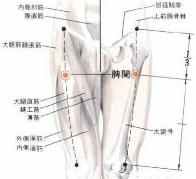
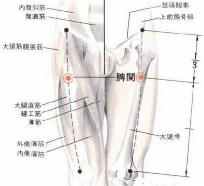
穴位名称: 百会穴
穴位名称拼音: Baihui
穴位国际通用代码: DU20
穴位别名: 中央穴，三阳五会穴，天满穴，天蒲穴，三阳穴，五会穴，巅上穴。
穴位释义: 头为诸阳之会，百脉之宗，而百会穴则为各经脉气会聚之处。穴性属阳，又于阳中寓阴，故能通达阴阳脉络，连贯周身经穴，对于调节机体的阴阳平衡起者重要的作用。百会穴与脑密切联系，是调节大脑功能的要穴。百脉之会，贯达全身。百脉之会，百病所主，故百会穴的治症颇多，为临床常用穴之一。本穴为头部养生第一穴，主平肝宁神。
穴位定位和取穴方法: 位于头部，前发际正中直上5寸。可以通过两耳角直上连线中点，来简易取此穴。
穴位解剖位置和结构: 在帽状腱膜中；有左右颞浅动、静脉及左右枕动、静脉吻合网；布有枕大神经及额神经分支。
穴位隶属五行:
穴位隶属经脉: 督脉，交会穴
穴位隶属经脉英文: Governor Vessel
穴位隶属经脉五行:
穴位治法-针刺: 平刺0.5~0.8寸。
穴位治法-灸法: 用艾灸器温灸该穴位，时间为三至五分钟，让罐体的温热、红外线及磁场刺激该穴位，可预头昏头痛、失眠、阳气不足、神经衰弱等疾病。坚持每天温灸，有保健长寿的功效。
穴位治法-按摩及其它: 用手掌按摩头顶中央的百会穴，每次按顺时针方向和逆时针方向各按摩50圈，每日2~3次。坚持按摩，低血压的现象就会逐渐消失。
穴位功能: 升阳举陷，益气固脱，开窍醒脑。
穴位主治与临床运用: 头痛，眩晕，中风，失语，休克，痔疮，高血压，低血压，宿醉，失眠，焦躁等。
穴位主要配伍: 1. 配天窗穴治中风失音不能言语；2. 配百会、长强穴、大肠俞穴治小儿脱肛；3. 配百会、人中穴、合谷穴、间使穴、气海穴、关元穴治尸厥、卒中、气脱；4. 配脑空穴、天枢穴治头风；5. 针刺百会，配耳穴的神门埋揿针戒烟；6. 配养老穴、百会、风池穴、足临泣穴治美尼尔氏综合症；7. 针百会透曲鬓穴、天柱穴治脑血管痉挛、偏头痛；8. 配百会、水沟穴、足三里穴治低血压；9. 配百会、水沟穴、京骨穴治癫痫大发作；10. 配百会、肾俞穴（回旋灸） 主治炎症。
穴位图片:  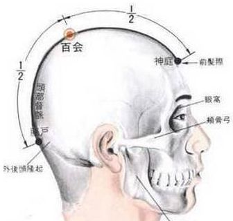
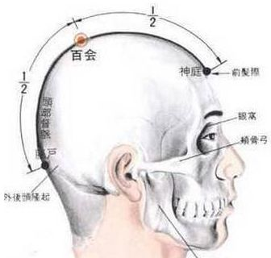
穴位名称: 百虫窝
穴位名称拼音: Baichongwo
穴位国际通用代码: EX-LE3
穴位别名: 血郄，百虫窠。
穴位释义: 百，基数词，众多之意：虫窝，致病之虫类寄居之处。百虫窝名意指本穴的气血物质其特性为湿热。本穴物质为聚集而成的脾经之气，性湿热，而本穴所应的时序、地域又为长夏的中土，是百虫的产生之时和繁衍之地。此穴有驱虫止痒之功，故名。凡是和风，虫等有关的疾病，都可以用百虫窝穴来调理，如风湿痒疹、皮肤瘙痒、下部生疮等。
穴位定位和取穴方法: 在大腿内侧，在股前区，髌底内侧端上3寸，当脾经血海上1寸处取之，左右计2穴。
穴位解剖位置和结构: 在股内侧肌中，穴区浅层有股神经前皮支分布；深层有股神经肌支和股动脉分布。
穴位隶属五行:
穴位隶属经脉: 经外奇穴
穴位隶属经脉英文: Non-meridian extra acupoint
穴位隶属经脉五行:
穴位治法-针刺: 直刺1.5~2寸。在百虫窝上，用刺血拔罐的方法强刺激泻热，各种各样的皮肤瘙痒症状就会减轻。
穴位治法-灸法: 艾炷灸3~7壮；艾条灸5~15分钟。
穴位治法-按摩及其它: 每天按摩百虫窝，尤其在冬季，可以有很好的止痒效果。
穴位功能: 祛风活血，驱虫止痒。
穴位主治与临床运用: 皮肤瘙痒症，荨麻疹，风湿痒疹，阴囊湿疹，下部生疮，蛔虫病，膝关节病，肾脏风疮，产后风。
穴位主要配伍: 1. 配曲池、血海能清热疏风，凉血止痒主治荨麻疹；2. 配曲池、合谷、间使、大陵、足三里、委中、行间能清热利湿主治疥疮、癣疮；3. 配四缝、三焦俞、胃俞、中脘能健脾消食，导滞驱虫主治疳积。
穴位图片:  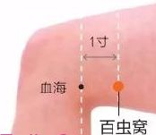
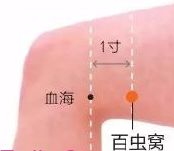
穴位名称: 秉风穴
穴位名称拼音: Bingfeng
穴位国际通用代码: SI12
穴位别名: 肩解。
穴位释义: 本穴物质为天宗穴传来的天部之气，上行至此后，因吸热胀散而化为风气，风气循小肠经而运行，如被执掌指使一般，故名。本穴主治颈椎病、肩胛疼痛、上肢酸麻等。
穴位定位和取穴方法: 在肩胛部，岗上窝中央，天宗直上，举臂有凹陷处。
穴位解剖位置和结构: 在肩胛岗上缘中央，表层为斜方肌，再下为岗上肌；有肩胛动、静脉；布有锁骨上神经和副神经，深层为肩胛上神经。
穴位隶属五行:
穴位隶属经脉: 手太阳小肠经
穴位隶属经脉英文: Small Instestine Meridian of Hand-Taiyang
穴位隶属经脉五行: 火
穴位治法-针刺: 直刺0.5~1寸。
穴位治法-灸法: 艾炷灸3~5壮；或艾条灸5~10分钟。
穴位治法-按摩及其它: 用大拇指按揉秉风约200次，或按揉3~5分钟，每天坚持，能治疗肩背疼痛。
穴位功能: 散风活络，止咳化痰。
穴位主治与临床运用: 肩周炎，肩胛疼痛，上肢酸麻，支气管炎等。
穴位主要配伍: 配天宗治肩胛疼痛。
穴位图片: 

穴位名称: 步廊穴
穴位名称拼音: Bulang
穴位国际通用代码: KI22
穴位别名: 步郎。
穴位释义: 步，步行也。廊，走廊也。该穴名意指肾经上传的湿冷水气在此吸热后化风上行。本穴物质为幽门穴传来的寒湿水气，至本穴后，水气吸热胀散化风而行，风气吹刮地部的脾土微粒滚动向上，如人在走廊中行走一般，故名。本穴位常用于治疗胸膜炎，肋间神经痛，鼻炎，嗅觉减退，胃炎，呕吐，食欲不振，支气管炎，腹直肌痉挛等病症。
穴位定位和取穴方法: 在胸部，当第5肋间隙，前正中线旁开2寸。
穴位解剖位置和结构: 在胸大肌起始部，有肋间外韧带及肋间内肌；有第五肋间动、静脉；布有第五肋间神经前皮支，深部为第五肋间神经。
穴位隶属五行:
穴位隶属经脉: 足少阴肾经
穴位隶属经脉英文: Kidney Channel of Foot-Shaoyin
穴位隶属经脉五行: 水
穴位治法-针刺: 斜刺0.3~0.5寸，不宜深刺。
穴位治法-灸法: 艾炷灸3~5壮；或艾条灸5~10分钟。
穴位治法-按摩及其它: 急性乳腺炎疾患，可自步廊向乳头方向推抹50~100次。
穴位功能: 运化脾土，宽胸理气，止咳平喘。
穴位主治与临床运用: 支气管炎，肋间神经痛，胃炎，胸痛，咳嗽，气喘，呕吐，乳痈。
穴位主要配伍: 1. 配定喘、列缺治外感和内伤咳喘；2. 配心俞、内关治胸痹、心悸怔忡。
穴位图片: 

穴位名称: 本神穴
穴位名称拼音: Benshen
穴位国际通用代码: BG13
穴位别名:
穴位释义: 本，人之根本也，气也，此指穴内物质为天部之气。神，在天为风也，指穴内物质的运行为风气的横向运动。本神名意指头之天部的冷凝水湿在此汇合后循胆经传输。本穴因其位处头角上部，为人之外侧，在人体坐标系中它和头顶的百会穴一样+F8皆处最高最外位置（本神与百会二穴如同二座不同的山之山顶）。由于胆经无循经传来的气血交于本穴，穴内气血处于空虚之状，穴外天部的冷凝水湿因而汇入穴内，穴内气血纯为天部之气，且其运行为横向下传阳白穴，故名。本穴主治头痛、目眩等。
穴位定位和取穴方法: 在头部，当前发际上0.5寸，神庭旁开3寸，神庭与头维连线的内三分之二与外三分之一交点处。
穴位解剖位置和结构: 有耳后动、静脉之支；布有枕大神经和枕小神经会合支。
穴位隶属五行:
穴位隶属经脉: 足少阳胆经
，阳维脉
穴位隶属经脉英文: Gallbladder Meridian of Foot-Shaoyang
穴位隶属经脉五行: 木
穴位治法-针刺: 平刺0.5~0.8寸。
穴位治法-灸法: 可灸。
穴位治法-按摩及其它: 用拇指指关节尖着力于本神穴之上，垂直用力按掐，按而揉之，使局部产生明显的酸、麻、胀、痛等感觉，持续数秒后，渐渐放松。 然后用大鱼际紧贴于穴位，前后轻擦，至局部发热为度。 如此反复操作、左右交替。 每次每穴按压5~10分钟，每日一两次。
穴位功能: 吸湿降浊。
穴位主治与临床运用: 血管（神经）性头痛，脑血管病，神经衰弱，小儿大脑发育不全，目眩，癫痫，小儿惊风，颈项强痛，胸胁痛，半身不遂。
穴位主要配伍: 1. 配前顶、囟会、天柱治小儿惊痫；2. 配水沟、太阳、合谷、大椎、天柱、百会治中风不省人事、小儿惊风。
穴位图片:
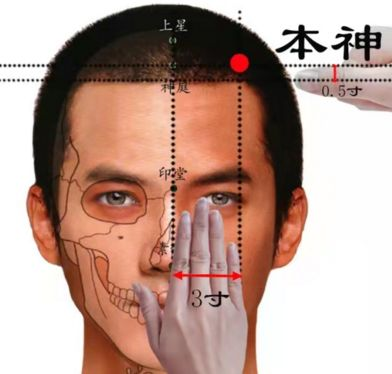
穴位名称: 白环俞
穴位名称拼音: Baihuanshu
穴位国际通用代码: BL30
穴位别名: 玉环俞，玉房俞，腰俞，解脊窬。
穴位释义: 人体藏精之处谓之“白环”或“玉环”。本穴内应精室，为人体精气输注之处，主治妇女白带过多，男子遗精白浊，故以为名。该穴名意指臀部肌肉层中的气化之气由本穴外输膀胱经。本穴主治月经不调、带下、腰骶痛等。
穴位定位和取穴方法: 骶区，横平第4骶后孔，骶正中嵴旁开1.5寸。
穴位解剖位置和结构: 在臀大肌，骶结节韧带下内缘，有臀下动、静脉，深层为阴部内动，静脉，布有臀中和臀下皮神经，深层为阴部神经。
穴位隶属五行:
穴位隶属经脉: 足太阳膀胱经
穴位隶属经脉英文: Bladder Meridian of Foot-Taiyang
穴位隶属经脉五行: 水
穴位治法-针刺: 直刺1-1~5寸。
穴位治法-灸法: 艾炷灸3~7壮；或艾条灸5~15分钟。
穴位治法-按摩及其它: 用大拇指按揉。 用大拇指按揉白环宇约200次，或按揉3~5分钟，能治疗腰腿痛。
穴位功能: 调经止带，补肾益精，通利小便。
穴位主治与临床运用: 遗尿，遗精，月经不调，带下，疝气，腰骶痛。腰骶痛，坐骨神经痛，子宫内膜炎，肛门诸肌痉挛，小儿麻痹后遗症，下肢瘫痪，便秘，尿闭。
穴位主要配伍: 1. 配委中穴治腰背痛。2. 配脾俞穴、肾俞穴、带脉穴、气海穴、足三里穴、三阴交穴、大肠俞穴治白带。3. 配关元穴、太溪穴、三阴交穴治遗精白浊。4. 配承扶穴、大肠俞穴治大小便不利。5. 配完骨穴、小肠俞穴、膀胱俞穴治小便黄。6. 配白环俞穴、小肠俞穴、中膂俞穴治腰脊痛。
穴位图片:
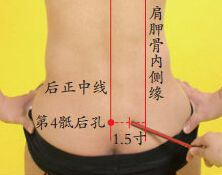
穴位名称: 胞肓穴
穴位名称拼音: Baohuang
穴位国际通用代码: BL53
穴位别名: 精宫穴。
穴位释义: 胞指膀胱，肓即肓膜。本穴物质为来自胞宫中的膏脂之物，在本穴散热后冷降归地，与心下膈膜中外输的膏脂之物同性，故名。本穴主治肠鸣、腹胀、便秘、癃闭、腰脊强痛等。
穴位定位和取穴方法: 在臀部，平第2骶后孔，骶正中嵴旁开3寸。
穴位解剖位置和结构: 有臀大肌，臀中肌及臀小肌；正当臀上动、静脉；布有臀上皮神经，深层为臀上神经。
穴位隶属五行:
穴位隶属经脉: 足太阳膀胱经
穴位隶属经脉英文: Bladder Meridian of Foot-Taiyang
穴位隶属经脉五行: 水
穴位治法-针刺: 直刺1~1.5寸。
穴位治法-灸法: 艾炷灸5~7壮；或艾条灸5~15分钟。
穴位治法-按摩及其它: 用大拇指按揉。 用大拇指按揉胞盲约200次，或按揉3~5分钟，每天坚持，能治疗腰痛、肠鸣、腹胀等疾病。
穴位功能: 补肾强腰，通利二便。
穴位主治与临床运用: 膀胱炎，尿道炎，尿潴留，睾丸炎，肠炎，腹胀，便秘，坐骨神经痛，腹直肌痉挛，腰背部软组织疾病。
穴位主要配伍: 配委中治腰痛。
穴位图片: 

穴位名称: 八邪穴
穴位名称拼音: Baxie
穴位国际通用代码: EX-UE9
穴位别名: 八关。
穴位释义: “八”，这里指数量，双手手背共有8个穴位点，“邪”，指的是邪气，疏通局部气血，预防各种致病因素入侵身体。故名。本穴主治手指关节疾病、头痛、咽痛等。
穴位定位和取穴方法: 位于手指背侧，微握拳，第1~第5指间，指蹼缘后方赤白肉际处，左右共8个穴位。
穴位解剖位置和结构: 穴下有皮肤、皮下组织和骨间肌。分布有桡神经浅支和尺神经指背支。
穴位隶属五行:
穴位隶属经脉: 经外奇穴
穴位隶属经脉英文: Non-meridian extra acupoint
穴位隶属经脉五行:
穴位治法-针刺: 向上斜刺0.5~0.8寸，或用三棱针点刺出血。
穴位治法-灸法: 用艾条温和灸治八邪穴10~15分钟，一天一次，可以缓解治疗手关节疾病、头痛、手脚冰冷等
穴位治法-按摩及其它: 1. 用大拇指指尖微用力压揉各50次，每天坚持，可治疗手指关节疾病、手指麻木等。2. 用刮痧板角部刮拭八邪穴，稍出痧即可，每一天一次，可以缓解治疗头痛、咽痛等。
穴位功能: 祛风通络，清热解毒。
穴位主治与临床运用: 手指关节疾病，手指麻木，烦热，目痛，头痛，项强，咽痛，牙痛，毒蛇咬伤，手臂红肿等。
穴位主要配伍:
穴位图片: 

穴位名称: 八风穴
穴位名称拼音: Bafeng
穴位国际通用代码: EX-LE10
穴位别名: 八冲，阴独八。
穴位释义: 八，基数词；风，风寒之邪，致病因素之一。共8穴，在足5趾趾间，故名。本穴主治牙痛，胃痛，月经不调等。
穴位定位和取穴方法: 位于足背侧，第1~5趾间，趾蹼缘后方赤白肉际处，一侧四穴，左右共八个穴位。正坐位或仰卧位，于足五趾各趾间缝纹头尽处取穴。
穴位解剖位置和结构: 穴下有皮肤、皮下组织，第三、四趾的趾长、短伸肌腱。分布有腓浅神经和腓肠神经。
穴位隶属五行:
穴位隶属经脉: 经外奇穴
穴位隶属经脉英文: Non-meridian extra acupoint
穴位隶属经脉五行:
穴位治法-针刺: 向上斜刺 0.5~0.8寸，或用三棱针点出血。
穴位治法-灸法: 用艾条温和灸治10~15分钟，一天一次，可治疗头痛、疟疾风病等。
穴位治法-按摩及其它: 1. 用大拇指尖掐揉八风穴各50次，长期按摩，有清热解毒的功效，可治疗牙痛、足跗肿痛、月经不调等病症。2. 用刮痧板解剖拭八风，稍出痧即可，一天一次，可治疗脚气、脚背经肿等。
穴位功能: 祛风通络，清热解毒。
穴位主治与临床运用: 牙痛，胃痛，头痛，齿神经痛，间歇热，肺出血，足跗肿痛，月经不调等。
穴位主要配伍:
穴位图片: 

穴位名称: 尺泽穴
穴位名称拼音: Chize
穴位国际通用代码: LU5
穴位别名: 鬼受，鬼堂。
穴位释义: 前臂内侧称尺；泽，指沼泽，低洼水聚之处。本穴是手太阴经之合穴，属水，位在肘窝，手太阴脉气至此，象水之归聚处，故名。本穴主清宣肺气，泻火降逆等。
穴位定位和取穴方法: 位于人体的手臂肘部，取穴时先将手臂上举，在手臂内侧中央处有粗腱，腱的外侧外即是此穴（或在肘横纹中，肱二头肌桡侧凹陷处）。该穴上方3~4厘米处用手强压会感到疼痛处，就是“上尺泽”。
穴位解剖位置和结构: 皮肤->皮下组织-〉肱桡肌-〉肱肌。浅层有前臂外侧皮神经分布；深层有桡神经干经过，并有桡神经深支，肌皮神经肌支和桡侧副动脉前支（肱深动脉分支）分布。 在肘关节，当肘二头肌腱之外方，肱桡肌起始部；有桡侧返动、静脉分支及头静脉；布有前臂外侧皮神经，直下为桡神经。
穴位隶属五行: 水
穴位隶属经脉: 手太阴肺经
穴位隶属经脉英文: Lung Meridian of Hand-Taiyin
穴位隶属经脉五行: 金
穴位治法-针刺: 直刺0.3~0.5寸。
穴位治法-灸法: 艾条灸5~10分钟。
穴位治法-按摩及其它: 首先以拿捏法拿捏小指的少泽穴20 次，再揉按膻中穴2分钟，接着按压尺泽穴30次，最后用中指和无名指的指腹稍微用力按压乳根穴3分钟。每天坚持直至完全康复。治急性乳腺炎。
穴位功能: 清热和胃，通络止痛，清宣肺气，泻火降逆。
穴位主治与临床运用: 感冒，咽喉肿痛，扁桃体炎，喉炎，咽炎，支气管炎，百日咳，肺炎，胸膜炎，肋间神经痛，丹毒，胎位不正，麻疹，高血压，肺结核，急性胃肠炎，肘关节及周围软组织疾病。
穴位主要配伍: 1. 配合谷穴，有行气活络，祛瘀止痛的作用，主治肘臂挛痛，肘关节屈伸不利。2. 配肺俞穴，有降气止咳平喘的作用，主治咳嗽，气喘。3. 配委中穴，有清热化湿的作用，主治吐泻。4. 配太渊穴，经渠治咳嗽，气喘。5. 配孔最穴治咳血，潮热。6. 配曲池穴治肘臂挛痛。
穴位图片:
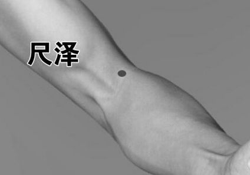
穴位名称: 攒竹穴
穴位名称拼音: Cuanzhu
穴位国际通用代码: BL2
穴位别名: 眉头，眉本，员在，始光，夜光，明光，光明，员柱。
穴位释义: 攒竹。攒，聚集也。竹，山林之竹也。攒竹名意指膀胱经湿冷水气由此吸热上行。本穴主治头痛、眩晕、近视、呕吐等。
穴位定位和取穴方法: 在面部，当眉头陷中，眶上切迹处。
穴位解剖位置和结构: 布有额神经内侧支和额动、静脉。
穴位隶属五行:
穴位隶属经脉: 足太阳膀胱经
穴位隶属经脉英文: Bladder Meridian of Foot-Taiyang
穴位隶属经脉五行: 水
穴位治法-针刺: 向眉中或向眼眶内缘平刺或斜刺0.5~0.8寸，或直刺0.2~0.3寸。
穴位治法-灸法: 禁灸。
穴位治法-按摩及其它: 1. 用拇指按揉攒竹穴100~200次，每天坚持，可缓解治疗呃逆。2. 按摩攒竹穴，用大拇指和食指以画圈的方式按压此穴位，可令疲劳的双眼立刻得到放松。3. 轻闭双眼，取刮痧板呈45°角从眉头刮至眉尾，1~3分钟。每天一次，可改善头痛、眼疾。
穴位功能: 吸热生气，疏肝明目，醒脑。
穴位主治与临床运用: 头痛，眩晕，呕吐，口眼歪斜，目视不明，流泪，目赤肿痛，眼睑动，眉棱骨痛，眼睑下垂，急性腰扭伤，面肌痉挛。
穴位主要配伍: 1. 配后溪、腋门治疗目赤肿痛；2. 配列缺、颊车主治面瘫、面肌痉挛。
穴位图片:
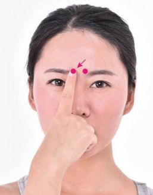
穴位名称: 次髎穴
穴位名称拼音: Ciliao
穴位国际通用代码: BL32
穴位别名:
穴位释义: 次，与上髎穴相对为次也。髎，孔隙也。该穴名意指膀胱经的地部经水由此从体表流入体内。本穴物质为膀胱经上部经脉下行的地部水液，至本穴后，由本穴的地部孔隙从地之天部流入地之地部，故名。本穴主治疝气、大小便不利、痛经、腰痛等。
穴位定位和取穴方法: 在骶部，当髂后上棘内下方，适对第2骶后孔处。
穴位解剖位置和结构: 在臀大肌起始部；当骶外侧动、静脉后支处；为第二骶神经后支通过处。
穴位隶属五行:
穴位隶属经脉: 足太阳膀胱经
穴位隶属经脉英文: Bladder Meridian of Foot-Taiyang
穴位隶属经脉五行: 水
穴位治法-针刺: 直刺1~1.5寸。
穴位治法-灸法: 艾炷灸3~7壮；或艾条灸5~15分钟。
穴位治法-按摩及其它: 单手握空拳利用拳背敲击穴位，亦可双手可以同时敲击，按摩时可以稍带力道，会有明显敲击声响，刺激穴位通过神经孔传递到盆腔穴道里。按摩具有治疗腰痛、月经不调、痛经、遗精、下肢痿痹等作用功效益处。
穴位功能: 补益下焦，健脾除湿，强腰利湿。
穴位主治与临床运用: 疝气，月经不调，痛经，带下，小便不利，遗精，腰痛，下肢痿痹，子宫内膜炎，盆腔炎，性功能障碍，泌尿感染。
穴位主要配伍: 1. 配三阴交、中极、肾俞治遗尿；2. 配三阴交主治月经不调、痛经。3. 配委中主治腰骶疼痛。4. 配血海治痛经。
穴位图片: 

穴位名称: 承浆穴
穴位名称拼音: Chengjiang
穴位国际通用代码: RN24
穴位别名: 天池，鬼市，悬浆，羕浆，垂浆。
穴位释义: 承浆。承，承受也。浆，水与土的混和物也。该穴名意指任脉的冷降水湿及胃经的地部经水在此聚集。本穴物质为胃经地仓穴传来的地部经水以及任脉廉泉穴冷降的地部水液，至本穴后为聚集之状，本穴如同地部经水的承托之地，故名。本穴主生津敛液、舒筋活络等。
穴位定位和取穴方法: 位于人体的面部，当颏唇沟的正中凹陷处。
穴位解剖位置和结构: 在口轮匝肌和颏肌之间；有下唇动、静脉分支；布有面神经及颏神经分支。
穴位隶属五行:
穴位隶属经脉: 任脉，任脉与足阳明胃经的交会穴
穴位隶属经脉英文: Crossing points
穴位隶属经脉五行:
穴位治法-针刺: 斜刺0.2~0.3寸。
穴位治法-灸法: 艾条灸5~10分钟。
穴位治法-按摩及其它: 端坐坐位，用食指指腹按压该穴位，或用食指或中指指腹点揉穴位，力度轻柔而渗透，不可过度用力，以局部有酸胀感为佳，早晚一次，每次点揉三五分钟，可以起到很好保健的作用。
穴位功能: 生津敛液 舒筋活络。
穴位主治与临床运用: 口眼歪斜，口腔溃疡，颈项强痛，唇紧，面肿，齿痛，齿衄，龈肿，流涎，口舌生疮，暴喑不言，消渴嗜饮，小便不禁，癫痫。
穴位主要配伍: 1. 配委中穴治衄血不止；2. 配风府穴治头项强痛，牙痛。3. 配攒竹穴、四白穴治面肌痉挛。4. 配下关穴、合谷穴治三叉神经痛。
穴位图片:
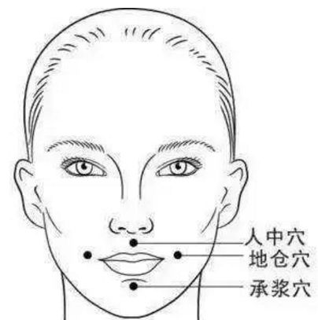
穴位名称: 承泣穴
穴位名称拼音: Chengqi
穴位国际通用代码: ST1
穴位别名: 鼷穴，面髎，溪穴。
穴位释义: 承泣。承，受也。泣，泪也、水液也。承泣名意指胃经体内经脉气血物质由本穴而出。本穴物质即为胃经体内经脉气血上行所化，在体内经脉中，气血物质是以气的形式而上行，由体内经脉出体表经脉后经气冷却液化为经水，经水位于胃经之最上部，处于不稳定状态，如泪液之要滴下，故名承泣。承泣穴是胃经最靠近眼睛的穴位，是眼睛的保健要穴。
穴位定位和取穴方法: 在面部，瞳孔直下，当眼球与眶下缘之间。
穴位解剖位置和结构: 在眶下缘上方，眼轮匝肌中，深层眶内有眼球下直肌，下斜肌；有眶下动、静脉分支，眼动、静脉的分支；布有眶下神经分支及动眼神经下支的肌支，面神经分支。
穴位隶属五行:
穴位隶属经脉: 足阳明胃经，阳跷脉
穴位隶属经脉英文: Stomach Meridian of Foot-Yangming
穴位隶属经脉五行: 土
穴位治法-针刺: 直刺，嘱患者眼向上看，轻轻固定眼球，沿眶下壁缓缓刺入0.5~1寸，不宜过深。勿大幅度捻转提插，出针后局部压迫1~2分钟，以防出血。或平刺0.5~0.8寸，透向目内眦，局部酸胀，可致流泪。 如果针刺过深或斜刺可刺伤视神经，当深达2寸时可通过神经管刺伤脑，造成严重后果。
穴位治法-灸法: 禁灸。
穴位治法-按摩及其它: 将双手直指伸直，以食指指腹揉按左右穴位，每次1~3分钟。可治疗眼部疾病。
穴位功能: 散风清热，明目止泪。
穴位主治与临床运用: 目赤肿痛，迎风流泪，夜盲，色盲，近视，远视，散光，口眼歪斜，及急，慢性结膜炎，白内障，老花眼，青光眼，斜视，视神经萎缩，面神经麻痹、面肌痉挛等。
穴位主要配伍: 1. 承泣配风池、睛明，耳尖放血，有疏风清热，泻火解毒的作用，主治目赤肿痛。2. 承泣配足三里、合谷、攒竹、风池，有补益气血，祛风清热的作用，主治眼胞睑外翻及口眼歪斜。
穴位图片:
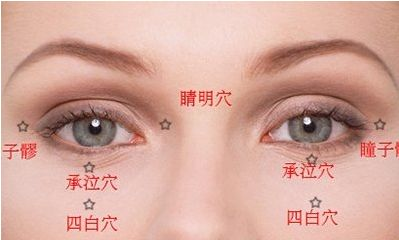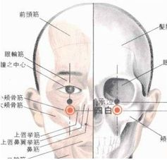
穴位名称: 承扶穴
穴位名称拼音: Chengfu
穴位国际通用代码: BL36
穴位别名: 肉郄，阴关，皮部。
穴位释义: 承扶。承，承担、承托也。扶，扶助也。承扶名意指膀胱经的地部经水在此大量蒸发外散。本穴物质为膀胱经下行的地部经水和经水中夹带的脾土微粒，由于膀胱经经水在上、次、中、下髎穴四穴处大部分流落于地之地部，至本穴后气血物质实已变为经水与脾土微粒的混合物。气血物质在本穴的变化为吸热气化，水湿气化上行于天部，脾土微粒则固化于穴周，固化的脾土物质质干坚硬，能很好地承托并阻止随膀胱经经水流失的脾土，故名。本穴主治腰骶臀股部疼痛、痔疾及增强性功能等。
穴位定位和取穴方法: 在大腿后面，臀下横纹的中点。
穴位解剖位置和结构: 在臀大肌下缘；有坐骨神经伴行的动、静脉；布有股后皮神经，深层为坐骨神经。
穴位隶属五行:
穴位隶属经脉: 足太阳膀胱经
穴位隶属经脉英文: Bladder Meridian of Foot-Taiyang
穴位隶属经脉五行: 水
穴位治法-针刺: 直刺 1~2寸。寒则先泻后补或补之灸之或点刺出血，热则泻针出气或水针。
穴位治法-灸法:
穴位治法-按摩及其它: 承扶穴是性感带最为密集的地方，指压时可以用力些。主导生殖器官的神经从此处经过，经常按压可以增加对性的感受力.常按摩此穴可以增强性功能。1. 按摩承扶穴时用腰背挺直且提肛，慢慢吸气，除大拇指以外四指头稍带力道按压承扶穴位，往上按压约6秒钟后，将气吐出，按摩动作重复10次，可每日早晚各10次。该穴位为性感带神经最密集之处，按摩效果佳。另外，按摩承扶穴具有舒筋活络的作用功效，也防止屁股臀部下垂，阻断赘肉脂肪囤积，承扶穴对减肥亦有功效益处。 2. 在伏兔穴、血海穴、足三里穴、风市穴、承扶穴、三阴交穴、悬钟穴、委中穴、承山穴这9个穴位上刮痧可以瘦腿，先在腿上涂上油，腿自然曲起，让小腿处于最自然放松的状态，然后用刮痧板从脚膝盖到脚跟，每天刮20分钟，或是左右腿各100下。重点位置在上述的9个穴位上。
穴位功能: 燥湿生气，润肠消痔，舒筋活血。
穴位主治与临床运用: 腰骶臀股部疼痛，痔疾，性欲弱。
穴位主要配伍: 配委中穴治腰骶疼痛。
穴位图片: 

穴位名称: 承满穴
穴位名称拼音: Chengman
穴位国际通用代码: ST20
穴位别名:
穴位释义: 承，受也。满，满盛也。该穴名意指胃经的地部经水在此满溢而行。本穴物质为不容穴传来的地部经水，因本穴所处为腹部肉之陷，故而地部经水为屯积之状，又因本穴肉陷也浅，经水一注即满，故名。本穴主治胃痛、吐血、食欲不振、腹胀等。
穴位定位和取穴方法: 在上腹部，当脐中上5寸。距前正中线2寸。
穴位解剖位置和结构: 穴下为皮肤、皮下组织、腹直肌鞘前层、腹直肌、腹直肌鞘后层、腹横筋膜、腹膜下筋膜。皮肤由第6、7、8肋间神经的前皮支分布。皮下筋膜内有皮神经和胸腹壁浅静脉的属支。针由皮肤、皮下筋膜经腹深筋膜入腹直肌鞘前层。该层由腹外斜肌腱和腹内斜肌腱膜的前叶形成。针深进入腹直肌，至其鞘后的腹内斜肌腱膜的后叶和腹横肌腱膜。鞘内肌及鞘则由肋间神经分布，由肋间血管与腹壁上、下动脉营养。
穴位隶属五行:
穴位隶属经脉: 足阳明胃经
穴位隶属经脉英文: Stomach Meridian of Foot-Yangming
穴位隶属经脉五行: 土
穴位治法-针刺: 直刺0.5~0.8寸，上腹部沉重发胀。
穴位治法-灸法: 艾炷灸3~5壮；或艾条灸5~10分钟。
穴位治法-按摩及其它: 用双手手指端按压承满穴，并做环状运动。力度较轻。每次3分钟左右，每日2次。
穴位功能: 理气和胃，消食导滞，降逆止呕。
穴位主治与临床运用: 胃痛，呕吐，腹胀，胃炎，十二指肠溃疡，纳呆，吞酸，肠鸣，泄泻等。
穴位主要配伍: 1. 配足三里穴治胃痛。2. 配上脘、胃俞治寒邪客胃。3. 配梁门、下脘治饮食停滞。4. 配太冲、期门治肝气犯胃。5. 配膈俞、三阴交治气滞血瘀。6. 配脾俞、胃俞、关元治脾胃虚寒。7. 配三阴交、内庭治胃阴不足。
穴位图片: 

穴位名称: 承筋穴
穴位名称拼音: Chengjin
穴位国际通用代码: BL56
穴位别名: 腨肠，直肠。
穴位释义: 承筋。承，承受也。筋，肝所主的风也。承筋名意指膀胱经的上行阳气在此化风而行。本穴物质为膀胱经足下部各穴上行的阳热之气，至本穴后为风行之状，故名。本穴主治痔疾、腰腿拘急疼痛等。
穴位定位和取穴方法: 在小腿后面，当委中与承山的连线上，腓肠肌肌腹中央，委中下5寸。
穴位解剖位置和结构: 在腓肠肌两肌腹之间；有小隐静脉，深层为腓后动、静脉；布有腓肠内侧皮神经，深层为腓神经。
穴位隶属五行:
穴位隶属经脉: 足太阳膀胱经
穴位隶属经脉英文: Bladder Meridian of Foot-Taiyang
穴位隶属经脉五行: 水
穴位治法-针刺: 直刺l~1.5寸。
穴位治法-灸法:
穴位治法-按摩及其它: 按摩承筋穴用大拇指按揉或按压穴道100~200次，每次按摩约2~3分钟即可。每天坚持按摩具有治腰腿痛、便秘、急性腰扭伤、小腿痛等保健功效益处。
穴位功能: 舒筋活络，强健腰膝，清泄肠热。
穴位主治与临床运用: 小腿痛，腓肠肌痉挛，腰背痛，痔疮，脱肛，便秘。
穴位主要配伍: 配委中治下肢挛痛。
穴位图片:
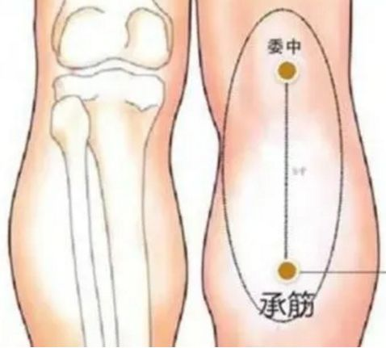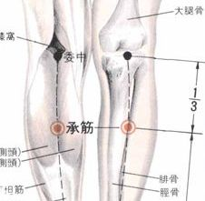
穴位名称: 承山穴
穴位名称拼音: Chengshan
穴位国际通用代码: BL57
穴位别名: 鱼腹，肉柱，伤山，鱼肠，肠山，鱼腹山，玉柱，鱼腰穴。
穴位释义: 承山。承，承受、承托也。山，土石之大堆也，此指穴内物质为脾承山穴土。承山名意指随膀胱经经水下行的脾土微粒在此固化。本穴物质为随膀胱经经水上行而来的脾土与水液的混合物，行至本穴后，水液气化而干燥的脾土微粒则沉降穴周，沉降的脾土堆积如大山之状，故名承山。承山穴一方面是全身承受压力最多筋，骨，肉的集结之处，是人体阳气最盛的经脉的枢纽，是去除人体湿气的最好穴位。
穴位定位和取穴方法: 位于小腿后面正中，委中与昆仑穴之间，当伸直小腿或足跟上提时，腓肠肌肌腹下出现的尖角凹陷处，就是本穴位置。
穴位解剖位置和结构: 皮肤→皮下组织→腓肠肌→比目鱼肌。在腓肠肌两肌腹交界下端；浅层布有小隐静脉和腓肠内侧皮神经。深层有胫神经和胫后动、静脉。
穴位隶属五行:
穴位隶属经脉: 足太阳膀胱经
穴位隶属经脉英文: Bladder Meridian of Foot-Taiyang
穴位隶属经脉五行: 水
穴位治法-针刺: 直刺1~2寸。
穴位治法-灸法:
穴位治法-按摩及其它: 1. 拇指翘立，用力点按承山穴，尽量用力，并坚持点住不要放松，直至肌肉痉挛缓解为止。2. 刮痧拔罐：取双承山穴刮痧后拔罐，留罐10~15分钟。
穴位功能: 理气止痛，舒筋活络，运化水湿，固化脾土。
穴位主治与临床运用: 肩周炎，落枕，腰肌劳损，急性腰扭伤，坐骨神经痛，膝盖劳累，便秘，痔疮，脱肛，痛经，腰背痛，腰腿痛，抽筋，下肢瘫痪，腓肠肌痉挛，腓肠肌劳损，足部劳累，小儿惊风。
穴位主要配伍: 1.配条口穴，治疗肩周炎有奇效。2.配大肠俞穴治痔疾
穴位图片: 

穴位名称: 冲门穴
穴位名称拼音: Chongmen
穴位国际通用代码: SP12
穴位别名: 慈宫穴，上慈宫穴，冲脉穴，前章门穴。
穴位释义: 冲门。冲，冲射、冲突也。门，出入的门户也。该穴名意指脾经下部诸穴传来的经气由本穴上冲腹部。本穴物质为脾经腿膝下部经气汇聚而成，在本穴的运行为受热后的上冲之状，故名。本穴主治腹痛、疝气、崩漏、带下等。
穴位定位和取穴方法: 在腹股沟外侧，距耻骨联合上缘中点3.5寸，当髂外动脉搏动处的外侧。仰卧位，平耻骨联合上缘中点旁开3.5寸处取穴。约当腹股沟外端上缘，股动脉外侧。
穴位解剖位置和结构: 穴下为皮肤、皮下组织、腹外斜肌腱膜、腹内斜肌和腹横肌起始部。皮肤由髂腹下神经分布。皮下筋膜分为脂肪层和膜性层。前者以脂肪组织为主，其厚薄亦因人而异；后者以纤维组织为主，在腹股沟韧带下方一横指附 着在阔筋膜。两层之间有腹壁浅动静脉、肋间动静脉（下位）及皮神经经过。
穴位隶属五行:
穴位隶属经脉: 足太阴脾经，阴维脉
穴位隶属经脉英文: Spleen Meridian of Foot-Taiyin
穴位隶属经脉五行: 土
穴位治法-针刺: 避开动脉，直刺0.5~0.7寸，腹股沟酸胀，可扩散至外阴部。
穴位治法-灸法: 间接灸3~5壮；或艾条灸10~20分钟。
穴位治法-按摩及其它: 用双手拇指指腹按压冲门穴，用力方向由内向外，每次30秒左右，每日可多做几次。
穴位功能: 健脾化湿，理气解痉，运化脾土。
穴位主治与临床运用: 胃肠痉挛，腹痛，疝气，崩漏，带下，产后血崩，子宫内膜炎，乳腺炎，尿潴留，睾丸炎。
穴位主要配伍: 配大敦穴治疝气。
穴位图片: 

穴位名称: 冲阳穴
穴位名称拼音: Chongyang
穴位国际通用代码: ST42
穴位别名: 会原穴，跗阳穴，会屈穴，会涌穴，会骨穴。
穴位释义: 冲阳。冲，穴内物质运动之状。阳，阳气。该穴名意指本穴的地部经水气化冲行天部。本穴物质为解溪穴传来的地部经水，因有解溪穴的分流，传至本穴的经水较为稀少，经水受脾土之热而大量气化冲行于天，故名。本穴主和胃化痰，通络宁神等。
穴位定位和取穴方法: 在足背最高处，当姆长伸肌腱与趾长伸肌腱之间，足背动脉搏动处。仰卧或正坐平放足底。取患侧冲阳穴，避开动脉，直刺0.2~0.3寸。要求得气明显，行捻转手法，平补平泻。留针20~30分钟。
穴位解剖位置和结构: 在趾长伸肌腱外侧；有足背动、静脉及足背静脉网；当腓浅神经的足背内侧皮神经第二支本干处，深层为腓深神经。
穴位隶属五行:
穴位隶属经脉: 足阳明胃经
穴位隶属经脉英文: Stomach Meridian of Foot-Yangming
穴位隶属经脉五行: 土
穴位治法-针刺: 避开动脉，直刺0.3~0.5寸。电针冲阳穴治疗疼痛。使用频率为每秒钟100~200次为最理想，输出功率以肌肉明显的收缩或患者感觉较麻为限，镇痛所需要的刺激时间一般30分钟以上。
穴位治法-灸法: 点燃艾条，对准穴位灸，距离皮肤2~3厘米，艾灸5~7分钟，以皮肤感觉热而不烫为宜。
穴位治法-按摩及其它: 用小鱼际敲击冲阳穴2~3分钟，长期按摩，可改善口眼歪斜、癫痫。
穴位功能: 和胃化痰，通络宁神。
穴位主治与临床运用: 面神经麻痹，口眼歪斜，癫狂痫，眩晕，胃痉挛，胃炎，风湿性关节炎，网球肘，足扭伤，牙痛。
穴位主要配伍: 1. 配足三里穴、仆参穴、飞扬穴、复溜穴、完骨穴，有补益气血，润养经筋的作用，主治足痿失履不收。2.配丰隆穴，治狂妄行走，登高而歌，弃衣而走。
穴位图片:  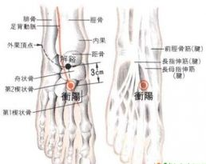
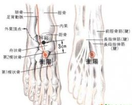
穴位名称: 长强穴
穴位名称拼音: Changqiang
穴位国际通用代码: DU1
穴位别名: 阴郄，橛骨，气郄，为之，骨骶，尾闾
穴位释义: 古人修练气功，小周天即是打通任督二脉，以意导气，起自督脉尾闾，循脊骨，上百会，下龈交，接任脉，下行循胸至脐腹，抵会阴复合于督脉，气如此升降轮回，循环不止，故名长强。长强穴是督脉的起始穴，阳气就从这里开始生发。本穴为调理肠腑之养生大穴。
穴位定位和取穴方法: 在尾骨尖端下，尾骨尖端与肛门连线的中点处。
穴位解剖位置和结构: 有肛门动、静脉分支。分布着尾神经后支及肛门神经。
穴位隶属五行:
穴位隶属经脉: 督脉，冲脉，督脉、肾经、胆经的交会穴
穴位隶属经脉英文: Governor Vessel
穴位隶属经脉五行:
穴位治法-针刺: 紧靠尾骨前面斜刺0.5~1寸。
穴位治法-灸法: 艾炷灸3~7壮；或艾条灸5~15分钟。
穴位治法-按摩及其它: 俯卧，双脚稍稍分开，用手指揉，按压长强穴，每次揉4分钟，双手交替按摩。每日2次。
穴位功能: 通便止泻，镇痉止痛。
穴位主治与临床运用: 遗精，遗尿，阳痿，便血，痔疮，脱肛，腹泻，痢疾，便秘，小儿惊风，癫痫，癔病，尾骶骨痛，腰神经痛，前列腺炎。
穴位主要配伍: 1. 配承山，有清热通便，活血化瘀的作用，主治痔疾，便结。2. 配小肠俞，有行气通腑，分清泌浊的作用，主治大小便难，淋症。3. 配身柱，有行气通督的作用，主治脊背疼痛。4. 配百会，有通调督脉，益气升阳的作用，主治脱肛，头昏。
穴位图片: 

穴位名称: 承光穴
穴位名称拼音: Chengguang
穴位国际通用代码: BL6
穴位别名:
穴位释义: 承，受也。光，亮也，阳也，热也。该穴名意指膀胱经气血在此进一步受热胀散。本穴物质为五处穴传来的凉湿水气，至本穴后进一步受热胀散，如受之以热一般，故名。本穴主治头痛、目眩、癫痫等。
穴位定位和取穴方法: 在头部，当前发际正中直上2.5寸，旁开1.5寸。正坐或仰卧位，在五处后1.5寸，五处与通天之间取穴。另说在前发际上3寸（《针灸甲乙经》）；前发际上2寸（《千金要方》）》。
穴位解剖位置和结构: 有帽状腱膜；有额动、静脉，颞浅动、静脉及枕动、静脉的吻合网；当额神经外侧支和枕大神经会合支处。
穴位隶属五行:
穴位隶属经脉: 足太阳膀胱经
穴位隶属经脉英文: Bladder Meridian of Foot-Taiyang
穴位隶属经脉五行: 水
穴位治法-针刺: 平刺0.3~0.5寸。
穴位治法-灸法: 艾炷灸3壮；或艾条灸5~10分钟。本穴经书列为禁不可灸，其理与五处穴不可灸相近，原因在于本穴气血由五处穴提供，水湿成份比五处穴更少，施灸只能熬干穴内地部之水，所灸之热则内传于颅脑并使之受损，故列为禁灸。
穴位治法-按摩及其它: 用食指的指腹按压穴位，左右穴位每次按压1~3分钟。
穴位功能: 清热明目，疏风散热。
穴位主治与临床运用: 头痛，目眩，鼻塞，热病，面神经麻痹，角膜白斑，鼻息肉，鼻炎，内耳眩晕症。
穴位主要配伍: 1. 配百会治头痛。2. 配解溪主治目眩。
穴位图片: 

穴位名称: 承灵穴
穴位名称拼音: Chengling
穴位国际通用代码: GB18
穴位别名:
穴位释义: 承灵。承，承受也。灵，神灵也，天部之气也。该穴名意指头之天部的寒湿水气由此汇入胆经。本穴物质为正营穴传来的天部阳气，至本穴后，此气散热并吸湿冷降，头之天部的寒湿之气亦随之汇入穴内，本穴如有承受天部寒湿水气的作用，故名。本穴主治头痛、眩晕、目痛等。
穴位定位和取穴方法: 承灵穴位于人体的头部，当前发际上4寸，头正中线旁开2.25寸。另说入发际3.5寸（《千金翼方》）；入发际5寸（《针灸大成》。
穴位解剖位置和结构: 在帽状腱膜中，布有枕大神经分支和枕动、静脉分支。
穴位隶属五行:
穴位隶属经脉: 足少阳胆经，阳维脉
穴位隶属经脉英文: Gallbladder Meridian of Foot-Shaoyang
穴位隶属经脉五行: 木
穴位治法-针刺: 平刺0.3~0.5寸。
穴位治法-灸法: 艾条灸5~10分钟。
穴位治法-按摩及其它: 用大拇指或中指按揉承灵约200次，或按揉35分钟，能治疗头痛、眩晕等。
穴位功能: 通利官窍，散风清热。
穴位主治与临床运用: 头晕，眩晕，目痛，耳鸣，项强，鼻渊，鼻出血，鼻窒，多涕。
穴位主要配伍: 配风池穴、风门穴、后溪穴治鼻出血。
穴位图片:  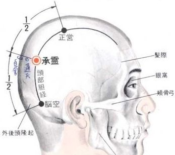
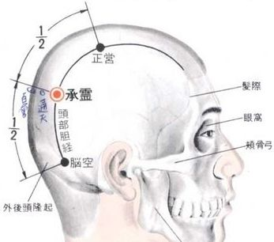
穴位名称: 瘈脉穴
穴位名称拼音: Chimai
穴位国际通用代码: SJ18
穴位别名: 资脉穴，体脉穴，资生穴
穴位释义: 瘈脉。瘈，指犬的发狂之状，此指穴内气血为急速运行之状。脉，脉气也，经脉中的气血也。瘈脉名意指三焦经冷缩收引的下行水气在此急速胀散。本穴物质为颅息穴下传而来的水湿之气和翳风穴上传的阳热风气，二者相会后，水湿之气吸热并急速胀散冲出穴外，气之外冲如犬发狂时的狂奔之状，故名。本穴主活络通窍，主治头面五官和神经系统疾病等。
穴位定位和取穴方法: 在头部，耳后乳突中央，当角孙至翳风之间，沿耳轮连线的中、下三分之一的交点处。正坐或侧伏，于耳后发际与外耳道口平齐处取穴。
穴位解剖位置和结构: 本穴下为皮肤、皮下组织、耳后肌。皮肝由耳大神经的耳后支分布。皮下组织后，除颈丛的耳大神经的分布外，还有耳后动、静脉经过。针由皮肤穿皮下筋膜，该处无深筋膜，所以直入耳后肌，该肌由面神经的耳后支支配。
穴位隶属五行:
穴位隶属经脉: 手少阳三焦经
穴位隶属经脉英文: Sanjiao Meridian of Hand-shaoyang
穴位隶属经脉五行: 火
穴位治法-针刺: 平刺0.3~0.5寸，局部酸胀；或用三棱针点刺出血 。
穴位治法-灸法: 艾炷灸3~5壮，艾条灸5~10分钟或用灯草灸。
穴位治法-按摩及其它: 将食指和中指并拢轻轻贴于耳后根处，顺时针方向按摩瘈脉1~3分钟，每天早晚各1次。可治头痛、耳鸣、耳聋等症。
穴位功能: 活络通窍，熄风解痉，燥湿化气。
穴位主治与临床运用: 头面五官科疾病：耳聋耳鸣，视物不清。消化系统疾病：呕吐泄泻。神经系统疾病：小儿惊痫，惊恐，瘈疭。其他疾病：头痛等。
穴位主要配伍: 配翳风穴、耳门穴、听宫穴、听会穴、百会穴治耳硬化症，提高听力。
穴位图片:
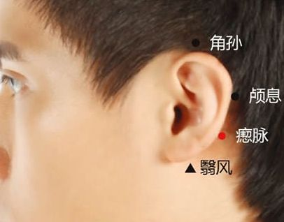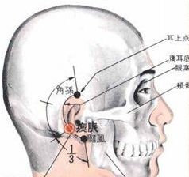
穴位名称: 地仓穴
穴位名称拼音: Dicang
穴位国际通用代码: ST4
穴位别名: 会维，胃维
穴位释义: 地，脾胃之土也。仓，五谷存储聚散之所也。该穴名意指胃经地部的经水在此聚散。本穴物质为胃经上部诸穴的地部经水汇聚而成，经水汇聚本穴后再由本穴分流输配，有仓储的聚散作用，故名。本穴为健脾要穴。
穴位定位和取穴方法: 在面部，口角外侧，口角旁开0.4寸，上直对瞳孔。正坐位，直视前方，沿瞳孔直下垂直线向下轻推，至与口角水平线的交点处，按之有酸胀感。
穴位解剖位置和结构: 穴下为皮肤、皮下组织、口轮匝肌、笑肌和颊肌、咬肌。皮肤由上、下颌神经的分支双重支配。因针横向外刺，所以针由皮肤经皮下组织，穿口角 外侧的口轮匝肌，该部肌质则由降口角肌、颊肌、提上唇肌、提上唇鼻肌的纤维交错。在面神经外侧，针行经笑肌和颊肌之间，再入咬肌。以上表情肌由面神经的分支支配，而咬肌则由下颌神经的咬肌神经支配。
穴位隶属五行:
穴位隶属经脉: 足阳明胃经，阳跷脉
穴位隶属经脉英文: Stomach Meridian of Foot-Yangming
穴位隶属经脉五行: 土
穴位治法-针刺: 直刺0.2寸，局部胀痛；或治面瘫时向颊车方向平刺1.0~2.5寸；或向迎香穴透刺治疗三叉神经痛，局部酸胀可扩散至半侧面部，有时出现口角牵掣感。
穴位治法-灸法: 温针灸3~5壮。
穴位治法-按摩及其它: 用拇指指腹揉按地仓穴100~200次，每天坚持可治疗口角歪斜、流涎。长期坚持用食指指甲垂直下压两侧地仓穴，稍用力掐揉，每次1~3分钟。
穴位功能: 祛风止痛，舒筋活络，活血化瘀。
穴位主治与临床运用: 口眼歪斜，流涎，眼睑瞤动，齿痛，颊肿，及面神经麻痹，三叉神经痛等。
穴位主要配伍: 1. 配翳风治耳后痛。2. 配廉泉治舌麻、味觉消失。3. 配丝竹治空闭眼困难。4. 配水沟治人中沟歪斜。
穴位图片: 

穴位名称: 地机穴
穴位名称拼音: Diji
穴位国际通用代码: SP8
穴位别名: 脾舍
穴位释义: 地机。地，脾土也。机，机巧、巧妙也。该穴名意指本穴的脾土微粒随地部经水运化到人体各部，运化过程十分巧妙。本穴物质为漏谷穴传来的降地之雨，雨降地部后地部的脾土微粒亦随雨水的流行而运化人体各部，脾土物质的运行十分巧妙，故名。本穴主活络通窍，本穴主治腹痛、泄泻、小便不利等，可降糖。
穴位定位和取穴方法: 在小腿内侧，当内踝尖与阴陵泉的连线上，阴陵泉下3寸。一说：阴陵泉下五寸，与巨虚相对”（《循经考穴编》）。
穴位解剖位置和结构: 在胫骨后缘与比目鱼肌之间；前方有大隐静脉及膝最上动脉的末支，深层有胫后动、静脉；布有小腿内侧皮神经，深层后方有胫神经。
穴位隶属五行:
穴位隶属经脉: 足太阴脾经
穴位隶属经脉英文: Spleen Meridian of Foot-Taiyin
穴位隶属经脉五行: 土
穴位治法-针刺: 直刺1~2寸，酸胀感有进可扩散至小腿部。
穴位治法-灸法: 直接灸3~5壮；温和灸10~15分钟；或艾条灸5~10分钟。
穴位治法-按摩及其它: 糖尿病患者一按到地机穴会很痛，而且会摸到结节。越是老糖尿病患者，结节就会越大。起床前先揉地机穴36~100次，然后从地机穴往下推，一直推到内脚踝；临睡躺在床上，用脚跟推也可以。1天3次。
穴位功能: 健脾利湿，调经止痛。
穴位主治与临床运用: 生殖系统疾病：痛经，崩漏，月经不调，功能性子宫出血，阴道炎，遗精等。脾胃病：腹痛，腹泻，腹胀，痢疾，食欲不振等。 疝气。泌尿生殖系统病：小便不利，水肿等。
穴位主要配伍: 1. 配隐白治崩漏。2. 配中极、三阴交穴治痛经。3. 配梁丘、中脘主治急性腹痛。4. 配血海，埋针治疗功能性子宫出血，效果良好。
穴位图片: 

穴位名称: 大巨穴
穴位名称拼音: Daju
穴位国际通用代码: ST27
穴位别名: 腋门穴，液门穴
穴位释义: 二词合解，指穴内气血物质所占据的区域为大为巨。本穴物质为外陵穴传来的地部水液，其下传之水为脾土中的外渗之水，来源及流经区域巨大，如同巨大的浅溪，故名。本穴主治小腹胀满、小便不利、疝气、阳痿、痛经、失眠等。
穴位定位和取穴方法: 在下腹部，当脐中下2寸，距前正中线2寸。取穴时，可采用仰卧的姿势，大巨穴位于人体下腹部，从肚脐到耻骨上方画一线，将此线四等分，从肚脐往下3/4点的左右三指宽处，即为大巨穴。一说“去腹中行当各三寸”（《针灸资生经》）。
穴位解剖位置和结构: 当腹直肌及其鞘处；有第十一肋间动、静脉分支，外侧为腹壁下动、静脉；布有第十一肋间神经（内部为小肠）。
穴位隶属五行:
穴位隶属经脉: 足阳明胃经
穴位隶属经脉英文: Stomach Meridian of Foot-Yangming
穴位隶属经脉五行: 土
穴位治法-针刺: 直刺1.0~1.5寸，局部酸胀，针感向下放散。
穴位治法-灸法: 艾炷灸或温针灸3~5壮；或艾条灸10~20分钟。
穴位治法-按摩及其它: 用双手手指指端按压大巨穴，并做环状运动。每次3分钟左右，每日2次。
穴位功能: 调节肠胃，理气和血，固肾气。
穴位主治与临床运用: 消化系统疾病：小腹胀满，阑尾炎，肠炎，肠梗阻，便秘，腹痛。泌尿生殖系统疾病：小便不利，尿潴留，膀胱炎，尿道炎，睾丸炎，遗精，阳萎，疝气。其它：痛经，不孕，失眠。
穴位主要配伍: 配中极、次髎治小便不利。
穴位图片:
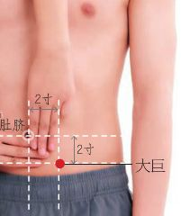
穴位名称: 大都穴
穴位名称拼音: Dadou
穴位国际通用代码: SP2
穴位别名: 太都穴
穴位释义: 大都是足太阴脾经的荥穴，五行属火。大即巨大，都指集聚，穴在大趾起始端，所留为荥。大，穴内气血场的范围大也。都，都市也，脾经的生发之气在此聚集，物质的集散之所也。该穴名意指脾经的气血物质在此聚集。故名。本穴主治腹胀、胃痛、呕吐、泄泻等。
穴位定位和取穴方法: 仰卧或正坐平放足底。在足内侧缘，当第一跖趾关节前下方赤白肉际凹陷处取之。一说“本节之后下陷者之中”（《灵枢.本输》）。
穴位解剖位置和结构: 穴下为皮肤、皮下组织、第一趾骨基底部。布有足底侧神经的趾底固有神经，浅静脉网，足底内侧动、静脉的分支或属支。
穴位隶属五行: 火
穴位隶属经脉: 足太阴脾经
穴位隶属经脉英文: Spleen Meridian of Foot-Taiyin
穴位隶属经脉五行: 土
穴位治法-针刺: 直刺0.3~0.5寸。
穴位治法-灸法: 艾柱灸3~5壮；或艾条灸5~10分钟。孕妇及产后百日内禁灸。把艾条点着，悬在大都穴上方1.5厘米处，用点着的一端对着大都穴灸，每次灸5~10分钟左右，每周3次。
穴位治法-按摩及其它: 每天对大都穴进行按摩，两脚的穴位都要按，按摩10分钟左右，以感到酸痛为度。
穴位功能: 健脾和中，泄热止痛。
穴位主治与临床运用: 脾胃病：腹胀，胃痛，急慢性肠炎，呕吐，腹泻，便秘。其它：热病，无汗，中风，小儿惊风，四肢肿等。
穴位主要配伍: 1. 配足三里治腹胀。2. 配足三里、天枢、中脘、脾俞、上巨虚能健脾祛湿利水，治疗脾虚泄泻。3. 配中脘、公孙、丰隆、章门能降逆止呕治疗痰饮呕吐。4. 配膻中、巨阙、心俞、丰隆能通心脉，调气血治疗痰浊厥心痛。
穴位图片: 

穴位名称: 大迎穴
穴位名称拼音: Daying
穴位国际通用代码: ST5
穴位别名: 髓孔
穴位释义: 大，多也、尊也。迎，受也。大迎名意指胃经气血物质的大部分由本穴上输头部。大迎的物质由地仓穴分配而来，一支是由头面循项下走胸腹，一支由本穴上走头部。由于头部为君主之地，因而上输头部的皇粮其量也大、其质也精，运送亦有浩荡之势，故名。本穴主治口歪、口噤、颊肿、齿痛等。
穴位定位和取穴方法: 在下颌角前方，咬肌附着部前缘，当面动脉搏动处。寻找此穴道的时候通常让患者采用正坐或仰卧、仰靠的姿势，大迎穴位于人体的头部侧面下颌骨部位，嘴唇斜下、下巴骨的凹处。
穴位解剖位置和结构: 在咬肌附着部前缘；前方有面动、静脉；布有面神经及颊神经。
穴位隶属五行:
穴位隶属经脉: 足阳明胃经
穴位隶属经脉英文: Stomach Meridian of Foot-Yangming
穴位隶属经脉五行: 土
穴位治法-针刺: 斜刺0.3~0.5寸，或沿皮刺0.5~1寸，避开血管。
穴位治法-灸法: 艾条灸3~5分钟。
穴位治法-按摩及其它: 使用双手指腹轻轻重覆按揉穴道，每次按摩约2~3分钟。可以增进脸部血液循环，消除双下巴。对于齿痛，牙关紧闭，消肿止痛也有功效益处。
穴位功能: 开关利窍，止痛消肿，祛风通络，消肿止痛，清头散风，通利牙关。
穴位主治与临床运用: 齿痛，颊肿，牙关紧闭，口㖞，及面神经麻痹，腮腺炎等。
穴位主要配伍: 配颊车治齿痛。
穴位图片:
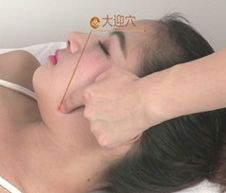
穴位名称: 大横穴
穴位名称拼音: Daheng
穴位国际通用代码: SP15
穴位别名: 肾气
穴位释义: 大，穴内气血作用的区域范围大也。横，穴内气血运动的方式为横向传输也，风也。该穴名意指本穴物质为天部横向传输的水湿风气。本穴物质为腹结穴传来的水湿云气，至本穴后因受脾部外散之热，水湿云气胀散而形成风气，其运行方式为天部的横向传输，故名。本穴主治泄泻、便秘、腹痛等。
穴位定位和取穴方法: 大横穴位于人体的腹中部，距脐中4寸。另说腹正中线旁开4.5寸（《针灸资生经》）。
穴位解剖位置和结构: 在腹外斜肌肌部及腹横肌肌部；布有第十一肋间动、静脉；布有第十二肋间神经。
穴位隶属五行:
穴位隶属经脉: 足太阴脾经，阴维脉
穴位隶属经脉英文: Spleen Meridian of Foot-Taiyin
穴位隶属经脉五行: 土
穴位治法-针刺: 直刺1~2寸，局部酸胀；大横穴平刺2.0~2.5寸透神阙穴治疗肠寄生虫症，局部酸胀可扩散至同侧腹部。
穴位治法-灸法: 艾条灸5~10分钟；或艾炷灸3~5壮。
穴位治法-按摩及其它: 用拇指按住大横穴，持续5秒后再反复按压。
穴位功能: 除湿散结，理气健脾，通调肠胃。
穴位主治与临床运用: 泄泻，便秘，腹痛，痢疾。
穴位主要配伍: 配足三里穴、天枢穴缓解治疗腹痛。
穴位图片:
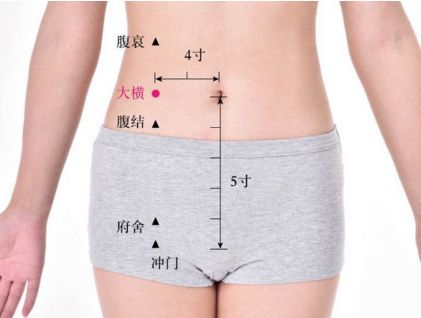
穴位名称: 大包穴
穴位名称拼音: Dabao
穴位国际通用代码: SP21
穴位别名: 大胞穴
穴位释义: “大”，穴内气血涉及的范围为大、为广也。“包”，裹也、受也。本穴物质为大包穴上部区域流落下来的地部经水，因本穴位处肉之陷的低地势点，地部的泥水混合物在本穴汇聚并由本穴的地部孔隙内传脾脏，气血物质在此有如收裹之状，故名。本穴主治胸胁病、全身疼痛、四肢无力等。
穴位定位和取穴方法: 在侧胸部，腋中线上，当第6肋间隙处。侧卧举臂，在腋下6寸、腋中线上，第六肋间隙处取穴。
穴位解剖位置和结构: 在第六肋间隙，前锯肌中；有胸背动、静脉及第六肋间动、静脉；布有第六肋间神经，当胸长神经直系的末端。行针时，在肋角的前内侧胸壁，应在相邻肋骨之间，在肋角的内侧行针，应经肋骨上缘，这样可避开肋间动脉及其分支。该穴位深部相对应的器官有胸膜腔、肺、膈、肝（右侧）、胃（左侧），故不可深刺。
穴位隶属五行:
穴位隶属经脉: 足太阴脾经
穴位隶属经脉英文: Spleen Meridian of Foot-Taiyin
穴位隶属经脉五行: 土
穴位治法-针刺: 斜刺或向后平刺0.3~0.5寸。治颈部扭伤可向上斜刺，局部酸胀。
穴位治法-灸法: 艾炷灸3壮；或艾条灸10~20分钟。
穴位治法-按摩及其它: 先找到乳头的位置，水平划过来，然后放到肋骨的缝隙里面（首先先把两拳相握，拳头拳面位置，放到肋骨的缝隙（就像阴和阳，凹和凸一样）正好能够镶嵌进去）这样就可以刺激大包穴了。然后用力点，点的时候会发酸（酸疼的人是工作压力比较大的人），然后点住这个以后，收肩（扩胸），肩部肌肉收缩后，继续坚持15到20秒钟，然后放松，但是手一直要顶着。按摩可调节气喘、哮喘、胸闷、心内膜炎、胸膜炎、肋间神经痛、胸胁病等呼吸系统疾病等；解除全身疼痛，四肢无力，食多身瘦，及提高记忆力、缓解疲劳。
穴位功能: 宣肺理气，宽胸益脾。
穴位主治与临床运用: 气喘，哮喘，胸闷，心内膜炎，胸膜炎，肋间神经痛，胸胁病等呼吸系统疾病，全身疼痛，四肢无力，食多身瘦。
穴位主要配伍: 1. 配三阳络穴、阳辅穴、足临泣穴治胸肋痛。2. 配脾俞穴、章门穴治食多身瘦。3. 配足三里穴治四肢无力
穴位图片:  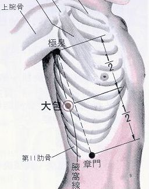
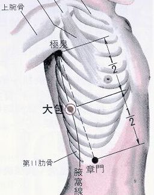
穴位名称: 大椎穴
穴位名称拼音: Dazhui
穴位国际通用代码: DU14
穴位别名: 百劳穴，上杼穴
穴位释义: 大，多也。椎，锤击之器也，此指穴内的气血物质为实而非虚也。大椎名意指手足三阳的阳热之气由此汇入本穴并与督脉的阳气上行头颈。本穴物质一为督脉陶道穴传来的充足阳气，二是手足三阳经外散于背部阳面的阳气，穴内的阳气充足满盛如椎般坚实，故名大椎。大椎为‘三阳、督脉之会’，也就是说，全身的阳气都在大椎穴处交汇。针灸推拿这一要穴，能达到调节全身阳气的目的，对头痛、发热、咳嗽、气喘、颈椎病等都有很好的治疗效果。大椎穴，是人体的十字路口，有着承上启下的作用，大椎穴不通，会堵塞七条经络：. 1.督脉、2.膀胱经、3.大肠、4.小肠、5.三焦经、6.胆经、7.胃经。
穴位定位和取穴方法: 在后正中线上，第7颈椎棘突下凹陷中。
穴位解剖位置和结构: 在腰背筋膜、棘上韧带及棘间韧带中；有颈横动脉分支，棘间皮下静脉丛；布有第八颈神经后支内侧支。
穴位隶属五行:
穴位隶属经脉: 督脉，足三阳经、手三阳经以及背部正中的督脉的交会穴
穴位隶属经脉英文: Governor Vessel
穴位隶属经脉五行:
穴位治法-针刺: 斜刺0.5~1寸。针刺超过1.5寸以上，针尖可穿透黄韧带、硬脊膜、脊髓蛛网膜，刺入蛛网膜下腔，进而刺中脊髓，造成硬膜外隙血管丛损伤出血、蛛网膜下腔渗血或脊髓损伤等严重后果。
穴位治法-灸法: 可以温和灸10-20分钟，可以泄热，补阳。取穴时仰卧位或坐位。患者低头正坐。艾条点燃后放于穴位上方，距离皮肤约2~3厘米左右进行熏灸，使局部有舒适温热感而无灼痛为宜，一般每次灸10~15分钟，以局部潮红为度。每日或隔日1次，5次为1疗程（多用于补虚）。
穴位治法-按摩及其它: 用双拇指侧缘由上至下交替推摩颈后部2~3分钟，再用双手拇指揉按风池穴1分钟，或用拇、食、中三指揉拿对侧颈肌3~5分钟，或用两手食、中指按压颈椎棘突两侧，同时配合头部的前屈后伸动作，约5分钟，调颈椎病。
穴位功能: 益气壮阳， 清热解表，截虐止痫。
穴位主治与临床运用: 热病，疟疾，咳嗽，喘逆，骨蒸潮热，项强，肩背痛，腰脊强，角弓反张，小儿惊风，癫狂痫证，五劳虚损，七伤乏力，中暑，霍乱，呕吐，黄疸，风疹。
穴位主要配伍: 1. 配间使、乳根治脾虚发疟。2. 配四花穴治百日咳（双膈俞、双胆俞）。3. 配曲池预防流脑。4. 配合谷治白血球减少。5. 配足三里、命门提高机体免疫力。6. 配大椎、定喘、孔最治哮喘。7. 配曲池、合谷泻热。8. 配腰奇、间使治癫痫。9. 配肺俞治虚损、盗汗、劳热。
穴位图片:
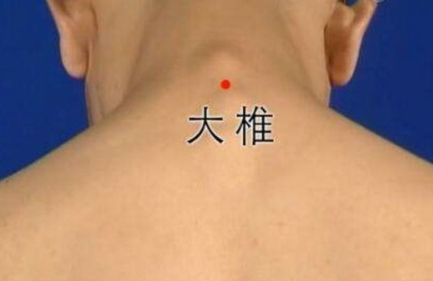
穴位名称: 大赫穴
穴位名称拼音: Dahe
穴位国际通用代码: KI12
穴位别名: 阴维，阴关
穴位释义: 大，大也、盛也。赫，红如火烧十分显耀也。大赫名意指体内冲脉的高温高湿之气由本穴而出肾经。本穴物质为体内冲脉外出的高温高压水湿之气，因其高温而如火烧一般显耀，因其高压而气强劲盛大，故名。本穴主滋阴壮阳、治疗阳痿早泄等。
穴位定位和取穴方法: 大赫穴位于下腹部，当脐中下4寸，前正中线旁开0.5寸。从肚脐到耻骨上方画一线，将此线五等分，从肚脐往下五分之四点的左右一指宽处。取穴时，患者可采用仰卧的姿势，大赫穴位于人体的下腹部，从肚脐到耻骨上方画一线，将此线五等分，从肚脐往下五分之四点的左右一指宽处，即为此穴。另说在脐下3.5寸，旁开0.5寸（《针灸甲乙经》）；脐下4寸，旁开1寸（《针灸大成》）；脐下4寸，旁开1.5寸（《针灸资生经》）。
穴位解剖位置和结构: 在腹内、外斜肌腱膜，腹横肌腱膜及腹直肌中；有腹壁下动、静脉肌支；布有第十二肋间神经及髂腹下神经。
穴位隶属五行:
穴位隶属经脉: 足少阴肾经，冲脉
穴位隶属经脉英文: Kidney Channel of Foot-Shaoyin
穴位隶属经脉五行: 水
穴位治法-针刺: 直刺0.5~1寸。
穴位治法-灸法: 艾炷灸3~5壮；或艾条灸5~10分钟。
穴位治法-按摩及其它: 双手的食指、中、无名指分别按摩两侧的大赫穴，持续30秒按摩，增强性气官活力、提高性功能、治疗阳痿早泄等。
穴位功能: 滋阴壮阳，调经止带，散热生气，提高性功能
穴位主治与临床运用: 膀胱炎，尿道炎，阴部痛，子宫脱垂，遗精，带下，月经不调，痛经，泄泻，痢疾等。
穴位主要配伍: 1. 配阴交穴、肾俞穴、带脉穴、大敦穴、中级穴治阳痿、遗精、带下。2. 配命门穴、肾俞穴、志室穴、中级穴、关元穴治男科病、不育症。
穴位图片: 

穴位名称: 大肠俞
穴位名称拼音: Dachangshu
穴位国际通用代码: BL25
穴位别名:
穴位释义: 大肠，大肠腑也。俞，输也。大肠俞名意指大肠腑中的水湿之气由此外输膀胱经。本穴主治泄泻、便秘、腰痛等。
穴位定位和取穴方法: 在腰部，当第4腰椎棘突下，旁开1.5寸。俯卧位，在第四腰椎棘突下，腰阳关（督脉）旁开1.5寸处取穴，约与髂嵴高点相平。
穴位解剖位置和结构: 穴下为皮肤、皮下组织、背阔肌、骶棘肌、腰方肌、腰大肌。皮肤由第三、四、五腰神经后支分布。在骶棘肌和腰方肌之间，有腰动、静脉经过。腰大肌位于脊柱腰部两侧，呈纺锤形。起于第十二胸椎、上四个腰椎体和椎间盘的侧面以及全部腰椎横突，止于股骨小转子。腰丛的神经根位于肌质内，其分友穿行于它的内、外侧和肌腹。腰大肌的前面还有输尿管由肾门行经到盆腔。
穴位隶属五行:
穴位隶属经脉: 足太阳膀胱经
穴位隶属经脉英文: Bladder Meridian of Foot-Taiyang
穴位隶属经脉五行: 水
穴位治法-针刺: 直刺0.8~1寸，局部酸胀，有麻电感向臀部及下肢放散；或向下平刺2~2.5寸，透小肠俞，局部酸胀，针感可向骶髂关节放散。
穴位治法-灸法: 艾炷灸5~10壮；或每天艾灸10~15分钟，可以调节排便，增强肠道功能。
穴位治法-按摩及其它: 先将手搓热，然后一边缓缓吐气一边强压大肠俞穴6秒钟。 以手指指腹或指节按压，并作圈状按摩。 如此重复10次。
穴位功能: 理气降逆，调和肠胃，强健腰膝。
穴位主治与临床运用: 1. 运动系统疾病：腰痛，骶髂关节炎，骶棘肌痉挛。2. 消化系统疾病：肠炎，痢疾，便秘，小儿消化不良。3. 外科系统疾病：阑尾炎，肠出血。4. 精神神经系统疾病：坐骨神经痛。5. 泌尿生殖系统疾病：遗尿，肾炎，淋病。
穴位主要配伍: 配气海、足三里、支沟治便秘。
穴位图片: 

穴位名称: 大杼穴
穴位名称拼音: Dazhu
穴位国际通用代码: BL11
穴位别名: 背俞
穴位释义: 大，大也，多也。杼，古指织布的梭子。大杼名意指膀胱经水湿之气在此吸热快速上行。本穴物质为膀胱经背俞各穴吸热上行的水湿之气，至本穴后虽散热冷缩为水湿成份较多的凉湿水气，但在本穴的变化为进一步的吸热胀散并化为上行的强劲风气，上行之气中水湿如同织布的梭子般向上穿梭，故名。本穴主治咳嗽、发热、肩背痛等。
穴位定位和取穴方法: 在背部，当第1胸椎棘突下，旁开1.5寸。正坐低头或俯卧位，在第一胸椎棘突下，督脉旁开1.5寸处取穴。
穴位解剖位置和结构: 大杼穴下为皮肤、皮下组织、斜方肌、菱形肌、上后锯肌、骶棘肌。有肋间动、静脉后支的内侧支。皮肤有第七颈神经和分布着第一、二胸神经后支的内侧皮支，深层为外侧支。皮下筋膜致密，由脂肪及纤维束组成。纤维束连于斜方肌表面的背深筋膜与皮肤。副神经在斜方肌前缘中下1/3连接处深进该肌下面，与第三、四颈神经的分支形成神经丛，支配该肌。针经上列结构深进，可进第一肋间隙，或经横突间肌及其韧带，如盲目进针，经胸内筋膜，穿胸膜腔至肺，极易造成气胸。
穴位隶属五行:
穴位隶属经脉: 足太阳膀胱经
穴位隶属经脉英文: Bladder Meridian of Foot-Taiyang
穴位隶属经脉五行: 水
穴位治法-针刺: 向内斜刺0.5~0.8寸，局部酸胀，针感可向肩部扩散。
穴位治法-灸法: 艾炷灸5壮；或艾条温灸10~15分钟。
穴位治法-按摩及其它: 感觉颈部酸痛、肩部不适的时候，可以按摩、拍打大杼穴，每天拍打按揉2~3次，每次10分钟，可以促进气血畅通。
穴位功能: 强筋骨，清邪热，祛风解表，宣肃肺气
穴位主治与临床运用: 1. 呼吸系统疾病：支气管炎，支气管哮喘，肺炎。2. 精神神经系统疾病：头痛，癫痫。3. 运动系统疾病：颈椎病，腰背肌痉挛，膝关节骨质增生。4. 其它：咽炎，感冒，骨结核。
穴位主要配伍: 1. 配肩中俞、肩外俞治肩背痛。
2. 配夹脊、绝骨治颈椎病，有强筋骨，通经络，调气血的作用。3. 配列缺、尺泽治咳嗽，气喘，有理肺止咳平喘的作用，治咳嗽，气喘。
穴位图片:
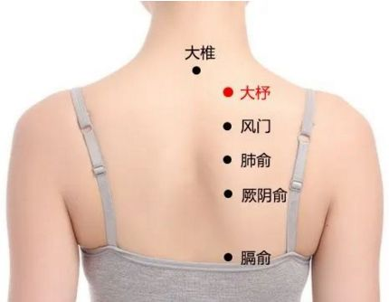
穴位名称: 大陵穴
穴位名称拼音: Daling
穴位国际通用代码: PC7
穴位别名: 太陵，鬼心
穴位释义: 大陵。大，与小相对，大也。陵，丘陵也、土堆也。该穴名意指随心包经经水冲涮下行的脾土物质在此堆积。本穴物质为内关穴下传的经水与脾土的混合物，至本穴后，脾土物质堆积如山，如丘陵一般，故名。大陵穴是手厥阴心包经的输穴和原穴，其调治精神神志疾病的临床疗效早已被几千年来的中医实践所证明。是治疗心脏病、失眠之常用穴。
穴位定位和取穴方法: 大陵穴在腕掌横纹的中点处，当掌长肌腱与桡侧腕屈肌腱之间。
穴位解剖位置和结构: 在掌长肌腱与桡侧腕屈肌腱之间，有拇长屈肌和指深屈肌腱；有腕掌侧动、静脉网；布有前臂内侧皮神经，正中神经掌皮支，深层为正中神经本干。
穴位隶属五行:
穴位隶属经脉: 手厥阴心包经
穴位隶属经脉英文: Pericardium Meridian of Hand-Jueyin
穴位隶属经脉五行: 火
穴位治法-针刺: 踝关节扭伤，跟骨骨刺，足跟痛，趾骨骨折痛时，可针刺大陵穴。针刺方法：仰掌，在腕横纹中央，掌长肌腱与桡侧腕肌腱之间取穴。调整心功能针刺大陵、神门等 ，对心脏病患者心功能的影响，多数情况下心冲击图的收缩波增强，经X线示波摄影，针刺前表现为左心室与主动脉峰减低变形，收缩性弯曲变斜和舒张期隆起减弱等。针刺后，左心峰增大，收缩性偏斜减弱，舒张期隆起也加大，说明针后心肌收缩加强，心脏功能改善。另有针刺大陵穴，对部分癫痫大发作患者的脑电图，有使之规则化的倾向。
穴位治法-灸法: 艾条灸5~10分钟。
穴位治法-按摩及其它: 每天晚间睡前按摩，将拇指按压在手腕上的大陵穴穴位上，先点按穴位一分钟左右，再旋转按揉穴位3-5分钟，以局部有轻微的酸胀的感觉为佳。
穴位功能: 镇静安神，清心通络，理气止痛，舒筋活络。
穴位主治与临床运用: 心痛，心悸，胃痛，呕吐，惊悸，癫狂，痫证，胸胁痛，腕关节疼痛，喜笑悲恐。
穴位主要配伍: 1. 配神门、列缺，有舒畅经筋，通经活络的作用，主治腕下垂。2. 配心俞、膈俞，有通心络，祛瘀血的作用，主治心血瘀阻之心悸。3. 配丰隆、太冲，有疏肝理气，化痰醒脑的作用，主治气郁痰结型之癫狂。
穴位图片: 

穴位名称: 大钟穴
穴位名称拼音: Dazhong
穴位国际通用代码: KI4
穴位别名:
穴位释义: 大，巨大也。钟，古指编钟，为一种乐器，其声混厚洪亮。该穴名意指肾经经水在此如瀑布从高处落下。本穴物质为太溪穴传来的地部经水，在本穴的运行为从高处流落低处，如瀑布落下一般，声如洪钟，故名。本穴主治腰脊强痛、慢性咽炎、足跟痛、月经不调等。
穴位定位和取穴方法: 在足内侧，内踝下方，当跟腱附着部的内侧前方凹陷处。正坐或仰卧位，平太溪下0.5寸，当跟腱附着部的内侧凹陷处取穴。
穴位解剖位置和结构: 穴下为皮肤、皮下组织、跖肌腱和跟腱的前方、跟骨。皮肤由隐神经的小腿内支分布。皮下组织疏松，其内的浅静脉向前注入大隐静脉，跟腱前及两侧脂肪组织较多。在跟腱前，有胫后动、静脉和胫神经。针经皮肤，皮下筋膜穿小腿深筋膜刺入跟腱和胫神经干之间，或刺于神经干上，神经的前方即是与该神经伴行的胫后动脉和静脉。
穴位隶属五行:
穴位隶属经脉: 足少阴肾经
穴位隶属经脉英文: Kidney Channel of Foot-Shaoyin
穴位隶属经脉五行: 水
穴位治法-针刺: 直刺0.3~0.5寸。
穴位治法-灸法: 艾炷灸3~5壮；或艾条灸5~10分钟。
穴位治法-按摩及其它: 用自己的指腹按住大钟穴6秒钟左右，然后再慢慢松开，这样反复按压至少30次，最好是按压得感觉到大钟穴酸痛为好。
穴位功能: 清热肃肺，益肾平喘，调理二便。
穴位主治与临床运用: 1. 精神神经系统疾病：神经衰弱，精神病，痴呆，癔病。2. 泌尿生殖系统疾病：尿潴留，淋病。3. 其它：哮喘，咽痛，口腔炎，食道狭窄，便秘，疟疾。
穴位主要配伍: 1. 配太溪、神门治心肾不交之心悸、失眠。2. 配行间治虚火上炎之易惊善怒。3. 配鱼际治虚火上炎之咽痛。4. 配孔最、尺泽、鱼际治咯血。5. 配肾俞、关元、三阴交治月经不调。6. 配肾俞、太溪、委中治腰脊强痛。
穴位图片:
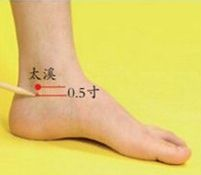
穴位名称: 大敦穴
穴位名称拼音: Dadun
穴位国际通用代码: LR1
穴位别名: 水泉穴，大训穴，大顺穴
穴位释义: 大敦，即大树敦也，在此意指穴内气血的生发特性。本穴物质为体内肝经外输的温热水液，而本穴又为肝经之穴，时值为春，水液由本穴的地部孔隙外出体表后蒸升扩散，表现出春天气息的生发特性，如大树敦在春天生发新枝一般，故名。此穴位为人体足厥阴肝经上的主要穴道之一，是肝经的第一个穴位，自古以来被视为镇静及恢复神智的要穴。
穴位定位和取穴方法: 在足大指末节外侧，距趾甲角0.1寸。取穴时，可采用正坐或仰卧的姿势，大敦穴位于大拇趾（靠第二趾一侧）甲根边缘约0.1寸处。一说“足大指爪甲根后四分节前”（《针灸集成》）。
穴位解剖位置和结构: 依次为皮肤、皮下组织、甲根。布有腓深神经的背外侧神经和趾背动、静脉。
穴位隶属五行:
穴位隶属经脉: 足厥阴肝经
穴位隶属经脉英文: Liver Meridian of Foot-Jueyin
穴位隶属经脉五行: 木
穴位治法-针刺: 斜刺0.1~0.2寸，或用三陵针点刺出血。
穴位治法-灸法: 艾炷灸3~5壮；或艾条灸5~10分钟，治疗崩漏。
穴位治法-按摩及其它: 指压本穴，强压7~8秒钟，才慢慢吐气，每日就寝前重复10此左右。指压大敦有速效性。因此迟醒的早上，不妨在床上加以指压。
穴位功能: 生发风气，调理肝肾，熄风开窍，安神定痫，理血。
穴位主治与临床运用: 疝气，缩阴，阴中痛，月经不调，血崩，尿血，糖尿病，癃闭，遗尿，淋疾，癫狂，痫证，少腹痛。
穴位主要配伍: 1. 配内关、水沟治癫、狂、痫和中风昏仆。2. 配膻中、天突、间使治梅核气。3. 配太冲、气海、地机，有疏肝行气止痛的作用，主治疝气。4. 配隐白，直接艾炷灸，有补益肝脾，调理冲任的作用，主治功能性子宫出血。5. 配百会、三阴交、照海，有调补肝肾，益气固脱的作用，主治子宫脱垂。
穴位图片:
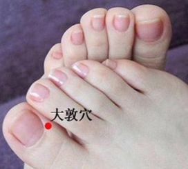
穴位名称: 兑端穴
穴位名称拼音: Duiduan
穴位国际通用代码: DU27
穴位别名: 兑骨，唇上端，壮骨
穴位释义: 兑为口；端，指人中沟唇端，穴在唇上端，故名。本穴主治昏迷、晕厥、癔病、消渴嗜饮、齿痛等。
穴位定位和取穴方法: 在面部，当上唇的尖端，人中沟下端的皮肤与唇的移行部。取正坐位，在面部，上唇中点，皮肤与黏膜的交点处，按压有酸胀感，即为本穴。
穴位解剖位置和结构: 在口轮匝肌中；有上唇动、静脉；布有面神经颊支及眶下神经分支。
穴位隶属五行:
穴位隶属经脉: 督脉
穴位隶属经脉英文: Governor Vessel
穴位隶属经脉五行:
穴位治法-针刺: 向上斜刺0.2~0.3寸，或点刺。
穴位治法-灸法: 禁灸。
穴位治法-按摩及其它: 以手指指腹或指节向下按压，并作圈状按摩。
穴位功能: 定惊止痛，宁神醒脑，清热利湿，生津止渴。
穴位主治与临床运用: 昏迷，晕厥，癫狂，癔病，面神经麻痹，糖尿病，口疮臭秽，齿痛，口噤，鼻塞。
穴位主要配伍: 1. 配本神、百会治癫痫呕沫。2. 配目窗、正营、耳门治唇吻强，止齿龋痛。3. 配膀胱俞、水道、中极，可通调水道，治疗遗尿、尿闭。
穴位图片: 

穴位名称: 犊鼻穴
穴位名称拼音: Dubi
穴位国际通用代码: ST35
穴位别名: 外膝眼穴
穴位释义: 犊，小牛也，脾土也。鼻，牵牛而行的上扪之处。该穴名意指流过的胃经经水带走本穴的地部脾土微粒。本穴物质为梁丘穴传来的地部经水，为从梁丘穴的高位流落本穴的低位，经水的运行如瀑布跌落，本穴的地部脾土微粒被经水承运而行，如被牵之牛顺从而行，故名。本穴主治膝痛、下肢麻痹、屈伸不利、脚气等。
穴位定位和取穴方法: 屈膝，在膝部，髌骨与髌韧带外侧凹陷中。正坐屈膝，于膝盖骨与胫骨之间，膑韧带外侧凹陷中取穴。
穴位解剖位置和结构: 在髌韧带外缘；有膝关节动、静脉网；布有腓肠外侧皮神经及腓总神经关节支。
穴位隶属五行:
穴位隶属经脉: 足阳明胃经
穴位隶属经脉英文: Stomach Meridian of Foot-Yangming
穴位隶属经脉五行: 土
穴位治法-针刺: 屈膝，向后内斜刺0.5~1寸。
穴位治法-灸法: 艾炷炙3~7壮；或艾条炙5~10分钟。
穴位治法-按摩及其它: 揉按犊鼻穴5分钟，可减轻剧烈运动造成的膝关节疼痛。
穴位功能: 通经活络，祛湿散寒，理气消肿，止痛。
穴位主治与临床运用: 膝痛，下肢麻痹，屈伸不利，脚气。
穴位主要配伍: 1. 配阴陵泉穴、阳灵泉穴、委中穴、曲泉穴、三阴交穴、足三里穴治膝关节痛。2. 配髀关穴、阳陵泉穴治膝不仁。3. 配梁丘穴、膝关穴、足三里穴、阳陵泉穴治膝及膝下痛。4. 配曲池穴、合谷穴、环跳穴、膝关穴、商丘穴、风市穴、肩内穴治历节风病。5. 配大椎穴、大杼穴、身柱穴、肩髎穴、曲池穴、尺泽穴、外关穴、阳池穴、合谷穴、环跳穴、梁丘穴、阳陵泉穴、昆仑穴、太溪穴治风痹。
穴位图片:
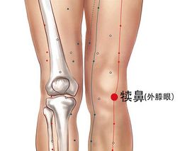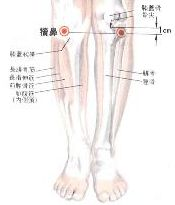
穴位名称: 膻中穴
穴位名称拼音: Shanzhong
穴位国际通用代码: RN17
穴位别名: 元儿穴，胸堂穴，上气海穴，元见穴
穴位释义: 膻，羊臊气或羊腹内的膏脂也，此指穴内气血为吸暖后的暖燥之气。中，与外绝对，指穴内。膻中名意指任脉之气在此吸暖胀散。本穴物质为中庭穴传来的天部水湿之气，至本穴后进一步吸暖胀散而变化暖燥之气，如羊肉带有辛臊气息普通，故名。膻中穴是脏腑之气汇聚的地方，为人体任脉上的主要穴道之一。按摩膻中穴可以扩张血管，调整心脏功能，有效治疗各类“气”病，包括呼吸系统、循环系统、消化系统病证。现代研究发现，膻中穴位于人体胸腺的部位，可参加机体的细胞免疫活动。而点按该穴后可影响心血管神经的调节中枢，促进全身血液的重新分配，改善冠状血流量，还可以提高胸肺部的植物神经功能。现代医学也证实，刺激该穴可通过调节神经功能，扩张冠状血管及消化道内腔径，在临床上可用于呼吸系统疾病（如咳嗽、支气管炎、胸膜炎等）、消化系统疾病（如呃逆、呕吐、食道炎等）、心血管系统疾病（如心绞痛、心悸、心肌缺血缺氧等）以及产后缺乳等病证的治疗。 而我们平时常按膻中穴也有很好的保健作用。心脏不适时，可有呼吸困难、心跳加快、头晕目眩等，此时按按膻中，可以提高心脏工作能力，使症状缓解；工作、生活压力大，难免烦躁生闷气，按按膻中就可使气机顺畅，烦恼减轻；女性朋友按此穴不仅能防治乳腺炎，还可丰胸美容；产妇灸膻中则可催乳。因为生气而感到胸闷时，会不自觉地用拳头捶打自己的胸口，这时，心情通常会舒畅许多。这不是偶然现象，也不是心理作用的结果，而是因为胸口部位有一个穴位—膻中穴，俗称“出气穴”。武侠小说中常有这样的描述：某高手一挥手点了对手的膻中穴，轻者动弹不得，重者立即毙命。虽然这只是小说家的臆想，但膻中穴的确是人体保健的要穴。
穴位定位和取穴方法: 在体前正中线，两乳头连线之中点。膻中穴位于胸部，以后正中线上，平第4肋间，两乳头连线的中点。
穴位解剖位置和结构: 在胸骨体上；有胸廓（乳房）内动、静脉的前穿支；布有第四肋间神经前皮支的内侧支。
穴位隶属五行:
穴位隶属经脉: 任脉
穴位隶属经脉英文: Conception Vessel
穴位隶属经脉五行:
穴位治法-针刺: 平刺0.3~0.5寸。
穴位治法-灸法: 用扶阳罐温灸即可，每次3~5分钟左右。适用于有寒证者或产后缺乳者。通过罐体磁场和红外线刺激该穴位，具有宽胸理气、活血通络、清肺止喘、舒畅心胸等功能。
穴位治法-按摩及其它: 揉法：拇指或由手掌大鱼际部先顺时针后逆时针方向各按揉20次，反复10次。擦法：拇指或手掌大鱼际部由上向下按擦即可，持续5~10分钟。推法：两只手掌面自膻中穴沿胸肋向两侧推抹至侧腰部，20次左右。
穴位功能: 活血通络，宽胸理气，止咳平喘，舒畅心胸。
穴位主治与临床运用: 呼吸系统疾病：咳嗽、气喘、气短、咳唾脓血、肺痈等。消化系统疾病：噎膈、臌胀、呕吐涎沫等。心血管系统病症：胸痹胸痛、心痛、心悸、心烦等。其他疾病：产后无乳、瘿气、霍乱、转筋、尸厥等。
穴位主要配伍: 1. 配曲池、合谷（泻法）治急性乳腺炎。2. 配内关、三阴交、巨阙、心平、足三里治冠心病急性心肌堵塞。3. 配中脘、气海治呕吐反胃。4. 配天突治哮喘。5. 配乳根、合谷、三阴交、少泽、灸膻中治产后缺乳。6. 配肺俞、丰隆、内关治咳嗽痰喘。7. 配厥阴俞、内关治心悸、心烦、心痛。
穴位图片:  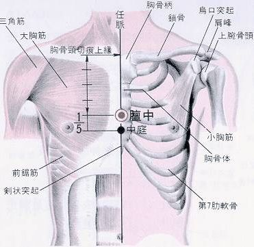
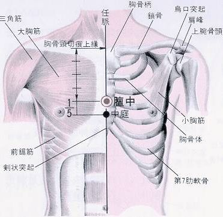
穴位名称: 督俞穴
穴位名称拼音: Dushu
穴位国际通用代码: BL16
穴位别名: 高盖，商盖，高益
穴位释义: 督，督脉也，阳气也。俞，输也。督俞名意指督脉的阳气由此输向膀胱经。本穴为膀胱经接受督脉阳气之处，故名。本穴主治心痛、胸闷、腹痛、寒热、气喘等。
穴位定位和取穴方法: 在背部，当第6胸椎棘突下，旁开1.5寸。俯卧位，在第六胸椎棘突下，灵台（督脉）旁开1.5寸处取穴。
穴位解剖位置和结构: 穴下为皮肤、皮下组织、斜方肌、骶棘肌。有第六肋间动、静脉后支，颈横动脉降支；布有肩胛背神经，第六或第七胸神经后支的皮支，深层为第六胸神经后支外侧支。
穴位隶属五行:
穴位隶属经脉: 足太阳膀胱经
穴位隶属经脉英文: Bladder Meridian of Foot-Taiyang
穴位隶属经脉五行: 水
穴位治法-针刺: 向内斜刺0.5~0.8寸，局部酸胀，针感可扩散至肋间。 不可深刺，以防造成气胸。
穴位治法-灸法: 艾炷灸3~7壮；或艾条灸5~15分钟。
穴位治法-按摩及其它: 用大拇指按揉。 用大拇指按揉督俞约200次，或按揉3~5分钟，每天坚持，能治疗心痛、腹胀、腹痛。
穴位功能: 理气止痛，强心通脉。
穴位主治与临床运用: 循环系统疾病：冠心病，心绞痛，心动过速，心内外膜炎，寒热，气喘。其它：胃炎，膈肌痉挛，乳腺炎，皮肤瘙痒，银屑病等。
穴位主要配伍: 配内关治心痛、胸闷。
穴位图片:
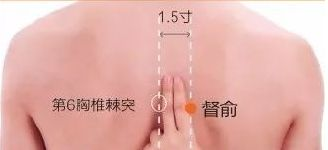
穴位名称: 定喘穴
穴位名称拼音: Dinchuan
穴位国际通用代码: EX-B1
穴位别名:
穴位释义: 定喘穴：“定”：指安定或平定。“喘”，这里指咳喘、哮喘。本穴主止咳平喘、通宣理肺等。
穴位定位和取穴方法: 俯卧位或正坐低头，穴位于后正中线上，第七颈椎棘突下定大椎穴，旁开0.5寸处。
穴位解剖位置和结构: 在斜方肌、菱形肌、头夹肌、最长肌中；浅层主要布有第8颈神经后支的内侧皮支。深层有颈横动、静脉的分支或属支及第8颈神经，第1胸神经后支的肌支。
穴位隶属五行:
穴位隶属经脉: 经外奇穴
穴位隶属经脉英文: Non-meridian extra acupoint
穴位隶属经脉五行:
穴位治法-针刺: 直刺0.5~1寸。
穴位治法-灸法:
穴位治法-按摩及其它: 哮喘发作的患者可以用双手拇指用力点按此穴，感觉局部酸麻重胀，喘息会渐渐缓解。哮喘缓解期还可以在此处刮痧保健，隔天刮一次，微微红热即可。此外，穴位贴敷也是不错的方法，将干姜、半夏等止咳平喘的中药熬成糊，用纱布包裹，贴敷在穴位上，也能起到平喘利肺的保健作用。
穴位功能: 止咳平喘，通宣理肺。
穴位主治与临床运用: 哮喘，支气管炎，支气管哮喘，百日咳；落枕，肩背痛。
穴位主要配伍: 配肺俞、中府主治咳喘。
穴位图片:
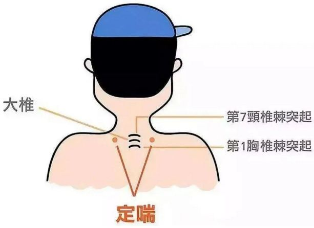
穴位名称: 带脉穴
穴位名称拼音: Daimai
穴位国际通用代码: GB26
穴位别名:
穴位释义: 为带脉之所过，又主治带脉及妇人经带疾患，脉穴同名，故称带脉。带脉是“奇经八脉”之一，带之言束也，犹如束带一般。带脉的主要功能是“约束诸经”，所谓腹部“游泳圈”，正是中医学“带脉”所绕之处。本穴主治月经不调、赤白带下、腰胁痛等。
穴位定位和取穴方法: 在侧腹部，章门下1.8寸，当第1、2肋骨游离端下方垂线与脐水平线的交点上。侧卧取穴。
穴位解剖位置和结构: 皮肤-〉皮下组织-〉腹外斜肌-〉腹内斜肌-〉腹横肌。浅层布有第9，10，11胸神经前支的外侧皮支和伴行的动，静脉。深层有第9，10，11胸神经前支的肌支和相应的动，静脉。
穴位隶属五行:
穴位隶属经脉: 足少阳胆经，带脉
穴位隶属经脉英文: Gallbladder Meridian of Foot-Shaoyang
穴位隶属经脉五行: 木
穴位治法-针刺: 直刺1~1.5寸。
穴位治法-灸法: 可灸。
穴位治法-按摩及其它: 按摩带脉穴治妇科病。身体放松，最好取站立姿势，两脚间距略大于肩宽。 双手拇指指腹按压两侧带脉穴，缓慢垂直用力，按揉结合，使指压力度以深部能够感受到酸胀感；然后向两侧缓慢扭转腰部，以增强酸麻胀重和走窜等感觉，持续1~2分钟后逐渐放松，然后再逐渐用力按压。 如此循环持续8~10次。
穴位功能: 通调气血，温补肝肾。
穴位主治与临床运用: 治带下病∶带脉，白环俞，阴陵泉，三阴交，有健脾渗湿止带作用。治痛经，经闭∶带脉，中极，地机，三阴交，有行气活血，祛瘀止痛作用。治月经不调∶带脉，血海，膈俞，有通经活血作用。
穴位主要配伍: 1. 配关元、气海、三阴交、白环俞、间使治赤白带下；2. 配关元、足三里、肾俞、京门、次髎治肾气虚带下；3. 配中极、次髎、行间、三阴交治湿热下注之带下。
穴位图片: 

穴位名称: 胆俞穴
穴位名称拼音: Danshu
穴位国际通用代码: BL19
穴位别名:
穴位释义: 胆，胆腑也。俞，输也。胆俞名意指胆腑的阳热风气由此外输膀胱经。胆在背之俞穴，其位近胆，内应胆腑，为胆气转输、输注之处，为治胆之要穴，故名。本穴主治肝炎、口苦、肋痛、肺痨、潮热等。
穴位定位和取穴方法: 在背部，当第10胸椎棘突下，旁开1.5寸。取穴时通常采用正坐或俯卧姿势，胆俞穴位于背部，当第十胸椎棘突下，左右二指宽处。人体胆俞穴位于背部，当第10胸椎棘突下，旁开1.5寸。
穴位解剖位置和结构: 在背阔肌，最长肌和腱肋肌之间；有第十肋间动、静脉后支；布有第十胸神经后支的皮支，深层为第十胸神经后支的外侧支。
穴位隶属五行:
穴位隶属经脉: 足太阳膀胱经
穴位隶属经脉英文: Bladder Meridian of Foot-Taiyang
穴位隶属经脉五行: 水
穴位治法-针刺: 斜刺0.5~0.8寸。
穴位治法-灸法: 艾炷灸3~7壮；或艾条灸5~15分钟。
穴位治法-按摩及其它: 按压肝俞穴时，一面吐气一面用力按压6秒钟，每回按压5次，每天5回。治疗慢性肝炎。
穴位功能: 疏肝利胆，清热化湿。
穴位主治与临床运用: 胆经疾病：胆囊炎，坐骨神经痛，风湿性关节炎，肝炎，黄疸，口苦，肋痛，肺痨，潮热等。
穴位主要配伍: 配阳陵泉、太冲胆道疾病。
穴位图片:
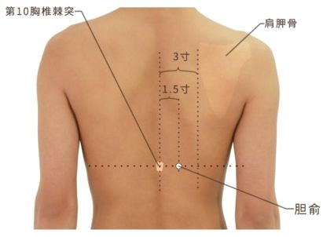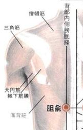
穴位名称: 地五会
穴位名称拼音: Diwuhui
穴位国际通用代码: GB42
穴位别名:
穴位释义: 地，地部也。五，五脏六腑也。会，交会也。该穴名意指天、地二部的寒湿水气在此交会。本穴所处为足背外侧陷者中，胆经上部经脉足临泣穴传来的气血又为天部的寒湿风气及地部的寒冷水湿，穴外天部的飘散阳气至此后因本穴气血的寒冷收引而化雨冷降穴内，穴外地部的溢流水液也汇入本穴，本穴如同五脏六腑的气血汇合而成，且气血为地部经水，故名。本穴主疏泄肝胆，清利头目等。
穴位定位和取穴方法: 在足背外侧，当足四趾本节（第四跖趾关节）的后方，第四、五趾骨之间，小趾伸肌腱的内侧缘。正坐垂足或仰卧位，在第四、五跖骨间，当小趾伸肌腱的内侧缘取穴。
穴位解剖位置和结构: 地五会穴下为皮肤、皮下组织、趾长伸肌腱、趾短伸肌腱外侧、第四骨间背侧肌、第二骨间足底肌。浅层布有足背中间皮神经，足背静脉网和跖背动、静脉。深层有趾足底总神经和趾底总动、静脉。
穴位隶属五行:
穴位隶属经脉: 足少阳胆经
穴位隶属经脉英文: Gallbladder Meridian of Foot-Shaoyang
穴位隶属经脉五行: 木
穴位治法-针刺: 直刺或向上刺0.5~0.8寸，局部酸胀。
穴位治法-灸法: 艾炷灸或温针灸3~5壮；或艾条灸5~10分钟。
穴位治法-按摩及其它: 用大拇指按揉地五会约200次，或按揉3~5分钟，能治疗头痛、耳鸣等疾病。
穴位功能: 疏泄肝胆，清利头目，通经活络。
穴位主治与临床运用: 五官科系统疾病：耳鸣，结膜炎，乳腺炎。运动系统疾病：腰肌劳损，足扭伤，腰疼，足背肿痛。其它：肺结核，吐血，腋淋巴结炎。
穴位主要配伍: 1. 配光明能清肝明目主治眼痒眼痛。2. 配期门、行间、内关、肩井、足临泣能理气消痈主治气郁乳痈。3. 配太阳、风池、悬颅、太冲、颔厌清热泻火主治头痛。4. 配翳风、听会、太冲、丘墟、中渚能泻火利窍主治耳鸣、耳聋等。
穴位图片: 

穴位名称: 当阳穴
穴位名称拼音: Dangyang
穴位国际通用代码: EX-HN2
穴位别名: 太阳
穴位释义: 当阳穴，属于：经外奇穴，出自：唐代《备急千金要方》。“当”，是向着意思。“阳”，阴阳的阳，在这里头前部为阳。当阳穴位于头前部，故名。本穴主疏风通络，清热明目等。
穴位定位和取穴方法: 当阳穴位于头前部，在瞳孔直上，入前发际上1寸。取穴时，采用正坐位或仰卧位。直视前方，沿瞳孔垂直向上，自发际直上1横指处即是。
穴位解剖位置和结构: 穴下有皮肤、皮下组织、枕额肌额腹或帽状腱膜下疏松结缔组织。分布有眶上神经和眶上动、静脉的分支或属支。
穴位隶属五行:
穴位隶属经脉: 经外奇穴
穴位隶属经脉英文: Non-meridian extra acupoint
穴位隶属经脉五行:
穴位治法-针刺: 平刺0.5~0.8寸。
穴位治法-灸法: 用艾条温和灸灸当阳穴5~10分钟，一天一次，可以治偏头痛、鼻炎等。
穴位治法-按摩及其它: 1. 以食指指腹按压当阳，每次左右各1~3分钟。可改善头痛、眩晕、失眠等症状。2. 用刮痧板沿前发际刮拭30次，一天一次，可以治头痛、眩晕。
穴位功能: 疏风通络，清热明目。
穴位主治与临床运用: 1. 偏、正头痛，神经性头痛，眩晕失眠，健忘，癫痫。2. 目赤肿痛，鼻炎。
穴位主要配伍: 1. 配迎香穴、合谷穴，具有通利鼻窍，治鼻塞。2. 配太阳穴、耳尖穴治急性结膜炎。
穴位图片: 

穴位名称: 大骨空
穴位名称拼音: Dagukong
穴位国际通用代码: EX-UE5
穴位别名: 大骨孔
穴位释义: 大，指大拇指；穴在大拇指兩指骨之間的关节空隙处，故名。本穴主祛风泻火，退翳明目等。
穴位定位和取穴方法: 患者手掌向心，于拇指背侧指间关节横纹中点取穴。
穴位解剖位置和结构: 大骨空穴下有皮肤、皮下组织和拇长伸肌腱，分布有桡神经浅支的指背神经。
穴位隶属五行:
穴位隶属经脉: 经外奇穴
穴位隶属经脉英文: Non-meridian extra acupoint
穴位隶属经脉五行:
穴位治法-针刺:
穴位治法-灸法: 艾炷灸3~5壮；或艾条灸5~10分钟。
穴位治法-按摩及其它: 点按（或艾灸）大骨空穴对顽固性失眠有效，睡前用磨掉尖的牙签或者指甲掐按该穴位100下，左右两手都要按，不少人可当晚见效。刺激方法也可以用左右两手大骨空穴相互抵压。
穴位功能: 祛风泻火，退翳明目。
穴位主治与临床运用: 1. 目痛，目翳，内障等各种眼病。2. 急性胃肠炎，吐泻。3. 鼻出血。
穴位主要配伍: 1. 配小骨空，光明穴，太阳穴治目翳。2. 配小骨空治疗烂眼。3. 配十宣穴治吐泻。4、配风池、肝俞、瞳子髎，治目痛、目翳。5、配小骨空、太阳、内迎香穴治一切目疾。
穴位图片:
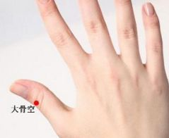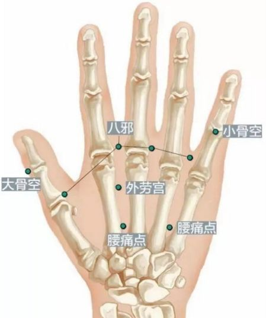
穴位名称: 独阴穴
穴位名称拼音: Duyin
穴位国际通用代码: EX-LE11
穴位别名: 独会
穴位释义: “独”，可理解为仅有，独一无二。“阴”，与阳相对。“独阴”，是指只有阴而无阳。本穴是调理女性疾病的重要穴位。
穴位定位和取穴方法: 位于足第2趾的跖侧远侧，趾间关节的中点处。患者正坐直腿或仰卧位取穴。
穴位解剖位置和结构: 穴下为皮肤、腱纤维鞘、趾长屈肌腱、趾远侧关节。皮肤由足底内侧神经趾足底总神经的趾足底固有神经分布。各神经有同名动脉伴行分布。蹠腱膜的纤维附着于趾骨，形成趾纤维鞘，鞘内有趾长屈肌腱通过。该肌（腱）由胫神经支配。
穴位隶属五行:
穴位隶属经脉: 经外奇穴
穴位隶属经脉英文: Non-meridian extra acupoint
穴位隶属经脉五行:
穴位治法-针刺: 直刺0.1~0.2寸。孕妇禁用。
穴位治法-灸法: 艾柱灸3~5壮；或用艾条温和灸治独阴穴10~15分钟，一天一次，可以缓解治疗心绞痛、胃痛、胸痛、疝气、月经不调等。
穴位治法-按摩及其它: 用大拇指指尖掐按独阴穴1~2分钟，每天坚持掐揉，可以缓解治疗疝气、心绞痛、胃痛、月经不调等。孕妇禁用。
穴位功能: 活血调经，降逆和胃，理气止痛。
穴位主治与临床运用: 胸胁痛，呕吐，吐血，死胎，胞衣不下，月经不调，疝气；卒心痛。
穴位主要配伍: 1. 配合谷，三阴交主治难产。2. 配肝俞、脾俞、膈俞、下三里、太冲、两乳下主治胃脘痛。3. 配三阴交有活血祛瘀，痛经止痛之功，治疗淤血性闭经、痛经。4. 配太冲、关元能温通经脉，益元祛寒，治疗疝气。5. 配至阴能温通活血，引胎下行，治疗死胎、胞衣不下。6. 配中髎穴、下髎穴、太冲穴缓解治疗阴痛。
穴位图片:  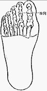
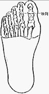
穴位名称: 二间穴
穴位名称拼音: Erjian
穴位国际通用代码: LI2
穴位别名: 间谷，闻谷，周谷
穴位释义: 二，概数，在此表示较小之意。间，间隔、空隙也，指本穴物质所处为空隙之处。该穴名意指本穴的气血物质位处不太高的天部层次。本穴物质为商阳穴传来的温热水气，在本穴所处为不太高的天部层次，二间之名即是对本穴气血物质所在的空间层次范围的说明，故名。本穴主利咽、泻火，清扫头面部问题等。
穴位定位和取穴方法: 微握拳，在食指本节（第2指关节）前，桡侧凹陷处。
穴位解剖位置和结构: 有指屈浅、深肌腱；有来自桡动脉的指背及掌侧动、静脉，布有桡神经的指背侧固有神经，正中神经的指掌侧固有神经。
穴位隶属五行: 水
穴位隶属经脉: 手阳明大肠经
穴位隶属经脉英文: Large Intestine Meridian
穴位隶属经脉五行: 金
穴位治法-针刺: 直刺0.2~0.4寸，局部胀痛。
穴位治法-灸法: 麦粒灸3~5壮；或艾条灸5~10分钟。
穴位治法-按摩及其它: 每天按摩二间穴5分钟。
穴位功能: 解表，清热，利咽。
穴位主治与临床运用: 头面五官疾病：目昏，鼻出血，齿痛，牙龈炎，口歪，咽喉肿痛，热病，面神经炎，三叉神经痛，腰痛。
穴位主要配伍: 配合谷穴治齿痛。
穴位图片: 

穴位名称: 耳门穴
穴位名称拼音: Ermen
穴位国际通用代码: SJ21
穴位别名:
穴位释义: 耳，穴内气血作用的部位为耳也。门，出入的门户也。耳门名意指三焦经经气中的滞重水湿在此冷降后由耳孔流入体内。本穴物质为角孙穴传来的水湿之气，至本穴后，水湿之气化雨冷降为地部经水并循耳孔流入体内，本穴如同三焦经气血出入耳的门户，故名。该穴是治疗多种耳疾重要的首选穴位之一。
穴位定位和取穴方法: 在面部，当耳屏上切迹的前方，下颌骨髁状突后缘，张口有凹陷处。定位此穴道时通常让患者采用正坐或仰卧、仰靠的取穴姿势，以便实施者能够准确的找寻穴道和顺利的实施相应的按摩手法。
穴位解剖位置和结构: 有颞浅动、静脉耳前支；布有耳颞神经，面神经分支。
穴位隶属五行:
穴位隶属经脉: 手少阳三焦经
穴位隶属经脉英文: Sanjiao Meridian of Hand-shaoyang
穴位隶属经脉五行: 火
穴位治法-针刺: 直刺0.5~1寸，或向下方刺1~2寸，耳部发胀，有时扩散至半侧面部，治聋哑，耳鸣，儿聋，齿痛，中耳炎。
穴位治法-灸法: 艾条灸5~10分钟。
穴位治法-按摩及其它: 大拇指指尖垂直揉按耳门穴，有胀痛的感觉。每天早晚各揉按1次，每次左右两穴各(或双侧同时)揉按1~3分钟。治疗功用：开窍聪耳，泄热活络。
穴位功能: 开窍聪耳，泄热活络。
穴位主治与临床运用: 耳部五官疾病：耳聋，耳鸣，聤耳，齿痛，颈颔痛，唇吻强。
穴位主要配伍: 1. 配丝竹空治牙痛。2. 配兑端治上齿龋。3. 配听宫、听会、翳风主治耳鸣、耳聋、聤耳；4. 配颊车、下关、合谷主治牙痛；5. 配颧髎、颊车、翳风主治下颌关节炎。
穴位图片:
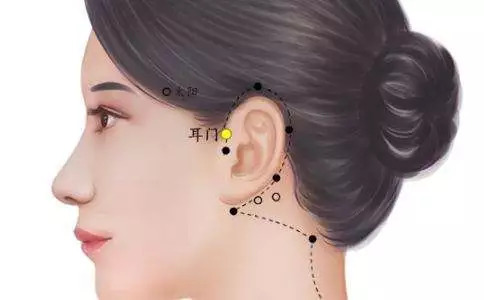
穴位名称: 耳尖穴
穴位名称拼音: Erjian
穴位国际通用代码: EX-HN6
穴位别名:
穴位释义: 因其位於耳尖最上部，故名。本穴主治耳聋、耳鸣、聤耳、齿痛等。耳尖所在的位置，相当于代表着自主神经的高级中枢，刺激耳尖穴，可以调治人体脏腑功能和情绪。耳尖放血疗法简便、效果明显、治疗范围广，是临床上常用的治疗手法。
穴位定位和取穴方法: 正坐位或侧伏坐位，在耳郭的上方，当折耳向前，耳郭上方的尖端处。正坐位或侧伏坐位，在耳廓的上方，当折耳向前，耳郭上方的尖端处。
穴位解剖位置和结构: 穴下有皮肤、皮下组织和耳郭软骨。分布有颞浅坳、静脉的耳前支，耳后动静脉的耳后支，耳颞神经耳前支、枕小神经耳后支和面神经耳支等。
穴位隶属五行:
穴位隶属经脉: 经外奇穴
穴位隶属经脉英文: Non-meridian extra acupoint
穴位隶属经脉五行:
穴位治法-针刺: 下刺0.3~0.5寸；或将耳尖穴消毒，用三棱针或注射针头在耳尖穴上点刺出血，挤出8-10滴血后，用消毒干棉球压迫止血即可，每日1次，可以交通心肾，疏利胆热，镇定安眠，降压。
穴位治法-灸法: 用艾条温和灸耳尖穴10分钟，一天一次，可以缓解治疗偏正头痛、角膜炎等病症。
穴位治法-按摩及其它: 按摩耳尖穴缓解目赤肿痛、急性结膜炎，具有清热祛风、解痉止痛的功效。
穴位功能: 清热祛风，解痉止痛，清脑明目。
穴位主治与临床运用: 1. 目赤肿痛，急性结膜炎，角膜炎。2. 偏正头痛。3. 其它： 镇定安眠，祛瘀通阻，通血降压。
穴位主要配伍: 1. 配大椎穴、十宣穴缓解治疗中暑。2. 配攒竹穴、风池穴、光明穴、合谷穴、委中穴、关冲穴、印堂穴缓解治疗结膜炎、目赤肿痛等。
穴位图片: 

穴位名称: 二白穴
穴位名称拼音: Erbai
穴位国际通用代码: Ex-UE2
穴位别名:
穴位释义: 二，指数量。白，指白色、明亮的意思。本穴位于桡侧腕屈肌腱的两侧，此处肉嫩皮白，一侧有二穴，故名。本穴主治痔疮、脱肛等。
穴位定位和取穴方法: 二白穴属于经外奇穴，二白穴的准确位置位于前臂掌侧，腕横纹上4寸，桡侧腕屈肌腱的两侧，一侧有2穴。握拳，拇指侧一筋凸起，腕横纹直上6横指处与筋交点两侧即是。
穴位解剖位置和结构: 在指浅屈肌、拇长屈肌（桡侧穴）和指深屈肌（尺侧肌）中，穴区浅层有前臂内、外侧皮神经分布；深层有桡动脉干、桡神经浅支（桡侧穴）和正中神经（尺侧穴）经过，并有正中神经肌支和骨间前动脉分布。
穴位隶属五行:
穴位隶属经脉: 经外奇穴
穴位隶属经脉英文: Non-meridian extra acupoint
穴位隶属经脉五行:
穴位治法-针刺: 直刺0.5~1寸。
穴位治法-灸法: 艾炷灸3~5壮；或艾条灸5~10分钟。
穴位治法-按摩及其它: 如厕时久蹲不下，感到疼痛难忍，揉揉二白，就能有效缓解疼痛。
穴位功能: 调和气血，提肛消痔。
穴位主治与临床运用: 1. 痔疮，脱肛。2. 前臂痛，胸肋痛。
穴位主要配伍: 1. 配百会穴、长强穴可治脱肛等。2. 配大肠俞治疗痔疮（二白：针刺泻法；大肠俞：挑治法）。
穴位图片:  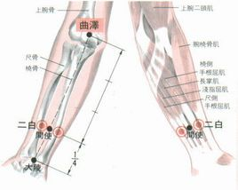
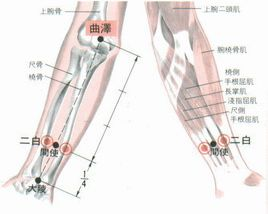
穴位名称: 耳和髎
穴位名称拼音: Erheliao
穴位国际通用代码: SJ22
穴位别名:
穴位释义: 耳即耳窍，和即调和，髎指骨隙，此穴在耳前骨的浅表陷隙中，可调耳和声。禾髎。禾，五谷之代称也，此指气血中的脾土微粒。髎，孔隙也。禾髎名意指三焦经经气及穴外汇入的寒湿水气在此化雨冷降。本穴物质中一方面是耳门穴传来的水湿之气，其量少，其性收引，另一方面是足少阳胆经和手太阳小肠经传入本穴的湿冷水气，两气交会后在本穴的变化为化雨冷降，所降之雨如从孔隙中漏落一般，故名。本穴主清热散风、通窍聪耳等。
穴位定位和取穴方法: 在侧头部，当鬓发后缘，平耳廓根之前方，颞浅动脉的后缘。正坐或侧伏，在耳门前上方，平耳廓根之前方，鬓发后缘之动脉搏动外取穴。
穴位解剖位置和结构: 在耳前肌、颞筋膜浅层及颞肌；布有颞浅动、静脉的分支和属支；有耳颞神经、面神经颞支分布。
穴位隶属五行:
穴位隶属经脉: 手少阳三焦经
穴位隶属经脉英文: Sanjiao Meridian of Hand-shaoyang
穴位隶属经脉五行: 火
穴位治法-针刺: 避开动脉，斜刺或平刺0.3~0.5寸，局部酸胀。
穴位治法-灸法: 温针灸3~5壮；或艾条灸5~10分钟。
穴位治法-按摩及其它: 用大拇指按揉耳和髎约200次，或按揉3~5分钟，每天坚持，能治疗耳聋、耳鸣。
穴位功能: 祛风通络，解痉止痛。
穴位主治与临床运用: 1. 头痛，耳鸣。2. 面神经麻痹，牙关紧闭，口喎。
穴位主要配伍: 1. 配听宫、翳风主治耳鸣。2. 配颊车、地仓、阳白主治面瘫。3. 配太阳、印堂、足临泣主治偏头痛。
穴位图片:  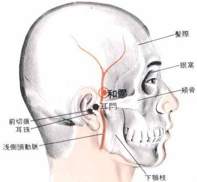
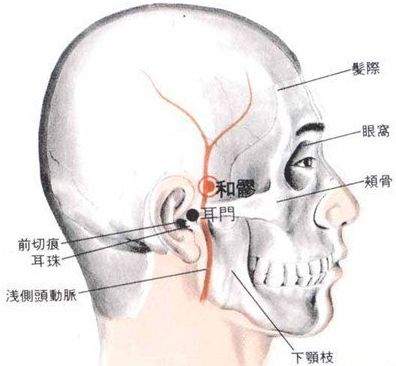
穴位名称: 扶突穴
穴位名称拼音: Futu
穴位国际通用代码: LI18
穴位别名: 水穴，水泉穴
穴位释义: 扶，帮助、扶持也。突，冲也。该穴名意指大肠经经气在外热的扶助下上行天部。本穴物质为天鼎穴蒸发上行的水湿之气，性滞重，至本穴后无力上行于天，是在心的外散之热扶助下才得以上行，故名。本穴主治咳嗽、气喘、咽喉肿痛等。
穴位定位和取穴方法: 位于人体的颈外侧部，在喉结旁开3寸，当胸锁乳突肌前、后缘之间。
穴位解剖位置和结构: 在胸锁乳突肌胸骨头间颈阔肌中，深层为肩胛提肌起始点；深层内侧有颈升动脉；布有耳大神经，颈皮神经，枕小神经及副神经。
穴位隶属五行:
穴位隶属经脉: 手阳明大肠经
穴位隶属经脉英文: Large Intestine Meridian
穴位隶属经脉五行: 金
穴位治法-针刺: 直刺0.5~0.8寸，局部酸胀，可向咽喉部放散，出现发紧发胀之感。注意针刺不可过深，以免引起迷走神经反应。
穴位治法-灸法: 艾炷灸3~5壮；或温和灸5~10分钟。
穴位治法-按摩及其它: 食指和中指并拢，以指腹按压穴位，每次左右各按压1~3分钟。
穴位功能: 清咽消肿，理气降逆。
穴位主治与临床运用: 咳嗽气喘 ，咽喉肿痛，吞咽困难，甲状腺肿大，声音嘶哑。
穴位主要配伍: 配合谷治瘿气。
穴位图片: 

穴位名称: 丰隆穴
穴位名称拼音: Fenglong
穴位国际通用代码: ST40
穴位别名:
穴位释义: 丰即丰满，隆指突起，足阳明经多气多血，气血于本穴会聚而隆起，肉渐丰厚，故名。另释： 丰隆，象声词，为轰隆之假借词。本穴物质主要为条口穴、上巨虚穴、下巨虚穴传来的水湿云气，至本穴后，水湿云气化雨而降，且降雨量大，如雷雨之轰隆有声，故名。本穴主治嗜睡等。
穴位定位和取穴方法: 位于人体的小腿前外侧，外踝尖上八寸，条口穴外，距胫骨前缘二横指（中指）。仰卧或正坐垂足，在外膝眼（犊鼻穴）下8寸，即外踝最高处与外膝眼联机之中点，距胫骨前缘二横指处取穴。或从腿的外侧找到膝眼和外踝这两个点，连成一条线，然后取这条线的中点，接下来找到腿上的胫骨，胫骨前缘外侧1.5寸，大约是两指的宽度，和刚才那个中点平齐，这个地方就是丰隆穴。
穴位解剖位置和结构: 在趾长伸肌外侧和腓骨短肌之间；有胫前动脉分支；当腓浅神经处。
穴位隶属五行:
穴位隶属经脉: 足阳明胃经
穴位隶属经脉英文: Stomach Meridian of Foot-Yangming
穴位隶属经脉五行: 土
穴位治法-针刺: 患者仰卧，伸腿勾足，取丰隆穴，常规消毒后，用毫针垂直进针，迅速刺入皮下，进针1~1.5寸深。待针下有沈、涩、紧感为得气，得气后施以徐而重之手法，使针感传至二、三趾部，针感随时间延长而呈持续性加强，直至出针为止。每次留针30分钟，每日针刺1次，10日为一疗程，其间休息2日。适应症：高脂血症。形体肥胖或善忘语迟或思维迟钝或痴呆嗜睡，头胀、眩晕。
穴位治法-灸法: 艾炷灸3-7壮；或艾条灸5-15分钟。
穴位治法-按摩及其它: 丰隆穴的穴肉厚而硬，点揉时可用按摩棒，或用食指节重按才行。可在经穴四周上下左右点按试探，取最敏感的点。当有痰吐不出的时候，丰隆穴会比平时敏感许多。1. 用大拇指采用点按式按丰隆穴三分钟，然后沿顺时针揉丰隆穴十分钟，后用大拇指沿丰隆穴向下单方向搓（即只能是由丰隆穴向下，而不能是由丰隆穴向下然后由下到上这样的来回搓）十分钟即可。可治胃胀，打嗝，食欲不佳。2. 按摩丰隆穴可以祛湿化痰，丰隆，象声，轰隆打雷。按摩能把脾胃上的浊湿像打雷下雨一样排出去。3. 将左（右）下肢平放在对侧膝关节上，用右（左）手中指指尖放在丰隆穴上，拇指附在对侧，用力掐0.5分钟~1分钟。每天早晚坚持做1遍，要持之以恒。同时配合做收腹~提肛运动20~30次。可消食导滞，消脂。
穴位功能: 化痰行滞，宽胸理气，沉降胃浊。
穴位主治与临床运用: 1. 头痛、眩晕、嗜睡、高血压、高血脂症、神经衰弱、精神分裂症。2. 咳嗽痰多、支气管炎。3. 癫狂。4. 下肢痿痹。
穴位主要配伍: 1. 配阴陵泉、商丘、足三里治疗痰湿诸症。2. 配肺俞、尺泽治疗治咳嗽，哮喘。3. 配冲阳，有豁痰宁神的作用，主治狂妄行走，登高而歌，弃衣而走。4. 配照海、陶道，有涤痰醒神的作用，主治癫痫。
穴位图片: 

穴位名称: 府舍穴
穴位名称拼音: Fushe
穴位国际通用代码: SP13
穴位别名:
穴位释义: 府，脏腑也。舍，来源之意。该穴名意指本穴气血来源于体内脏腑。因本穴有地部孔隙与体内阴维脉相通，体内的阴维脉的水液外传本穴，本穴的气血物质部分是来源于脏腑，故名。本穴主治腹痛、疝气等。
穴位定位和取穴方法: 在下腹部，当脐中下4寸，冲门上方0.7寸，距前。在下腹部，当脐中下4寸，冲门上方0.7寸，距前正中线4寸。
穴位解剖位置和结构: 在腹股沟韧带上方外侧，腹外斜肌腱膜及腹内斜肌下部，深层为腹横肌下部；布有腹壁浅动脉，肋间动、静脉；布有髂腹股沟神经（右当盲肠下部，左当乙状结肠下部）。
穴位隶属五行:
穴位隶属经脉: 足太阴脾经，阴维脉
穴位隶属经脉英文: Spleen Meridian of Foot-Taiyin
穴位隶属经脉五行: 土
穴位治法-针刺: 直刺 1~1.5寸。
穴位治法-灸法: 艾炷灸3-5壮；或艾条灸5~20分钟。用艾条温和灸府舍穴5~20分钟，每日一次，可以改善腹胀、腹痛。
穴位治法-按摩及其它: 用大拇指按揉府舍穴100~200次，每天坚持，可以缓解腹股沟痛。
穴位功能: 润脾之燥，健脾理气，生发脾气，散结止痛。
穴位主治与临床运用: 腹痛，积聚，痞块，疝气等。
穴位主要配伍: 配气海治腹痛。
穴位图片:
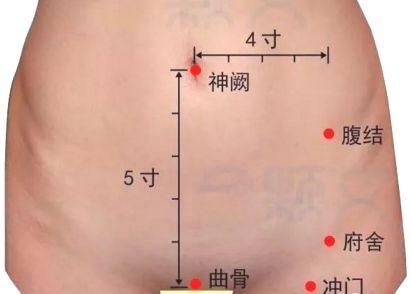
穴位名称: 风门穴
穴位名称拼音: Fengmen
穴位国际通用代码: BL12
穴位别名:
穴位释义: 风，言穴内的气血物质主要为风气也。门，出入的门户也。风门名意指膀胱经气血在此化风上行。本穴物质为膀胱经背俞各穴上行的水湿之气，至本穴后吸热胀散化风上行，故名。风门穴是临床驱风最常用的穴位之一。
穴位定位和取穴方法: 位于背部，在第2胸椎棘突下，旁开1.5寸。取穴时通常采用正坐或俯卧姿势，从朝向大椎下的第2个凹洼（第2胸椎与第3胸椎间）的中心，左右各2厘米左右之处就是风门穴。
穴位解剖位置和结构: 有斜方肌，菱形肌，上后锯肌，深层为最肌；有第二肋间动、静脉后支；布有二、三胸神经后支的皮支，深层为第三胸神经后支外侧支。穴下为皮肤、皮下组织、斜方肌、小菱形肌、上后同锯肌、骶棘肌。皮肤由第一、二、三胸神经后支的内侧支分布。斜方肌由副神经支配；菱形肌由肩胛背神经支配，该神经由臂丛发出，由肩胛提肌前缘，经该肌和菱形肌的深面，沿肩胛骨的内侧缘下降，几达该骨下角，分支支配大、小菱形肌和肩胛提肌。针经上述结构后，可深至第二肋间结构，其胸腔相参应器官是胸膜腔及肺，所以要掌握针刺的深度。
穴位隶属五行:
穴位隶属经脉: 足太阳膀胱经
穴位隶属经脉英文: Bladder Meridian of Foot-Taiyang
穴位隶属经脉五行: 水
穴位治法-针刺: 斜刺0.5~0.8寸，局部酸胀，针感可扩散至肋间及肩部。不可深刺，以防造成气胸。
穴位治法-灸法: 艾炷灸5~7壮；或艾条温灸10~15分钟。
穴位治法-按摩及其它: 1. 深呼吸，在气止时用食指强力按压穴位，缓缓吐气。经6秒钟后，再慢慢的放手。以此要领重复做10次到30次。用这种治疗法几乎可治愈感冒。2. 按摩风门穴能预防中风，脑出血昏倒时，可在风门穴上放血，会缓和脑部充血或出血，可以急救。3. 常按摩风门穴对肩酸痛、肩背软组织劳损、头痛等症状有缓解作用。
穴位功能: 宣通肺气，疏散风邪，调整气机，清热解表。
穴位主治与临床运用: 伤风，咳嗽，发热头痛，颈椎痛，胸背痛。
穴位主要配伍: 1. 配肺俞穴、大椎穴治咳嗽、气喘。 2. 配合谷穴治风门穴伤风咳嗽。
穴位图片:  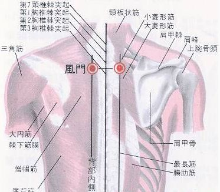
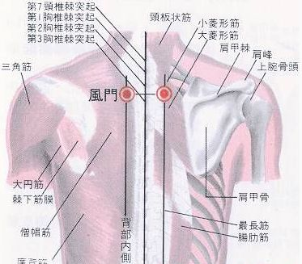
穴位名称: 风府穴
穴位名称拼音: Fengfu
穴位国际通用代码: DU16
穴位别名: 本穴，鬼穴，舌本，曹溪，鬼穴，鬼枕
穴位释义: 风，指穴内气血为风气也。府，府宅也。风府名意指督脉之气在此吸湿化风。本穴物质为哑门穴传来的天部阳气，至本穴后，此气散热吸湿并化为天部横行的风气，本穴为天部风气的重要生发之源，故名。风府穴最容易招致风邪，但治疗和风有关的疾病，也是首选此穴。
穴位定位和取穴方法: 风府穴属于督脉穴位图，风府穴位于人体项部，当后发际正中直上1寸，枕外隆凸直下，两侧斜方肌之间凹陷处。触摸耳垂后面，有称为“乳突”的凸骨，从此骨下方沿后缘，触摸上方的骨头，有一浅凹。一压，即有震动感，就是此穴。取此穴时通常采用俯伏、俯卧或正坐的取穴姿势，风府穴位于后颈部，两风池穴连线中点，颈顶窝处。
穴位解剖位置和结构: 皮肤、皮下组织、项韧带、棘韧带、黄韧带；穴区内伴行动脉，深层有枕大神经和枕动脉，再深层有硬脊膜和脊髓。
穴位隶属五行:
穴位隶属经脉: 督脉，阳维脉
穴位隶属经脉英文: Governor Vessel
穴位隶属经脉五行:
穴位治法-针刺: 伏案正坐位，使头微前倾，项肌放松，向下颌方向缓慢刺入0.5~1寸。针尖不可向上，以免刺入枕骨大孔，误伤延髓。
穴位治法-灸法: 禁灸。
穴位治法-按摩及其它: 大拇指指尖相互叠加向下，用指腹（或指尖）揉按穴位，有酸痛、胀麻的感觉。每次揉按1~3分钟。在按摩风府穴的时候，可以低下头，女性用左手将头发向前揽起，用右手拇指按摩，其余四指在头上部固定住。这样大拇指可以得力，稍微用点劲，每次按摩30~50次，可以很好地缓解头痛症状。按摩风府穴，可以改善血液循环，也就是大脑的血液供应，按摩完之后会觉得头脑特别清醒，不再晕晕沉沉。
穴位功能: 清热散风，通关开窍。
穴位主治与临床运用: 1. 头痛，眩晕，项强等头项病证。 2. 中风，癫狂，痴呆。 3. 咽喉肿痛，失音。
穴位主要配伍: 1. 配百会、太冲，可疏肝理气、通阳止痛，主治头痛。2. 配肺俞、太冲、丰隆，可化痰理气解郁，主治癫狂。3. 配人中、太冲，可疏风镇惊、通关开窍，主治惊风。4. 配肺俞，廉泉，可疏风解表、清热止痛，主治咽喉肿痛。5. 配昆仑、束骨治狂证多言不休。
穴位图片:
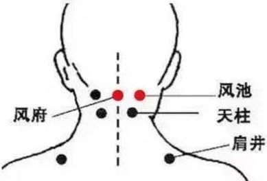
穴位名称: 风市穴
穴位名称拼音: Fengshi
穴位国际通用代码: GB31
穴位别名:
穴位释义: 市，集市也。该穴名意指胆经经气在此散热冷缩后化为水湿风气。本穴物质为环跳穴传来的天部凉湿水气，至本穴后，凉湿水气进一步散热缩合而变为天部的水湿云气，水湿云气由本穴的天部层次横向向外传输，本穴如同风气的集散之的，故名。本穴为治疗风邪的要穴。
穴位定位和取穴方法: 在大腿外侧部的中线上，当腘横纹上7寸。或直立垂手时，中指尖处。
穴位解剖位置和结构: 在阔筋膜下，股外侧肌中；有旋股外侧动、静脉肌支；布有股外侧皮神经，股神经肌支。
穴位隶属五行:
穴位隶属经脉: 足少阳胆经
穴位隶属经脉英文: Gallbladder Meridian of Foot-Shaoyang
穴位隶属经脉五行: 木
穴位治法-针刺: 直刺1~1.5寸。1. 配穴与治疗时，可用沿经刺法，或用扬刺法（《内经》说：“扬刺者，正内一，傍内四，而浮之，以治寒气广大者也”），即在该穴的前后左右约0.5~1.0寸处，再加用蜂针，或旁边各点用散刺或点刺的方法。其他可配用肾俞、阳陵泉、梁丘、血海等穴进行。可治疗股外侧皮神经炎。2. 取穴风市为主 ，配翳风、风池、颊车、合谷。患者取侧卧位，患侧在上，局部皮肤消毒后 ，配穴采用平补平泻手法进针1寸，获得针感后留针30min，加 TDP照射 。可治面肌痉挛。
穴位治法-灸法: 艾炷灸5-7壮；或艾条灸10-15分钟。
穴位治法-按摩及其它: 呈马步状，双手击打大腿外侧手自然下垂中指处的风市穴。
穴位功能: 运化水湿，祛风化湿，疏通经络。
穴位主治与临床运用: 中风半身不遂，下肢痿痹、麻木，遍身瘙痒，脚气。
穴位主要配伍: 1. 配大肠俞、环跳、秩边、委中、阳陵泉等穴治疗腰腿酸痛。2. 配大杼、大椎、命门、关元、腰阳关等治疗类风湿、痹证。2. 配风池、曲池、外关、血海穴治疗荨麻疹。3. 配伏兔、犊鼻、足三里、悬钟等穴治疗下肢痿痹等。
穴位图片: 

穴位名称: 风池穴
穴位名称拼音: Fengchi
穴位国际通用代码: GB20
穴位别名: 热府穴
穴位释义: 风，指穴内物质为天部的风气。池，屯居水液之器也，指穴内物质富含水湿。风池名意指有经气血在此化为阳热风气。本穴物质为脑空穴传来的水湿之气，至本穴后，因受外部之热，水湿之气胀散并化为阳热风气输散于头颈各部，故名。本穴为人体7大黄金穴位，缓解头痛头晕，及晕车晕船等。
穴位定位和取穴方法: 风池穴位于后颈部，后头骨下，两条大筋外缘陷窝中，相当于耳垂齐平。或当枕骨之下，与风府穴相平，胸锁乳突肌与斜方肌上端之间的凹陷处即是。
穴位解剖位置和结构: 在胸锁乳突肌与斜方肌上端附着部之间的凹陷中，深层为头夹肌；有枕动、静脉分支；布有枕小神经之支。
穴位隶属五行:
穴位隶属经脉: 足少阳胆经，阳维脉，阳跷脉
穴位隶属经脉英文: Gallbladder Meridian of Foot-Shaoyang
穴位隶属经脉五行: 木
穴位治法-针刺: 针尖微下，向鼻尖方向斜刺0.5~0.8寸，或平刺透风府穴。
穴位治法-灸法: 被施灸者取坐位，施灸者手执点燃的艾条，对准穴位，距皮肤1.5~3厘米，以感到施灸处温热、舒适为度。
穴位治法-按摩及其它: 1. 突发偏头痛时，可以用自己的两个中指重力按压双侧风池穴，一边按一边揉，连续按压3分钟，再配合按压患侧的太阳穴3分钟、合谷穴1分钟，偏头痛的症状即可缓解。2. 指压双侧风池穴3分钟，然后再按压头顶部的百会穴3分钟，即可减轻头晕症状。3. 按摩风池穴，治疗晕车、 晕船。
穴位功能: 清热降火，通畅气血，疏通经络，壮阳益气。
穴位主治与临床运用: 头痛，眩晕，颈项强痛，目赤痛，目泪出，鼻渊，鼻炎，鼻出血，耳聋，气闭，中风，高血压，精神病，口眼歪斜，疟疾，热病，感冒，瘿气，落枕，荨麻疹。
穴位主要配伍: 1. 配合谷穴、丝竹空穴治偏正头痛。2. 配脑户穴、玉枕穴、风府穴、上星穴治目痛不能视。3. 配百会穴、太冲穴、水沟穴、足三里穴、十宣治中风。4. 配风池穴、血海穴、百虫窝穴治疗荨麻疹。
穴位图片: 

穴位名称: 飞扬穴
穴位名称拼音: Feiyang
穴位国际通用代码: BL58
穴位别名: 厥阳穴，厥阴穴，厥扬穴
穴位释义: 飞，指穴内物质为天部之气也。扬，指穴内物质扬而上行也。飞扬名意指膀胱经气血在此吸热上行。本穴物质为膀胱经跗阳至至阴各穴吸热上行的水湿之气，在本穴的变化为进一步的吸热蒸升，故名。本穴主治风湿性关节炎、腰腿疼痛、痔疮等。
穴位定位和取穴方法: 在小腿后面，外踝后，昆仑穴直上7寸，承山穴外下方1寸处。取穴时正坐垂足，稍稍将膝盖向内倾斜，一手食中两指并拢，其他手指弯曲，以食中两指指腹顺着跟腱外侧的骨头向上摸，小腿肌肉的边缘即是该穴。
穴位解剖位置和结构: 有腓肠肌及比目鱼肌；布有腓肠外侧皮神经。
穴位隶属五行:
穴位隶属经脉: 足太阳膀胱经
穴位隶属经脉英文: Bladder Meridian of Foot-Taiyang
穴位隶属经脉五行: 水
穴位治法-针刺: 直刺1~1.5寸。
穴位治法-灸法: 艾炷灸3~5壮；或艾条灸5~10分钟。艾灸每次30分钟，每日1次或隔日1次。
穴位治法-按摩及其它: 1. 正坐、垂足，分别用食指和中指的指腹按揉左右两侧穴位，每次按揉1-3分钟。2. 令病人趴到床上，用手捏拿病人的小腿肚，即飞扬穴与筑宾穴（承山穴两侧向下对着捏），可祛除烦躁。3. 按摩飞扬穴速治感冒。4. 轻微用力敲打这个穴位，能够使腿部肌肉疲劳症状得到缓解。5. 长期按压这个穴位，能够治疗头痛、目眩、腰腿疼痛、痔疮等疾患。这个穴位，对于风湿性关节炎、精神疾患，也具有很好的治疗作用。6. 除去慢性腰痛（指疼痛持续一月以上的脊椎两旁的肌肉痛）：（1）以一手拇指随鼻腔慢慢吸入清气，渐渐向下按压飞扬穴至最酸胀时，缓缓吐出浊气，停留6秒，如此9次。（2）拇指缓缓拨动飞扬穴皮下组织5-15分钟，同时配合转动腰部。（3）拇指从飞扬穴向下直推49次。（4）以一手掌心按揉飞扬穴3分钟，并以掌心热敷1分钟结束。每天多次。
穴位功能: 散风解表，清热安神，舒筋活络，通络止痛。
穴位主治与临床运用: 头痛，目眩，鼻衄，颈项痛，风湿性关节炎，肾炎，膀胱炎，痔疮，下肢瘫痪等。
穴位主要配伍: 1. 配阳谷，治头眩眼痛。2. 配肾俞、复溜，治肾炎。3. 配长强、白环俞，治痔疮。
穴位图片: 

穴位名称: 腹结穴
穴位名称拼音: Fujie
穴位国际通用代码: SP14
穴位别名: 肠窟，肠屈，阳窟，肠结，腹屈穴，临窟
穴位释义: 腹，腹部也，脾也。结，集结也。该穴名意指脾经的气血在此集结。本穴物质为府舍穴传来的地部泥水混合物，因本穴位处肉之陷，泥水混合物流至本穴为聚集之状，故名。本穴主治腹痛、疝气等。
穴位定位和取穴方法: 在下腹部，大横下1.3寸，距前正中线4寸。
穴位解剖位置和结构: 穴下为皮肤、皮下组织、腹外斜肌、腹内斜肌、腹横肌、腹横筋膜、腹膜下筋膜。皮肤由第8、9、10肋间神经的前皮支重叠分布。皮下组织内有胸腹壁浅静脉及皮神经经过。深筋膜的下面有胸外侧动、静脉经过。腹腔内穴位相对应的器官有胆囊底、肝（右侧，一般成人肝下缘不超过肋弓）、胃（左侧）。针若经上列结构后，穿经其深面的腹膜腔，可达左右侧在腹腔内相对器官，可造成内出血（尤其对有出血倾向的人），或胃内容或胆汁随针路溢出，形成腹膜炎，所以该穴不可深刺，更不能提插。
穴位隶属五行:
穴位隶属经脉: 足太阴脾经
穴位隶属经脉英文: Spleen Meridian of Foot-Taiyin
穴位隶属经脉五行: 土
穴位治法-针刺: 直刺1~2寸。临床治疗急性胃肠炎，用针刺艾灸配合，取足三里、鸠尾、大横、腹结等穴，1~2次针灸后，症状消失。
穴位治法-灸法: 艾炷灸3-5壮；或艾条灸5-10分钟。
穴位治法-按摩及其它: 用双手中指指腹按揉腹结穴并做环状运动，每次3分钟，每日2次。
穴位功能: 宣通降逆，去湿健脾，理气调肠。
穴位主治与临床运用: 消化系统疾病：绕脐痛，消化不良，痢疾，胃溃疡，胃痉挛，胃酸过多或减少，消化不良，便秘，肠出血。
穴位主要配伍: 配气海、天枢治腹痛。
穴位图片: 

穴位名称: 腹通谷穴
穴位名称拼音: Futonggu
穴位国际通用代码: KI20
穴位别名: 通骨穴
穴位释义: 腹，指本穴位于腹部。通，通道、通孔也。谷，两山间的凹陷处也。该穴名意指肾经冲脉气血在此散热冷降为经水后注入地之地部。本穴物质为阴都穴传来的水湿之气，至本穴后散热冷降而成为地部经水，经水由本穴的地部孔隙注入地之地部，故名。本穴主治腹痛、腹胀、呕吐、心痛等。
穴位定位和取穴方法: 在上腹部，当脐中上5寸，前正中线旁开0.5寸。另说在脐上4寸，旁开0.5寸（《针灸甲乙经》）；脐上4寸，旁开1.5寸（《铜人腧穴针灸图经》）。
穴位解剖位置和结构: 在腹直肌内缘，有腹壁上动、静脉分支；布有第八肋间神经。
穴位隶属五行:
穴位隶属经脉: 足少阴肾经
穴位隶属经脉英文: Kidney Channel of Foot-Shaoyin
穴位隶属经脉五行: 水
穴位治法-针刺: 直刺或斜刺0.5~0.8寸
穴位治法-灸法: 艾炷灸3~7壮；或艾条灸5~10分钟。
穴位治法-按摩及其它: 用大拇指按揉腹通谷约200次，或按揉3~5分钟，能治疗胃脘胀痛、呕吐、心痛。
穴位功能: 清降浊气，健脾除湿。
穴位主治与临床运用: 腹痛，腹胀，呕吐，心痛，心悸，胸痛，暴喑。
穴位主要配伍: 1. 配内关、中脘治胃气逆。2. 配申脉、照海治癫痫、惊悸。3. 配上脘、足三里治纳呆。
穴位图片:  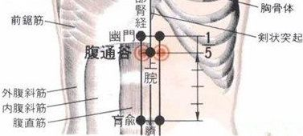
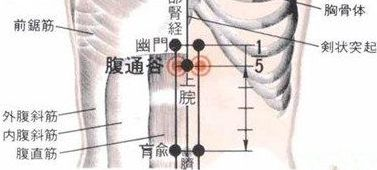
穴位名称: 腹哀穴
穴位名称拼音: Fuai
穴位国际通用代码: SP16
穴位别名: 肠哀穴，肠屈穴
穴位释义: 腹，腹部也，脾土也。哀，悲哀也。该穴名意指本穴的地部脾土受水之害。本穴物质为大横穴传来的天部水湿云气，至本穴后，水湿云气化雨降之于地部，脾土受湿而无生气之力，因而悲哀，哀其子金气不生也，故名。本穴主治消化不良、腹痛等。
穴位定位和取穴方法: 在上腹部，当脐中上3寸，距前正中线4寸。另说大横上2寸（《备急千金要方》）；大横上3.5寸（《铜人腧穴针灸图经》）；大横上4寸（《针灸集成》）。
穴位解剖位置和结构: 在腹内外斜肌及腹横肌肌部；布有第八肋间动、静脉；布有第八肋间神经。
穴位隶属五行:
穴位隶属经脉: 足太阴脾经，阴维脉
穴位隶属经脉英文: Spleen Meridian of Foot-Taiyin
穴位隶属经脉五行: 土
穴位治法-针刺: 直刺0.5~1寸。
穴位治法-灸法: 艾炷灸3~5壮；或艾条灸5~10分钟。
穴位治法-按摩及其它: 用大拇指按揉腹哀约200次，用于治疗腹胀、消化不良。
穴位功能: 冷降脾浊，健脾和胃，清热利湿。
穴位主治与临床运用: 消化系统疾病：消化不良，腹痛，便秘，痢疾。
穴位主要配伍: 配气海治肠鸣。
穴位图片:  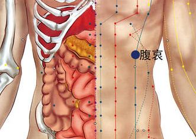
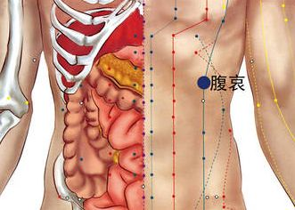
穴位名称: 复溜穴
穴位名称拼音: Fuliu
穴位国际通用代码: KI7
穴位别名: 昌阳，伏白，外命
穴位释义: 复溜是肾经的母穴，五行属金。“复”为重返、轮回，“溜”通“流”，是水流的意思，复溜名意指肾经的水湿之气在此再次吸热蒸发上行。本穴物质为照海穴传输来的寒湿水气，上行至本穴后因其此再次吸收天部之热而蒸升，气血的散失如溜走一般，故名。本穴主滋阴补肾等。
穴位定位和取穴方法: 在内脚踝后方，内踝尖与脚跟之间的凹陷处。取穴时，手指放在小腿外侧，将大拇指放在太溪穴上2寸处，大拇指指腹所在的位置即使该穴位。
穴位解剖位置和结构: 穴位下为皮肤、皮下组织、趾长屈肌、胫骨后肌。皮肤由隐神经的小腿内侧支分布。隐神经是股神经中最长的一支。该神经自股三角内下降，经其尖进入股?管。在该管的下端，与膝最上动脉共同穿股收肌腱板，离开该管；继在膝内侧缝匠肌和股薄肌之间，穿深筋膜，伴大隐表脉下降至小腿内侧，至小腿下三分之一处，分为二支：一支继续沿胫骨内侧缘下降至内踝；另一支经内踝的前面，下降至足的内侧缘。隐神经可与腓浅神经的足背内皮神经结合。上述的趾长屈肌和胫骨后肌等由胫神经的肌支支配。
穴位隶属五行: 金
穴位隶属经脉: 足少阴肾经
穴位隶属经脉英文: Kidney Channel of Foot-Shaoyin
穴位隶属经脉五行: 水
穴位治法-针刺: 直刺0.8~1寸，局部酸胀，有麻电感向足底放散。
穴位治法-灸法: 艾炷灸或温针灸3~5壮；或艾条温和灸复溜穴5~20分钟，可以缓解水肿、腹胀、盗汗。
穴位治法-按摩及其它: 1. 按摩：取本穴多用补法，经常按摩能够达到滋阴补肾的功效。凡因水液代谢失常引起的问题，如静脉曲张、水肿腹胀、关节肿胀、自汗、盗汗、腰脊强痛、腹泻、小便不利等，按摩复溜都有很好的效果。按摩复溜穴可缓解治疗肾炎、腹胀、肠鸣、水肿、泄泻、盗汗、自汗、脚气、腿肿、尿道炎、尿路感染、更年期综合征、精力衰退等。用拇指按揉复溜穴100~200次，治疗腿肿。日常保健时，可座位屈膝，以拇指指腹点揉复溜穴。点揉的力度要均匀、柔和、浸透，使力气深达深层部分安排，以有酸痛感为佳。迟早各一次，每次点揉3~5分钟，两边复溜穴替换点揉。2. 拔罐：用气罐留罐5~10分钟，隔天一次，可以改善腹胀、水肿。3. 刮痧：用面刮法从上向下刮拭复溜穴，力度微重，出痧为度，治疗腹泻、淋症。
穴位功能: 补肾益阴，温阳利水。
穴位主治与临床运用: 1. 消化系统疾病，如痢疾、泄泻、便秘；2. 五官科疾病，如耳鸣、耳聋、青盲、暴盲、近视眼；3. 泌尿生殖系统疾病，如尿路感染、肾炎、睾丸炎、遗精；4. 2. 精神神经系统疾病：小儿麻痹后遗症，脊髓炎。5. 其他，如脑炎、功用性子宫出血、脊髓炎、腹膜炎、痔疮出血、糖尿病、软腭麻木、腰部肌肉损害等。
穴位主要配伍: 1. 配中极穴、阴谷穴缓解治疗癃闭。2. 配后溪穴、阴郄穴缓解治疗盗汗不止。
穴位图片:  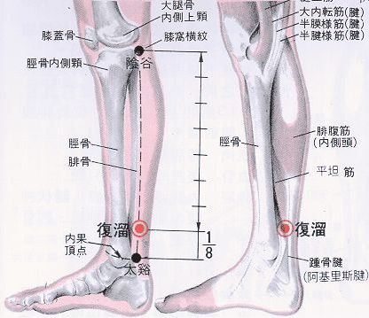
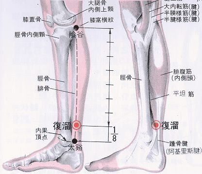
穴位名称: 肺俞穴
穴位名称拼音: Feishu
穴位国际通用代码: BL13
穴位别名:
穴位释义: 肺，指肺脏。俞，输也。肺俞名意指肺脏的湿热水气由此外输膀胱经。肺俞穴主治肺脏疾患。
穴位定位和取穴方法: 在背部，当第3胸椎棘突下，旁开1.5寸。 取定穴位时，一般采用正坐或俯卧姿势，肺俞穴位于人体的背部，当第三胸椎棘突下，左右旁开二指宽处。
穴位解剖位置和结构: 有斜方肌、菱形肌，深层为最长肌；有第三肋间动、静脉后支；布有第三或第四胸神经后支的皮支，深层为第三胸神经后支外侧支。
穴位隶属五行:
穴位隶属经脉: 足太阳膀胱经
穴位隶属经脉英文: Bladder Meridian of Foot-Taiyang
穴位隶属经脉五行: 水
穴位治法-针刺: 斜刺0.3~0.5寸。挑刺肺俞穴可治疗咳喘病。
穴位治法-灸法: 艾炷灸3~7壮；或艾条灸5~15分钟。
穴位治法-按摩及其它: 按摩肺俞穴以两手拇指指腹放在肺俞穴上，逐渐用力下压揉按，会产生酸、麻、胀、重的感觉。反复操作5~10分钟，每日或隔日1次。具有保护肺脏的功效。
穴位功能: 解表宣肺，调补肺气，补虚清热。
穴位主治与临床运用: 肺及呼吸道疾病：咳嗽，气喘，吐血，骨蒸，潮热，盗汗，鼻塞。
穴位主要配伍: 1. 配风门治咳嗽喘。2. 配合谷、迎香治鼻疾。
穴位图片: 

穴位名称: 伏兔穴
穴位名称拼音: Futu
穴位国际通用代码: ST32
穴位别名: 外丘，外勾
穴位释义: 伏，停伏、降伏也。兔，卯木也，风也。该穴名意指胃经气血物质中的脾土微粒在此沉降堆积。本穴物质为气冲穴、髀关穴传来的地部经水及水湿风气，至本穴后风停气息，随风气飘扬和随经水冲涮的脾土微粒沉降堆积，如停伏之状，故名。本穴主治腰痛膝冷、腰椎间盘突、腰痛腿疼、下肢麻痹、疝气、脚气等。
穴位定位和取穴方法: 在大腿前面，当髂前上棘与髌底外侧外侧端的连线上，髌底上6寸。正坐屈膝成90度，医者以手腕掌第一横纹抵患者膝髌上缘中点，手指并拢压在大腿上，当中指到达处是穴。
穴位解剖位置和结构: 穴位下穿过皮肤为浅筋膜、深筋膜，以及股直肌，进入股间肌内。支配该皮区的神经包括股前皮神经以及股外侧皮神经。深层肌内分布有股神经的肌支以及股深动脉，静脉发出的旋股外侧动、静脉的降支。
穴位隶属五行:
穴位隶属经脉: 足阳明胃经
穴位隶属经脉英文: Stomach Meridian of Foot-Yangming
穴位隶属经脉五行: 土
穴位治法-针刺: 直刺1~2寸。1. 蜂针治疗常用伏兔穴，配合膝眼、血海、梁丘、鹤顶等穴，治退行性膝关节炎。2. 蜂针治疗常用伏兔穴，全合用风市、血海、志室、膈俞等穴。治荨麻疹。
穴位治法-灸法: 艾炷灸3~5壮；或艾条灸5~10分钟。
穴位治法-按摩及其它: 用手掌小鱼际敲击伏兔穴2~3分钟，长期敲击，可以改善妇科诸疾，疝气等。
穴位功能: 祛风除湿，通经活络，散寒止痛。
穴位主治与临床运用: 腰痛膝冷，下肢麻痹，疝气，脚气。
穴位主要配伍: 1. 配髀关、阳陵泉治下肢痿痹。2. 配肾俞、环跳、委中、阳陵泉、三阴交，治下肢麻痹、瘫痪。3. 配髀关、风市、阳陵泉、膝眼、足三里、地机、丰隆、悬钟，治腿痛。4. 配肝俞，有温经行气的作用，治寒疝。5. 配风市、足三里、绝骨、犊鼻、 上巨虚、商丘，治脚气。
穴位图片: 
穴位名称: 浮白穴
穴位名称拼音: Fubai
穴位国际通用代码: GB10
穴位别名:
穴位释义: 浮，飘浮也。白，肺之色也，此指穴内气血为肺金之性的温热水湿云系。该穴名意指胆经的阳热风气在此化为温热之性的水湿云系。本穴物质为天冲穴传来的阳热风气，至本穴后风气势弱缓行，散热吸湿后化为肺金之性的温热水气，如同云气飘浮于天部，故名。浮白穴是治疗白发的常用经验穴。
穴位定位和取穴方法: 在头部，当耳后乳突的后上方，天冲与完骨的弧形连线的中三分之一交点处。正坐或侧伏，在耳后乳突后上方，当天冲穴与头窍阴穴的弧形连线的中点处取穴。
穴位解剖位置和结构: 有耳后动、静脉分支；布有耳大神经之分支。
穴位隶属五行:
穴位隶属经脉: 足少阳胆经
穴位隶属经脉英文: Gallbladder Meridian of Foot-Shaoyang
穴位隶属经脉五行: 木
穴位治法-针刺: 斜刺0.5~0.8寸。
穴位治法-灸法: 间接灸3~5壮；或艾条灸5~10分钟。
穴位治法-按摩及其它: 每日睡觉前和次日起床后，用双手的指头揉搓头皮，先自前额经头顶到枕部每次2~4分钟，每分钟来回揉搓30~40次，以后逐步延长到每次5~10分钟。长期坚持。
穴位功能: 理气散结，散风止痛，清热祛湿，疏肝利胆，填精补肾。
穴位主治与临床运用: 头项，五官等疾病：头痛，颈项强痛，耳鸣，耳聋，齿痛，瘰疬，瘿气，臂痛不举，足痿不行。
穴位主要配伍: 1. 配风池、行间治偏头痛、目赤肿痛。2. 配听会、中渚治耳鸣、耳聋。3. 配肾俞、太溪、耳门治耳鸣、耳聋。
穴位图片:  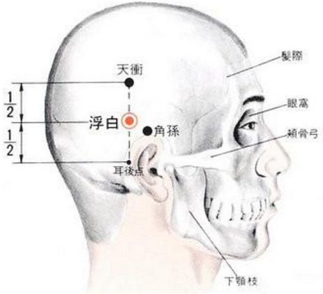
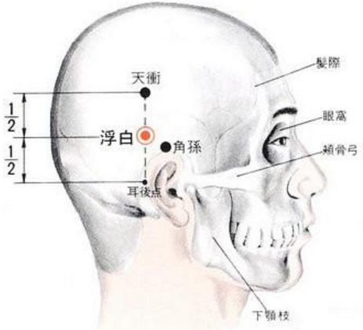
穴位名称: 浮郄穴
穴位名称拼音: Fuxi
穴位国际通用代码: BL38
穴位别名:
穴位释义: 浮，阳也、气也。郄，孔隙也。浮郄名意指膀胱经经气在此各至天之天部。本穴物质为委阳穴传来的水湿之气，至本穴后因吸热而上至天之天部，但因膀胱经气血性本寒湿，即使吸热其所上行天之天部的气态物也少，如从孔隙中上行一般，故名。本穴主治便秘、股腘部疼痛、麻木等。
穴位定位和取穴方法: 在腘横纹外侧端，委阳上1寸，股二头肌腱的内侧。
穴位解剖位置和结构: 在股二头肌键内侧；有膝上外侧动、静脉；布有股后皮神经，正当腓总神经处。
穴位隶属五行:
穴位隶属经脉: 足太阳膀胱经
穴位隶属经脉英文: Bladder Meridian of Foot-Taiyang
穴位隶属经脉五行: 水
穴位治法-针刺: 直刺1~1.5寸。
穴位治法-灸法: 艾炷灸3~5壮；或艾条灸10~15分钟。
穴位治法-按摩及其它: 按摩浮郄穴用姆指腹力道适中按揉或按压穴位，每次按摩约2~3分钟即可。具有治疗急性胃肠炎、便秘、麻木等保健功效益处。
穴位功能: 通经活络，舒筋利节，清热解痉。
穴位主治与临床运用: 急性胃肠炎，膀胱炎，便秘，腓肠肌痉挛， 股、腘部疼痛等。
穴位主要配伍: 1. 配承山、昆仑主治小腿挛急。2. 配尺泽、上巨虚主治肠鸣腹泻。
穴位图片: 

穴位名称: 附分穴
穴位名称拼音: Fufen
穴位国际通用代码: BL41
穴位别名:
穴位释义: 附，随带、附带也。分，分开、分出也。附分名意指膀胱经的气血物质在此形成一条经脉的附属分支。本穴主治颈项强痛、肩背拘急等。
穴位定位和取穴方法: 在背部，当第2胸椎棘突下，旁开3寸。俯卧位，平第二胸椎棘突下，督脉旁开3寸，当肩胛骨脊柱缘处取穴。
穴位解剖位置和结构: 在肩胛岗内端边缘，有斜方肌，菱形肌，深层为髂肋肌；有颈横动脉降支，当第二肋间动、静脉后支；布有第二胸神经后支。
穴位隶属五行:
穴位隶属经脉: 足太阳膀胱经
穴位隶属经脉英文: Bladder Meridian of Foot-Taiyang
穴位隶属经脉五行: 水
穴位治法-针刺: 斜刺0.5~0.8寸。局部酸胀； 不可深刺，以防气胸。
穴位治法-灸法: 艾炷灸3~7壮；或艾条灸5~15分钟。
穴位治法-按摩及其它: 用大拇指按揉附分约200次，或按揉3~5分钟，能防治颈项肩背疼痛。
穴位功能: 舒筋活络，疏风散邪。
穴位主治与临床运用: 1. 运动系统疾病：颈椎病，颈部肌肉痉挛。2. 精神神经系统疾病：肋间神经痛，副神经麻痹。3. 其它：肺炎，感冒。
穴位主要配伍: 1. 配风池、后溪，有祛风活络，舒筋镇痛的作用，主治颈项强痛。2. 配大椎，肩髃，有散寒除湿，通经活络的作用，主治肩背拘急疼痛。3. 配大椎、风门、肺俞，治哮喘病。4. 配风池、大椎，治颈项疼痛。5. 配环跳、肩髎、大椎、曲池，治肩关节疼痛。
穴位图片: 

穴位名称: 跗阳穴
穴位名称拼音: Fuyang
穴位国际通用代码: BL59
穴位别名: 付阳，附阳
穴位释义: 跗，脚背也。阳，阳气也。该穴名意指足少阳、足阳明二经的阳气在此带动足太阳经的气血上行。膀胱经足部上行的阳气至本穴后散热而化为湿冷的水气，由于有足少阳、足阳有二经上行的阳气为其补充热量，足太阳膀胱经的水湿之气才得以继续上行。本穴水湿之气的上行是依靠足背上行的阳气才得以上行的，故名。本穴主治头痛、腰骶痛、下肢痿痹等。
穴位定位和取穴方法: 在小腿后面，外踝后，昆仑穴直上3寸。正坐垂足或俯卧位，在足外踝后方，昆仑直上3寸处取穴。
穴位解剖位置和结构: 在腓骨的后部，跟腱外前缘，深层为拇长屈肌；有小隐静脉，深层为腓动脉末支；布有腓肠神经。
穴位隶属五行:
穴位隶属经脉: 足太阳膀胱经，阳跷脉
穴位隶属经脉英文: Bladder Meridian of Foot-Taiyang
穴位隶属经脉五行: 水
穴位治法-针刺: 直刺0.5~1寸，局部酸胀，针感可向足底放散。
穴位治法-灸法: 艾炷灸3~5壮；或艾条灸5~10分钟。
穴位治法-按摩及其它: 患者取俯卧位，全身放松。医者以两手拇指或屈拇指的指间关节桡侧，分别轻揉跗阳穴3~5分钟，再逐渐加大指力，“得气”时，嘱患者左右活动腰椎各关节2~3次；再轻揉该穴3~5分钟。最后配合掌揉法于腰患处治疗1~2分钟结束，每日治疗一次，每次二十分钟，三次为一疗程。治疗急性腰扭伤。
穴位功能: 舒筋活络，退热散风，吸热化湿。
穴位主治与临床运用: 1. 运动系统疾病：急性腰扭伤，下肢瘫痪，腓肠肌痉挛。2. 精神神经系统疾病：面神经麻痹，三叉神经痛，头痛等。
穴位主要配伍: 配大椎治颈项强痛。
穴位图片: 

穴位名称: 肝俞穴
穴位名称拼音: Ganshu
穴位国际通用代码: BL18
穴位别名:
穴位释义: 肝，肝脏；俞，输注；本穴为肝之背俞穴，故名。本穴归属于足太阳膀胱经，为足太阳膀胱经循行路线上位于背部的背俞穴之一，背俞穴适用于治疗相应的脏腑病证及有关的组织器官病证，故肝俞穴是治疗肝胆疾患的要穴，除可用于治疗脊背疼痛等局部病证外，还善于治疗肝胆疾患如黄疸、胁痛及目系疾患如视物模糊、夜盲等。
穴位定位和取穴方法: 在背部，当第9胸椎棘突下，旁开1.5寸。俯卧位，在第九胸椎棘突下，筋缩（督脉）旁开1.5寸处取穴。
穴位解剖位置和结构: 在背阔肌，最长肌和髂肋肌之间；有第九肋间动、静脉后支；布有第九或第十胸神经后支的皮支，深层为第九胸神经后支外侧支。穴位深部对第九肋间隙呐的结构。在胸、腹腔内则对应胸膜腔、肺、膈、肝、脾与胃。肝、脾为实质性器官，血液供应丰富。因此，如盲目针刺时，不能提插，不能捻转，应立即起针，应严密观察有无内出血现象。
穴位隶属五行:
穴位隶属经脉: 足太阳膀胱经
穴位隶属经脉英文: Bladder Meridian of Foot-Taiyang
穴位隶属经脉五行: 水
穴位治法-针刺: 斜刺0.5~0.8寸。局部酸胀，针感可扩散至肋间。不可深刺，以防造成气胸。
穴位治法-灸法: 艾炷灸3~7壮；或艾条灸5~15分钟。
穴位治法-按摩及其它: 正坐或站立，双手绕到背部，大拇指置于穴位上，用指腹垂直按揉穴位，力度以出现酸痛为宜，每天早晚各按摩一次，每次1~3分钟。
穴位功能: 疏肝利胆，理气解郁，镇静明目。
穴位主治与临床运用: 1. 消化系统疾病：急慢性肝炎，胆囊炎，慢性胃炎，胃扩张，胃痉挛，黄疸。2. 五官科系统疾病：眼睑下垂，结膜炎，青光眼，夜盲症，视网膜炎。3. 精神神经系统疾病：偏头痛，神经衰弱，肋间神经痛，精神病。4. 外科系统疾病：淋巴结结核，胃出血，肠出血，胆石症；5. 其它：月经不调等。
穴位主要配伍: 1. 配支沟、阳陵泉治胁痛。2. 配太冲治目眩。3. 配肾俞、太溪主治健忘、失眠。4. 配光明主治目昏。
穴位图片:
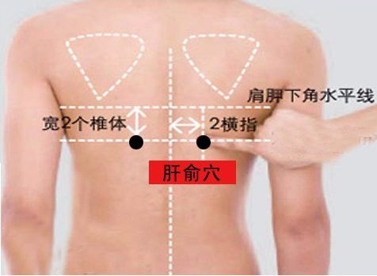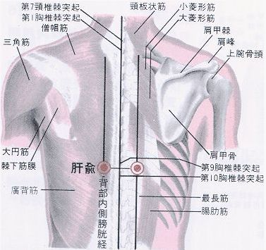
穴位名称: 归来穴
穴位名称拼音: Guilai
穴位国际通用代码: ST29
穴位别名: 溪穴
穴位释义: 从水道穴传来的地部经水到达本穴后，受冲脉外散之热的影响，经水气化，逆胃经上行，就像流去之水复又归来，故名。本穴主治腹痛、疝气、月经不调、白带等。
穴位定位和取穴方法: 在下腹部，当脐中下4寸，距前正中线2寸。一说“去腹中行当各三寸”（《针灸资生经》）。仰卧位，在水道下1寸，中极穴（任脉）旁开2寸处取穴。
穴位解剖位置和结构: 在腹直肌外缘，有腹内斜肌，腹横肌腱膜；外侧有腹壁下动、静脉；布有髂腹下神经。
穴位隶属五行:
穴位隶属经脉: 足阳明胃经
穴位隶属经脉英文: Stomach Meridian of Foot-Yangming
穴位隶属经脉五行: 土
穴位治法-针刺: 直刺1~1.5寸。
穴位治法-灸法: 艾炷灸3~7壮；或用艾条雀啄灸5~10分钟，一天一次，可治疗腹痛、带下等病症。
穴位治法-按摩及其它: 1. 以中间三指指腹垂直下按，由内而外按揉归来穴，每日早晚各按揉1~3分钟，可以治疗月经不调、不孕、阳痿等疾病。2. 用食指、中指指腹按揉3~5分钟，长期按摩，可改善疝气、月经不调等。
穴位功能: 活血化瘀，温经止带，调气固脱。
穴位主治与临床运用: 1. 妇产科系统疾病：月经不调，痛经，盆腔炎，白带，闭经，卵巢炎，子宫内膜炎。2. 泌尿生殖系统疾病：睾丸炎，小儿腹股沟疝，阴茎痛，男女生殖器疾病。
穴位主要配伍: 1. 配大敦治疝气。2. 配三阴交、中极治月经不调。
穴位图片: 

穴位名称: 公孙穴
穴位名称拼音: Gongsun
穴位国际通用代码: SP4
穴位别名:
穴位释义: 公孙，公之辈与孙之辈也，言穴内气血物质与脾土之间的关系也。脾经物质五行属土，其父为火，其公为木，其子为金，其孙为水。公孙名意指本穴物质为脾经与冲脉的气血相会后化成了天部的水湿风气。本穴主治胃痛、呕吐、腹痛、泄泻等。
穴位定位和取穴方法: 在足内侧缘，当第一跖骨基底部的前下方。
穴位解剖位置和结构: 在拇展肌中；有跗内侧动脉分支及足背静脉网；布有隐神经及腓浅神经分支。
穴位隶属五行:
穴位隶属经脉: 足太阴脾经
穴位隶属经脉英文: Spleen Meridian of Foot-Taiyin
穴位隶属经脉五行: 土
穴位治法-针刺: 直刺0.5~1寸。1. 针刺内关、足三里对胃蠕动多有增强作用，尤以足三里为明显，而针刺公孙则胃蠕动多减弱。2. 针刺公孙、内关、梁丘等穴有抑制胃酸的分泌作用。
穴位治法-灸法: 艾炷3~5壮；或艾条灸5~10分钟。
穴位治法-按摩及其它: 用对侧的拇指指尖掐按公孙穴1分钟，再顺时针方向揉按2分钟，以局都有酸胀感为度。
穴位功能: 健脾益胃，通调经脉。
穴位主治与临床运用: 1. 消化系统疾病：胃痛，急慢性胃炎，消化道溃疡，急慢性肠炎呕吐，腹痛，痢疾。2. 神志病证：心烦、失眠、狂证等。
穴位主要配伍: 1. 配中脘、内关治胃酸过多、胃痛。2. 配丰隆、膻中主治呕吐、眩晕。
穴位图片:
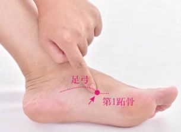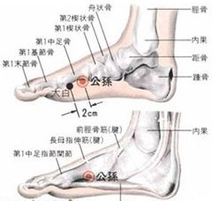
穴位名称: 关冲穴
穴位名称拼音: Guanchong
穴位国际通用代码: SJ1
穴位别名:
穴位释义: 关冲。关，关卡也。冲，冲射之状也。该穴名意指三焦经体内经脉的温热水气由此外冲体表经脉，阴性水液被关卡于内。关冲穴的物质为来自三焦经体内经脉外冲而出的温热水气，而液态物由于压力不足不能外出体表，如被关卡了一般，故名。本穴泄热开窍，为针眼特效穴，急救穴之一。
穴位定位和取穴方法: 关冲穴位于人体的手环指（无名指）末节尺侧，距指甲角0.1寸（指寸）。
穴位解剖位置和结构: 穴下为皮肤、皮下筋膜、指甲根。皮肤薄，由尺神经指掌侧固有神经的指背支分布。皮下筋膜薄而疏松，并有纤维束连于皮肤和骨膜。手指的静脉多位于背侧。浅淋巴管与指腱鞘、指骨骨膜的淋巴管相通。手的动脉每指有4条，即两条指掌侧固有动脉和两条指背动脉分别与同名神经伴行。均位于指掌、背面与侧面的交界线上。因指背血管及神经较细短，所以指的掌侧及末二节指背侧皮肤和深层结构，均分布有掌侧的血管和神经。
穴位隶属五行: 金
穴位隶属经脉: 手少阳三焦经
穴位隶属经脉英文: Sanjiao Meridian of Hand-shaoyang
穴位隶属经脉五行: 火
穴位治法-针刺: 1. 浅刺0.1~0.3寸，局部胀痛；或三棱针点刺出血。2. 先予关冲穴放血30滴，复刺太阳穴，用泻法。次日症状明显减轻；复针2次，症状全消。
穴位治法-灸法: 艾炷灸3~5壮；或艾条灸5~10分钟。
穴位治法-按摩及其它: 按摩操作的时候用指甲或者牙签掐关冲穴，每次掐10秒，放松2秒后重复掐按，每侧手指掐按5次。掐按时用力要均匀，使穴位能够感到微微酸痛。
穴位功能: 泻热开窍，清利喉舌，活血通络。
穴位主治与临床运用: 1. 头面部疾病：古代记述：头痛、寒热、头眩、心痛、心烦、昏厥、目痛、口干、口苦、舌卷、舌缓不语、喉痹、耳聋鸣、肩背痛、臂痛、肘痛。现代实验研究报道：急性扁桃体炎、喉炎、结膜炎、角膜白斑等症。2. 其他疾病：脑血管病、热病、小儿消化不良等。
穴位主要配伍: 1. 配少商、少泽，有泄热利咽的作用，主治咽喉肿痛。2. 配人中、劳宫，有泄热开窍的作用，主治中暑。3. 配风池、商阳，有退热解表的作用，主治热病无汗。
穴位图片: 

穴位名称: 关元穴
穴位名称拼音: Guanyuan
穴位国际通用代码: RN4
穴位别名: 三结交，下纪，次门，丹田，大中极
穴位释义: 该穴为小肠之“募穴”，小肠之气结聚此穴并经此穴输转至皮部。它为先天之气海，是养生吐纳吸气凝神的地方。古人称为人身元阴元阳交关之处，也是元气的关隘，故名。中医认为，关元其部位为真阳所居、化生精气之处。“为男子藏精，女子蓄血之处”，常按摩或艾灸关元穴，可起到补肾壮阳、理气和血、调痛经妇科病等的祛病养生功效。该穴最好的刺激方法就是艾灸。
穴位定位和取穴方法: 关元在脐下3寸，四指相并就是3寸，把四指相并，上沿紧挨着肚脐，下沿与肚脐相对的地方就是关元穴。在脐下3寸，腹中线上，仰卧取穴。 取穴时，可采用仰卧的姿势，关元穴位于下腹部，前正中线上，从肚脐到耻骨上方画一线，将此线五等分，从肚脐往下五分处，即是此穴。
穴位解剖位置和结构: 穴下为皮肤、皮下组织、腹白线、腹横筋膜、腹膜外脂肪、壁腹膜。浅层主要有十二胸神经前支的前皮支和腹壁浅动、静脉的分支或属支。深层有十二胸神经前支的分支。
穴位隶属五行:
穴位隶属经脉: 任脉
穴位隶属经脉英文: Conception Vessel
穴位隶属经脉五行:
穴位治法-针刺: 直刺0.5+O831寸，需在排尿后进行针刺。孕妇禁针。
穴位治法-灸法: 艾炷灸7~10壮；或艾条灸15~30分钟。用扶阳罐每天温灸3-5分钟，有肾强壮阳，增加男性性功能的功效，建议长期坚持使用，效果显著。
穴位治法-按摩及其它: 按揉法或震颤法。震颤法是双手交叉重叠置于关元穴上，稍加压力，然后交叉之手快速地、小幅度地上下推动。操作不分时间地点，随时可做。注意不可以过度用力，按揉时只要局部有酸胀感即可。1. 老年人可以每天早晚将双手重叠，以关元穴为中心按揉腹部9分钟；然后用双手食指指腹重叠在一起，点按关元穴6分钟，使局部有酸胀感。此法可以温补阳气，强肾固精。2. 年轻女性比较容易发生痛经，患者可以取仰卧位，双手重叠（右手在下），以关元穴为中心按揉小腹，顺、逆时针各做100次；然后双手中指指腹点按关元穴6分钟；接着右手手掌从肚脐直向下推腹部，做50次；最后将双掌重叠放在关元穴上，静躺20分钟。
穴位功能: 培元固本，补益下焦。
穴位主治与临床运用: 泌尿、生殖系统疾病：少腹疼痛，霍乱吐泻，疝气，遗精，阳痿，早泄，白浊，尿闭，尿频，黄白带下，痛经，中风脱症，虚痨冷惫，羸瘦无力，眩晕，下消，尿道炎，盆腔炎，肠炎，肠粘连，神经衰弱，小儿单纯性消化不良。 泌尿、生殖器疾病，如遗尿、尿血、尿频、尿潴留、尿道痛、痛经、闭经、遗精、阳痿；此外，对神经衰弱、失眠症、手脚冰冷、荨麻疹、生理不顺、精力减退、太胖（减肥）、太瘦（增肥）等也很有疗效。
穴位主要配伍:
穴位图片:
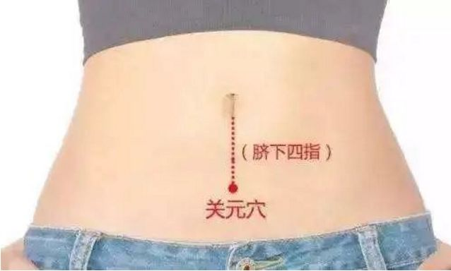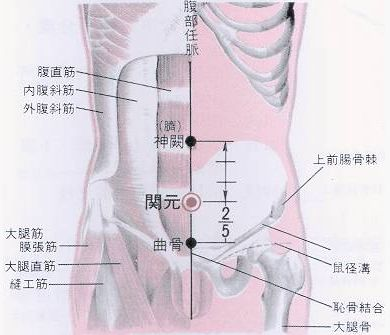
穴位名称: 关门穴
穴位名称拼音: Guanmen
穴位国际通用代码: ST22
穴位别名: 关明穴
穴位释义: 关，关卡也。门，出入的门户也。该穴名意指胃经中的脾土物质在此屯驻。本穴物质为梁门穴传来的地部经水，其水为满溢之水，量小，但因其由上而下，故有脾土微粒随水而下。经水传至本穴后，由于受腹内部的外散之热及胃经区域自身之热，经水气化为枯竭之状，脾土物质随之屯驻，如被关卡一般，故名。本穴主治腹胀、腹痛、肠鸣泄泻、水肿等。
穴位定位和取穴方法: 在上腹部，当脐中上3寸，距前正中线2寸。
穴位解剖位置和结构: 当腹直肌及其鞘处；有第八肋间动、静脉分支及腹壁上动、静脉分支；布有第八肋间神经分支（内部为横结肠）。
穴位隶属五行:
穴位隶属经脉: 足阳明胃经
穴位隶属经脉英文: Stomach Meridian of Foot-Yangming
穴位隶属经脉五行: 土
穴位治法-针刺: 直刺0.8~1.2寸。
穴位治法-灸法: 艾炷灸3~7壮；或艾条灸5~15分钟。
穴位治法-按摩及其它: 用一手食、中指指端分开对按两侧关门穴10次。
穴位功能: 健脾止泻，调理脾胃。
穴位主治与临床运用: 泌尿、消化系统疾病：胃痛，腹痛，腹胀，肠鸣，便秘，遗尿。
穴位主要配伍: 配足三里、水分治肠鸣腹泻。
穴位图片: 

穴位名称: 关元俞
穴位名称拼音: Guanyuan
穴位国际通用代码: BL26
穴位别名:
穴位释义: 俞，输也。关元俞名意指小腹内部的湿热水气由此外输膀胱经。本穴物质为来自于小腹内部的湿热水气，所对应的部位为脐下的关元穴，故名。本穴主治遗尿、腰痛、腹泻等。
穴位定位和取穴方法: 在腰部，当第5腰椎棘突下，旁开1.5寸。采用俯卧，关元俞穴位于身体骶部，当第五腰椎棘突下，左右旁开2指宽处即是。
穴位解剖位置和结构: 有骶棘肌，有腰最下动、静脉后支的内侧支；布有第五腰神经后支。
穴位隶属五行:
穴位隶属经脉: 足太阳膀胱经
穴位隶属经脉英文: Bladder Meridian of Foot-Taiyang
穴位隶属经脉五行: 水
穴位治法-针刺: 直刺1~1.5寸。
穴位治法-灸法: 艾炷灸5~10壮；或艾条灸10~20分钟。
穴位治法-按摩及其它: 指压该穴道，可以延长性欲时间，提高男性勃起功能。采用此穴做相应治疗时，应同时与三焦俞穴配合，发挥更好的疗效。
穴位功能: 培补元气，调理下焦。
穴位主治与临床运用: 泌尿生殖、消化系统疾病：腹胀，肠炎，小便频数或不利，遗尿，膀胱炎，慢性盆腔炎，腰痛等。
穴位主要配伍: 1. 配气海治腹胀。2. 配膀胱俞主治腰痛。
穴位图片: 
穴位名称: 光明穴
穴位名称拼音: Guangming
穴位国际通用代码: GB37
穴位别名:
穴位释义: 光明，光彻明亮也。本穴物质为阳辅穴传来的湿热风气，上至本穴后，此气吸热而变为纯阳之气，天部的水湿尽散并变得光彻明亮，故名。本穴气血所处为天之天部，足少阳胆经吸热蒸升的阳气皆汇合于此，本穴有联络胆经各部气血的作用，故为胆经络穴。本穴主治下肢痿痹、视神经萎缩、视物不明等，对于保护眼睛特别好。
穴位定位和取穴方法: 位于小腿外侧，当外踝尖上5寸，腓骨前缘，正坐或侧坐取穴。
穴位解剖位置和结构: 穴下为皮肤、皮下组织、腓骨短肌，趾长伸肌，踇长伸肌。浅层有腓肠外侧皮神经和腓浅神经、腓深神经核胫前动脉分布，再深层有腓深神经干和胫前动、静脉经过。
穴位隶属五行:
穴位隶属经脉: 足少阳胆经
穴位隶属经脉英文: Gallbladder Meridian of Foot-Shaoyang
穴位隶属经脉五行: 木
穴位治法-针刺: 直刺0.5~0.8寸。
穴位治法-灸法: 艾炷灸3~5壮；或艾条灸5~10分钟。
穴位治法-按摩及其它: 坐姿，先用手掌根在小腿胫骨内侧从膝盖至内踝向下揉小腿10次，然后从外踝至膝盖向上揉小腿外侧面10次。此时重点点揉光明穴1分钟，按揉时以有热感为佳，点揉光明穴时以有酸胀感为佳。每天1次，每次10~15分钟左右。经常如此操作，方能有效防治老花眼。
穴位功能: 活络消肿，调肝明目，祛风利湿。
穴位主治与临床运用: 眼目及小腿等疾病：眼目痛痒，夜盲，青光眼，白内障，视神经萎缩，偏头痛，腓肠肌痉挛，腿膝酸痛，下肢痿痹，手足发凉，妇人少妇胞中疼痛等。
穴位主要配伍: 1. 配肝俞穴、肾俞穴、风池穴、目窗穴、睛明穴、行间穴治青光眼和早期白内障。2. 配睛明穴、承泣穴、瞳子髎穴，有疏风清热泻火的作用，主治目痛。3. 配阳陵泉穴、昆仑穴，有舒筋活络止痛的作用，主治下肢痿痹。
穴位图片: 
穴位名称: 膈俞穴
穴位名称拼音: Geshu
穴位国际通用代码: BL17
穴位别名:
穴位释义: 膈，心之下、脾之上也，膈膜也。俞，输也。膈俞名意指膈膜中的气血物质由本穴外输膀胱经。本穴物质来自心之下、脾之上的膈膜之中，故名。刺灸本穴不仅具有活血化瘀的作用，还兼具养血生血，健脾补心之力，临床常与脾俞相伍以治疗气血不足，心脾两虚的病证。
穴位定位和取穴方法: 位于人体的背部，当第七胸椎棘突下，左右旁开二指宽处。俯卧位，在第七胸椎棘突下，至阳（督脉）旁开1.5寸处取穴。
穴位解剖位置和结构: 穴下为皮肤、皮下组织、斜方肌、背阔肌、骶棘肌。皮肤由第六、七、八胸神经后支内侧支重叠分布。背阔肌由臂丛后束发出的胸背神经支配，该神经沿肩胛下肌腋窝缘下降，与肩胛下动脉的延续部，胸背动伴行至该肌。
穴位隶属五行:
穴位隶属经脉: 足太阳膀胱经
穴位隶属经脉英文: Bladder Meridian of Foot-Taiyang
穴位隶属经脉五行: 水
穴位治法-针刺: 向内斜刺0.5~0.8寸，局部酸胀，针感可扩散至肋间。不可深刺，以防造成气胸。膈俞、脾俞针用泻法可降低血糖、加速血流、改善微循环。
穴位治法-灸法: 1. 艾炷灸5~7壮，治疗上呼吸道感染。2. 艾条温灸10~15分钟，治疗咳喘，胸闷。3. 溃脓灸，治疗“肺痨”。4. 隔姜灸中脘，治疗胃寒刺痛。5. 隔蒜灸百会，可防感冒。
穴位治法-按摩及其它: 患者卧位，用两手手指指腹端按、揉压膈俞穴。每次2分钟左右。
穴位功能: 调理脾胃，理气宽胸，降逆平喘，活血通脉。
穴位主治与临床运用: 1. 消化系统疾病：神经性呕吐、胃炎、胃溃疡、肝炎、肠炎、肠出血、胃痛等。2. 外科系统疾病：厌食、食道癌、胃癌、食道狭窄、淋巴结结核、胸膜炎等。3. 呼吸系统疾病：哮喘、咳嗽、支气管炎等。4. 皮肤方面疾病：面色青黄、眼袋、皮肤粗糙等。5. 其它：贫血、慢性出血性疾病、膈肌痉挛、荨麻疹、小儿营养不良等。
穴位主要配伍: 1. 配内关穴、足三里穴治呕吐、呃逆。2. 配足三里穴、血海穴、膏肓穴治贫血。3. 配伍阙可治胃气上逆的呃逆；4. 配膻中、列缺、肺俞等可治肺气壅闭的呼吸衰竭；
穴位图片: 
穴位名称: 膏肓穴
穴位名称拼音: Gaohuang
穴位国际通用代码: BL43
穴位别名:
穴位释义: 膏，膏脂、油脂也；肓，心脏与膈膜之间也。所谓病入膏肓。古代医家将心尖的脂肪称为膏，心脏与隔膜之间称为肓。膏肓穴隐蔽在胛骨之下（心、肺之间），上有肺之魄户，下有心之神堂，即医缓所谓肓之上、膏之下，故名。膏肓名意指膜中的脂类物质由此外输膀胱经。穴外输膀胱经的气血物质为心脏与膈膜之间的膏脂（此膏肓由五谷精微所化），故名膏肓。若针刺膏肓穴不当，极易导致气胸，加上手也难以按到膏肓穴，故而想要活动膏肓穴，最好的方法就是艾灸。“药王”孙思邈在《千金方》中，将膏肓穴推崇到极致，说“膏肓能主治虚羸瘦损、五劳七伤及梦失精、上气咳逆、痰火发狂、健忘、胎前产后等，百病无所不疗”！就是说，膏肓可治百病，尤其在虚劳证的治疗上，应用更是十分广泛。他之所以能以多病之身安享百岁之寿，艾灸功不可没，而孙思邈最常使用的穴位就是膏肓和足三里。重病、久病，必灸膏肓穴。因膏肓穴是厥阴病的最底层（厥阴病为六经病之一，也就是病到最深的那一层），只要灸透膏肓穴，就可以把最底层的风寒湿毒瘀等垃圾悉数排出。中医认为，人体全身的病，统统与膏肓相关。
穴位定位和取穴方法: 位于背部，当第四胸椎棘突下，左右旁开四指宽处（3寸）即是。取穴时，双手交叉紧抱双肩，肘关节贴近胸前，使两肩胛骨充分张开。施灸者从大椎穴开始往下摸，在第四胸椎棘突下，肩胛骨内侧缘骨缝处按压，觉得胸肋间困痛，传至手臂，即是膏肓穴。或者，采用俯卧姿势，膏肓穴位于背部，当第四胸椎棘突下，左右四指宽处（或左右旁开三寸），肩胛骨内侧，一压即疼。
穴位解剖位置和结构: 在肩胛骨脊柱缘，有斜方肌、菱形肌，深层为髂肋肌；有第四肋间动、静脉背侧支及颈横动脉降支；布有第三、四胸神经后支。
穴位隶属五行:
穴位隶属经脉: 足太阳膀胱经
穴位隶属经脉英文: Bladder Meridian of Foot-Taiyang
穴位隶属经脉五行: 水
穴位治法-针刺: 斜刺0.5~0.8寸，局部酸胀感。本穴深部正好有肩胛背神经和肩胛背动脉通过，向外斜刺时，若针尖刺中肩胛背神经则针感强烈，并可向肩胛骨及颈根部放射；若针尖刺中肩胛背动脉，则可形成深部血肿并引起疼痛（血肿压迫神经）。向外斜刺时，斜刺角度应以小于45°为宜，也不宜针刺过深，以免针尖进入肋间隙，损伤胸膜和肺，引起气胸。
穴位治法-灸法: 膏肓灸法是中医针灸学中一种传统的特种灸法。此法之独特处在于首先强调取膏肓穴的体位姿势，务必使两肩胛骨充分分离，“筋骨空处，按之患者觉牵引胸肋中、手指痛，即真穴也。”1. 采用温灸法。用艾灸器具，将其置于两侧膏肓穴上，每天一次，每次30~50分钟，连灸30天以上。膏肓穴灸后，必须灸气海、足三里，“以引火气实下”，防气火壅盛于上。此外，搭配艾灸气海等穴，还能激发经气、温通经络、补火祛寒、散风逐湿、扶正祛邪、标本两顾，特别适合于风湿寒性关节痛。重病、久病之人，要彻底治愈，一定要延长时间，把膏肓穴灸透。少儿不宜灸膏肓穴。2. 先膏肓穴以大艾炷灸，每次壮；再使患者平卧，取气海、足三里三穴，大艾炷各灸七壮。若需加灸至阴穴，则与灸膏肓穴同时进行，小艾炷两侧各七壮。每天一次，十五天为一疗程，疗程间休息三天。
穴位治法-按摩及其它: 1. 肘部弯曲，分别向前向后转摇肩关节各50次，一日三次，这样可带动肩胛骨上下旋转，以运动背部的膏肓穴。2. 两脚平行站立，两膝微曲，腰直，胸平，两手握拳，两臂缓缓抬起到胸前与肩平，然后用力向后拉至极限，使肩胛骨尽量向脊柱靠拢，挤压两侧膏肓穴，略停1至2秒钟，再恢复原姿态，后拉时深吸气，回收时呼气，动作在水平面缓慢进行，动作到位，使背后有酸胀、出汗的感觉。3. 把椅子反过来坐，人趴在椅背上，充分展开两个肩胛，而两个肩胛骨向后挤压，就是在挤压膏肓穴。这些方法既可益寿延年，还对肩周炎、慢性支气管炎、肺气肿、颈椎病有一定的防治作用。
穴位功能: 补益虚损，养肺调心，温通经络，补火祛寒，散风逐湿。
穴位主治与临床运用: 咳嗽，气喘，支气管炎，支气管哮喘，乳腺炎，盗汗，健忘，遗精，肩胛背痛，各种慢性虚损性疾病等。
穴位主要配伍: 1. 配尺泽穴、肺俞穴治喘咳。2. 配足三里穴、膈俞穴，有健脾生血补虚的作用，主治骨蒸劳热，盗汗。3. 配天突穴、大椎穴，有理肺降气平喘的作用，主治咳嗽，支气管哮喘。
穴位图片: 
穴位名称: 膈关穴
穴位名称拼音: Geguan
穴位国际通用代码: BL46
穴位别名:
穴位释义: 膈，心之下、脾之上也。关，关卡也。膈关名意指膈膜中的阳气由此上输膀胱经。本穴主治呕吐、脊背强痛等。
穴位定位和取穴方法: 在背部，当第7胸椎棘突下，旁开3寸。
穴位解剖位置和结构: 有背阔肌，髂肋肌；有第七肋间动、静脉背侧支；布有第六胸神经后支。
穴位隶属五行:
穴位隶属经脉: 足太阳膀胱经
穴位隶属经脉英文: Bladder Meridian of Foot-Taiyang
穴位隶属经脉五行: 水
穴位治法-针刺: 斜刺0.5~0.8寸。
穴位治法-灸法: 艾炷灸3~7壮；或艾条灸5~15分钟。
穴位治法-按摩及其它: 用大拇指按揉膈关约200次，或按揉3~5分钟，每天坚持，能治疗嗳气、呃逆。
穴位功能: 宽胸理气，和胃降逆。
穴位主治与临床运用: 胸闷，嗳气，呕吐，脊背强痛。
穴位主要配伍: 配内关治嗳气。
穴位图片: 

穴位名称: 合谷穴
穴位名称拼音: Hegu
穴位国际通用代码: LI4
穴位别名: 虎口，容谷，合骨，含口
穴位释义: 合，汇也，聚也。谷，两山之间的空隙也。合谷名意指大肠经气血会聚于此并形成强盛的水湿风气场。本穴物质为三间穴天部层次横向传来的水湿云气，行至本穴后，由于本穴位处手背第一、二掌骨之间，肌肉间间隙较大，因而三间穴传来的气血在本穴处汇聚，汇聚之气形成强大的水湿云气场，故名。合谷穴是我们身体上非常重要的穴位，之所以称它为“万能穴”是因为几乎所有的疾病都可以通过它得到直接或间接的治疗，比如发热、头痛、呕吐、腹泻等。此穴长于清泻阳明之郁热，疏解面齿之风邪，通调头面之经络，是治疗热病发热及头面五官各种疾患之要穴。
穴位定位和取穴方法: 在第一、二掌骨之间，当第二掌骨桡侧之中点处；或拇、食两指张开，以另一手的拇指关节横纹放在虎口上，当虎口与第一、二掌骨结合部连线的中点；拇、食指合拢，在肌肉的最高处即是。
穴位解剖位置和结构: 此腧穴在第1、2掌骨之间，第1骨间背侧肌中，深层有拇收肌横头；有手背静脉网，腧穴近侧正当桡动脉从手背穿向手掌之处；布有桡神经浅支的掌背侧神经，深部有正中神经的指掌侧固有神经。
穴位隶属五行:
穴位隶属经脉: 手阳明大肠经
穴位隶属经脉英文: Large Intestine Meridian
穴位隶属经脉五行: 金
穴位治法-针刺: 1、针尖向上斜刺，强捻转使针感到头部，2、提针至皮下，针尖相下斜刺，使针感到指头，如此反复3次，留针30分钟，牙痛痊愈。2. 合谷两穴并针刺，留针3分钟，针到病除。3. 牙痛、口歪、臂肩不能举、大拇指、食指不能屈伸，针刺合谷穴特效。4. 合谷，颊车，中脘，足三里，留针30分钟，治风火牙痛不能饮食。5. 刺合谷，地仓，颊车，治牙关不开、口眼歪斜。6. 刺合谷，风池，治头痛。7. 刺合谷，迎香，治鼻窦炎。8. 用点刺法，快针前浅刺，或强刺法，治局部性肌肉痉挛。9. 先针合谷，后使患者平卧，用五柱灸法。膻中为中心，左、右为神封，上为玉堂，下为中庭，治哮喘。10. 针四关穴，即左、右合谷，左、右太冲，降低血压，镇静神经，行气血，通经络，清滞瘀。
穴位治法-灸法: 艾炷灸或温针灸5~9壮，或艾条灸10~20分钟。1. 每天做合谷穴的艾灸，早晚各一次，每次5分钟，就得不了脑中风，不会得脑梗。2. 右边牙痛，就艾灸左手的合谷穴；如果左侧牙痛，就艾灸右手的合谷穴。3. 胃痛、呕吐、便秘、呃逆、腹泻等。甚至痔疮发作、便血时，艾灸合谷穴，可缓解肠风下血的症状。4. 艾灸合谷穴，它能通肠化气，清理肠内垃圾，排除肠内毒素，促进食物残渣尽早排出体外，增强肠动力。5. 艾灸合谷穴，能贯通气血，促使阳气升发，扶正祛邪，增强人体免疫力。6. 要彻底使肺健康起来，还要去根，就要坚持艾灸合谷穴，每天艾灸2次，每次按5分钟，坚持艾灸15天。
穴位治法-按摩及其它: 1. 大拇指掐按这个穴位来止痛。几乎一切痛症都可以找合谷穴来解决。2. 右边牙痛，就按揉左手的合谷穴；如果左侧牙痛，就按揉右手的合谷穴。3. 患牙龈炎引起牙龈肿痛，并且反复发作，经常按压合谷穴也能收到意想不到的效果。4. 按摩合谷穴，治神经性头痛、失眠性头痛、颈后疼痛、中老年人患神经性头痛。5. 按摩大肠经的原穴合谷穴，还可以行气活血，有效治疗女性痛经。6. 治疗面瘫，合谷更是必取之穴。平常鼻子过敏者也可以常常按压合谷穴，以缓解症状。7. 在治疗雀斑和脸部皮肤上，可每天按摩两手合谷穴各30--50次，以产生的酸胀感传达到上肢为度，日久就可以达到美容养颜的明显功效。8. 如果经常食欲不振，不消化，也可以艾灸或者按揉合谷穴，它能通肠化气，清理肠内垃圾，排除肠内毒素，促进食物残渣尽早排出体外，增强肠动力。9. 如果经常恶心、呕吐，就刺激合谷穴，它能宽中理气，引浊气下行，全方位调理肠胃。10. 开始有感冒症状的时候，可以按摩合谷穴，左右各按压100次。按压力度要稍重，使其有酸麻感。按摩后喝一杯温开水，使身体微微出汗，感冒症状即可得到缓解。11. 因中暑、中风、虚脱等导致晕厥时，可用拇指掐捏患者的合谷穴，持续两三分钟，患者便可苏醒过来。如果同时用指尖掐捏患者的人中穴，醒脑回苏的效果则更好。11. 按摩合谷穴，内关穴，足三里穴。3个穴位按压每两秒一次，早晚各一次，每次做5分钟。
穴位功能: 镇静止痛，通经活经，清热解表。
穴位主治与临床运用: 发热，头痛，目赤肿痛，鼻衄，血渊，咽喉肿痛，齿痛，耳聋，面肿，口眼斜，中风口噤，热病无汗，多汗，消渴，黄疸，痛经，经闭，滞产，等。
穴位主要配伍: 1. 配颊车、迎香，有通经活络止痛作用，主治牙痛，面痛，面瘫。有疏风解表，宣肺利窍作用，主治感冒，头痛，发热，鼻塞。2. 配列缺，为原络配穴法。3. 配太冲，称四关穴，有镇静安神，平肝熄风作用，主治癫狂，头痛，眩晕，高血压。4. 配风池、大椎，有清热凉血，截疟作用，主治皮肤瘙痒，荨麻疹，疔疮，疟疾。5. 配三阴交，有调经活血催产作用，主治月经不调，痛经，经闭，滞产。6. 配陷谷，主治腹痛。7. 配照海、大敦，便秘。8. 配足三里、大肠俞、小肠俞，主治痢疾。9. 配外关、人中、太溪，主治齿痛。10. 配睛明、四白、临泣，主治目赤肿痛。11. 配光明、太阳、睛明，主治目翳。12. 配鱼际、间使、神门、然谷、肺俞、肾俞，主治失音。13. 配商阳、阳谷、侠溪、厉兑、劳宫、腕骨，主治热病汗不出。14. 配肩髃、曲池、手三里、环跳，主治瘾疹。15. 配人中、内关、足三里，主治中暑。
穴位图片: 

穴位名称: 合阳穴
穴位名称拼音: Heyang
穴位国际通用代码: BL55
穴位别名:
穴位释义: 合，会和、会集也。阳，阳热之气也。该穴名意指膀胱经吸热上行的阳热之气在此聚集。本穴物质为膀胱经膝下部各穴上行的阳气聚集而成，故名。本穴主治腰脊强痛、下肢痿痹、疝气、崩漏等。
穴位定位和取穴方法: 在小腿后面，当委中与承山的连线上，委中下2寸。俯卧或者正坐垂足位，在委中穴直下2寸，当委中穴与承山穴的连线上取穴。
穴位解剖位置和结构: 穴下为皮肤、皮下组织、小腿三头肌、跖肌、腘肌。皮肤由股后皮神经分布。皮下筋膜内，小隐静脉经外踝后下方升至小腿后面，穿腘筋膜注入腘静脉。小腿三头肌由腓肠肌的内、外侧头和比目鱼肌相结合形成。前肌内、外侧头起于股骨的内、外侧髁，两头在小腿中上部互相汇合，向下移行于腱膜，汇合处表面凹陷，即为该穴取穴的标志。比目鱼肌位于腓肠肌的深面，起于胫、腓骨的后面，肌束向下移行于腱。庐肌腱与腓肠肌腱膜合成跟腱，止于跟骨后面的跟结节。小腿三头肌使足跖屈（上提足跟），对维持人体直立姿势起重要作用。
穴位隶属五行:
穴位隶属经脉: 足太阳膀胱经
穴位隶属经脉英文: Bladder Meridian of Foot-Taiyang
穴位隶属经脉五行: 水
穴位治法-针刺: 直刺0.8~1寸，局部酸胀，针感可向足底放散；
穴位治法-灸法: 艾炷灸或温针灸3~5壮；或艾条灸5~10分钟。
穴位治法-按摩及其它: 用大拇指按揉或弹拨合阳约200次，或按揉3~5分钟，每天坚持，能治疗腰腹痛等疾病。
穴位功能: 舒筋通络，调经止带，强健腰膝。
穴位主治与临床运用: 1. 妇产科系统疾病：功能性子宫出血，月经不调，子宫内膜炎。2. 泌尿生殖系统疾病：睾丸炎，前列腺炎。3. 其它：脑血管病后遗症，肠出血，疝痛，腓肠肌痉挛。
穴位主要配伍: 1. 配腰阳关治腰痛。2. 配环跳、阳陵泉主治下肢痿痹。
穴位图片: 

穴位名称: 后顶穴
穴位名称拼音: Houding
穴位国际通用代码: DU19
穴位别名: 交冲穴
穴位释义: 后，指本穴所处之位为头之后部。顶，挤顶也。后顶名意指督脉的上行阳气中滞重水湿在此冷缩下行。本穴物质为强间穴传来的阳热风气，在运行至本穴的过程中是散热吸湿，至本穴后，滞重的水湿冷缩并循督脉下行，本穴如同有挤顶督脉气血上行的作用，故名。本穴主治癫狂痫证、烦心、失眠等。
穴位定位和取穴方法: 头顶正中线后发际上5.5寸，当百会后1.5寸，下距脑户3寸。
穴位解剖位置和结构: 在浅筋膜、帽状腱膜中；有左右枕动、静脉网；布有枕大神经分支。
穴位隶属五行:
穴位隶属经脉: 督脉
穴位隶属经脉英文: Governor Vessel
穴位隶属经脉五行:
穴位治法-针刺: 平刺0.5~0.8寸。
穴位治法-灸法: 禁灸。
穴位治法-按摩及其它: 从前向后刮拭。 用大拇指按揉后顶约200次，或按揉3~5分钟，每天坚持，能治疗偏头痛。
穴位功能: 祛风明目，醒神安神，熄风止痉。
穴位主治与临床运用: 脱发，健忘，失眠，癔病，精神分裂症。
穴位主要配伍: 1. 配百会、合谷治头顶剧痛；2. 配外丘治颈项痛、恶风寒；3. 配玉枕、颔厌治风眩；4. 配率谷、太阳治偏头痛；5. 配风池治脱发。
穴位图片:
穴位名称: 后溪穴
穴位名称拼音: Houxi
穴位国际通用代码: SI3
穴位别名:
穴位释义: 后，与前相对，指穴内气血运行的人体部位为后背督脉之部。溪，穴内气血流行的道路。后溪名意指穴内气血外行于腰背的督脉之部。本穴物质为前谷穴传来的天部湿热之气，至本穴后其外散的清阳之气上行督脉，运行的部位为督脉所属之部，故名。本穴通督脉、提阳气、调颈椎、护脊椎等。
穴位定位和取穴方法: 在手掌尺侧，微握拳，当小指本节（第5指掌关节）后的远侧掌横纹头赤白肉际。
穴位解剖位置和结构: 在小指尺侧，第五掌骨小头后方，当小指展肌起点外缘；有指背动、静脉，手背静脉网；布有尺神经手背支。
穴位隶属五行: 木
穴位隶属经脉: 手太阳小肠经
穴位隶属经脉英文: Small Instestine Meridian of Hand-Taiyang
穴位隶属经脉五行: 火
穴位治法-针刺: 直刺0.5~1寸。
穴位治法-灸法: 艾炷灸3~5壮；或艾条灸5~10分钟。
穴位治法-按摩及其它: 长期在电脑前工作或学习的人，每过一小时把双手后溪穴放在桌沿上来回滚动三到五分钟，可以缓解伏案及电脑对人体带来的不良影响。
穴位功能: 散寒祛湿，清心安神， 通经活络。
穴位主治与临床运用: 1. 头项强痛，腰背痛，腰扭伤，手指及肘臂挛痛等痛症。2. 耳聋、目赤。3. 癫狂痫，精神分裂症，癔病。4. 疟疾。
穴位主要配伍: 1. 配列缺、悬钟治项强痛。2. 配人中治急性腰扭伤。
穴位图片:
穴位名称: 横骨穴
穴位名称拼音: Henggu
穴位国际通用代码: KI11
穴位别名: 下极
穴位释义: 横，指穴内物质为横向移动的风气也。骨，指穴内物质中富含骨所主的水液。该穴名意指肾经的水湿云气在此横向外传。本穴物质为阴谷穴横行传至的冷湿水气，至本穴后，因吸热胀散并横向传于穴外，外传的风气中富含水湿，故名。本穴主治阴部痛、少腹痛、小便不通、阳痿等。
穴位定位和取穴方法: 在下腹部，当脐中下5寸，前正中线旁开0.5寸。另说在脐下4.5寸，旁开0.5寸（《针灸甲乙经》）；脐下5寸，旁开1寸（《针灸大成》）；脐下5寸，旁开1.5寸（《针灸资生经》）。
穴位解剖位置和结构: 有腹内、外斜肌腱膜，腹横肌腱膜及腹直肌；有腹壁下动、静脉及阴部外动脉；布有髂腹下神经分支。
穴位隶属五行:
穴位隶属经脉: 足少阴肾经，冲脉
穴位隶属经脉英文: Kidney Channel of Foot-Shaoyin
穴位隶属经脉五行: 水
穴位治法-针刺: 直刺0.8~1.2寸。
穴位治法-灸法: 艾炷灸3~5壮；或艾条灸5~10分钟。
穴位治法-按摩及其它: 用大拇指按揉横骨穴100~200次，每天坚持，能够治疗疝气、阳痿。
穴位功能: 清热除燥，益肾助阳，调理下焦。
穴位主治与临床运用: 阴部痛，少腹痛，遗精，阳痿，遗尿，小便不通，疝气。
穴位主要配伍: 1. 配中极、三阴交治癃闭。2. 配关元、肾俞、志室、大赫治阳萎、遗精、崩漏、月经不调。
穴位图片: 
穴位名称: 会阴穴
穴位名称拼音: Huiyin
穴位国际通用代码: RN1
穴位别名: 会阴穴，阴跷穴，生死窍，海底轮，屏翳，金门，下极 ，海底 ，下阴别
穴位释义: 会，交会也。阴，阴液也。该穴名意指由人体上部降行的地部阴液在此交会。本穴物质来自人体上部的降行水液，至本穴后为交会状，故名。本穴益阴壮阳，为人体长寿保健要穴。
穴位定位和取穴方法: 位于人体肛门和生殖器的中间凹陷处。男性在阴囊根部与肛门连线的中点。女性在大阴唇后联合与肛门连线的中点。
穴位解剖位置和结构: 皮肤→皮下组织→会阴中心腱。浅层布有会阴神经的分支。浅层布有股后皮神经会阴支，阴部神经的会阴神经分支。深层有阴部神经的分支和阴部内动、静脉的分支或属支。
穴位隶属五行:
穴位隶属经脉: 任脉，冲脉
穴位隶属经脉英文: Conception Vessel
穴位隶属经脉五行:
穴位治法-针刺: 直刺0.5~1寸。针刺会阴穴治疗遗精：患者取侧卧位，双手抱膝，暴露穴位。严格消毒，先将5%碘酊涂于穴位，然后用75%的酒精脱碘。以左手按压穴位，右手持针，直刺1~1.5寸。轻捻转，不提插。得气后，局部有较强的酸胀感觉，并伴有轻微的痛感。留针20分钟。每日一次，5次为一疗程。
穴位治法-灸法: 艾炷灸3壮；或艾条灸5~10分钟。艾灸会阴为主治疗慢性前列腺炎：令患者仰卧屈膝，暴露阴部，臀部略垫起，用艾架固定在会阴穴上施灸。每日下午灸治，每次20~40分钟。
穴位治法-按摩及其它: 1. 按摩会阴穴，能疏通体内脉结，促进阴阳气的交接与循环，对调节生理和生殖功能有独特的作用。2. 按摩会阴穴，还可治疗痔疮、便血、便秘、妇科病、尿频、溺水窒息、前列腺炎等症。3. 点穴法：睡前仰卧半坐，食指搭T台步让阴道回复弹性于中指背上，用中指指端点按会阴108下，以感觉酸痛为度。4. 意守法：姿势不限，全身放松，将意念集中于会阴穴，守住会阴约15分钟，久之，会阴处即有真气冲动之感，并感觉身体轻浮松空舒适无比。5. 提肾缩穴法：取站式，全身放松，吸气时小腹内收，肛门上提（如忍大便状），会阴随之上提内吸，呼气时腹部隆起，将会阴肛门放松，一呼一吸共做36次。6. 取仰卧式，将双腿屈膝盘起；将双手相对合搓热之后，用左手按摩会阴穴；按摩速度和力量以适应为度，一边按摩—边默数1~100个数。当会阴穴有了热胀感时，即停止按摩；随着气力、体力增强之后，可以增加按摩次数。
穴位功能: 醒神镇惊，通调二阴。
穴位主治与临床运用: 1. 小便不利，遗尿，遗精，阳痿，月经不调，阴痛，阴痒，痔疾，脱肛。2. 溺水，窒息，产后昏迷，癫狂。
穴位主要配伍: 1. 配三阴交，有强阴醒神的作用，主治产后暴厥。2. 配鱼际，有养阴泻热的作用，主治阴汗如水流。3. 配中极、肩井，有行气通络，强阴壮阳的作用，主治难产，胞衣不下，宫缩无力，产门不开等。4. 配肾俞，治遗精。5. 配蠡沟，治阴痒。6. 配人中，阴陵泉，治溺水窒息。
穴位图片:
穴位名称: 会宗穴
穴位名称拼音: Huizong
穴位国际通用代码: SJ7
穴位别名:
穴位释义: 会，会合也。宗，祖宗也，为老、为尊、为长也，此指穴内物质为天之天部的阳气。该穴名意指三焦经的阳气在天之天部会合。本穴物质为三焦经的天部阳气会合而成，所处为天之天部，如宗气之所汇，故名。本穴主治头面五官疾病和神经系统疾病等。
穴位定位和取穴方法: 在前臂背侧，当腕背横纹上3寸，支沟尺侧，尺骨的桡侧缘。伸臂俯掌，于腕上3寸支沟穴尺侧，当尺骨的桡侧缘取穴。
穴位解剖位置和结构: 穴下为皮肤、皮下组织、尺侧伸腕肌、示指伸肌、前臂肌间膜。皮肤由桡神经发出的前臂后皮神经分布。皮下组织内有贵要静脉、头静脉等血管。其深层有前臂骨间后动、静脉的分支，以及前臂骨间后神经的分支。
穴位隶属五行:
穴位隶属经脉: 手少阳三焦经
穴位隶属经脉英文: Sanjiao Meridian of Hand-shaoyang
穴位隶属经脉五行: 火
穴位治法-针刺: 直刺0.5~1.0寸，局部酸胀。多用泻法。
穴位治法-灸法: 艾炷灸或温针灸3~5壮；或艾条灸5~10分钟。
穴位治法-按摩及其它: 用食指指腹揉按会宗，有温通经脉的功效，可预防听力和视力减退。
穴位功能: 清利三焦，安神定志，疏通经络。
穴位主治与临床运用: 1. 头面五官疾病：耳聋耳鸣。2. 神经系统疾病：癫痫。3. 其他疾病：气滞喘满，上肢肌肤痛。
穴位主要配伍: 1. 配听会、耳门治疗耳聋。2. 配大包治上肢肌肉疼痛，软组织挫伤。
穴位图片: 

穴位名称: 鹤顶穴
穴位名称拼音: Heding
穴位国际通用代码: EX-LE2
穴位别名: 膝顶穴
穴位释义: 主治鹤膝风，又居膝髌上方似鹤膝之顶，故名鹤顶穴。鹤顶穴通利关节、祛风除湿、活络止痛，是重要的祛风除湿穴。
穴位定位和取穴方法: 在膝上部，屈膝，髌底的中点上方凹陷处。先确定髌底，即膝盖中髌骨的上缘，在其中点上方凹陷处取穴。
穴位解剖位置和结构: 浅层有隐神经分支和股神经前皮支分布；深层有股神经关节支和膝关节动脉网分布。
穴位隶属五行:
穴位隶属经脉: 经外奇穴
穴位隶属经脉英文: Non-meridian extra acupoint
穴位隶属经脉五行:
穴位治法-针刺: 向膝中斜刺0.5~1寸，或透刺对侧膝眼。
穴位治法-灸法: 艾炷灸或温针灸3~5壮；或艾条灸5~10分钟。
穴位治法-按摩及其它: 1. 用大拇指指腹按揉3~5分钟，长期按摩，可以治膝痛，腿痛、脚气等。 2. 刮痧鹤顶穴的方法：用角刮法刮拭鹤顶穴1~2分钟，稍出痧即可，治膝关节病、鹤膝风。
穴位功能: 通利关节，祛风除湿，活络止痛。
穴位主治与临床运用: 1. 膝痛、腿痛、鹤膝风、膝关节酸痛、腿足无力、下肢痿软、瘫痪。2. 脚气。3. 各种膝关节病，脑血管病后遗症。
穴位主要配伍: 1. 配三阴交穴治鹤膝风。2. 配梁丘穴、足三里穴、阳陵泉穴、阴陵泉穴、三阴交穴治痹症。
穴位图片: 
穴位名称: 华盖穴
穴位名称拼音: Huagai
穴位国际通用代码: RN20
穴位别名:
穴位释义: 华，华丽；盖，伞盖。华盖为帝王所用。肺居心（君）之上，为五脏之华盖。穴当前胸，与肺相关。本穴物质为紫宫穴传来的天部水气，至本穴后，此气进一步散热吸湿而变为水湿浓度更大的水湿之气，此气如同人体的卫外护盖一般，故名。此穴位具有缓解咳嗽气喘、咽喉肿痛的作用。
穴位定位和取穴方法: 在胸部，当前正中线上，平第1肋间。另说在璇玑穴下2寸（《十四经发挥》）；或1.6寸（《针灸大成》）。
穴位解剖位置和结构: 在胸骨角上；有胸廓（乳房）内动、静脉的前穿支；布有第一肋间神经前皮支的内侧支。
穴位隶属五行:
穴位隶属经脉: 任脉
穴位隶属经脉英文: Conception Vessel
穴位隶属经脉五行:
穴位治法-针刺: 平刺0.3~0.5寸。
穴位治法-灸法: 艾炷灸3~5壮；或艾条灸5~10分钟。
穴位治法-按摩及其它: 以双手中指同时用力揉按穴位，有刺痛的感觉。每次揉按各1~3分钟。
穴位功能: 宽胸利肺，止咳平喘。
穴位主治与临床运用: 胸肺部病症：咳嗽，气喘，胸痛，胁肋痛，喉痹，咽肿。
穴位主要配伍: 1. 配气户治胁肋疼痛。2. 配天突，有降气平喘作用，主治气喘，痰饮停胸，胸痛。
穴位图片:
穴位名称: 滑肉门穴
穴位名称拼音: Huaroumen
穴位国际通用代码: ST24
穴位别名:
穴位释义: 滑，滑行也。肉，脾之属也，土也。门，出入的门户也。该穴名意指胃经中的脾土微粒在风气的运化下输布人体各部。本穴物质为太乙穴传来的强劲风气，而本穴所处的位置为脾所主的腹部，土性燥热，在风气的作用下脾土微粒吹刮四方，脾土微粒的运行如滑行之状，故名。本穴主治胃病、呕吐、癫狂等。
穴位定位和取穴方法: 在上腹部，当脐中上1寸，距前正中线2寸。
穴位解剖位置和结构: 当腹直肌及其鞘处；有第九肋间动、静脉分支及腹壁下动、静分支；布有第九肋间神经分支（内部为小肠）。
穴位隶属五行:
穴位隶属经脉: 足阳明胃经
穴位隶属经脉英文: Stomach Meridian of Foot-Yangming
穴位隶属经脉五行: 土
穴位治法-针刺: 直刺0.8~1.2寸。
穴位治法-灸法: 艾炷灸3~7壮；或艾条灸5~15分钟。
穴位治法-按摩及其它: 1. 按揉滑肉门，可以滑利通腑、消脂降浊，减少腹部多余油脂。1天按压3分钟，疏通带脉，有帮减肥。2. 治胃痛：坐椅上，用右手掌按膝盖骨正中央，轻抓膝盖。中指沿胫骨伸长，在中指尖水平画线，与食指方向延长线交汇处就是足三里穴，可采取按压的方式按摩1分钟，然后按摩滑肉门穴3分钟。
穴位功能: 镇惊安神，清心开窍，运化脾土。
穴位主治与临床运用: 胃痛，呕吐，呃逆，肠鸣，泄泻，肥胖，癫狂等。
穴位主要配伍: 1. 配足三里治胃痛。2. 配三阴交穴、肾俞穴、命门穴治月经不调。3. 配关元穴、气海穴、天枢穴治脱肛。
穴位图片: 
穴位名称: 颔厌穴
穴位名称拼音: Hanyan
穴位国际通用代码: GB4
穴位别名:
穴位释义: 颔，下巴也，为任脉及足阳明经所过之处，此指足阳明的气血。厌，厌倦也。该穴名意指胆经气血在此以风行之状输向头之各部。本穴物质为上关穴传来的弱小水气，行至本穴后，水气吸热胀散化风而行并由此输向头之各部，足阳明经头维穴输供头部的精微物质因而受到损害，本穴气血为足阳明所厌恶，故名。本穴主治眩晕、目外眦痛、齿痛、耳鸣等。
穴位定位和取穴方法: 在头部鬓发上，当头维与曲鬓弧形连线的上四分之一与下四分之三交点处。侧坐或侧卧位，先取头维与曲鬓穴，在头维至曲鬓的弧形连线上1/4与下3/4的交点处（其弧度与鬓发弧度相应），咀嚼按压时其处有动感。
穴位解剖位置和结构: 在颞肌中；有颞浅动、静脉额支；布有耳颞神经颞支。
穴位隶属五行:
穴位隶属经脉: 足少阳胆经
穴位隶属经脉英文: Gallbladder Meridian of Foot-Shaoyang
穴位隶属经脉五行: 木
穴位治法-针刺: 直刺0.3~0.4寸。
穴位治法-灸法: 间接灸3~5壮；或艾条灸5~10分钟。
穴位治法-按摩及其它: 以指尖画圈的坊式持续按摩本穴位。刚开始按摩时不要太用力，先轻轻地压迫即可，最后再稍微加重力道。
穴位功能: 清热散风，通络止痛。
穴位主治与临床运用: 1. 精神神经系统疾病：偏头痛，三叉神经痛，眩晕，癫痫，面神经麻痹，惊痫。2. 五官科系统疾病：耳鸣，结膜炎，牙痛，目外眦痛，齿痛。
穴位主要配伍: 1. 配悬颅治偏头痛。2.透悬颅穴、悬厘穴，配外关穴、风池穴治眩晕。
穴位图片: 

穴位名称: 环跳穴
穴位名称拼音: Huantiao
穴位国际通用代码: GB30
穴位别名: 膑骨穴，髋骨穴，分中穴，环各穴，髀枢穴，髀厌穴
穴位释义: 环，一种圆形而中间有孔的玉器或一串连环中的一节，此指穴内物质为天部肺金特性的凉湿之气。跳，跳动也，阳之健也，指穴内阳气健盛。环跳名意指胆经水湿在此大量气化为天部阳气。本穴物质为居髎穴传来的地部水湿，至本穴后，水湿渗入穴内丰满的肌肉之中并气化为天部的阳气，穴内阳气健盛使人在如，故名。环跳穴具有利腰腿、通经络之功效，常为坐骨神经痛、下肢麻痹、半身不遂等腰腿疾病的首选穴位。要想取得理想的疗效，取穴准确与否，针感能否传导至足至关重要。
穴位定位和取穴方法: 侧卧，伸下足，屈上足，在 大转子与督脉腰俞之直线上近大转子侧1/3处陷中取之，针一寸五分至二寸五分。
穴位解剖位置和结构: 皮肤、皮下组织、臀肌筋膜、臀大肌、坐骨神经、闭孔内肌（腱）与上下孖肌。皮肤由髂腹下神经的外侧支和臀上皮神经的双重分布。皮下筋膜发达，富有纤维和脂肪组织，臀部的后下部有肥厚而致密脂肪形成脂肪垫。在臀大肌深面，坐骨神经由骨盆出闭孔内肌上方的梨状肌下孔。该点的体表定位在骨髂后上棘与坐骨结节连线的中点；向下则投影在坐骨结节与股骨大转子连线中点稍内侧。坐骨神经的内侧有股后皮神经、臀下神经，血管及阴部神经、血管等。神经下方的闭孔内肌腱及其上下方的上下肌均由骶丛的肌支支配。
穴位隶属五行:
穴位隶属经脉: 足少阳胆经
穴位隶属经脉英文: Gallbladder Meridian of Foot-Shaoyang
穴位隶属经脉五行: 木
穴位治法-针刺: 1. 针尖略向下方斜刺2.0~3.0寸，局部酸胀，有麻电感向下肢放散，以治疗坐骨神经及下肢疾患。2. 针尖斜向外生殖器及少腹方向刺2.0~3.0寸，麻胀感可达外生殖器，治疗外生殖器及少腹疾患。3. 针尖向髋关节直刺2.0~2.5寸，局部酸胀感，治疗髋关节疾患。4. 针一寸五分至二寸五分。针刺股骨大转子最高点与骶管裂孔连线的内3/5与外2/5的交点处，直刺2到3寸深时作均匀提插手法，观察针感是否传导至足。5. 电针跳环穴：取腰3、4穴、环跳、阿是穴作为主穴；配穴：阳陵泉、委中、承山、昆仑等穴。操作：腰3、4穴用1寸针，提插，寻找针感，一旦得气立刻出现电击样感觉沿坐骨神经通络传至足背足趾，反复提插2～3次即刻出针；环跳、阿是穴取3～5寸针，施以指针和毫针，指尖及针尖方向朝着足少阳经与足太阳膀胱经，得气后令患者缓慢移动患腿，已感疼痛减轻时，留针30分钟，并在环跳穴旁各3cm的正方形四个角上加5寸针各1针（“围针”）；对其他的穴位如阳陵泉、委中、昆仑等视病情予以补、泻手法，亦可适当施以捻转手法，然后用G-5806型电针仪连接，以连续波持续中等强度刺激；留针15分钟。对虚寒或血瘀阻滞型的病人，可不用电针改为温针灸，以增强温通之力。以上针刺法每日1次，第一天针患侧，第二日针健侧，交换轮流。6. 环跳穴取3寸毫针，垂直进针2.5寸，其余穴均用2寸毫针，垂直1.5寸，皆强刺激，留针30分钟，去针后拨火罐10分钟，每日2次。功可温经散寒止痛。10天为1个疗程。主治睾丸疼痛。7. 带下病：针刺环跳穴治疗白带，用强刺激手法，若行针时针感能达到足跟，则能提高治疗效果。8. 调整胃液分泌功能：针刺环跳穴可使胃酸及胃蛋白酶高者降低，使低者升高。9. 调整甲状腺功能：有实验报道用甲状腺粉或硫氧嘧啶分别造成小白鼠甲状腺功能亢进或减退后，电针环跳穴，能调整甲状腺功能。
穴位治法-灸法: 艾炷灸或温针灸5~7壮；或艾条灸10~20分钟。
穴位治法-按摩及其它: 按摩：一指禅指点环跳3分钟，指导患者掌握一指禅的基本练功手法，然后左、右拇指呈施功状分置左、右环跳穴处用力压、揉3分钟；活动髋、膝等下肢部位：指导患者做髋、膝及下肢的旋转、弯曲、下蹲等活动。
穴位功能: 健脾益气。
穴位主治与临床运用: 1. 运动系统疾病：坐骨神经痛，下肢麻痹，脑血管病后遗症，腰腿痛，髋关节及周围软组织疾病，脚气。2. 其它：感冒，神经衰弱，风疹，湿疹。
穴位主要配伍: 1. 配殷门、阳陵泉穴、委中穴、昆仑穴，有疏通经络，活血止痛的作用， 治坐骨神经痛。2. 配居髎、委中、悬钟，有祛风除温散寒的作用，主治风寒湿痹证。3. 配风池穴、曲池穴，有祛风活血止痒的作用，主治遍身风疹。
穴位图片: 

穴位名称: 会阳穴
穴位名称拼音: Huiyang
穴位国际通用代码: BL35
穴位别名:
穴位释义: 会，会合、交会也。阳，阳气也。会阳名意指膀胱经经气由此会合督脉阳气。本穴物质为下髎穴传来的地部剩余经水，其量也小，至本穴后吸热气化为天部之气，此气与督脉外传的阳气会合后循膀胱经散热下行，穴内气血的变化特点是天部的阳气相会，故名。本穴主治腹痛、便秘、带下、腰痛等。
穴位定位和取穴方法: 在骶部，尾骨端旁开0.5寸。另说“阴尾骨外，各开一寸半”（《医学入门》）；“长强外开二寸（《针灸集成》）。取坐位或跪伏位，在尾骨下端旁凹陷处，按压有酸胀感。
穴位解剖位置和结构: 有臀大肌；有臀下动、静脉分支；布有尾骨神经；深部有阴部神经干。
穴位隶属五行:
穴位隶属经脉: 足太阳膀胱经
穴位隶属经脉英文: Bladder Meridian of Foot-Taiyang
穴位隶属经脉五行: 水
穴位治法-针刺: 直刺1~1.5寸。
穴位治法-灸法: 艾炷灸3~7壮；或艾条灸5~15分钟。
穴位治法-按摩及其它: 通过按压会阳穴，使便血的症状得到缓解。按摩时双手向后，掌心朝向背部，用中指指腹揉按穴位，有酸痛感，每次左右各揉按1~3分钟。
穴位功能: 清热利湿，补阳益气。
穴位主治与临床运用: 泄泻，便血，痔疾，阳萎，带下。
穴位主要配伍: 配承山治痔疾。
穴位图片: 
穴位名称: 肓俞穴
穴位名称拼音: Huangshu
穴位国际通用代码: KI16
穴位别名: 盲俞穴，子户
穴位释义: 肓，心下隔膜也，此指穴内物质为膏脂之类。俞，输也。该穴名意指胞宫中的膏脂之物由此外输体表。本穴物质为来自胞宫中的膏脂之物，膏脂之物由本穴的地部孔隙外输体表，故名。本穴主治腹痛绕脐、呕吐、腹胀等。
穴位定位和取穴方法: 在腹中部，当脐中旁开0.5寸。仰卧位，在腹白线与肚脐水平线的交点处，旁开0.5寸处（半横指），在腹直肌内侧缘，按压有酸胀感即为本穴。
穴位解剖位置和结构: 在腹内、外斜肌腱膜，腹横肌腱膜及腹直肌中；有腹壁下动、静脉肌支；布有第十肋间神经。
穴位隶属五行:
穴位隶属经脉: 足少阴肾经，冲脉
穴位隶属经脉英文: Kidney Channel of Foot-Shaoyin
穴位隶属经脉五行: 水
穴位治法-针刺: 直刺1~1.5寸。
穴位治法-灸法: 艾炷灸3~5壮；或艾条灸5~10分钟。
穴位治法-按摩及其它: 按摩肓俞穴用拇指或食指腹按揉或按压商曲穴100~200次，按摩时间约2~3分钟即可。具有缓解治疗腹胀腹痛、呕吐、泄泻、便秘、小便淋沥、月经不调、腰脊痛等作用功效。
穴位功能: 理气止痛，润肠通便。
穴位主治与临床运用: 腹痛绕脐，呕吐，腹胀，痢疾，泄泻，便秘，疝气，月经不调，腰脊痛。
穴位主要配伍: 1. 配天枢、足三里、大肠俞治便秘、泄泻、痢疾。2. 配中脘、足三里、内庭、天枢治胃痛、腹痛、疝痛、排尿、尿道涩痛等症。
穴位图片: 
穴位名称: 魂门穴
穴位名称拼音: Hunmen
穴位国际通用代码: BL47
穴位别名:
穴位释义: 魂，肝之神也，阳热风气也。门，出入的门户也。该穴名意指肝脏的阳热风气由此外输膀胱经。本穴主治胸胁痛、呕吐、泄泻等。
穴位定位和取穴方法: 在背部，当第9胸椎棘突下，旁开3寸。
穴位解剖位置和结构: 有背阔肌，髂肋肌；有第九肋间动、静脉背侧支；布有第八、九胸神经后支。
穴位隶属五行:
穴位隶属经脉: 足太阳膀胱经
穴位隶属经脉英文: Bladder Meridian of Foot-Taiyang
穴位隶属经脉五行: 水
穴位治法-针刺: 斜刺0.5~0.8寸。
穴位治法-灸法: 艾炷灸3~7壮；或艾条灸5~15分钟。
穴位治法-按摩及其它: 俯卧位，按摩者以手指指腹或指节向下按压，并作圈状按摩。 坚持长期按揉魂门穴，对于胸胁胀满、背痛、饮食不下、消化不良、呕吐及肠鸣，泄泻等疾患疗效显著。
穴位功能: 疏肝理气，调理气血，调和脾胃，升清降浊。
穴位主治与临床运用: 胸胁痛，呕吐，泄泻，背痛。
穴位主要配伍: 配阳陵泉、支沟治胸肋痛。
穴位图片: 
穴位名称: 肓门穴
穴位名称拼音: HuangMen
穴位国际通用代码: BL51
穴位别名:
穴位释义: 肓，心下隔膜也，指穴内调节的物质对象为膏肓穴外传的膏脂之物也。门，出入的门户也。该穴名意指天部气血中夹带的膏脂物质在此冷降。本穴与膏肓穴相对应，膏肓穴为膏脂之物的输出之处，而本穴则为膏脂之物的回落之处，故名。本穴主治腹痛、便秘、痞块、乳疾等。
穴位定位和取穴方法: 在腰部，当第1腰椎棘突下，旁开3寸。
穴位解剖位置和结构: 有背阔肌，髂肋肌；有第一腰动、静脉背侧支；布有第十二胸神经后支。
穴位隶属五行:
穴位隶属经脉: 足太阳膀胱经
穴位隶属经脉英文: Bladder Meridian of Foot-Taiyang
穴位隶属经脉五行: 水
穴位治法-针刺: 直刺0.5~0.8寸。
穴位治法-灸法: 艾炷灸5~10壮；或艾条灸10~20分钟。
穴位治法-按摩及其它: 用大拇指按揉盲门约200次，或按揉3~5分钟，每天坚持，能治疗上腹痛、便秘。
穴位功能: 理气和胃，清热消肿。
穴位主治与临床运用: 胃痉挛，胃炎，溃疡病，便秘，乳腺炎等。
穴位主要配伍: 配气海天、枢治便秘。
穴位图片: 

穴位名称: 经渠穴
穴位名称拼音: Jingqu
穴位国际通用代码: LU8
穴位别名:
穴位释义: 经渠。经，经过、路径也。渠，水流之道路也。穴名之意指本穴为肺经经水流经的渠道。本穴位置因处列缺穴之下部，列缺穴溢流溃缺之水在此处又回流肺经，故名。本穴物质为列缺穴传来的地部经水，为血、性温热，在本穴流行时的变化是蒸发散热，为生气之穴，故本穴属金。本穴主治咳嗽、气喘、胸痛、咽喉肿痛等。
穴位定位和取穴方法: 在前臂掌面桡侧，桡骨茎突与桡动脉之间凹陷处，腕横纹上1寸。仰掌，在腕横纹上1寸，当桡骨茎突内侧与桡动脉之凹陷处取穴。
穴位解剖位置和结构: 穴下为皮肤、皮下组织、肱桡肌、旋前方肌。皮肤，由前臂外侧皮神经分布。针在桡神经浅支内侧经皮下组织，在桡动、静脉的桡侧穿前臂筋膜，深进旋前方肌，该肌由正中神经的骨间前神经支配。
穴位隶属五行: 金
穴位隶属经脉: 手太阴肺经
穴位隶属经脉英文: Lung Meridian of Hand-Taiyin
穴位隶属经脉五行: 金
穴位治法-针刺: 直刺0.1~0.3寸，局部酸胀；针刺时应避开桡动脉进针。
穴位治法-灸法: 艾炷灸或温针灸3~5壮，艾条灸5~10分钟。因此穴靠近桡动脉，不宜瘢痕灸。
穴位治法-按摩及其它: 按法、点法、揉法、按揉法、点揉法、点按法、掐法、拇指弹拨法等按摩。气不太顺或者气接不上来时，可用中指指腹揉经渠4~5分钟，有降逆平喘的作用，能使呼吸轻松顺畅。
穴位功能: 宣肺理气，清肺降逆，疏风解表，利咽平喘。
穴位主治与临床运用: 1. 呼吸系统疾病：气管炎，支气管，哮喘，肺炎，扁桃体炎，发热，胸痛。2. 精神神经系统疾病：膈肌痉挛，食道痉挛，桡神经痛或麻痹。
穴位主要配伍: 1. 配肺俞穴，尺泽穴治咳嗽。2. 配天突、膻中、乳根、风门、肺俞、列缺、鱼际、前谷、三里，治咳嗽。3. 配中府穴、尺泽穴治咳嗽、气喘。4. 配天府治咳嗽、气喘。5. 配丘墟穴，有肃降肺气，宽胸利气的作用，治咳嗽胸满，胸背急，治胸背痛。6. 配颊车、合谷、少商、尺泽、阳溪、大陵、二间、前谷治喉痹。7. 配阳池、合谷、支沟、前谷、内庭、后溪、腕骨、阳谷、厉兑、冲阳、解溪治热病无汗。
穴位图片: 

穴位名称: 金津玉液穴
穴位名称拼音: Jinjinyuye
穴位国际通用代码: EX-HN12
穴位别名: 廉泉，舌下穴
穴位释义: 金，黄金，在此比喻贵重；津，唾液。穴在口腔舌系带左侧。玉，宝玉，在此亦被比喻为贵重；液，津液，穴在口腔舌系带右侧。两者分别正对左、右舌下腺管开口处，为唾液进入口腔之重要部位。古人以津液为贵重，故名。本穴主治重舌肿胀、消渴、口舌生疮等。
穴位定位和取穴方法: 金津穴：在口腔内，当舌下系带左侧的静脉上。正坐位，张口，在舌系带的静脉处取穴。玉液穴：
口腔内，当舌下系带右侧的静脉上。仰靠坐位，张口，舌尖向上反卷，上门齿夹住舌头，暴露舌下静脉，约当静脉中点处取穴。
穴位解剖位置和结构: 穴下有粘膜、粘膜下组织和舌肌。分布有下颌神经的颌神经和面神经鼓索的神经纤维及舌动脉的分支舌深动脉，舌静脉的属支舌深静脉。
穴位隶属五行:
穴位隶属经脉: 经外奇穴
穴位隶属经脉英文: Non-meridian extra acupoint
穴位隶属经脉五行:
穴位治法-针刺: 三棱针点刺出血。
穴位治法-灸法:
穴位治法-按摩及其它: 可用筷子、勺子等，对金津穴、玉液穴进行刺激和按压或刮拭，每次3~5分钟即可。也可以将舌头用力上卷，这样也可以起到刺激牵拉舌下系带，达到刺激金津玉液穴的作用。
穴位功能: 清热消肿，通窍生津，活血化瘀，疏通经络。
穴位主治与临床运用: 重舌肿胀，难言，黄疸，消渴，口舌生疮，喉咽诸热，呕吐，口腔溃疡，急腹痛，中风后遗症，顽固性呕吐。
穴位主要配伍: 1. 配少商、十宣，治双蛾风，喉闭不通。2. 配十宣、人中、承浆、合谷，治口内生疮，臭秽不可近。3. 配关冲、外关、人中、迎香、地仓，治三焦热极，口舌生疮。4. 配少冲、通里、人中、十宣，治口气冲人，臭不可近。5. 配聚泉或廉泉（深刺至舌根）、风池、曲池、内关、足三里、太冲等（金津玉液点刺出血），治中风语蹇。6. 配水沟、承浆、曲池、劳宫、太冲、行间、商丘、然谷、隐白，治糖尿病所致口渴。7. 配内关、少府、鱼际、足三里、中脘、气海、命门、身柱、背俞等穴（金津玉液点刺出血），分组隔姜艾炷灸，治糖尿病所致口渴。8. 配三阴交、足三里（平补平泻）、溃疡周围（点刺）（金津玉液点刺出血），治慢性口腔溃疡。
穴位图片: 
穴位名称: 金门穴
穴位名称拼音: Jinmen
穴位国际通用代码: BL63
穴位别名: 关梁，梁关
穴位释义: 金，肺性之气也。门，出入的门户也。该穴名意指膀胱经气血在此变为温热之性。本穴物质为膀胱经下部经脉上行的阳气，性温热，与肺金之气同性，故名。本穴主治头痛、小儿惊风、腰痛、下肢痿痹等。
穴位定位和取穴方法: 在足外侧部，当外踝前缘直下，骰骨下缘处。
穴位解剖位置和结构: 在腓骨长肌腱和小趾外展肌之间；有足底外侧动、静脉；布有足背外侧皮神经，深层为足底外侧神经。
穴位隶属五行:
穴位隶属经脉: 足太阳膀胱经，阳维脉
穴位隶属经脉英文: Bladder Meridian of Foot-Taiyang
穴位隶属经脉五行: 水
穴位治法-针刺: 直刺0.3~0.5寸。
穴位治法-灸法: 艾炷灸3~5壮；或艾条灸5~10分钟。
穴位治法-按摩及其它: 用大拇指按揉金门约200次，能治疗足痛、头痛等疾病。
穴位功能: 疏导水湿，安神开窍，通经活络，益气止痛。
穴位主治与临床运用: 头痛，癫痫，小儿惊风，腰痛，下肢痿痹，外踝痛。
穴位主要配伍: 1. 配太阳合谷治头痛。2. 配跗阳、委中、环跳等穴，可提高痛阈、麻醉止痛。
穴位图片: 

穴位名称: 京门穴
穴位名称拼音: Jingmen
穴位国际通用代码: GB25
穴位别名: 气府，气俞
穴位释义: 京门，京，指发源地，又含京都之意。门，之出入之处。本穴为肾之募穴，主治水道不利，为益肾利水之要穴，水液出入之门户经穴名。本穴主补益肾精、强身壮腰等。
穴位定位和取穴方法: 在侧腰部，章门后1.8寸，当第十二肋骨游离端的下方。
穴位解剖位置和结构: 有腹外斜肌、腹内斜肌及腹横肌；浅层布有第11、第12胸神经前支的外侧皮支及伴行的动、静脉，深层有第11、第12胸神经前支的肌支和相应的肋间、肋下动、静脉 [2] 。
穴位隶属五行:
穴位隶属经脉: 足少阳胆经
穴位隶属经脉英文: Gallbladder Meridian of Foot-Shaoyang
穴位隶属经脉五行: 木
穴位治法-针刺: 斜刺0.5~1.0寸。不可深刺，以免伤及内脏。
穴位治法-灸法: 直接灸或隔姜灸3~7壮，温和灸5~10分钟。
穴位治法-按摩及其它: 以手指指腹或指节向下按压，并作圈状按摩。经常刺激该穴有补益肾精，强身壮腰，延缓衰老的功效，还被用来治疗各种慢性肾脏疾病，尤其是对于各种原因引起的肾虚症状有不错的效果。刺激本穴可有效缓解胁痛、腹胀、腰痛、泄泻、小便不利等疾患。此外，对于泌尿系结石、水肿、肾炎、疝痛、肋间神经痛、高血压等也有一定的帮助。
穴位功能: 益气壮阳，健脾通淋，温阳益肾。
穴位主治与临床运用: 1. 小便不利，水肿。2. 胁痛，腰痛。3. 腹胀，泄泻，肠鸣，呕吐。4. 肾炎、高血压、带状疱疹。
穴位主要配伍: 1. 配命门穴、身柱穴、筋缩穴缓解治疗脊强脊痛。2. 配三阴交穴、肾俞穴具有补肾壮腰的作用，主治肾虚腰痛。3. 配行间穴缓解治疗腰痛不可久立仰俯。4. 配支沟穴、天枢穴、中脘穴具有宽肠通腑气的作用，主治腹胀。
穴位图片: 
穴位名称: 京骨穴
穴位名称拼音: Jinggu
穴位国际通用代码: BL64
穴位别名:
穴位释义: 京，古指人工筑起的高丘或圆形的大谷仓也。骨，水也。该穴名意指膀胱经的湿冷水气在此聚集。本穴物质为膀胱经吸热蒸升的水湿之气，性寒凉，在本穴为聚集之状，如同储存谷物的大仓，故名。本穴物质为天部的寒凉水气，气血场范围大，最能体现膀胱的气血之性，为膀胱经寒湿水气的输出之源，故为膀胱经原穴。本穴主治项强、目翳、腰痛等。
穴位定位和取穴方法: 在足外侧部，第5跖骨粗隆下方，赤白肉际处。正坐垂足着地或俯卧位。沿着小趾后面的长骨往后推，可触摸到一凸起（即第5跖骨粗隆），其凸起下方掌背交界线（即赤白肉际处），按压可及一凹陷处，即为本穴。
穴位解剖位置和结构: 在小趾外展肌下方；有足底外侧动、静脉；布有足背外侧皮神经，深层为足底外侧神经。
穴位隶属五行:
穴位隶属经脉: 足太阳膀胱经
穴位隶属经脉英文: Bladder Meridian of Foot-Taiyang
穴位隶属经脉五行: 水
穴位治法-针刺: 直刺0.3~0.5寸。
穴位治法-灸法: 艾炷灸3~5壮；或艾条灸5~10分钟。
穴位治法-按摩及其它: 按摩京骨穴用大拇指腹力道适中按揉穴位，每次按摩2~3分钟即可，每日可按摩2次。具有治疗头痛、项强、癫痫、腰痛等保健作用益处。
穴位功能: 清热止痉，明目舒筋。
穴位主治与临床运用: 1. 头痛，项痛，落枕。2. 腰痛，腰肌劳损。3. 癫痫。4. 高血压。
穴位主要配伍: 1. 配百会、太冲治头痛。2. 配风池、天柱主治头痛项强。
穴位图片: 
穴位名称: 睛明穴
穴位名称拼音: Jingming
穴位国际通用代码: BL1
穴位别名: 目内眦，泪孔穴，泪空穴，泪腔穴，目眦外
穴位释义: 睛，指穴所在部位及穴内气血的主要作用对象为眼睛也。明，光明穴之意。睛明名意指眼睛接受膀胱经的气血而变得光明穴。本穴为太阳穴膀胱经之第一穴，其气血来源为体内膀胱经的上行气血，乃体内膀胱经吸热上行的气态物所化之液，亦即是血。膀胱经之血由本穴提供于眼睛，眼睛受血而能视，变得明亮清澈，故名。被点中后头昏眼花倒地。此穴是治疗眼部疾病常用的穴道之一。
穴位定位和取穴方法: 在面部，目内眦角稍上方凹陷处。
穴位解剖位置和结构: 在眶内缘睑内侧韧带中，深部为眼内直肌；有内眦动、静脉和滑车上下动、静脉，深层上方有眼动、静脉本干；布有滑车上、下神经，深层为眼神经，上方为鼻睫神经。
穴位隶属五行:
穴位隶属经脉: 足太阳膀胱经，阳跷脉
穴位隶属经脉英文: Bladder Meridian of Foot-Taiyang
穴位隶属经脉五行: 水
穴位治法-针刺: 患者闭目，医者左手轻推眼球向外侧固定，左手缓慢进针，紧靠眶缘直刺0.5~1寸。不捻转，不提插（或只轻微地捻转和提插）。出针后按压针孔片刻，以防出血。
穴位治法-灸法: 禁灸。
穴位治法-按摩及其它: 按摩一两分钟，就可以明显的缓解眼部疲劳，对于学生而言，更是不可多得的预防近视的穴道之一。
穴位功能: 泄热明目，祛风通络。
穴位主治与临床运用: 1. 目赤肿痛、视神经炎、结膜炎、目眩、近视等目疾。2. 急性腰扭伤。3. 心动过速。
穴位主要配伍: 1. 配球后、光明治视目不明。2. 配后溪、目窗、瞳子髎主治目赤。3. 配行间主治雀目。
穴位图片: 
穴位名称: 极泉穴
穴位名称拼音: Jiquan
穴位国际通用代码: HT1
穴位别名:
穴位释义: 高及甚为极，水之始出曰泉。心经经穴中，本穴最高，又为首穴。手少阴脉气由此而出，故名极泉。手少阴心经第一穴。本穴主宁心安神等。
穴位定位和取穴方法: 位于腋窝顶点，腋动脉搏动处（腋窝最深处）。曲肘，手掌按于后枕，在腋窝中部有动脉搏动处取穴。
穴位解剖位置和结构: 在胸大肌的外下缘，深层为喙肱肌；外侧为腋动脉；布有尺神经，正中神经，前臂内侧皮神经及臂内侧皮神经。腔内除大量的脂肪（内含有淋巴结及其相连的淋巴管）外，围绕腋动脉有臂丛神经的三个束及其五条支配上肢肌的终支。而针经臂丛内侧，可深达腋腔后壁肌肉之一大圆肌，该肌由肩胛下神经支配。
穴位隶属五行:
穴位隶属经脉: 手少阴心经
穴位隶属经脉英文: Heart Meridian of Hand-shaoyin （Heart Meridian）
穴位隶属经脉五行: 火
穴位治法-针刺: 避开腋动脉，以一手按住搏动的动脉，在动脉的内后缘进针，直刺0.3~0.5寸，整个腋窝酸胀，有麻电感向前臂、指端放散，或上肢抽动，以3次为度。不宜大幅度提插。因为腋腔内组织疏松，且腋静脉与深筋膜愈着，保持扩张状态，如不慎刺中血管，会造成血肿。避免刺伤腋窝部血管，引起腋内出血。形成血肿应立即退针，先冷敷后热敷，以促进血肿消散。
穴位治法-灸法: 艾炷灸或温针灸3~5壮；或艾条灸5~10分钟。
穴位治法-按摩及其它: 按摩极泉穴时，用力要均匀和缓。开始时可适当轻缓，后来再慢慢加大力量，以手臂上产生酸麻感为佳。按摩的同时，患者最好能配合深呼吸。沿着上臂内侧后缘，用拇指一次按揉下来，拇指放到腋窝下，从腋窝极泉穴开始，依次往下，一直弹拨到肘关节中间线上一般感到疲劳、不舒服、病情加重时，随时随地可以按摩。1. 弹拨、揉按此穴位：能够有效治疗各种心脏疾病，如心肌炎、心绞痛、冠心病、心悸、心痛等。2. 长期按揉此穴位，对肩臂疼痛、臂丛神经损伤、臂肘冷寒、肩关节炎、肋间神经痛、黄疽、腋臭、息病等疾患，具有很好的调理和保健作用。3. 按揉此穴位，能够缓解上肢麻痛、颈淋巴结核等。4. 用大拇指指肚使劲按压左侧极泉穴，连续按20下，胃胀很快就会得到缓解。然后把捣碎的白参片贴在此穴上，再用医用纱布和医用胶布固定，贴12个小时，休息12个小时。5. 重度按摩可以急救。
穴位功能: 宽胸理气，通经活络。
穴位主治与临床运用: 心痛、胸闷、四肢不收、肩周炎、腋下瘰疬（颈淋巴结核）、腋臭、悲愁不乐、咽干、烦渴、干呕、目黄、臂肩不举、肘臂挛痛、冠心病、心绞痛、心包炎、脑血管病后遗症、 肋间神经痛、癔病、乳汁分泌不足。
穴位主要配伍: 1. 配侠白穴，治心痛干呕烦满。2. 配日月穴、肩贞穴、少海穴、内关穴、阳辅穴、丘墟穴，治腋窝痛。3. 配日月穴、脾俞穴，治四肢不收。4. 配太渊穴、偏历穴、太冲穴、天突穴，治咽干咽喉肿痛。5. 配神门穴、内关穴、心俞穴，有宁心安神的作用，治心悸、冠心病。6. 配侠白，有通经活络的作用，治肘臂冷痛。
穴位图片: 

穴位名称: 间使穴
穴位名称拼音: Jianshi
穴位国际通用代码: PC5
穴位别名: 鬼路
穴位释义: 间，间接也。使，指使、派遣也。该穴名意指心包经经水在此蒸发凉性水气。本穴物质为郄门穴传来的地部经水，行至本穴后，经水逐步降温，生发出心火所克的肺金特性的凉性水气，如被它物间接的指使一般，故名。本穴主治心痛、胃痛、呕吐、热病、烦躁等。
穴位定位和取穴方法: 在前臂掌侧，当曲泽与大陵的连线上，腕横纹上3寸，掌长肌腱与桡侧腕屈肌腱之间。伸臂仰掌，在腕横纹上3寸，掌长肌腱与桡侧腕屈肌腱之间取穴。
穴位解剖位置和结构: 穴下为皮肤、皮下组织、指浅屈肌、指深屈肌、旋前方肌、前臂骨间隙。皮肤由前臂内、外侧皮神经双重分布，前臂浅筋膜内除上述神经外，还有前臂正中静脉行经。针由皮肤、皮下筋膜穿前臂筋膜，在掌长肌和桡侧腕屈肌之间，入指浅屈肌，穿正中神经，或经该神经的两侧，深进指深屈肌，经前臂屈肌后间隙入旋前方肌。除指深敢骰的尺侧半由尺神经支配外，其它均由正中神经的分支支配。
穴位隶属五行: 金
穴位隶属经脉: 手厥阴心包经
穴位隶属经脉英文: Pericardium Meridian of Hand-Jueyin （Pericardium Meridian）
穴位隶属经脉五行: 火
穴位治法-针刺: 直刺0.5~1寸。深刺可透支沟穴，局部酸胀，针感向指端放散。
穴位治法-灸法: 艾炷灸3~5壮，或艾条灸5~10分钟。
穴位治法-按摩及其它: 按摩间使穴用大拇指腹按压或按揉穴位，时间约5分钟即可，每日2次。具有缓解治疗心痛、胃痛、胸痛、呕吐、癫狂、臂痛等作用功效。
穴位功能: 宽胸和胃，清心安神，截疟。
穴位主治与临床运用: 1. 循环系统疾病：风湿性心脏病，心绞痛，心肌炎，心脏内外膜炎。2. 精神神经系统疾病：癫痫，癔病，精神分裂症，脑血管病后遗症。3. 其它：感冒，咽喉炎，胃炎，疟疾，荨麻疹，子宫内膜炎等。
穴位主要配伍: 1. 配支沟治疟疾。2. 配尺泽治反胃、呕吐、呃逆。3. 配水沟、太冲治癔病。4. 配腰奇治癫痫。
穴位图片: 

穴位名称: 解溪穴
穴位名称拼音: Jiexi
穴位国际通用代码: ST41
穴位别名: 草鞋带
穴位释义: 解，散也。溪，地面流行的经水也。解溪名意指胃经的地部经水由本穴散解，流溢四方。本穴为丰隆穴传来的地部经水，至本穴后，因本穴的通行渠道狭小，地部经水满溢而流散经外，故名。本穴主通络祛火等。
穴位定位和取穴方法: 在足背与小腿交界处的横纹中央凹陷中，当（踇）长伸肌腱与趾长伸肌腱之间。
穴位解剖位置和结构: 穴下为皮肤、皮下组织、小腿十字韧带、胫腓韧带联合。皮肤由腓浅神经分布。小腿深筋膜致密， 在踝关节前方形成小腿十字韧带。该韧带由附着于跟骨外侧前部的外侧束， 和附着在内踝及足内侧缘的内侧上下支组成。针由皮肤、皮下组织，在（踇）长伸肌（腱）和趾长伸肌（腱）之间，达胫、腓骨之间的胫腓韧带联合。
穴位隶属五行: 火
穴位隶属经脉: 足阳明胃经
穴位隶属经脉英文: Stomach Meridian of Foot-Yangming
穴位隶属经脉五行: 土
穴位治法-针刺: 直刺0.3~0.5寸；平刺1.0~1.5寸；可透丘墟或商丘，局部酸胀，有时可扩散至整个踝关节。
穴位治法-灸法: 艾炷灸3~5壮；或艾条灸10~15分钟。
穴位治法-按摩及其它: 1. 经常用拇指指腹向内用力按压解溪穴，每次1~3分钟，可以强壮内脏器官，健胃益脑。2. 用拇指指腹推按解溪穴2~3分钟，长期按摩，可以改善头痛、癫痫、精神病等。
穴位功能: 舒筋活络，清胃化痰，镇惊安神。
穴位主治与临床运用: 1. 头痛，眩晕，癫狂。2. 腹胀，便秘。3. 下肢痿痹，足踝肿痛。
穴位主要配伍: 1. 配阳跷，治癫疾。2. 配承光，治风眩头痛呕吐烦心。3. 配八风、涌泉，治足趾肿烂。4. 配肾俞、复溜、阴陵泉，治肾炎。5. 配条口、丘墟、太白，有通经活络止痛的作用，主治膝股肿痛，脚转筋。6. 配血海、商丘，有和胃降逆的作用，主治腹胀。7. 配商丘、丘墟、昆仑、太溪，有舒筋活络的作用，主治踝部痛。
穴位图片: 

穴位名称: 箕门穴
穴位名称拼音: Jimen
穴位国际通用代码: SP11
穴位别名:
穴位释义: 箕，土箕也，担物之器也。门，出入的门户也。该穴名意指脾土物质在本穴运行转化。本穴物质为血海穴水湿云气胀散而来的风气，至本穴后风气变为强劲之势并吹带脾土物质随其而行，穴内的脾土物质如被土箕担运而出，故名。本穴主治小便不利、遗尿、腹股沟肿痛等。
穴位定位和取穴方法: 在大腿内侧，当血海与冲门连线上，血海上6寸。 正坐屈膝或仰卧位，当缝匠肌内侧缘，距血海上6寸处取穴。坐位，二腿微张开于缝匠肌内侧缘，距血海上2个4横指处，按压有酸胀感。
穴位解剖位置和结构: 在缝匠肌内侧缘，深层有大收肌；有大隐静脉，深层之外方有股动、静脉；布有股前皮神经，深部有隐神经。
穴位隶属五行:
穴位隶属经脉: 足太阴脾经
穴位隶属经脉英文: Spleen Meridian of Foot-Taiyin （Spleen Meridian）
穴位隶属经脉五行: 土
穴位治法-针刺: 避开动脉，直刺0.5~1寸。
穴位治法-灸法: 艾炷灸3~5壮；或艾条灸5~10分钟。
穴位治法-按摩及其它: 用双手拇指指腹按压箕门穴，按压时要注意力度稍重，每次按摩五分钟，每日按摩2次。
穴位功能: 健脾渗湿，通利下焦。
穴位主治与临床运用: 小便不利，遗尿，腹股沟肿痛。
穴位主要配伍: 配太冲腹股沟疼痛。
穴位图片: 
穴位名称: 厥阴俞
穴位名称拼音: Jueyinshu
穴位国际通用代码: BL14
穴位别名: 厥俞
穴位释义: 厥，通阙，阙乃古代宫癜、陵墓等的卫外建筑，用于厥阴经之名，指厥阴经气血为心血的气化之气。厥阴俞名意指心室外卫心包中的干热之气由此外输膀胱经。本穴主治咳嗽、心痛、胸闷、呕吐等。
穴位定位和取穴方法: 在背部，当第4胸椎棘突下，旁开1.5寸。取穴时通常采用正坐或俯卧姿势，该穴位于人体的背部，第五胸椎棘突上方，左右二指宽处（约二厘米左右）。
穴位解剖位置和结构: 有斜方肌、菱形肌，深层为最长肌；布有第四肋间动、静脉后支；正当第四或第五胸神经后支的皮支，深层为第四胸神经后支外侧支。
穴位隶属五行:
穴位隶属经脉: 足太阳膀胱经
穴位隶属经脉英文: Bladder Meridian of Foot-Taiyang
穴位隶属经脉五行: 水
穴位治法-针刺: 斜刺0.5~0.8寸。
穴位治法-灸法: 艾炷灸3~7壮；或艾条灸5~15分钟。
穴位治法-按摩及其它: 1. 指压该穴，可以治疗疾病性气喘、止咳；此外还能使胸部伸张，使怯弱性格者缓解紧张，降低自我防卫意识，从而增加自信，克服掉懦弱的性格。2. 刮痧：从中间向外侧刮试3〜5分钟。用大拇指按揉厥阴俞约200次，或按揉3〜5分钟，每天坚持，能治疗心痛、心悸。
穴位功能: 宽胸理气，活血止痛。
穴位主治与临床运用: 1. 心痛，心肌炎，风湿性心脏病，神经衰弱，心悸。2. 咳嗽，肋间神经痛，胸闷。3. 呕吐。
穴位主要配伍: 1. 配内关治心痛、心悸。2. 配神门、足临泣主治心痛。3. 配神门主治失眠。
穴位图片: 
穴位名称: 交信穴
穴位名称拼音: Jiaoxin
穴位国际通用代码: KI8
穴位别名: 阴蹻，内筋，竹柳
穴位释义: 交，交流、交换也。信，信息也。该穴名意指肾经经气由此交于三阴交穴。本穴物质为复溜穴传来的水湿之气，因其吸热扬散而质轻，因此从本穴外走脾经气血所在的天部层次，故名。本穴既为肾经之穴同时又为阴跷脉之穴，但由于本穴气血为凉湿水气，外传脾经的气血是吸热后的气血，量不多，如从孔隙中外出一般，故为阴跷脉郄穴。本穴主治月经不调、崩漏、泄泻、大便难等。
穴位定位和取穴方法: 在小腿内侧，当太溪直上2寸，复溜前0.5寸，胫骨内侧缘的后方。
穴位解剖位置和结构: 在趾长屈肌中；深层为胫后动、静脉；布有小腿内侧皮神经，后方为胫神经本干。
穴位隶属五行:
穴位隶属经脉: 足少阴肾经，阴跷脉
穴位隶属经脉英文: Kidney Channel of Foot-Shaoyin （Kidney Meridian）
穴位隶属经脉五行: 水
穴位治法-针刺: 直刺0.5~1寸。
穴位治法-灸法: 艾炷灸3~5壮；或艾条灸5~10分钟。
穴位治法-按摩及其它: 用大拇指按揉交信约200次，每天坚持，能治疗月经不调。
穴位功能: 益肾调经，调理二便。
穴位主治与临床运用: 1. 月经不调，痛经，崩漏等妇科病证。2. 腹痛，腹泻。3. 小便不利，水肿，尿路感染，肾炎。4. 睾丸肿痛，疝气，睾丸炎。5. 膝、股、腘内侧痛。
穴位主要配伍: 1. 配关元、三阴交治妇科疾患之月经不调。2. 配太冲、血海、地机治崩漏。3. 配中都治疝气；4. 配阴陵泉治五淋。5. 配中极治癃闭。配关元治阴挺。
穴位图片: 
穴位名称: 肩贞穴
穴位名称拼音: Jianzhen
穴位国际通用代码: SI9
穴位别名:
穴位释义: 肩，穴所在部位肩部也。贞，古指贞仆问卦之意。该穴名意指小肠经气血由此上行阳气所在的天部层次。本穴物质为小海穴蒸散上行的天部之气，上行到本穴后此气冷缩而量少势弱，气血物质的火热之性对天部层次气血的影响作用不确定，如需问仆一般，故名。本穴主治肩周炎、肩膀疼痛等。
穴位定位和取穴方法: 在肩关节后下方，臂内收时，腋后纹头上1寸。正坐垂肩位，在肩关节后下方，当上臂内收时，当腋后纹头直上1寸处取穴。
穴位解剖位置和结构: 穴下为皮肤、皮下组织、三角肌筋膜、三角肌、肱三头肌、大圆肌、背阔肌。皮肤由腋神经的下支臂上外侧皮神经分布。皮下组织致密， 富有脂肪。针由皮肤、皮下组织在三角肌的后部， 穿该肌表面深筋膜入肌质内。以后，针可依序入桡神经肌支支配的肱三头肌长头， 肩胛下神经支配的大圆肌和胸背神经支配的背阔肌（腱），可深达腋腔。
穴位隶属五行:
穴位隶属经脉: 手太阳小肠经
穴位隶属经脉英文: Small Instestine Meridian of Hand-Taiyang （Small Intestine Meridian）
穴位隶属经脉五行: 火
穴位治法-针刺: 直刺1~1.5寸或向前腋缝方向透刺，肩部及肩胛部酸胀。有时可有麻电感向肩及指端传导。
穴位治法-灸法: 艾炷灸3~7壮；或艾条灸5~15分钟。
穴位治法-按摩及其它: 用中指的指腹按压穴位，有酸痛感；分别按揉左右的穴位，每次按揉1~3分钟。长期按压此处穴位，对脑血管病后遗症、颈淋巴结结核、头痛、上肢麻木、耳鸣、耳聋、肩关节周围炎等病症等都具有良好的疗效。
穴位功能: 清头聪耳，通经活络。
穴位主治与临床运用: 1. 五官科系统疾病：耳鸣，耳聋。2. 其它：肩臂疼痛，上肢瘫痪，肩关节周围炎，淋巴结节，脑血管病后遗症，头痛等。
穴位主要配伍: 1. 配肩髃、肩髎治疗肩周炎。2. 配肩髎、曲池、肩井、手三里、合谷治疗上肢不遂。
穴位图片: 

穴位名称: 肩髎穴
穴位名称拼音: Jianliao
穴位国际通用代码: SJ14
穴位别名:
穴位释义: 肩，指穴在肩部也。髎，孔隙也。该穴名意指三焦经经气在此化雨冷降归于地部。本穴物质为臑会穴传来的天部阳气，至本穴后因散热吸湿而化为寒湿的水湿云气，水湿云气冷降后归于地部，冷降的雨滴如从孔隙中漏落一般，故名。本穴主治肩臂痛、上肢麻痹等。
穴位定位和取穴方法: 在肩部，肩髃后方，当臂外展时，于肩峰后下方呈现凹陷处。
穴位解剖位置和结构: 在三角肌中；有旋肱后动脉；布有腋神经的肌支。
穴位隶属五行:
穴位隶属经脉: 手少阳三焦经
穴位隶属经脉英文: Sanjiao Meridian of Hand-shaoyang （Triple Energizer Meridian）
穴位隶属经脉五行: 火
穴位治法-针刺: 直刺1~1.5寸。
穴位治法-灸法: 艾炷灸3~5壮；或艾条灸5~15分钟。
穴位治法-按摩及其它: 按摩风池穴、按摩肩髃穴、按揉肩髎穴、按揉肩贞穴，4个穴位每天早晚各一次，每次1~3分钟，可以治疗肩周炎。
穴位功能: 祛风湿，通经活络。
穴位主治与临床运用: 肩关节周围炎，臂痛，中风偏瘫。
穴位主要配伍: 1. 配天宗、曲垣治疗肩背疼痛。2. 配肩井、天池、养老治上肢不遂、肩周炎。3. 配曲池、肩髃主治肩臂痛。4. 配外关、章门主治肋间神经痛。
穴位图片: 
穴位名称: 肩前穴
穴位名称拼音: Jianqian
穴位国际通用代码: Ex-UE12
穴位别名: 肩内陵
穴位释义: 本穴在肩之前方，故名。本穴主治肩周炎、肩臂痛、臂不能举等。
穴位定位和取穴方法: 在肩部，当腋前皱襞顶端与肩隅穴连线的中点；正坐垂臂取之。
穴位解剖位置和结构: 在三角肌前缘，深面有肱二头肌和喙肱肌。有胸肩峰动，静脉，旋肱前动，静脉；布有锁骨上神经后支，臂外侧皮神经和肌皮神经，深部为腋神经。
穴位隶属五行:
穴位隶属经脉: 经外奇穴
穴位隶属经脉英文: Non-meridian extra acupoint
穴位隶属经脉五行:
穴位治法-针刺: 垂臂直刺（或向肩关节刺）1.5寸，主治肩臂痛，上肢关节痛，麻痹，偏瘫。
穴位治法-灸法:
穴位治法-按摩及其它: 肩臂酸麻，按揉肩前穴。以拇指肚紧贴上臂三角肌的前缘，点按并做环形按揉肩前穴（手臂下垂，在腋前皱纹处向上15寸）。持续按揉，以有酸胀感时为宜。
穴位功能: 疏筋活络。
穴位主治与临床运用: 上肢瘫痪，肩关节周围炎，臂肩不举，肩臂内侧痛。
穴位主要配伍:
穴位图片: 

穴位名称: 肩髃穴
穴位名称拼音: Jianyu
穴位国际通用代码: LI15
穴位别名: 中肩井，扁骨，肩井，肩尖，尚骨
穴位释义: 髃，髃骨，为肩端之骨。此穴在肩端部肩峰与肱骨大结节之间，故名。此穴为治疗上肢痛、麻、凉、瘫诸疾要穴。针刺肩髃对食道癌手术有良好的镇痛作用，对血液循环系统有较好的调整作用。在针麻手术中，可稳定血压，促进循环。
穴位定位和取穴方法: 在肩峰前下方，当肩峰与肱骨大结节之间凹陷处；将上臂外展平举，肩关节部即可呈现出两个凹窝，前面一个凹窝中即为此穴；或者垂肩，当锁骨肩峰端前缘直下约2寸，当骨缝之间，手阳明大肠经的循行线上处取穴。
穴位解剖位置和结构: 在三角肌上部中央；有旋肱后动、静脉；布有锁骨上神经、腋神经。
穴位隶属五行:
穴位隶属经脉: 手阳明大肠经，阳跷脉
穴位隶属经脉英文: Large Intestine Meridian （Large Intestine Meridian）
穴位隶属经脉五行: 金
穴位治法-针刺: 1. 透极泉穴，直刺，抬臂，向极泉方向进针，深2~3寸。2. 治冈上肌腱炎时，垂臂，针与穴位下外侧皮肤呈50°夹角，沿肩峰与肱骨大结节之间水平方向针刺1~1.5寸，针刺2寸时，可刺入冈上肌内。3. 针刺治疗肩关节周围炎时，向肩内陵、肩髎、三角肌等方向分别透针，进针2~3寸，酸胀感扩散至肩关节周围，或有麻电感向臂部放散。4. 横刺上肢外展牵制时，可向三角肌方向透针，深2~3寸，臂部酸胀。
穴位治法-灸法: 艾炷灸或温针灸5~7壮，艾条灸5~15分钟。
穴位治法-按摩及其它: 取仰卧位，放松肩膀，用手掌大鱼际处搓揉本穴或者以中指指腹点揉本穴，每次3~5分钟。
穴位功能: 疏经利节，祛风通络，理气化痰。
穴位主治与临床运用: 肩臂痛，半身不遂，急性脑血管病后遗症，高血压病，肩周炎，手臂挛痛，手背红肿，四肢热，瘿气，荨麻疹，乳腺炎等。
穴位主要配伍: 1. 配风门、中渚、大杼，治背及肩臂肿痛。2. 配臂臑，臂细无力，治手不得向头。3. 配曲池、列缺、合谷、手三里、环跳、风市、委中、绝骨、丘墟、阳陵泉、昆仑、照海，治半身不遂。4. 配曲池、合谷、曲泽、手三里、环跳，治瘾疹。5. 配支沟、足三里、手三里，治瘰疬。6. 配大空，治瘿气。
穴位图片:
穴位名称: 肩中俞
穴位名称拼音: Jianzhongshu
穴位国际通用代码: SI15
穴位别名:
穴位释义: 肩，穴所在部位为肩胛部也。中，肩脊中部也。俞，输也。肩中俞名意指胸内部的高温水湿之气由本穴外输小肠经。本穴位处肩脊中部，内部为胸腔，因本穴有地部孔隙与胸腔相通，胸腔内的高温水湿之气由本穴外输小肠经，故名。本穴主治咳嗽、气喘、肩背疼痛等。
穴位定位和取穴方法: 在背部，当第7颈椎棘突下，旁开2寸。另说“大杼旁二寸”（《医学入门》）或“肩外俞上五分”（《针灸集成》）。前倾坐位或俯伏位，在第七颈椎棘突下，大椎（督脉）旁开2寸处取穴。
穴位解剖位置和结构: 穴下为皮肤、皮下组织、斜方肌筋膜、斜方肌、肩胛提肌、小菱形肌。皮肤由第八颈神经和第一、二胸神经后支的外侧支分布。皮下筋膜致密， 纤维呈束状， 束间有少量脂肪。针经皮肤、皮下组织， 穿斜方肌表面的背部筋膜入该肌， 依序深进其深面的小菱形肌及肩胛提肌相重叠部分。前肌为副神经支配， 后肌为肩胛背神经支配。
穴位隶属五行:
穴位隶属经脉: 手太阳小肠经
穴位隶属经脉英文: Small Instestine Meridian of Hand-Taiyang （Small Intestine Meridian）
穴位隶属经脉五行: 火
穴位治法-针刺: 斜刺0.5~0.8寸，局部酸胀。注意不可深刺， 以防气胸。
穴位治法-灸法: 艾炷灸3~5壮；或温和灸10~15分钟。
穴位治法-按摩及其它: 用拇指指腹按揉肩中俞穴穴位并做环状运动，注意按压时力度要适中，每次按摩5分钟，每天按摩2次。治疗视力减退、咳嗽、气喘、唾血、项强、肩背疼痛等。
穴位功能: 解表宣肺，活络止痛，清热祛湿。
穴位主治与临床运用: 1. 呼吸系统疾病：支气管炎，哮喘，支气管扩张，吐血。2. 其它：视力减退，肩背疼痛等。
穴位主要配伍: 配肩外俞，大椎治肩背疼痛。
穴位图片: 
穴位名称: 肩外俞
穴位名称拼音: Jianwaishu
穴位国际通用代码: SI14
穴位别名:
穴位释义: 肩，穴所在部位为肩胛也。外，肩胛外部也。俞，输也。该穴名意指胸内部的高温水湿之气由本穴外输小肠经。本穴位处肩胛上部，内部为胸腔，因本穴有地部孔隙与胸腔相通，胸腔内的高温水湿之气有本穴外输小肠经，故名肩外俞。本穴主治肩背疼痛、颈项强急等。
穴位定位和取穴方法: 在背部，当第1胸椎棘突下，旁开3寸。前倾坐位或俯伏位，在第一胸椎棘突下，陶道（督脉）旁开3寸，当肩胛骨脊柱缘的垂线上取穴。
穴位解剖位置和结构: 穴下为皮肤、皮下组织、斜方肌筋膜、斜方肌、肩胛提肌。皮肤较厚， 由第八颈神经和第一、二胸神经后支的内侧皮支重叠分布。皮下筋膜致密， 有少量脂肪。针由皮肤、皮下筋膜穿斜方肌表面的背深筋膜入该肌， 继进至肩胛提肌。前肌由副神经支配， 后肌由肩胛背神经支配。两肌之间有颈横动、静脉经过。
穴位隶属五行:
穴位隶属经脉: 手太阳小肠经
穴位隶属经脉英文: Small Instestine Meridian of Hand-Taiyang （Small Intestine Meridian）
穴位隶属经脉五行: 火
穴位治法-针刺: 斜刺0.5~0.8寸。不宜深刺。
穴位治法-灸法: 艾炷灸或温针灸3~5壮；或艾条灸10~20分钟。
穴位治法-按摩及其它: 用大拇指按揉肩外俞约200次，每天坚持，能治疗颈项强痛。
穴位功能: 舒筋活络， 祛风止痛。
穴位主治与临床运用: 1. 运动系统疾病：颈椎病，肩胛区神经痛，落枕，痉挛，麻痹。2. 其它：肺炎，胸膜炎，神经衰弱，低血压等。
穴位主要配伍: 配肩中俞、大椎、列缺治肩背疼痛。
穴位图片: 

穴位名称: 肩井穴
穴位名称拼音: Jianjing
穴位国际通用代码: GB21
穴位别名: 肩解穴，膊井穴
穴位释义: 肩，指穴在肩部也。井，地部孔隙也。肩井穴名意指胆经的地部水液由此流入地之地部。本穴物质为胆经上部经脉下行而至的地部经水，至本穴后，经水由本穴的地部孔隙流入地之地部，故名。肩井穴的作用，就在于以一两拨千斤的姿态来调节胆经气血。肩井穴属胆经，而三焦经、胃经、大肠经也都在此附近经过，刺激肩颈穴，不仅刺激了胆经，相当于刺激了身体多条经脉，打通郁滞的气血，通畅身体的经络。肩井穴是治疗乳腺炎特效穴。肩井穴是催乳师在解决宝妈乳房问题时的常用穴位，尤其是当宝妈的乳房因为积乳而产生硬块时，对肩井穴稍加刺激再排乳汁，可以起到事半功倍的效果。肩井穴击中后，半身麻木。
穴位定位和取穴方法: 人体肩井穴位于肩上，前直乳中穴，当大椎穴与肩峰端连线的中点上。双手交抱，手掌搭在肩头，中间三个指头放在肩膀和颈部的交汇处，中指指腹处即为肩井穴。
穴位解剖位置和结构: 有斜方肌、肩胛提肌；浅层布有锁骨上神经及颈浅动、静脉的分支或属支；深层有颈横动、静脉或属支和肩胛背神经的分支。
穴位隶属五行:
穴位隶属经脉: 足少阳胆经，阳维脉
穴位隶属经脉英文: Gallbladder Meridian of Foot-Shaoyang （Gallbladder Meridian）
穴位隶属经脉五行: 木
穴位治法-针刺: 直刺0.3~0.5寸，深部正当肺尖，慎不可深刺。
穴位治法-灸法: 1. 艾炷灸3~7壮；或艾条灸5~10分钟。2. 持扶阳罐温灸该穴位，时间为三至五分钟，让罐体的红外线及磁场刺激该穴位，可预治肩酸痛、头酸痛、肩部僵硬、落枕等肩部疾病。
穴位治法-按摩及其它: 1. 按摩：按揉肩井穴时先以左手食指压于中指上，按揉右侧肩井穴五分钟，再以右手按揉左侧肩井穴五分钟，力量要均匀，以穴位局部出现酸胀感为佳。每日早晚各一次。治爱生闷气，乳腺增生，睡眠不好，压力大肩膀硬。2. 温刮：持扶阳罐温刮足少阳胆经（肩部），进行无痛刮痧，将该部位的寒气、湿气排出体外，1周2次，每次5分钟左右。
穴位功能: 祛风清热，活络消肿。
穴位主治与临床运用: 肩颈部软组织疾病，手臂不举，乳腺炎，中风，瘰疬，难产，诸虚百损。
穴位主要配伍: 配足三里穴、阳陵泉穴治脚气酸痛。
穴位图片:
穴位名称: 脊中穴
穴位名称拼音: Jizhong
穴位国际通用代码: DU6
穴位别名: 神宗，脊俞
穴位释义: 脊，穴内气血来自脊骨也。中，与外相对，指穴内。脊中名意指脊骨中的高温高压水液外出体表后急速气化为天部阳气。本穴为人体重力场在背部体表的中心位置，穴内气血为脊骨内外输的高温高压水液，水液出体表后急速气化为天部阳气，故名。针刺或指压接脊、脊中二穴治疗腹痛，大多数病例在5分钟内腹痛消除或减轻，具有止痛迅速、疗效确切、简便易行、无副作用而又不影响进一步诊治等优点，非常适宜于运动员，尤其是在重要比赛中使用更能体现出其优越性。
穴位定位和取穴方法: 俯伏坐位。在背部，当后正中线上，第十一胸椎棘突下凹陷中。俯伏或俯卧，于后正中线，第十一胸椎棘突下凹陷处取穴。
穴位解剖位置和结构: 穴下为皮肤、皮下组织、棘上韧带、棘间韧带。浅层主要布有第十一胸神经后支的内侧皮支和伴行的动、静脉。深层有棘突间的椎外（后）静脉丛，第十一胸神经后支的分支和第十一肋间后动、静脉背侧支的分支或属支。
穴位隶属五行:
穴位隶属经脉: 督脉
穴位隶属经脉英文: Governor Vessel
穴位隶属经脉五行:
穴位治法-针刺: 斜刺0.5~1寸。 穴位局部及双手手指用0.5%碘伏、75%酒精常规消毒后，取0.5寸针直刺0.3~0.5寸，平补平泻，捻转提插“得气”后继续行针，使针感增强，针感明显者效果较好。
穴位治法-灸法: 艾炷灸3~5壮；或艾条灸5~15分钟。
穴位治法-按摩及其它: 以手指指腹或指节向下按压，并作圈状按摩。
穴位功能: 壮阳益气，健脾利湿，宁神镇静。
穴位主治与临床运用: 1. 黄疸，肝炎，脱肛。2. 腰脊强痛，增生性脊椎炎。3. 胃肠功能紊乱，胃肠痉挛，肠炎，胃炎。4. 感冒。5. 癫痫。
穴位主要配伍: 1. 配脾俞、阴陵泉，可健脾利湿，主治腹泻、黄疸。2. 配百会、承山，可升阳举陷、益气固脱，主治脱肛。3. 配人中、百会，可调和阴阳、开窍醒神，主治癫癎。4. 配肾俞、委中，可温肾阳、健腰膝，主治腰痛、腿痛。
穴位图片: 

穴位名称: 角孙穴
穴位名称拼音: Jiaosun
穴位国际通用代码: SJ20
穴位别名:
穴位释义: 角，耳也，肾也，此指穴内物质为天部的收引之气。孙，火也，角为之水，则孙为之火也（肾之子为肝，肝之子为火），此指穴内物质为天之天部的气态物。该穴名意指天之天部的收引冷降之气由此汇入三焦经。本穴为三焦经经脉中的最高点，三焦经无气血传至本穴，本穴气血为空虚之状，足太阳膀胱经外散的寒湿水气夹杂着足少阳胆经的外散水湿风气因而汇入本穴，穴内气血即处火所在的天之天部又表现出肾水的润下特征，故名。角孙穴是治疗偏头痛的特效穴，也帮老年人预防白内障。
穴位定位和取穴方法: 在侧头部，折耳廓向前，当耳尖直上入发际处。正坐或侧伏，以耳翼向前方折曲，当耳翼尖所指之发际处。若以手按着使口能合，其处牵动者取穴。
穴位解剖位置和结构: 正坐或侧伏，以耳翼向前方折曲，当耳翼尖所指之发际处。若以手按着使口能合，其处牵动者取穴。
穴位隶属五行:
穴位隶属经脉: 手少阳三焦经
穴位隶属经脉英文: Sanjiao Meridian of Hand-shaoyang （Triple Energizer Meridian）
穴位隶属经脉五行: 火
穴位治法-针刺: 平刺0.3~0.5寸，局部酸胀，可扩散至耳周。
穴位治法-灸法: 艾炷灸3壮；或艾条灸5~10分钟。
穴位治法-按摩及其它: 1. 以大拇指偏锋扫散右角孙穴3分钟。2. 以手指指腹或指节向下按压角孙穴，并作圈状按摩至局部产生酸胀感。3. 将双手拇指分别放在同侧角孙穴上，其余四指附在头顶两侧，适当用力揉按1分钟左右即可。按压角孙穴能起到醒脑明目，舒缓疲劳，吸湿降浊及缓解焦虑的作用，可以治疗以头面症状为主的一些疾病，对于着急生气后两胁胀痛，乳房胀痛的人更有益。
穴位功能: 清头明目，疏风活络，清热消肿，散风止痛。
穴位主治与临床运用: 1. 偏头痛，颊肿，腮腺炎，目翳，齿痛。2. 项强。
穴位主要配伍: 1. 配听宫、翳风主治耳部肿痛。2. 配太阳、头维、太冲主治偏头痛。
穴位图片:
穴位名称: 居髎穴
穴位名称拼音: Juliao
穴位国际通用代码: GB29
穴位别名:
穴位释义: 居，住所、居室也，此为停下之意。髎，孔隙也。该穴名意指胆经气血在此屯居并由本穴的地部孔隙注入地之地部。本穴物质为维道穴传来的地部经水，至本穴后屯居穴周并由本穴的地部孔隙流入地之地部，故名。本穴位处髋部肌肉丰满之处，穴内的地部经水流入地之地部后气化出大量阳气，穴内气血既的天部的阳气又有地部的经水，气血物质同合阳穴于阳跷脉的气血之性，故为足少阳阳跷脉之会。本穴主治目赤痛痒、口眼歪斜等。
穴位定位和取穴方法: 髂前上棘与股骨大转子最凸点连线的中点处。在骨盆上端从腰部往腹部触摸，就可发现骨盆最前侧。本穴位在前侧约1个指幅下方。取穴时，侧卧，伸下腿，屈上腿取穴。
穴位解剖位置和结构: 浅部为阔筋膜，深部为臀中肌及臀小肌，浅层布有臀上皮神经和髂腹下神经外侧皮支。深层有臂上动、静脉的分支或属支和臂上神经。
穴位隶属五行:
穴位隶属经脉: 足少阳胆经，阳跷脉
穴位隶属经脉英文: Gallbladder Meridian of Foot-Shaoyang
穴位隶属经脉五行: 木
穴位治法-针刺: 直刺1~1.5寸。
穴位治法-灸法: 艾炷灸5~7壮；或艾条灸5~15分钟。患者取侧卧位。艾条点燃后放于居髎穴上方，距离皮肤两三厘米进行熏灸，一般每次灸10～15分钟，两侧交替进行，以局部潮红为度，每日一两次。
穴位治法-按摩及其它: 用双手指腹轻轻重覆按揉穴道，每次按摩约2~3分钟。
穴位功能: 利湿化气，舒筋活络，益肾强健。
穴位主治与临床运用: 1. 腰胯疼痛、下肢痿痹等腰腿病证。2. 疝气。
穴位主要配伍: 1. 配肾俞、环跳、委中主治腰腿痛。2. 配大墩、中极主治疝气。
穴位图片: 

穴位名称: 巨阙穴
穴位名称拼音: Juque
穴位国际通用代码: RN14
穴位别名:
穴位释义: 巨，大也。阙，通缺，亏缺也。巨阙名意指胸腹上部的湿热水气在此聚集。本穴位处胸腹交接处的凹陷部位，任脉上、下二部皆无气血传至本穴，穴内气血为来自胸腹上部的天部湿热水气，此气因其热，既不能升又不能降，在本穴为聚集之状，本穴如同巨大的空缺一般将外部的水气聚集，故名。刺激巨阙穴，对任何心脏病疗效非常好。巨阙穴有一个最大的作用就是治疗口腔溃疡。指压此穴，对于治疗胃肠疾病也很有疗效。击中后，冲击肝、胆、震动心脏而亡。
穴位定位和取穴方法: 仰卧位。在上腹部，前正中线上，当脐中上6寸。在人体的腹部中部，左右肋骨相交之处，再向下二指宽即为此穴。仰卧位，于胸剑联合至脐中连线的上1/4与下3/4的交点处取穴。
穴位解剖位置和结构: 穴下为皮肤、皮下组织、腹白线、腹横筋膜、腹膜外脂肪、壁腹膜。浅层主要布有第七胸神经前支的前皮支和腹壁浅静脉。深层有第七胸神经前支的分支。
穴位隶属五行:
穴位隶属经脉: 任脉
穴位隶属经脉英文: Conception Vessel
穴位隶属经脉五行:
穴位治法-针刺: 直刺0.5~0.6寸，向下斜刺。不可深刺，以免损伤肝脏
穴位治法-灸法: 艾炷灸3~5壮；或艾条灸5~10分钟。
穴位治法-按摩及其它: 1. 用拇指按压此穴，作圈状按摩60次。按压此穴，解除心烦，促进肠胃运动，有益于大肠的排毒，解决各种肠胃问题。2. 每天在巨阙上按摩3至5分钟，坚持两三天，治疗口腔溃疡。3. 晚饭后两小时，最好是睡前用拇指或中指辅以无名指点按此穴位10分钟即可，穴位按之发热为佳。
穴位功能: 安神宁心，宽胸止痛。
穴位主治与临床运用: 心悸、心烦、心痛、胸痛、气喘。
穴位主要配伍: 1. 配上脘，有宽胸利气的作用，主治腹胀，心腹满。2. 配灵道、曲泽、间使，有理气宽中，养血安神的作用，主治心痛，怔忡。3. 配心俞，属俞募配伍法，有养心安神，活血化瘀的作用，主治心慌，心悸，失眠，健忘，癫狂。4. 配膻中，有宽胸利气的作用，主治胸痛，蓄饮，痰喘。
穴位图片: 

穴位名称: 巨骨穴
穴位名称拼音: Jugu
穴位国际通用代码: LI16
穴位别名:
穴位释义: 巨，大也。骨，水也。该穴名意指大肠经阴浊降地后所形成的巨大水域。本穴物质为肩髃穴传来的地部经水，流至本穴后，由于本穴位处锁骨与肩胛骨之间的凹陷处，经水聚集于本穴，故名。此穴位于肩关节，其疏经活络、通利关节的作用甚强，为治疗肩背上肢沉重、酸痛，屈伸，抬举不利、功能障碍诸疾要穴。
穴位定位和取穴方法: 在肩端上，当锁骨肩峰端与肩胛冈之间的凹陷处；正坐垂肩，在肩锁关节后缘，当锁骨与肩胛冈形成的叉骨间取穴。
穴位解剖位置和结构: 在斜方肌与冈上肌中；深层有肩胛上动、静脉；布有锁骨上神经分支、副神经分支，深层有肩胛上神经。
穴位隶属五行:
穴位隶属经脉: 手阳明大肠经，阳跷脉
穴位隶属经脉英文: Large Intestine Meridian （Large Intestine Meridian）
穴位隶属经脉五行: 金
穴位治法-针刺: 直刺0.5~1寸，或微斜向外下方，深约1~1.5寸，肩关节周围酸胀。不可深刺，以免刺入胸腔造成气胸。
穴位治法-灸法: 艾炷灸或温针灸3~5壮；或艾条灸5~10分钟。
穴位治法-按摩及其它: 按法、点法、揉法、按揉法、点揉法、点按法、掐法、拇指弹拨法等。1. 肩臂拘挛时可用对侧手的中指指腹按揉患侧巨骨，直至患侧感到热或局部有酸麻感，能够缓解肩臂拘挛带来的不适。2. 经常用中指指腹按摩巨骨，每次1~3分钟，对咽喉和耳部非常有好处，能缓解咽喉肿痛，预防听力减退。3. 拔罐：用火罐留罐。
穴位功能: 通经活络，化痰散结。
穴位主治与临床运用: 肩关节周围炎，肩关节及肩部软组织损伤，吐血，胃出血，颈淋巴结结核，高热痉挛，下牙痛等。
穴位主要配伍: 1. 配天牗、缺盆、神道、大杼、天突、水道，治肩背痛。2. 配前谷，治臂不举。3. 配孔最、尺泽、鱼际，治咯血。
穴位图片: 

穴位名称: 夹脊穴
穴位名称拼音: Jiaji
穴位国际通用代码: EX-B2
穴位别名:
穴位释义: 夹，相对的方向固定不动。脊，指脊柱。夹脊穴位于脊柱两旁，从第1胸椎至第5腰椎，就好像将脊柱固定，故名。夹脊穴能调节植物神经的功能，故用夹脊穴治疗与植物神经功能相关的一些病：如血管性头痛、肢端感觉异常症、植物神经功能紊乱征、脑血管病、红斑性肢痛症、高血压等。
穴位定位和取穴方法: 夹脊在背腰部，当第一胸椎至第五腰椎棘突下两侧，后正中线旁开0.5寸，一侧17个穴位。
穴位解剖位置和结构: 因各穴位置不同，其肌肉、血管、神经也各不相同。大致分层次：浅层 （斜方肌、背阔肌、菱形肌）；中层（上、下锯肌）；深层 （竖脊肌、横突棘肌）。每穴都有相应椎骨下方发出的脊神经后支及其伴行的动、静脉丛分布。
穴位隶属五行:
穴位隶属经脉: 经外奇穴
穴位隶属经脉英文: Non-meridian extra acupoint
穴位隶属经脉五行:
穴位治法-针刺: 直刺0.3~0.5寸。或用梅花针叩刺。
穴位治法-灸法: 用艾灸夹脊穴，每穴各灸治5分钟，一天一次，可以治疗心肺疾病、肠胃疾病、上下肢疾病等。
穴位治法-按摩及其它: 1. “华陀捏脊法”：（1） 先用双手拇指及食指夹起腰椎两旁的皮下组织（也可从尾椎开始），食指及中指在前导引，拇指下压并往前推，一松一紧，由腰部开始往肩颈部有规律地捏。最好不要中途间断，让“气”能上下贯通，不致堵在某处。（2）到颈部时，手顺着脊椎滑下来，把气由上导到下，再重覆第一步，由腰或尾椎往上捏脊，至少做三次，之后再针对患处局部加强。若力道掌握得宜，三次后背部便松了，会有通体舒畅之感。症状较严重者在捏完后的几天内，背部还会有疼痛感，但会越来越轻松，不必担心！（3）遇到肌肉僵硬、阻塞严重的情况，被捏者可能会疼痛难忍，此时动作可放缓或稍停片刻（但手指不可放开），让对方可喘口气、放松一下。还有手指甲不宜过长，免得刮伤被捏者。（4）大人小孩均可捏，小婴儿则建议用食指及中指沿脊椎两旁按摩即可。（5）捏脊时间不拘，但饭后不要马上趴着做，以免因压迫反造成肠胃不适。2. 用双手拇指沿脊柱两侧由上至下反复推揉5分钟，长期按摩，可防治腰背疾病。
穴位功能: 调节脏腑，舒经活络。
穴位主治与临床运用: 心肺疾病，上肢疾病，胃肠疾病，腰腹及下肢疾病：血管性头痛、肢端感觉异常症、植物神经功能紊乱征、脑血管病、红斑性肢痛症、高血压等。
穴位主要配伍: 配风池、大杼、阳陵泉，可以治肢体痿痹。
穴位图片: 
穴位名称: 颊车穴
穴位名称拼音: Jiache
穴位国际通用代码: ST6
穴位别名: 曲牙，机关，鬼床，牙车
穴位释义: 颊，指穴所在的部位为面颊。车，运载工具也。颊车名意指本穴的功用是运送胃经的五谷精微气血循经上头。本穴物质为大迎穴传来的五谷精微气血，至本穴后由于受内部心火的外散之热，气血物质循胃经输送于头，若有车载一般，故名。本穴主治咳嗽、气喘、肩背疼痛等。
穴位定位和取穴方法: 颊车穴位于头部侧面下颌骨边角上，向鼻子斜方向约一厘米处的凹陷中。定位该穴道时，一般让患者采用正坐或仰卧仰靠姿势，以方便实施者准确的找寻穴道和顺利的实施各种按摩手法。
穴位解剖位置和结构: 在下颌角前方，有咬肌；有咬肌动、静脉；布有耳大神经，面神经及咬肌神经。
穴位隶属五行:
穴位隶属经脉: 足阳明胃经
穴位隶属经脉英文: Stomach Meridian of Foot-Yangming
穴位隶属经脉五行: 土
穴位治法-针刺: 直刺0.5寸，或横刺透向地仓穴，针感局部酸胀，并向周围扩散。或平刺0.5~1寸。可向地仓穴透刺。
穴位治法-灸法:
穴位治法-按摩及其它: 指压此穴，对于速止下齿牙痛非常有效。此外，还可以配合下关、阳白、合谷穴来缓解三叉神经痛。
穴位功能: 祛风清热，安神利窍，开关通络。
穴位主治与临床运用: 1. 五官科系统疾病：牙髓炎，冠周炎，腮腺炎，下颌关节炎，咬肌痉挛； 牙痛按压颊车与合谷。2. 精神神经系统疾病：面神经麻痹，三叉神经痛。3. 其它：脑血管病后遗症，甲状腺肿。
穴位主要配伍: 1. 配地仓、合谷等主治口角歪斜、齿痛、颊肿。2. 配下关、合谷主治颞颌关节炎。
穴位图片: 

穴位名称: 急脉穴
穴位名称拼音: Jimai
穴位国际通用代码: LR12
穴位别名: 羊矢穴
穴位释义: 急，急速也。脉，脉气也。该穴名意指肝经气血在此吸热后化为强劲的风气。本穴物质为阴廉穴吸热上行的弱小阴湿水气，至本穴后，因受冲脉的外散之热，此阴湿水气胀散并化为强劲的风气循肝经而行，故名。本穴主治阴茎痛、少腹痛、股内侧痛等。
穴位定位和取穴方法: 在耻骨结节的外侧，当气冲外下腹股沟股动脉搏动处，前正中线旁开2.5寸。
穴位解剖位置和结构: 有阴部外动、静脉分支及腹壁下动、静脉的耻骨支，外方有股静脉；布有髂腹股沟神经，深层为闭孔神经的分支。
穴位隶属五行:
穴位隶属经脉: 足厥阴肝经
穴位隶属经脉英文: Liver Meridian of Foot-Jueyin （Liver Meridian）
穴位隶属经脉五行: 木
穴位治法-针刺: 直刺0.5~1寸。
穴位治法-灸法: 艾条灸5~10分钟。
穴位治法-按摩及其它: 用中指指腹轻揉左右急脉，每次1~3分钟，可改善精力减退、腰腿寒冷。
穴位功能: 疏肝利胆，调理下焦。
穴位主治与临床运用: 疝气，阴挺，阴茎痛，少腹痛，股内侧痛。
穴位主要配伍: 1. 配大敦治疝气、阴挺、阴茎痛、阳痿。2. 配阴包、箕门、曲泉、足五里治下肢痿瘫、小儿麻痹。
穴位图片: 

穴位名称: 巨髎穴
穴位名称拼音: Juliao
穴位国际通用代码: ST3
穴位别名:
穴位释义: 巨，大也，形容穴内气血场覆盖的区域巨大。髎，孔隙。该穴名意指胃经天部浊气化雨冷降归于地部。本穴物质为四白穴传来的天部之气，行至本穴后散热化雨冷降，而因本穴位处天之上部（头面的天部），降地之雨覆盖的区域大，名为之巨，又因其降地之雨细小，如由孔隙漏落一般，名为之髎，故名。本穴主治目赤痛痒、口眼歪斜等。
穴位定位和取穴方法: 位于人体的面部，瞳孔直下，平鼻翼下缘处，当鼻唇沟外侧。
穴位解剖位置和结构: 浅层为上唇方肌，深层为犬齿肌；有面动、静脉及眶下动、静脉；布有面神经及眶下神经的分支。
穴位隶属五行:
穴位隶属经脉: 足阳明胃经
，阳跷脉
穴位隶属经脉英文: Stomach Meridian of Foot-Yangming
穴位隶属经脉五行: 土
穴位治法-针刺: 1. 直刺0.3~0.6寸，局部酸胀。2. 向颊车方向透刺治疗面瘫等。3.针尖向同侧四白穴或瞳子方向透刺，可治疗面瘫、近视等。
穴位治法-灸法: 艾炷灸3~5壮；或艾条灸5~10分钟。
穴位治法-按摩及其它: 1. 按摩：用大拇指或中指按揉巨髎约200次，或按揉3~5分钟，能防治鼻部疾患。2. 刮痧：用刮痧板一角轻柔按摩。
穴位功能: 清热熄风，明目退翳。
穴位主治与临床运用: 面神经麻痹，三叉神经痛，牙痛，鼻炎，鼻出血等。
穴位主要配伍: 1. 配素髎穴、和髎穴治过敏性鼻炎。2. 配天窗穴治颊肿。3. 配地仓穴、颊车穴、合谷穴，治口。4. 配合谷穴、下关穴、内庭穴，治疗牙痛、三叉神经痛。
穴位图片: 
穴位名称: 筋缩穴
穴位名称拼音: Jinsuo
穴位国际通用代码: DU8
穴位别名:
穴位释义: 筋，肝之所主的风气也。缩，收也，减也。该穴名意指督脉的天部水湿风气在此散热缩合。本穴物质为中枢穴传来的天部阳热风气，至本穴后此阳热风气散热缩合，风气的运行速度收而减慢，故名。是缓解胃痉挛的重要穴位，此穴治疗各种抽筋病。
穴位定位和取穴方法: 在背部，当后正中线上，第9胸椎棘下凹陷中。
穴位解剖位置和结构: 穴下为皮肤、皮下组织、棘上韧带、棘间韧带。浅层主要布有第九胸神经后支的内侧皮支和伴行的动、静脉。深层有棘突间的椎外（后）静脉丛，第九胸神经后支的分支和第九肋间后动、静脉背侧支的分支或属支。
穴位隶属五行:
穴位隶属经脉: 督脉
穴位隶属经脉英文: Governor Vessel
穴位隶属经脉五行:
穴位治法-针刺: 一般针尖微向上斜刺0.5~1.0寸。
穴位治法-灸法: 艾炷灸3~5壮；或艾条灸5~10分钟。
穴位治法-按摩及其它: 以手指指腹或指节向下按压，并作圈状按摩。
穴位功能: 平肝熄风，宁神镇痉。
穴位主治与临床运用: 心肝及脊背疾病：如心痛、癫痫、神经衰弱、癔病、精神病、腰脊神经痛、强直性痉挛、肝炎、胃炎、胆囊炎等。
穴位主要配伍: 1. 配大椎穴、人中治小儿惊痫。2. 配水道穴可治脊强。3.配悬枢穴、脊中穴、中枢穴治胃痉挛。4. 配曲骨穴、阴谷穴、行间穴，有清热化痰的作用，主治癫痫。
穴位图片: 
穴位名称: 建里穴
穴位名称拼音: Jianli
穴位国际通用代码: RN11
穴位别名:
穴位释义: 建，建设也。里，与表相对，此指肚腹内部也。该穴名意指任脉的地部经水由此注入肚腹内部。本穴物质为中脘穴传来的地部经水，至本穴后，经水循本穴的地部孔隙注入体内，注入体内的经水有降低体内温压的作用，故名。本穴主调健脾胃、消积化滞等。
穴位定位和取穴方法: 在上腹部，前正中线上，当脐上3寸。
穴位解剖位置和结构: 穴下为皮肤、皮下组织、腹白线、腹横筋膜、腹膜外脂肪、壁腹膜。浅层主要布有第八胸神经前支的前皮支和腹壁浅静脉的属支。深层主要有第八胸神经前支的分支。
穴位隶属五行:
穴位隶属经脉: 任脉
穴位隶属经脉英文: Conception Vessel
穴位隶属经脉五行:
穴位治法-针刺: 直刺0.8~1寸。
穴位治法-灸法: 艾炷灸5~7壮；或艾条灸10~20分钟。
穴位治法-按摩及其它: 用大拇指按揉。 用大拇指按揉建里约200次，或按揉3~5分钟，治胃脘痛、腹痛。
穴位功能: 调健脾胃，消积化滞。
穴位主治与临床运用: 胃炎，胃痉挛，胃溃疡，胃扩张，胃下垂，腹痛，腹胀，呕逆，身肿，腹肌痉挛。
穴位主要配伍: 1. 配水分、阳陵泉、阴陵泉，健脾化湿，治疗腹胀水肿。2. 配内关，理气和胃，治疗胃痛呕吐。
穴位图片: 
穴位名称: 鸠尾穴
穴位名称拼音: Jiuwei
穴位国际通用代码: RN15
穴位别名: 尾翳穴，神府穴，骬尾穴，骭鹘穴，骬骬穴，臆前穴
穴位释义: 鸠者鸟之一种，其习性特征与鹃相近，鸠与鹃最大的不同之处即是不自营巢，而是在其它同类鸟巢内下蛋并由它鸟代为孵化。尾者余也，指鸠鸟余下之物。鸠尾名意指任脉热散的天部之气在此会合。本穴物质为任脉热散于天部的浮游之气，至本穴后为聚集之状，此气如同鸠鸟之余物一般，故名。此穴消除疲劳、治疗晕车晕船、可以缓解焦躁性格等。击中后，冲击腹壁动、静脉、及肝、胆，震动心脏，血滞而亡。
穴位定位和取穴方法: 位于上腹部，前正中线上，当胸剑结合部下1寸。取穴时，可采用正坐或仰卧的姿势，鸠尾穴位于心窝正下方，最底下肋骨稍下处。
穴位解剖位置和结构: 在腹白线上，腹直肌起始部，深部为肝脏；有腹壁上动、静脉分支；布有第六肋间神经前皮支的内侧支。
穴位隶属五行:
穴位隶属经脉: 任脉
穴位隶属经脉英文: Conception Vessel
穴位隶属经脉五行:
穴位治法-针刺: 斜向下刺0.5~1寸。
穴位治法-灸法: 艾炷灸3~5壮；或艾条灸5~10分钟。
穴位治法-按摩及其它: 用两个大拇指按压此穴，作圈状按摩，左右各60次可以消除疲劳、治疗晕车晕船、可以缓解焦躁性格等。
穴位功能: 安心宁神，宽胸定喘。
穴位主治与临床运用: 心痛，心悸，心烦，癫痫，惊狂，胸中满痛，咳嗽气喘，呕吐，呃逆，反胃，胃痛。
穴位主要配伍: 1. 配梁门穴、足三里穴治胃痛。2. 配三关、足三里穴治呕吐。
穴位图片: 

穴位名称: 颈百劳
穴位名称拼音: Jingbailao
穴位国际通用代码: Ex-HN23
穴位别名: 百劳
穴位释义: 颈，颈部；百，基数词百，意为多；劳，虚劳。该穴有主治多种虚劳之症的作用，又因大椎亦名百劳，为示两者区别，故名。此穴因其功效解除全身之虚劳而得名；此穴多血少气，是疏通头与全身阳气的要穴，该穴所处位置是阳气由头下降至全身的关津，特别地，本穴令头中的阳火下降。脖颈像交通要塞，后脖颈是阳气下降的要冲，本穴通调阳经，振奋全身阳气，而且大大增强头、颈与胸的气血供给与循环。
穴位定位和取穴方法: 位于项部，当大椎穴直上2寸，后正中线旁开1寸。患者正坐位头稍前倾或俯卧位，大椎穴直上2寸，旁开1寸处取穴。
穴位解剖位置和结构: 穴下有皮肤、皮下组织、斜方肌、上后锯肌、头颈夹肌和头半棘肌。分布有第四、五颈神经后支，斜方肌由副神经支配，头颈夹肌由颈神经后支外侧支支配。血管主要来自枕动、静脉和椎动、静脉。
穴位隶属五行:
穴位隶属经脉: 经外奇穴
穴位隶属经脉英文: Non-meridian extra acupoint
穴位隶属经脉五行:
穴位治法-针刺: 直刺或斜刺0.5~1寸，局部酸胀，向颈肩手臂放散。该穴位旁边即大筋，附近血管颇多，逐次进针，很讲究针法，先反时针转少许（2乘），再顺时针转多些（8乘）；小心勿刺着血管，感到疼时可能碰着血管，可稍微将针提出一点，偏开一点刺入；也不能推针入体太快，当感觉太紧涩，不能捻动针时，说明进针过快，可退出一点，以便能运针疏通气血。
穴位治法-灸法: 艾炷灸3~7壮；或艾条灸5~15分钟。
穴位治法-按摩及其它: 1. 指压此穴，对于治疗老花眼、颈部扭筋（落枕）、脑溢血后的复原都非常有效。2. 长期指压此穴，还可以缓解歇斯底里。3. 穴道指压脑溢血后的复原。3. 过敏性鼻炎：三伏天药物贴敷法，初伏贴百劳、肺俞、膏肓俞，中伏贴大椎、风门、脾俞，末伏贴大杼、肺俞、肾俞。
穴位功能: 滋补肺阴，舒筋活络。
穴位主治与临床运用: 1、咳嗽，支气管哮喘，慢性支气管炎，肺结核。2、颈项部扭挫伤，神经衰弱。
穴位主要配伍: 1. 配肺俞、中脘、足三里治咳嗽、痰中带血。2. 配中府、膈俞、列缺、孔最、鱼际治肺结核咯血。3. 灸法配天井、肘尖、阿是穴治颈淋巴结核。4. 配风池、天柱、夹脊（胸1-5椎）、肩中俞治项肌瘫痪等。
穴位图片: 
穴位名称: 聚泉穴
穴位名称拼音: Juquan
穴位国际通用代码: EX-HN10
穴位别名: 语门穴
穴位释义: 泉，泉水，此处指口腔内之津液。穴穴在舌背正中，唾液在此处会聚，故名。刺激该穴，可以清散风热、祛邪开窍。
穴位定位和取穴方法: 位于口腔内，当舌背正中缝的中点处。患者正坐位，张口伸舌，聚泉穴在口腔内，当舌背正中缝的中点处。
穴位解剖位置和结构: 在舌肌中；有舌动、静脉的动、静脉网；布有舌神经、舌下神经和面神经鼓索的神经纤维。穴下有舌粘膜、粘膜下疏松结缔组织和舌肌。分布有下凳颌神经的舌神经，舌下神经和鼓索的神经纤维及舌动、静脉的动静脉网。
穴位隶属五行:
穴位隶属经脉: 经外奇穴
穴位隶属经脉英文: Non-meridian extra acupoint
穴位隶属经脉五行:
穴位治法-针刺: 向舌根方向斜刺0.2~0.5寸，捻转行针；或用三棱针点刺出血。
穴位治法-灸法:
穴位治法-按摩及其它: 可指压点按此穴。
穴位功能: 利窍通关，止咳平喘，清散风热，祛邪开窍。
穴位主治与临床运用: 哮喘，消渴，舌肌麻痹，吐舌，中风，舌强不语。
穴位主要配伍: 1. 配海泉穴、涌泉穴、水泉穴，尿崩症。2. 配天柱穴、风池穴，中枢性失语。3. 配外关穴、关冲穴、中冲穴、承浆穴，舌强难言及生白苔。
穴位图片: 

穴位名称: 孔最穴
穴位名称拼音: Kongzui
穴位国际通用代码: LU6
穴位别名:
穴位释义: 孔，孔隙也。最，多也。本穴为肺经之穴，肺之时序应秋，其性燥，肺经所过之处其土（肌肉）亦燥（肺经之地为西方之地），尺泽穴流来的地部经水大部分渗透漏入脾土之中，脾土在承运地部的经水时如过筛一般，故名。本穴物质为地部经水，而承运本穴经水的地部脾土性干燥，经水流经本穴时大部分漏失脾土之中，脾土如有众多空隙一般，故为肺经郄穴。此穴能泻肺热、降肺气、宣窍络，而达消肿止痛、开音利咽之效。刺激孔最穴，对戒烟有较好的效果。此穴称为慢性咽炎的克星、久坐不痔的秘诀。
穴位定位和取穴方法: 孔最穴在前臂掌面桡侧，当尺泽与太渊连线上，腕横纹上7寸。手臂向前，仰掌向上，用另一只手握住手臂中段处，拇指指甲下压即是此穴。
穴位解剖位置和结构: 当肱桡肌处，在旋前圆肌上端之外缘，桡侧腕长、短伸肌的内缘；有头静脉，桡动、静脉；布有前臂外侧皮神经、桡神经浅支。
穴位隶属五行:
穴位隶属经脉: 手太阴肺经
穴位隶属经脉英文: Lung Meridian of Hand-Taiyin
穴位隶属经脉五行: 金
穴位治法-针刺: 直刺0.5~1寸，局部有酸胀、沉重感，有针感向前臂放散。针刺时应避开桡动、静脉，以防刺破血管，引起出血。针刺孔最穴后，能够及时改善因吸烟导致的肺部血流改变，具有良好的调节性效应，起到保护心和肺脏的作用，所以，戒烟的时候常取此穴。
穴位治法-灸法: 艾炷灸或温针灸5~7壮；艾条灸10~20分钟。
穴位治法-按摩及其它: 按摩：按法、点法、揉法、按揉法、点揉法、点按法、掐法等。每天用拇指指腹按压孔最1~3分钟，可以预防因长时间蹲坐而造成的痔疮，也可以调理肺气、清热止血。
穴位功能: 清热止血，润肺理气。
穴位主治与临床运用: 1. 呼吸系统疾病：肺结核，咯血，胸痛，咽喉炎，扁桃体炎，支气管炎，支气管哮喘；2. 运动系统疾病：肘臂痛，手关节痛。3. 其它：痔疮，头痛。
穴位主要配伍: 1. 配天泉、太溪、行间、俞府、神封、腹结、少商、浮白，治咳逆。2. 配尺泽、内关，治急性咯血。3. 配喑门，治失音。4. 配天柱、陶道、大杼、后溪，治头痛。5. 配上星、玄颅、前谷、腕骨，治热病汗不出。5.配肺俞、风门主治咳嗽、气喘，用电针刺激治疗哮喘发作期。6。配少商主治咽喉肿痛。
穴位图片:
穴位名称: 昆仑穴
穴位名称拼音: Kunlun
穴位国际通用代码: BL60
穴位别名: 下昆仑
穴位释义: 昆仑名意指膀胱经的水湿之气在此吸热上行。本穴物质为膀胱经经水的气化之气，性寒湿，由于足少阳、足阳明二经的外散之热作用，寒湿水气吸热后亦上行并充斥于天之天部，穴内的各个层次都有气血物存在，如广漠无艮之状，故名昆仑。本穴主治头痛、腰骶痛、脚跟肿痛等。
穴位定位和取穴方法: 在足部外踝后方，当外踝尖与跟腱之间的凹陷处。
穴位解剖位置和结构: 有腓骨短肌；有小隐静脉及外踝后动、静脉；布有腓肠神经。
穴位隶属五行: 火
穴位隶属经脉: 足太阳膀胱经
穴位隶属经脉英文: Bladder Meridian of Foot-Taiyang
穴位隶属经脉五行: 水
穴位治法-针刺: 直刺0.5~0.8寸。
穴位治法-灸法: 艾炷灸3~5壮；或艾条灸5~10分钟。
穴位治法-按摩及其它: 1、常规养生按摩手法：1. 常规养生：先将肌肉放松，一边缓缓吐气一边强压穴位6秒钟，如此重复10次。2. 治疗脚部淤血：指压外踝下端前洼处的“丘墟穴”，其次是脚踝正后方的“昆仑穴”。先将肌肉放松，一边缓缓吐气一边强压6秒钟，如此重复10次。3. 弹拨法：令患者仰卧，术者立于患者足后，以术者左食指尖放在昆仑穴上（在外踝后方，当外踝尖与跟腱之间的凹陷处）。弹拨左昆仑穴用右食指，首先向下力 压，然后向外踝方向滑动，弹拨时术者感觉指下有一跟筋在滚动，患者感觉麻、痛或有触电感向足心放射，左右昆仑穴各弹拨三次。治足太阳膀胱经腰痛。
穴位功能: 安神清热，舒筋活络。
穴位主治与临床运用: 1. 治头痛、高血压、眼疾、目眩、项强、鼻衄等。2. 治腰痛、怕冷症、肩背拘急、脚跟肿痛等。3. 治小儿痫证、难产、癫痫、腹气上逆、肠结石、下痢等。
穴位主要配伍: 1. 配风池、天柱、肩中俞、后溪：治疗项痛。2. 配太溪、丘墟、三阴交：治疗足跟痛。
穴位图片: 
穴位名称: 库房穴
穴位名称拼音: Kufang
穴位国际通用代码: ST14
穴位别名:
穴位释义: 库房，储物之仓也，地面建筑之物也。该穴名意指胃经气血中的五谷精微物质在此屯库。本穴物质为气户穴传来的地部经水，因胃经经水有缺盆穴的溃散、气户穴的水液气化，流至本穴的地部经水较为干枯，经水中所含的脾土微粒则因无水的承载运化而沉积于胃经所过之处，如在库房穴存积一般，故名。本穴主治气喘、咳唾脓血、胸肋胀痛等。
穴位定位和取穴方法: 在胸部，当第1肋间隙，距前正中线4寸。
穴位解剖位置和结构: 在第一肋间隙有胸大肌、胸小肌，深层为肋间内、外肌，有胸肩峰动、静减及胸外侧动、静脉分支；布有胸前神经分支。
穴位隶属五行:
穴位隶属经脉: 足阳明胃经
穴位隶属经脉英文: Stomach Meridian of Foot-Yangming
穴位隶属经脉五行: 土
穴位治法-针刺: 斜刺或平刺0.5~0.8寸。
穴位治法-灸法: 艾炷灸3~5壮；或艾条灸5~10分钟。
穴位治法-按摩及其它: 用大拇指按揉库房约200次，或按揉3~5分钟，每天坚持，治胸肺部疾病。
穴位功能: 理气宽胸，清热化痰，降逆平喘。
穴位主治与临床运用: 呼吸系统疾病：支气管炎，支气管哮喘，胸膜炎，肋间神经痛等。
穴位主要配伍: 1. 配屋翳穴治胸肋胀痛。2. 配肺俞穴、尺泽穴、孔最穴，有肃肺降气，清热凉血的作用，治咳嗽、咯血。3. 配内关穴、阳陵泉穴，治胸胁胀满。
穴位图片: 

穴位名称: 口禾髎
穴位名称拼音: Kouheliao
穴位国际通用代码: LI19
穴位别名: 禾髎穴，长频穴，长髎穴，长颊穴
穴位释义: 禾，细长之物也。髎，孔隙也。该穴名意指大肠经体表经水由本穴回归大肠经体内经脉。本穴物质为扶突穴与迎香穴二穴提供的天部之气，至本穴后冷降归于地部并由本穴的地部孔隙回归大肠经体内经脉，地部孔隙细长狭窄，如孔隙之状，故名。本穴主治鼻塞、鼽衄、口歪、口噤等。
穴位定位和取穴方法: 在鼻孔外缘直下，水沟穴旁开0.5寸处。正坐仰靠或仰卧取穴。
穴位解剖位置和结构: 在上颌骨犬齿窝部，上唇方肌止端；有面动、静脉的上唇支；布有面神经、三叉神经第二支下支与眶下神经的吻合丛。
穴位隶属五行:
穴位隶属经脉: 手阳明大肠经
穴位隶属经脉英文: Large Intestine Meridian （Large Intestine Meridian）
穴位隶属经脉五行: 金
穴位治法-针刺: 1. 直刺0.3~0.5寸。2. 向内平刺0.5~0.8寸，透水沟穴，局部胀痛。
穴位治法-灸法: 面部危险三角区，禁灸
穴位治法-按摩及其它: 按摩：按法、点法、揉法、按揉法、点揉法、点按法、拇指弹拨法等。1. 用食指指腹按压口禾髎，每次5-10分钟，以有酸痛感为宜，对过敏性鼻炎、鼻前庭炎和慢性鼻炎均有较好疗效。2. 经常用食指指腹点按口禾髎，每次1-3分钟，对鼻部有良好的保养作用
穴位功能: 疏风清热，通鼻利窍。
穴位主治与临床运用: 鼻炎，鼻出血，嗅觉减退，鼻息肉，面神经麻痹，面肌痉挛，腮腺炎等。
穴位主要配伍: 1. 配地仓、颊车、阳谷，治面神经麻痹。2. 配迎香、印堂、合谷，治鼻疾。3. 配印堂、列缺，治鼻出血。4. 配地仓、颊车、上关、牵正、地仓、四白、阳白，治面神经麻痹。5. 配合谷、印堂、上星，治鼻塞、鼻衄。
穴位图片: 
穴位名称: 髋骨穴
穴位名称拼音: Kuangu
穴位国际通用代码: EX-LE1
穴位别名:
穴位释义: 髋，可解作髀，股外曰髀。髀骨者，膝上之大骨也，即今之股骨，故髋骨可解为股骨，穴近股骨，故名。髋关节是全身最大的关节，周围的肌肉很丰富，周边的韧带很坚实，活动幅度可以很大，活动也很频繁。局部关节作超负荷的动作、长期劳累，是髋骨筋伤的主因（髋骨又名胯骨）。本穴主治膝关节痛、中风偏瘫、脚气等。
穴位定位和取穴方法: 位于大腿，梁丘穴两旁各1.5寸，一侧两穴。正坐或仰卧取穴。
穴位解剖位置和结构: 在股直肌腱的内，外侧中。（1）外侧穴∶在股外侧肌中，有旋股外侧动脉降支；布有股神经外侧皮支。（2）内侧穴∶在股内侧肌中，布有股神经的前皮支，股神经肌支。
穴位隶属五行:
穴位隶属经脉: 经外奇穴
穴位隶属经脉英文: Non-meridian extra acupoint
穴位隶属经脉五行:
穴位治法-针刺: 直刺0.5~1.2寸，或向膝盖方向平刺1.8寸。
穴位治法-灸法: 艾炷灸3～7壮；或灸条灸5～10分钟。用艾条温和灸治髋骨穴5~10分钟，一天一次，可以缓解治疗膝关节疼痛等。
穴位治法-按摩及其它: 1. 将大拇指指尖按揉髋骨穴100~200次，长期坚持按摩，可以防治膝关节痛、中风偏瘫、脚气等。2. 拔罐髋骨穴的方法：用气罐留罐10~15分钟，隔天一次，可以缓解治疗膝关节痛、手足逆冷等。3. 刮痧髋骨穴的方法：用面刮法刮拭髋骨穴1~2分钟，一天一次，可以缓解治疗腿疼痛无力、膝部红肿等。
穴位功能: 祛风湿，清热。
穴位主治与临床运用: 膝关节痛，中风偏瘫，腿疼痛无力，膝部红肿。
穴位主要配伍: 1. 配髋骨穴，阳陵泉，足三里，犊鼻，治膝关节炎。2. 配髋骨穴，髀关，阳陵泉，足三里，悬钟，太冲，治下肢瘫痪。
穴位图片:
穴位名称: 列缺穴
穴位名称拼音: Lieque
穴位国际通用代码: LU7
穴位别名: 童玄，腕劳
穴位释义: 列，分解，裂开；缺，缺口。此穴为手太阴肺经之络穴，自此分支别走手阳明大肠经，位于桡骨茎突上方，当肱桡肌腱与拇长展肌腱之间，有如裂隙处，故名。本穴主治头疼脑热、气喘、咽喉疼痛等。
穴位定位和取穴方法: 在前臂桡侧缘，桡骨茎突上方，腕横纹上1.5寸，当肱桡肌与拇长展肌腱之间。或者以左右两手虎口交叉，一手食指押在另一手的桡骨茎突上，当食指尖到达之凹陷处取穴。或立掌或侧掌，把指向外上方翘起，先取两筋之间的阳溪穴，在阳溪穴上1.5寸的桡骨茎突中部有一凹陷即此穴。
穴位解剖位置和结构: 穴下为皮肤、皮下组织、拇长展肌腱、旋前方肌、桡骨。皮肤由前臂外侧皮神经和桡神经的浅支双重分布。桡动脉有两条伴行静脉，位于肱桡肌内侧。动脉后方下段有拇长屈肌和旋前方肌。桡动脉可由肘窝下2厘米与桡骨茎突前方作一连线，该线为桡动脉的体表投影，桡神经浅支与动脉伴行，该穴位于桡动脉和浅支的外侧。
穴位隶属五行:
穴位隶属经脉: 手太阴肺经
穴位隶属经脉英文: Lung Meridian of Hand-Taiyin
穴位隶属经脉五行: 金
穴位治法-针刺: 向上斜刺0.2~0.3寸，局部酸胀、沉重、或向肘、肩部放散。或向下斜刺0.3~0.5寸，或用恢刺法以治疗桡骨茎突狭窄性腱鞘炎等手腕部疾患。
穴位治法-灸法: 艾炷灸3~5壮；或艾条灸5~10分钟。因此处皮肤较薄，不宜瘢痕灸。
穴位治法-按摩及其它: 按摩：按法、点法、揉法、按揉法、点揉法、点按法、掐法、拇指弹拨法等。（1） 按法：用拇指指端按在列缺穴处，逐渐用力，作深压捻动。（2） 掐法：用拇指指端甲缘按掐列缺穴处，作下掐上提的连续刺激。（3） 揉法：用拇指指端揉动列缺穴。（4） 推法：拇指指端按在列缺穴处，作有节律而缓慢均匀地推动。1. 每天坚持用食指指腹揉按列缺，每次1~3分钟，对于三叉神经痛、健忘、惊悸等病症，可以起到显著的保健调理效果。2. 按摩、艾灸列缺穴治疗咽喉炎、牙关紧闭、齿痛、腕肘无力、半身不遂、支气管炎、支气管扩张、咯血、咳喘等。3. 按摩列缺穴让皮肤光滑细腻。4. 想抽烟时掐掐列缺穴，能控制抽烟欲望。5. 经常接触粉尘和有毒有害气体的人，如老师、一线工人，经常按按列缺穴，可减轻粉尘和有毒气体对身体的伤害。
穴位功能: 止咳平喘，通经活络，利水通淋。
穴位主治与临床运用: 伤风外感、咳嗽、气喘、咽喉肿痛；头痛项强、口眼歪斜、齿痛；遗尿、小便热、尿血、阴茎痛；掌中热、上肢不遂、手腕无力或疼痛。
穴位主要配伍: 1. 配大椎、合谷、外关、鱼际，治外感咳嗽。2. 配足三里，治喘急。3. 配肺俞、膻中、三里，治咳嗽寒痰、胸膈闭痛。4. 配中脘、合谷、上星、太渊、百会、头维、丝竹空、风池、太阳，治头痛。5. 配太渊、尺泽、足三里，治咯血。6. 配行间，治茎中痛。7. 配后溪、人中、颊车、吕细、太渊、合谷，治牙齿疼痛。8. 配中封、膈俞、肝俞、肾俞、气海、石门，治淋痛。9. 配阳明络，治惊痫。10. 配后溪、少泽、前谷，治疟疾。11. 配上星、迎香、曲池、风池，治慢性鼻炎。
穴位图片: 

穴位名称: 梁门穴
穴位名称拼音: Liangmen
穴位国际通用代码: ST21
穴位别名:
穴位释义: 梁，屋顶之横木也。门，出入之通道也。该穴名意指胃经的气血物质被本穴约束。本穴物质为承满穴传来的地部经水，本穴为腹部肉之隆起（脾土堆积）处，有约束经水向下流行的作用，经水的下行是满溢之状，如跨梁而过，故名。刺激梁门穴可以促进消化，增强食欲，也是一个治疗肠胃不适很有用的穴位，尤其对缓解胃溃疡有效。
穴位定位和取穴方法: 在上腹部，当脐中上4寸，距前正中线2寸。
穴位解剖位置和结构: 当腹直肌及其鞘处，深层为腹横肌；有第七肋间动、静脉分支及腹壁上动、静脉；当第八肋间神经分支处（右侧深部当肝下缘，胃幽门部）。
穴位隶属五行:
穴位隶属经脉: 足阳明胃经
穴位隶属经脉英文: Stomach Meridian of Foot-Yangming
穴位隶属经脉五行: 土
穴位治法-针刺: 直刺0.8~1.2寸。
穴位治法-灸法: 艾炷灸3~7壮；或艾条灸5~15分钟。
穴位治法-按摩及其它: 按摩时取仰卧位，双手分别置于两侧的梁门穴，用中指指腹进行点揉，顺时针和逆时针相交替进行。 点揉时力度要均匀、柔和、渗透，使力量深达深层组织。
穴位功能: 消食化滞。
穴位主治与临床运用: 胃炎，胃或十二指肠溃疡，胃下垂，胃神经官能症，食欲不振，腹胀，泄泻。
穴位主要配伍: 配梁丘、中脘、足三里治胃痛。
穴位图片: 
穴位名称: 梁丘穴
穴位名称拼音: Liangqiu
穴位国际通用代码: ST34
穴位别名: 鹤顶穴
穴位释义: 梁，屋之横梁也；丘堆也。梁丘名意指本穴的功用为约束胃经经水向下排泄本穴物质为阴市穴下传的地水，至本穴后，因本穴位处肌肉隆起处，对流来的地部水有围堵作用，经水的传行是满溢越梁而过，故名。本穴有调理脾胃之效，其为治疗胃肠病痛的名穴。
穴位定位和取穴方法: 屈膝，大腿前面，当髂前上棘与髌底外侧端的连线上，髌底上2寸。另说在膝上3寸（《千金要方》）。伸展膝盖用力时，筋肉凸出处的凹洼；从膝盖骨右端，约三个手指左右的上方是该穴。
穴位解剖位置和结构: 在股直肌和股外侧肌之间；有旋股外侧动脉降支；布有股前皮神经，股外侧皮神经。
穴位隶属五行:
穴位隶属经脉: 足阳明胃经
穴位隶属经脉英文: Stomach Meridian of Foot-Yangming
穴位隶属经脉五行: 土
穴位治法-针刺: 直刺1~1.2寸。
穴位治法-灸法: 艾炷灸3~5壮；或艾条灸5~10分钟。
穴位治法-按摩及其它: 1. 长时间站立或行走所导致的膝部疼痛，可用带密封盖的热水杯热敷此穴后，再进行按摩。用拇指朝大腿方向按压或揉按此穴1分钟。2. 胃痉挛导致肚腹部急剧疼痛，要坐下来按摩梁丘穴，用大拇指使劲地在穴上施加压力，尽可能用力，压力的时候最好能感觉到疼痛。每次压20秒，停下来休息5秒，再继续下一次施压。
穴位功能: 和胃消肿，宁神定痛，消食导滞，舒筋通络。
穴位主治与临床运用: 消化系统、神经系统、呼吸系统、循环系统病症：膝肿痛，下肢不遂，胃痛，乳痈，血尿。
穴位主要配伍: 1. 配足三里、中脘治胃痛。2. 配犊鼻、阳陵泉、膝阳关穴，治膝关节痛。
穴位图片: 
穴位名称: 灵墟穴
穴位名称拼音: Lingxu
穴位国际通用代码: KI24
穴位别名:
穴位释义: 灵，神灵也，与鬼相对，所指为天部之气。墟，土丘或故城遗址，指穴内物质空虚荒无。本穴物质为神封穴传来的极少水气，至本穴后因受热而蒸升于上，穴内气血如同废墟一般，故名。本穴主治咳嗽，气喘，痰多，胸胁胀痛，呕吐等。
穴位定位和取穴方法: 在胸部，当第３肋间隙，前正中线旁开2寸。
穴位解剖位置和结构: 穴下为皮肤、皮下组织、胸大肌、肋间外膜、肋间内肌、胸内筋膜。皮肤由第二、三、四肋间神经的前皮支重叠分。布在第三肋间隙深面，胸内筋膜后面有胸膜、肺、心脏及其外面的心包膜。心脏在该左侧间隙距胸前正中线为3～4厘米。胸廓内动脉起于锁骨下动脉，在肋软骨及其之间的肋间结构的后方，和胸内筋膜、胸横肌前方下，降距胸骨两侧缘约1~2厘米处下行，并有同外静脉伴行。沿途分支至肋间隙，和胸主动脉的肋间后动脉相互吻合。膈神经位于动脉的后方下降，经肺根前面下降至膈肌、胸膜壁层、心包及膈下腹膜。
穴位隶属五行:
穴位隶属经脉: 足少阴肾经
穴位隶属经脉英文: Kidney Channel of Foot-Shaoyin （Kidney Meridian）
穴位隶属经脉五行: 水
穴位治法-针刺: 斜刺或平刺0.5~0.8寸。
穴位治法-灸法: 艾炷灸3~5壮；或艾条灸5~10分钟。
穴位治法-按摩及其它: 用大拇指按揉灵墟约200次，或按揉3~5分钟，治胸胁胀痛、气喘、失眠。
穴位功能: 疏肝宽胸，肃降肺气，壮阳益气。
穴位主治与临床运用: 1. 支气管炎，气喘，痰多。2. 肋间神经痛，胸膜炎，乳腺炎。3. 呕吐。
穴位主要配伍: 1. 配足三里、中脘、内关治呕吐、纳呆。2. 配神门、神藏治失眠健忘。
穴位图片: 

穴位名称: 灵道穴
穴位名称拼音: Lingdao
穴位国际通用代码: HT4
穴位别名:
穴位释义: 灵道。灵，与鬼怪相对，神灵也，指穴内气血物质为天部之气。道，道路。该穴名意指心经经水在此气化。本穴物质为少海穴传来的地部经水，在本穴处为气化散热，气化之气循心经气血通道而上行，故名。心经经。经，经过也。本穴为心经地部经水运行的通道，经水在地部无散失，故为心经经穴。本穴属金。属金，指本穴气血物质运行变化表现出的五行属性。本穴物质为地部经水，在本穴的变化是蒸发化气，所化之气与心经气血相比，性凉，表现出肺金的秋凉特性，故其属金。该穴是治疗心病和癔病的主穴。
穴位定位和取穴方法: 在前臂掌侧，当尺侧腕屈肌腱的桡侧缘，腕横纹上1.5寸。
穴位解剖位置和结构: 在尺侧腕屈肌与指浅屈肌之间，深层为指深屈肌；有尺动脉通过；布有前臂内侧皮神经，尺侧为尺神经。
穴位隶属五行: 金
穴位隶属经脉: 手少阴心经
穴位隶属经脉英文: Heart Meridian of Hand-shaoyin （Heart Meridian）
穴位隶属经脉五行: 火
穴位治法-针刺: 直刺0.3~0.5寸。不可深刺，以免损伤血管和神经。留针时不可做屈腕动作。
穴位治法-灸法: 艾炷灸1~3壮；或艾条灸5~10分钟。
穴位治法-按摩及其它: 冠心病犯病时，可用拇指先轻揉灵道穴1分钟，然后重压按摩2分钟，最后轻揉1分钟，每天上下午各揉1次，10天为一疗程，间歇2~3天，可进行下一疗程。
穴位功能: 行气和血，宁心醒神。
穴位主治与临床运用: 心痛、干呕、癔病、精神分裂症、尺神经麻痹、腕关节病、急性舌骨肌麻痹或萎缩等。
穴位主要配伍: 1. 配廉泉主治舌强、暴喑、癔病。2. 配外关主治臂痛、指麻。
穴位图片:
穴位名称: 廉泉穴
穴位名称拼音: Lianquan
穴位国际通用代码: RN23
穴位别名: 本池穴，舌本穴，结本穴
穴位释义: 廉，廉洁、收廉之意。泉，水也。该穴名意指任脉气血在此冷缩而降。本穴物质为天突穴传来的湿热水气，至本穴后散热冷缩由天之上部降至天之下部，本穴如同天部水湿的收廉之处，故名。此穴位具有治疗急慢性咽炎等作用。
穴位定位和取穴方法: 在颈部，当前正中线上，结喉上方，舌骨上缘凹陷处。正坐仰靠位，该穴位于颈上部正中，于下颌下缘与舌骨体之间，下颌下缘1寸的凹陷处取穴。
穴位解剖位置和结构: 在甲状软骨和舌骨之间，深部为会厌，下方为喉门，有甲状舌骨肌、舌肌；有颈前浅静脉，甲状腺上动、静脉；布有颈皮神经，深层有舌下神经分支。
穴位隶属五行:
穴位隶属经脉: 任脉，阴维脉
穴位隶属经脉英文: Conception Vessel
穴位隶属经脉五行:
穴位治法-针刺: 向舌根方向斜刺0.5~1寸，局部酸胀。或退针至皮下，再向左右两侧斜刺1~1.5寸。
穴位治法-灸法:
穴位治法-按摩及其它: 1. 按摩廉泉穴治舌纵涎出。2. 按摩廉泉穴治中风失语。3. 按摩廉泉穴治口舌生疮。
穴位功能: 清音利喉，疏风泄热，消肿止痛，化痰开窍。
穴位主治与临床运用: 舌下肿痛，舌根急缩，舌纵涎出，舌强，中风失语，舌干口燥，口舌生疮，暴喑，喉痹，聋哑，咳嗽，哮喘，消渴，食不下。
穴位主要配伍: 1. 配金津、玉液、天突、少商，治舌强不语、舌下肿痛、舌缓流涎、暴喑。2. 配承浆穴、地仓穴，治流涎。3. 配哑门穴、合谷穴，治言语不清。4. 配洪音穴、合谷穴，治癔病性失语。
穴位图片: 

穴位名称: 蠡沟穴
穴位名称拼音: Ligou
穴位国际通用代码: LR5
穴位别名: 交仪
穴位释义: 蠡，瓠瓢也，此指穴内物质如瓠瓢浮于水中飘浮不定之状。沟，沟渠也，此指穴内物质运行循一定的道路。该穴名意指三阴交穴传来的温湿水气由本穴别走足少阳胆经。本穴物质为三阴交穴分配而来的温湿水气，因其性温，既无上升之力又无沉降之能，温湿水气在天部层次如漂浮不定之状，但由于其温度及所处的天部层次与胆经相近，因此此温湿水气分别飘行于肝胆二经，故名。本穴因有固有渠道与胆经相通，有联络肝胆二经气血的作用，故为肝经络穴。刺激该穴既可以疏肝解郁、清热祛湿止痒；又可以养血益阴、润燥止痒。
穴位定位和取穴方法: 在小腿内侧，当足内踝尖上5寸，胫骨内侧面的中央。足厥阴肝经的络穴。正坐或仰卧位，先在内踝尖上5寸的胫骨内侧面上作一水平线，当胫骨内侧面的后中1/3交点处取穴。
穴位解剖位置和结构: 穴下为皮肤、皮下组织、小腿三头肌（比目鱼肌）。皮肤由隐神经分布。皮下组织疏松，内行有浅静脉、皮神经和浅淋巴管。大隐静脉与隐神经伴行，并起自足背静脉网内侧部，经内踝的前方向上至小腿内侧面上行。下肢的浅淋巴管起自足趾，于足背、足底汇成淋巴管网。大部分浅淋巴管沿大隐静脉及属支汇入腹股沟浅淋巴结。仅小部分浅淋巴管，沿小隐静脉汇入腘淋巴结。当针刺由皮肤、皮下筋膜穿小腿深筋膜后，可直抵无肌肉保护的胫骨骨膜。或经胫骨内侧，直抵骨后小腿三头肌中的比目鱼肌。该肌由胫神经支配。
穴位隶属五行:
穴位隶属经脉: 足厥阴肝经
穴位隶属经脉英文: Liver Meridian of Foot-Jueyin （Liver Meridian）
穴位隶属经脉五行: 木
穴位治法-针刺: 平刺0.5~0.8寸，局部酸胀。
穴位治法-灸法: 艾炷灸3~5壮；或艾条灸5~10分钟。
穴位治法-按摩及其它: 取最舒适的体位（坐位、仰卧位均可），用两手拇指腹按压在两侧的蠡沟穴上，按而揉之，局部产生酸、胀、痛感，再屈伸踝关节，加强指压的感觉，然后用揉法放松。 每次按揉5~10分钟。 急性期每日2~3次。 慢性期每日或隔日一次。
穴位功能: 舒肝理气，调经止带。
穴位主治与临床运用: 泌尿生殖系统等疾病：月经不调，子宫内膜炎，赤白带下，性机能亢进，疝气，小便不利，睾丸炎，小腹痛，腰背拘急不可俯仰，胫部酸痛。
穴位主要配伍: 1. 配百虫窝、阴陵泉穴、三阴交穴治滴虫性阴道炎。2. 配中都穴、地机穴、中极穴、三阴交穴治月经不调、带下症、睾丸炎。3. 配大敦穴、气冲治睾肿、卒疝、赤白带下。
穴位图片: 
穴位名称: 落枕穴
穴位名称拼音: Laozhen
穴位国际通用代码: EX-UE8
穴位别名: 叉气，项强，落零五，外劳宫
穴位释义: 此穴是治疗睡觉时落枕的特效穴位，故名。
穴位定位和取穴方法: 位于手背，当第二、三掌骨间隙的前1/3与中1/3交点处，或平指掌关节后0.5寸取穴。一说位于天容与天柱穴连线之中点。在手背上食指和中指的骨之间，用手指朝手腕方向触摸，从骨和骨变狭的手指尽头之处起，大约一指宽的距离上，一压，有强烈压痛之处，就是落枕穴。
穴位解剖位置和结构: 穴区神经、血管；浅层有锁骨上神经外侧支分布；深层有腋神经、肌皮神经和胸肩峰动脉分布。
穴位隶属五行:
穴位隶属经脉: 经外奇穴
穴位隶属经脉英文: Non-meridian extra acupoint
穴位隶属经脉五行:
穴位治法-针刺: 直刺0.5~0.8寸。
穴位治法-灸法: 艾炷灸1~3壮；或艾条灸3~5分钟。
穴位治法-按摩及其它: 1. 用食指指腹，或圆珠笔头（不是笔尖）按在此穴上，稍微用力刺激它，落枕的脖子便会变得轻松多了。2. 左右手交替自我按摩。方法为：以大拇指按揉穴位，用力由轻到重，保持重按10~15分钟，在按摩穴位的过程中，将头稍向前伸，由前下方缓缓缩下去，使下颌向胸骨上窝靠近，颈部肌肉保持松弛，然后将头轻轻缓慢地左右转动，幅度由小逐渐加大，并将颈部逐渐伸直到正常位置。
穴位功能: 舒筋活络，和中理气。
穴位主治与临床运用: 1. 运动系统病症：手背红肿，手指麻木，手指麻木，落枕，颈椎病等。2. 消化系统病症：腹泻，便溏，消化不良等。3. 儿科病证：小儿急、慢惊风，脐风，小儿消化不良等。
穴位主要配伍: 1. 配养老、阿是穴治落枕；配新设、颈部夹脊穴治颈椎病。2. 配足三里治小儿消化不良。3. 配外关、后溪治手指麻木。4. 配风池、太阳治头痛。5. 配阳白、夹承浆、四白治三叉神经痛。6. 配中渚治急性腰扭伤。
穴位图片: 
穴位名称: 阑尾穴
穴位名称拼音: Lanwei
穴位国际通用代码: EX-LE7
穴位别名:
穴位释义: 本穴有诊断和治疗阑尾炎的作用，故名。经常刺激阑尾穴可以起到活血化瘀、清热解毒的功效，适用于急慢性阑尾炎。
穴位定位和取穴方法: 足三里穴直下2寸。膝膑以下约5寸，胫骨前嵴外侧一横指处。
穴位解剖位置和结构: 在胫骨前肌，趾长伸肌处；浅层布有腓肠外侧皮神经和浅静脉。深层有腓深神经和胫前动、静脉。
穴位隶属五行:
穴位隶属经脉: 经外奇穴
穴位隶属经脉英文: Non-meridian extra acupoint
穴位隶属经脉五行:
穴位治法-针刺: 直刺1.5~2寸。
穴位治法-灸法:
穴位治法-按摩及其它: 用拇指的指腹置于阑尾穴位上，然后以穴位为中心进行旋转按揉，每次3-5分钟即可，按揉穴位时力度可稍重，穴位局部会有明显的酸胀感。可活血化瘀、清热解毒，适用于急慢性阑尾炎。
穴位功能: 清热解毒，化瘀通腑。
穴位主治与临床运用: 急、慢性阑尾炎，急、慢性肠炎，下肢麻痹或瘫痪，足下垂等。
穴位主要配伍:
穴位图片: 
穴位名称: 漏谷穴
穴位名称拼音: Lougu
穴位国际通用代码: SP7
穴位别名: 太阴络
穴位释义: 本穴物质由三阴交穴传来，因脾经的湿热之气与肝经及肾经气血物质进行了交换，上行至本穴的气态物质则温度偏低，在本穴的变化是散热缩合冷降的变化，浊重的部分由天部沉降到地部，如细小的谷粒漏落之状，故名。本穴物质为三阴交穴传来的天部水湿之气，其气与脾经其它的气血物质相比温度较低，穴内气压亦较低，脾经其它部位的水湿之气向本穴汇聚并沉降地部，本穴有联络聚集脾经天部气血物质的作用，故为足太阴络。本穴主治腹胀、肠鸣、小便不利等。
穴位定位和取穴方法: 在小腿内侧，当内踝尖与阴陵泉的连线上距内踝尖6寸，胫骨内侧缘后方。
穴位解剖位置和结构: 在胫骨后缘与比目鱼肌之间，深层有屈趾长肌；有大隐静脉，肢后动、静脉；有小腿内侧皮神经，深层内侧后方有胫神经。
穴位隶属五行:
穴位隶属经脉: 足太阴脾经
穴位隶属经脉英文: Spleen Meridian of Foot-Taiyin （Spleen Meridian）
穴位隶属经脉五行: 土
穴位治法-针刺: 直刺1~1.5寸。
穴位治法-灸法: 艾炷灸3~5壮；或艾条灸5~10分钟。
穴位治法-按摩及其它: 以拇指指尖垂直按压漏谷，每天早晚各1次，每次左右足各按揉1~3分钟，可缓解男性小便不利及前列腺问题。
穴位功能: 健脾和胃，利尿除湿。
穴位主治与临床运用: 腹胀，肠鸣，小便不利，遗精，下肢痿痹。
穴位主要配伍: 配足三里治腹胀肠鸣。
穴位图片: 
穴位名称: 厉兑穴
穴位名称拼音: Lidui
穴位国际通用代码: ST45
穴位别名:
穴位释义: 厉，危岸也。兑，口也，八卦之中以兑为口。厉兑名意指胃经的地部经水由本穴回流胃经的体内经脉。本穴物质为内庭穴传来的地部经水，至本穴后，因本穴有地部通道与胃经体内经脉相通，因此体表经水从本穴的地部通道回流体内，经水的运行如从高处落入危险的深井一般，故名。本穴物质为地部的经水，其运行是从地之表部流入地之地部。由于受地之地部的高热作用，流入的经水快速气化而成为气态物并由本穴上行天部，气化之气有肺金的秋凉之性，故本穴属金。刺激本穴有助睡眠。
穴位定位和取穴方法: 在足第2趾末节外侧，距趾甲角0.1寸。
穴位解剖位置和结构: 有趾背动脉形成的动脉网；布有腓浅神经的足背支。
穴位隶属五行: 金
穴位隶属经脉: 足阳明胃经
穴位隶属经脉英文: Stomach Meridian of Foot-Yangming
穴位隶属经脉五行: 土
穴位治法-针刺: 浅刺0.1~0.2寸，或用三棱针点刺出血。
穴位治法-灸法: 艾炷灸1~3壮；或艾条灸3~5分钟。
穴位治法-按摩及其它: 按摩法：正坐屈膝，把脚抬起放在另一条腿上。将对侧手的四指放在脚底，托着脚，拇指放在脚背。大拇指弯曲，用指甲垂直掐按在穴位处，有刺痛感。或者直接掐按手指上的穴位。每天早晚各掐按一次，先左后右，每次1-3分钟。1. 长期按摩厉兑穴，能够改善睡眠多梦、睡不安稳等症状；2. 长期按摩此处穴位，能够有效治疗口噤不能食、口歪、口肌麻痹及萎缩等疾患；3.长期按压此处穴位，对腹胀、肝炎、脑贫血、鼻衄、足冷等疾病具有很好的调理和保健作用。
穴位功能: 开窍醒神，清热和胃，通经活络。
穴位主治与临床运用: 1. 齿痛，口喎，咽喉肿痛，鼻衄，癫狂，热病。2. 足背肿痛。
穴位主要配伍: 配内关、神门治多梦。
穴位图片: 

穴位名称: 颅息穴
穴位名称拼音: Luxi
穴位国际通用代码: SJ19
穴位别名: 颅骢穴
穴位释义: 颅，是指头颅、人的头盖骨，肾主之水，这里是指天部冷降的经水。穴位所处的位置是人体的头颅部位；息的含义是指停息、停下的意思。颅息穴归属手少阳三焦经，是指三焦经的天部之气，在本穴的位置遇冷成为经水，原本翻涌的气血就好像风停止了一样，在此停留。本穴常用于治疗头痛、中耳炎等。
穴位定位和取穴方法: 位于耳后，当角孙穴至翳风穴之间，沿耳轮连线的上、中1/3的交点处。取穴时，坐位或侧伏坐位，可见耳后有一凸起高骨，即耳后乳突，在其前上缘，按压有酸痛感处即为此穴。
穴位解剖位置和结构: 在颞筋膜及颞肌中；有耳后动、静脉的耳支分布；布有耳大神经、枕小神经、面神经耳后支。
穴位隶属五行:
穴位隶属经脉: 手少阳三焦经
穴位隶属经脉英文: Sanjiao Meridian of Hand-shaoyang （Triple Energizer Meridian）
穴位隶属经脉五行: 火
穴位治法-针刺: 平刺0.2~0.5寸。
穴位治法-灸法: 艾条悬灸：5~10分钟； 或艾炷灸时间3~5壮；或麦粒灸3~5壮。
穴位治法-按摩及其它: 将双手的拇指和食指按压在两侧的颅息穴穴位上，分别沿顺时针方向和逆时针方向旋转按揉颅息穴3-5分钟即可。
穴位功能: 通窍熄风，镇惊止癎。
穴位主治与临床运用: 1. 耳部疾病：头痛，耳聋，耳鸣。2. 其它：小儿惊风。
穴位主要配伍: 1. 配角孙、头维、太阳主治偏头痛。2. 配水沟、中冲、合谷主治小儿惊痫。
穴位图片: 

穴位名称: 灵台穴
穴位名称拼音: Lingtai
穴位国际通用代码: DU10
穴位别名: 灵阳穴，肺底穴
穴位释义: 灵，神灵也，此指穴内物质为天之上部的阳热之气。台，停住之所也。该穴名意指督脉气血在此化天之上部的阳热之气。本穴物质为至阳穴传来的阳气，至本穴后，因吸热而化为天之上部的阳热之气，阳气在穴内为停住之状，故名。本穴常用于治疗咳嗽气喘、背痛、项强、疔疮等。
穴位定位和取穴方法: 位于人体背部，当第6胸椎棘突下凹陷中。俯伏或俯卧，于后正中线，第六胸椎棘突下凹陷处取穴。
穴位解剖位置和结构: 穴下为皮肤、皮下组织、棘上韧带、棘间韧带。浅层主要布有第六胸神经后支的内侧皮支和伴行的动、静脉。深层有棘突间的椎外（后）静脉丛，第六胸神经后支的分支和第六肋间后动、静脉背侧支的分支或属支。
穴位隶属五行:
穴位隶属经脉: 督脉
穴位隶属经脉英文: Governor Vessel
穴位隶属经脉五行:
穴位治法-针刺: 向上斜刺0.5~1寸。
穴位治法-灸法: 艾炷灸3~5壮；或艾条灸5~15分钟。
穴位治法-按摩及其它: 用拇指指腹按揉灵台穴穴位并做环状运动，注意按压时力度要适中，每次按摩5分钟，每天按摩2次。
穴位功能: 益气补阳，清热化湿、止咳定喘。
穴位主治与临床运用: 咳嗽，气喘，疟疾，项强，脊痛，身热，疔疮。
穴位主要配伍: 1. 配阳陵泉穴、支沟穴缓解治疗胸胁痛。2. 配陶道穴、内关穴缓解治疗间日疟。3. 配合谷穴（泻法） 、委中穴（放血）缓解治疗疔疮。4. 配胆俞穴、阳陵泉穴、太冲穴缓解治疗黄疸。5. 配身柱穴、至阳穴缓解治疗背痛。
穴位图片:
穴位名称: 眉冲穴
穴位名称拼音: Meichong
穴位国际通用代码: BL3
穴位别名: 小竹，星穴
穴位释义: 眉，眼框上的毛发也，其色黑，此指穴内的气血物质为寒冷的水湿之气。冲，冲射也。该穴名意指膀胱经气血在此吸热向上冲行。本穴气血为攒竹穴传来的水湿之气，上行至本穴后散热冷缩，受外部所传之热寒冷水气复又胀散，胀散之气则循膀胱经向上冲行，故名。经常按摩这个穴位，能够有效治疗头痛，眩晕，鼻塞，癫痫等疾病。
穴位定位和取穴方法: 在头部，当攒竹直上入发际0.5寸，神庭与曲差连线之间。正坐位，在攒竹穴直上，入发际0.5寸处，神庭与曲差连线之间，按压有痛感。
穴位解剖位置和结构: 有额肌；当额动、静脉处；布有额神经内侧支。
穴位隶属五行:
穴位隶属经脉: 足太阳膀胱经
穴位隶属经脉英文: Bladder Meridian of Foot-Taiyang
穴位隶属经脉五行: 水
穴位治法-针刺: 平刺0.3~0.5寸。
穴位治法-灸法: 用艾条温和灸5~20分钟，每天一次，可改善鼻塞、眩晕。
穴位治法-按摩及其它: 1. 鼻子不通或者头疼、晕眩，可以用手按揉眉冲穴，可以促进气血流通，缓解不适。经常按揉眉冲穴还可以开通神窍、安宁心绪、调理头部疾病。以中指指腹揉按穴位，每次左右各1~3分钟。2. 取刮痧板呈45°角来回刮拭眉冲穴，以潮红发热为度，1~3分钟，每天一次，治疗头痛、眩晕等。
穴位功能: 宁神镇静，止痛通络，清热散风，祛风明目。
穴位主治与临床运用: 头痛，三叉神经痛，眩晕，鼻窦炎，结膜炎，癫痫。
穴位主要配伍: 配太阳治头痛。
穴位图片:
穴位名称: 命门穴
穴位名称拼音: Mingmen
穴位国际通用代码: DU4
穴位别名: 累属，精官
穴位释义: 命，人之根本也，以便也。门，出入的门户也。命门名意指脊骨中的高温高压阴性水液由此外输督脉。本穴因其位处腰背的正中部位，内连脊骨，在人体重力场中为位置低下之处，脊骨内的高温高压阴性水液由此外输体表督脉，本穴外输的阴性水液有维系督脉气血流行不息的作用，为人体的生命之本，故名。击中后，冲击脊椎破气机，易截瘫。通过艾灸该穴位，能保持体内真气畅通无阻的运行，起到强肾壮阳的功效，有助于延年益寿。
穴位定位和取穴方法: 在腰部脊柱区，当后正中线上，第2腰椎棘下凹陷中。采用俯卧的姿势，命门穴位于腰部，第二、三腰椎棘突之间，指压时，有强烈的压痛感。
穴位解剖位置和结构: 穴下为皮肤、皮下组织、棘上韧带、棘间韧带、弓间韧带。浅层主要布有第二腰神经后支的内侧支和伴行的动、静脉。深层有棘间的椎外（后）静脉丛，第一腰神经后支的分支和第一腰动、静脉背侧支的分支或属支。
穴位隶属五行:
穴位隶属经脉: 督脉
穴位隶属经脉英文: Governor Vessel
穴位隶属经脉五行:
穴位治法-针刺: 直刺0.5~1寸。由于穴区部棘上韧带和棘间韧带均较宽而肥厚，且比较坚韧，进针时须缓慢，谨防断针。针刺深度超过1.5寸后，针尖可穿过黄韧带进入椎管内。在此穴区平面上椎管内一般已无脊髓，进针相对安全，但仍以针尖不刺入椎管为宜，以避免感染等严重后果，一般以获得针感即可。1. 配关元，针刺得气后加灸20分钟，每日1次，12次为1疗程，治原发性肾上腺皮质功能低下。2. 配肾俞、关元、中极，先针刺，出针后隔姜灸3壮，治精子减少症。3. 取命门，针刺得气后留针10～15分钟，隔日1次，治腰痛。4. 以腰俞、命门、次髎穴组针麻行下腹部全子宫切除术，镇痛效果满意。
穴位治法-灸法: 艾炷灸3~7壮；或艾条灸5~15分钟。
穴位治法-按摩及其它: 左手食中无名三指肚搓，会有灼热感。 最好先搓尾骨，把尾骨部位搓热后(此为一阳来复)，再沿尾骨搓到命门，再搓命门5分钟。 用掌擦命门穴及两肾，以感觉发热发烫为度，然后将两掌搓热捂住两肾，意念守住命门穴约10分钟即可。
穴位功能: 补肾壮阳，培元补肾，强健腰脊。
穴位主治与临床运用: 虚损腰痛，遗尿，泄泻，遗精，阳痿，早泄，赤白带下，月经不调，胎屡坠，汗不出，寒热疟，小儿发痫，胃下垂，前列腺炎，肾功能低下。
穴位主要配伍: 1. 配肾俞穴、太溪穴治遗精、早泄、腰脊酸楚、足膝无力、遗尿、癃闭、水肿、头昏耳鸣等肾阳亏虚之症。2. 配百会穴、筋缩穴、腰阳关穴治破伤风抽搐。3. 配关元穴穴、肾俞穴、神阙穴（艾灸） 治五更泄。4. 配十七椎穴、三阴交穴治痛经（寒湿凝滞型）（用艾灸） 。5. 配大肠俞穴、膀胱俞穴、阿是穴（灸） 治寒湿痹腰痛。6. 配肾俞治小便频数，老年腰痛。7. 配灸百会穴、关元穴、三阴交穴、中髎穴治遗尿。8. 配膀胱俞穴、肾俞穴、水道穴治肾炎。9. 配大椎穴、膈俞穴、曲池穴、足三里穴治缺铁性贫血。10. 配肾俞穴，有调补肾气的作用，主治肾虚溺多，腰痠背痛。11. 配肾俞穴、气海穴、然谷穴，有补益肾气，固涩精关的作用，主治阳痿，早泄，滑精。12. 配天枢穴、气海穴、关元穴，有温肾健脾的作用，主治肾泄、五更泄。
穴位图片: 
穴位名称: 内庭穴
穴位名称拼音: Neiting
穴位国际通用代码: ST44
穴位别名:
穴位释义: 内，指深处；庭，指居处；因为此处穴位对喜静卧、恶闻声等病症具有疗效，患了这样的病症之后，就好似要深居在内室之中，闭门独处，不闻人声，故名。本穴常用于治疗咽喉肿病、胃病吐酸、足背肿痛等。
穴位定位和取穴方法: 在足背当第2、3跖骨结合部前方凹陷处。取穴时，可采用正坐或仰卧，跷足的姿势，此穴位于脚底部，在第二趾根部，脚趾弯曲时趾尖碰到处。约第二趾趾根下约三厘米处。
穴位解剖位置和结构: 穴下有皮肤、皮下组织和趾腱膜。分布有足底内侧神经的趾足底总神经，有足背静脉网；布有腓浅神经足背支。
穴位隶属五行: 水
穴位隶属经脉: 足阳明胃经
穴位隶属经脉英文: Stomach Meridian of Foot-Yangming
穴位隶属经脉五行: 土
穴位治法-针刺: 直刺或斜刺0.5~0.8寸。小儿吐乳：取双侧内庭穴，徐徐捻转进针0.2-0.5寸，得气后加速左右捻转，不留针，每日1次；腹股沟急慢性疼痛：用30号1寸毫针，直刺，得气后用捻转泻法，针刺左侧，拇指向前、食指向后，针刺右侧食指向前、拇指向后，频频捻针，当疼痛缓解时留针20-30分钟。
穴位治法-灸法: 艾炷灸3~5壮；或艾条灸5~10分钟。用艾条温和灸治内庭穴5~10分钟，一天一次，可以治疗腹胀腹痛、耳鸣。
穴位治法-按摩及其它: 1. 用一手拇指指腹放在对侧内庭穴上，适当用力上下推动，具有消肿止痛的功效。可治疗口腔溃疡、鼻出血等上火症状。2. 用手指指尖点按内庭穴2~3分钟，长期按摩，可以改善口臭、腹胀满。3. 用角刮法刮拭内庭穴，以出痧为度，隔天一次，可以治疗肠疝痛、便秘、足背肿痛。4. 治耳鸣、耳胀、耳痒：按对侧，例如左耳鸣按右内庭。5. 用力捏本穴及配合三阴交穴，治月经痛、月经期头晕、闭经。
穴位功能: 清胃泻火，理气止痛，消肿止痛，理气和血。
穴位主治与临床运用: 1. 齿龈炎、扁桃体炎、咽喉肿痛、鼻衄等五官热性病证。2. 热病。3. 急慢性胃炎、急慢性肠炎、痢疾、便秘等肠胃病证。4. 足背肿痛，跖趾关节痛。
穴位主要配伍: 1. 配足三里穴，治膝痛。2. 配中渚穴或合谷穴效果，治咽喉痛。3. 配阳陵泉、三阴交，公孙等穴， 治脚气浮肿。4. 配曲池穴或血海穴，治风疹块瘾疹。5. 配合谷穴，治疟病痢疾、吃不下。6. 配合谷治齿痛。7. 配地仓颊车治口歪。
穴位图片: 
穴位名称: 内关穴
穴位名称拼音: Neiguan
穴位国际通用代码: PC6
穴位别名: 阴维穴
穴位释义: 内关穴是心脏的保健要穴，能够宁心安神，理气止痛。内关穴能打开人体内在机关，有补益气血、安神养颜之功。它联络着上、中、下三焦，故可用于治疗上焦的心悸、胸痛胸闷；中焦的胃痛呕吐；下焦的月经病、泌尿系疾病等。内关穴可以帮助人们较好的进入睡眠状态，可以治疗失眠、舒缓压力、改善胸闷等身体状况。
穴位定位和取穴方法: 位于手掌面关节横纹的中央，往上约三指宽的中央凹陷处。即：从手腕横纹向上，手三指并排的距离，正好在中间（肌腱内）。
穴位解剖位置和结构: 在掌长肌腱与桡侧腕屈肌腱之间，深部为旋前方肌。有前臂正中静脉、正中动脉和骨间前动、静脉分布；布有前臂内、外侧皮神经，深层有正中神经干及骨间前神经分布。
穴位隶属五行:
穴位隶属经脉: 手厥阴心包经
穴位隶属经脉英文: Pericardium Meridian of Hand-Jueyin （Pericardium Meridian）
穴位隶属经脉五行: 火
穴位治法-针刺: 直刺0.5~1寸。
穴位治法-灸法: 艾炷灸3~5壮；或艾条灸5~10分钟。
穴位治法-按摩及其它: 用左手的拇指尖按压右胳膊的内关穴，按捏5～10分钟，每日2～3次，再用同样的方法右手按压左侧的穴位。按揉内关穴力道要适中，不可太强，以感觉酸胀为佳。以左手拇指螺纹面按右手内关，以右手拇指螺纹面按左手内关，交替进行；平时可以边走边按，也可以在工作之余进行揉按，按揉2～3分钟就可以了。最好再加按足三里，也可以揉前胸、后背，这些都能够起到疏通经络，预防保健的作用。1. 心情不好，点揉几分钟内关穴。2. 多按摩内关穴，调心养心、气血充盈。3. 胃疼时，通过按揉内关穴，也能起到立竿见影的效果。4. 晕车时，刺激内关穴。
穴位功能: 宁心安神，理气止痛，宽胸理气，和胃降逆。
穴位主治与临床运用: 1. 心绞痛、心肌炎、心律不齐、胸闷、胸痛等心胸病证。2. 胃炎、胃痛、呕吐、呃逆等胃疾。3. 失眠、癫痫等神志病证。4. 上肢痹痛、偏瘫、手指麻木等局部病证。
穴位主要配伍: 1. 配大陵、神门主治失眠。2. 配郄门主治心痛。3. 配足三里、中脘主治胃痛、吐泻。
穴位图片: 

穴位名称: 臑俞穴
穴位名称拼音: Naoshu
穴位国际通用代码: SI10
穴位别名:
穴位释义: 臑，动物的前肢。俞，输也。该穴名意指手臂下部上行的阳气在此聚集。因肩贞穴无气血传至本穴，穴内气血是来自手臂下部各穴上行的阳气聚集而成，故名。本穴常用于治疗肩关节周围炎等病证。
穴位定位和取穴方法: 在肩部，当腋后纹头直上，肩胛冈下缘凹陷中。
穴位解剖位置和结构: 在肩胛骨关节窝后方三角肌中，深层为岗下肌；有旋肱后动、静脉；布有腋神经，深层为肩胛上神经。
穴位隶属五行:
穴位隶属经脉: 手太阳小肠经，阳维脉
穴位隶属经脉英文: Small Instestine Meridian of Hand-Taiyang （Small Intestine Meridian）
穴位隶属经脉五行: 火
穴位治法-针刺: 直刺或斜刺0.5~1.5寸。
穴位治法-灸法: 艾炷灸3~7壮；或艾条灸10~15分钟。
穴位治法-按摩及其它: 1. 按摩：用大拇指指尖掐按臑俞约200次，能治疗肩周炎。2. 刮痧：从上向下刮拭。
穴位功能: 化痰消肿，舒筋活络。
穴位主治与临床运用: 肩臂疼痛，瘰疬。
穴位主要配伍: 配肩髃、曲池治肩臂疼痛。
穴位图片: 

穴位名称: 内踝尖
穴位名称拼音: Neihuai
穴位国际通用代码: EX-LE8
穴位别名: 踝尖，吕细
穴位释义: 内踝，指足踝关节内侧之凸起处，穴在其上，故名。此穴有清热解毒之作用功能，经常按摩此穴对治疗牙痛、牙痛、小儿重舌、扁桃体炎等相关疾病有特效。
穴位定位和取穴方法: 内踝尖穴属于经外奇穴，内踝尖穴的准确位置位于足内侧面，内踝的凸起处。患者正坐位或侧卧位取穴，在足内侧面，内踝的凸起最高处。
穴位解剖位置和结构: 穴位下有皮肤、皮下组织和内踝内膜，分布有股神经的隐神经和胫前动脉、内踝前动脉以及胫后动脉，有小腿十字韧带；在胫骨前肌腱与趾长屈肌之间；其下有拇展肌。
穴位隶属五行:
穴位隶属经脉: 经外奇穴
穴位隶属经脉英文: Non-meridian extra acupoint
穴位隶属经脉五行:
穴位治法-针刺:
穴位治法-灸法: 1.用艾条温和灸治内踝尖穴5~10分钟，一天一次，可以缓解治疗小儿重舌、扁桃体炎、牙痛、脚气等。2. 灸内踝尖穴和外踝尖穴，治白虎历节风痛。
穴位治法-按摩及其它: 用大拇指指腹微用力按揉3~5分钟，每天坚持按摩，可以缓解治疗腓肠肌痉挛，牙痛，小儿不语等。
穴位功能: 清热解毒。
穴位主治与临床运用: 脚内廉转筋，诸恶漏，小儿不语，霍乱转筋，牙痛，扁桃体炎。
穴位主要配伍: 配颊车穴、合谷穴，缓解治疗牙痛。
穴位图片: 

穴位名称: 脾俞穴
穴位名称拼音: Pishu
穴位国际通用代码: BL20
穴位别名:
穴位释义: 脾，脾脏；俞，输注。本穴是脾气转输于后背体表的部位，近脾脏，为脾气输注之处，主治脾之疾患。脾俞名意指脾脏的湿热之气由此外输膀胱经，故名。本穴能促进脾的运化功能，有促进消化吸收的作用，主治脾的病症，尤其是因消化功能减弱而致的身体衰弱。
穴位定位和取穴方法: 在背部，当第11胸椎棘突下，旁开1.5寸。正坐或俯卧位。取一线过肚脐绕腹腰一周，与肚脐中相对应处即第2腰椎棘突，往上推3个椎体（即第11胸椎），再从其棘突下缘旁开2横指，按压有酸胀感处即为此穴。
穴位解剖位置和结构: 在背阔肌，最长肌和髂肋肌之间；有第十一肋间动、静脉后支；布有第十一胸神经后支的皮支，深层为第十一胸神经后支肌支。
穴位隶属五行:
穴位隶属经脉: 足太阳膀胱经
穴位隶属经脉英文: Bladder Meridian of Foot-Taiyang
穴位隶属经脉五行: 水
穴位治法-针刺: 斜刺0.5~0.8寸。不宜深刺，以防造成气胸或刺伤肝脏。
穴位治法-灸法: 艾炷灸5~10壮；或艾条灸10~20分钟。
穴位治法-按摩及其它: 双手拇指指腹放在脾俞穴上，逐渐用力下压按揉，会产生酸、麻、胀、重的感觉，接着来回摩擦穴位，使热感向内部深透，皮肤潮红即可。每次5~10分钟，每日或隔日1次。具有提升脾脏的功能，起到健脾益气的作用。
穴位功能: 利湿升清，健脾和胃，益气壮阳。
穴位主治与临床运用: 胃溃疡，胃炎，胃痉挛，神经性呕吐，肠炎等。
穴位主要配伍: 1. 配足三里，治腹脱、便秘。2. 配中脘、三阴交、足三里，主治呕吐。3. 配胃俞、中脘、章门、足三里、关元俞，主治泄泻。4. 配肾俞、三阴交，主治消渴。
穴位图片: 

穴位名称: 气冲穴
穴位名称拼音: Qichong
穴位国际通用代码: ST30
穴位别名: 气街，羊屎
穴位释义: 气，指穴内气血物质为气也。冲，突也。该穴名意指本穴的气血物质为气，其运行状况是冲突而行。本穴物质来源有二，一为归来穴下行的细小经水，二为体内冲脉外传体表之气。由于冲脉外传体表之气强劲有力，运行如冲突之状，故名。本穴主治月经不调、不孕、阳萎、阴肿等。
穴位定位和取穴方法: 在腹股沟稍上方，当脐中下5寸，距前正中线2寸，穴位下边有一根跳动的动脉，即腹股沟动脉。一说“去腹中行当各三寸”（《针灸资生经》）。仰卧，右手五指并拢，指尖朝左，将拇指放于肚脐处，找出肚脐正下方，小指边缘的位置，再以此为基点，右手中间三指并拢，指尖朝下，将食指置于此基点，则无名指所在的位置即是该穴。
穴位解剖位置和结构: 在耻骨结节外上方，有腹外斜肌腱膜，在腹内斜肌、腹膜肌下部；有腹壁浅动、静脉分支，外壁为腹壁下动、静脉；布有髂腹股沟神经。
穴位隶属五行:
穴位隶属经脉: 足阳明胃经，冲脉
穴位隶属经脉英文: Stomach Meridian of Foot-Yangming
穴位隶属经脉五行: 土
穴位治法-针刺: 直刺0.5~1寸。
穴位治法-灸法: 艾条灸5~10分钟。
穴位治法-按摩及其它: 用指腹按揉，以酸胀感向生殖器方向放射为佳，每次1~3分钟。
穴位功能: 通经活络，理气止痛。
穴位主治与临床运用: 1. 泌尿生殖系统疾病：泌尿系感染，前列腺炎，睾丸炎，疝气。2. 妇产科系统疾病：痛经，月经不调，功能性子宫出血，不孕症。
穴位主要配伍: 配气海治肠鸣腹痛。
穴位图片: 
穴位名称: 气舍穴
穴位名称拼音: Qishe
穴位国际通用代码: ST11
穴位别名: 脐中
穴位释义: 气，指穴内物质为天部之气。舍，来源之意。气舍名意指本穴为胃经经气的重要来源。气舍穴物质为水突穴传来的地部经水，位处颈之下部，由于其更近心室火炎之区，故其水液气化更多，所生气亦更大，为胃经之气和重要来源，故名。此穴位具有止嗝和缓解因为落枕产生的肌肉酸胀等症状。
穴位定位和取穴方法: 在颈部，当锁骨内侧端的上缘，胸锁乳突肌的胸骨头与锁骨头之间。取穴时，可采用正坐或仰卧的姿势，气舍穴位于上胸部，锁骨根部稍中之处。
穴位解剖位置和结构: 有颈阔肌，胸锁乳突肌起始部；有颈前浅静脉，深部为颈总动脉；布有锁骨上神经前支，舌下神经的分支。
穴位隶属五行:
穴位隶属经脉: 足阳明胃经
穴位隶属经脉英文: Stomach Meridian of Foot-Yangming
穴位隶属经脉五行: 土
穴位治法-针刺: 直刺0.3~0.5寸。深部有大动脉及肺、肝等重要脏器。不可深刺。
穴位治法-灸法:
穴位治法-按摩及其它: 不停打嗝时，可以用指压法指压气舍穴，对止嗝非常有效。
穴位功能: 软坚散结，活血化瘀，宣肺调气，利咽清热，和胃降逆。
穴位主治与临床运用: 咽喉肿病，气喘，呃逆，瘿瘤，瘰疬，颈项强。
穴位主要配伍: 配水突治瘿瘤。
穴位图片: 
穴位名称: 气海穴
穴位名称拼音: Qihai
穴位国际通用代码: RN6
穴位别名: 脖胦穴，丹田穴，下肓穴，下言穴，气泽穴，膊胦穴，季胦穴
穴位释义: 气，气态物也。海，大也。气海名意指任脉水气在此吸热后气化胀散。本穴物质为石门穴传来的弱小水气，至本穴后，水气吸热胀散而化为充盛的天部之气，本穴如同气之海洋，故名。本穴益气助阳，是防病强身之要穴。击中后，冲击腹壁，动静脉和肋间，破气血淤，身体失灵。
穴位定位和取穴方法: 位于下腹部，前正中线上，当脐中下1.5寸。取穴时，可采用仰卧的姿势，气海穴位于人体的下腹部，直线连结肚脐与耻骨上方，将其分为十等分，从肚脐3/10的位置，即为此穴。
穴位解剖位置和结构: 在腹白线上，深部为小肠；有腹壁浅动脉、静脉分支，腹壁下动、静脉分支；布有第十一肋间神经前皮支的内侧支。
穴位隶属五行:
穴位隶属经脉: 任脉
穴位隶属经脉英文: Conception Vessel
穴位隶属经脉五行:
穴位治法-针刺: 直刺0.5~1寸。孕妇慎用。
穴位治法-灸法: 艾炷灸5~10壮；或艾条灸15~30分钟。1. 气海温和灸：将艾条点燃后，在距气海穴约3cm处施灸，如局部有温热舒适感觉，即固定不动，可随热感而随时调整距离。每次灸10～15分钟，以灸至局部稍有红晕为度，隔日或3日1次，每月10次。2. 气海隔姜灸：取0.3～0.5cm厚的鲜姜一片，用针穿刺数个针孔，覆盖在气海穴上，然后置小艾炷或中艾炷于姜片上点燃施灸。每次3～5壮，以灸至局部温热舒适，灸处稍有红晕为度。隔日或3日1次，每月灸10次。3. 气海附子灸：取0.3cm左右厚的附子片，以水浸透后在中间用针刺数个针孔，放在气海穴上，于附片上置黄豆大或枣核大艾炷施灸，以局部有温热舒适感或稍有红晕为度。每次3～5壮，隔日或3日1次，每月10次。4. 温灸器灸，可用灸盒置艾条或艾绒后放在气海穴上，每次施灸15～30分钟，每天1次，10天为一灸程。也可每周施灸1～2次，长期应用。
穴位治法-按摩及其它: 先以右掌心紧贴于气海的位置，照顺时针方向分小圈、中圈、大圈，按摩100~200次。再以左掌心，用逆时针方向，如前法按摩 100~200次，按摩至有热感，即有效果。
穴位功能: 培补元气，益肾固精，温阳散寒。
穴位主治与临床运用: 绕脐腹痛，水肿鼓胀，脘腹胀满，水谷不化，大便不通，泄痢不禁，癃淋，遗尿，遗精，阳痿，疝气，月经不调，痛经，经闭，崩漏，带下，阴挺，产后恶露不止，胞衣不下，脏气虚惫，形体羸瘦，四肢乏力。
穴位主要配伍: 1. 配三阴交穴治白浊、遗精。2. 配关元穴治产后恶露不止。3. 配灸关元穴、膏肓、足三里穴治喘息短气（元气虚惫）。4. 配关元穴、命门穴（重灸）、神阙穴（隔盐灸）急救中风脱证。5. 配足三里穴、脾俞穴、胃俞穴、天枢穴、上巨虚穴治胃腹胀痛、呃逆、呕吐、水谷不化、大便不通、泄痢不止（脾气虚弱）。6. 配足三里穴、合谷穴、百会穴治胃下垂、子宫下垂、脱肛。
穴位图片: 

穴位名称: 颧髎穴
穴位名称拼音: Quanliao
穴位国际通用代码: SI18
穴位别名: 兑骨穴，兑端穴，椎髎穴，权髎穴
穴位释义: 颧，颧骨也，指穴所在的部位。髎，孔隙也。该穴名意指小肠经气血在此冷降归地并由本穴的地部孔隙内走小肠经体内经脉。本穴物质为天容穴传来的水湿云气，至本穴后水湿云气冷降于地并由本穴的地部孔隙内走小肠经体内经脉，故名。本穴主治口眼歪斜、齿痛等。
穴位定位和取穴方法: 位于人体面部，当目外眦直下，颧骨下缘凹陷处。坐位或仰卧位，在面部颧骨最高点下缘可触及一凹陷，即为本穴。
穴位解剖位置和结构: 在颧骨下颌突的后下缘稍后，咬肌的起始部，颧肌中 ；有面横动、静脉分支 ；布有面神经及眶下神经。
穴位隶属五行:
穴位隶属经脉: 手太阳小肠经
穴位隶属经脉英文: Small Instestine Meridian of Hand-Taiyang （Small Intestine Meridian）
穴位隶属经脉五行: 火
穴位治法-针刺: 直刺0.3~0.5寸；或斜刺或平刺0.5~1寸。
穴位治法-灸法: 用艾条雀啄灸颧髎穴5~20分钟，每天一次，可以改善面部痉挛。
穴位治法-按摩及其它: 1. 用大拇指按揉颧髎穴100~200次，每天坚持按揉，可以缓解治疗面肿。2. 用角刮法刮拭颧髎穴，施以旋转回环动作，每次3分钟，每日一次，可以改善口歪。
穴位功能: 清热消肿，祛风镇痉，通络止痛。
穴位主治与临床运用: 1. 精神神经系统疾病：口眼歪斜，眼睑瞤动，面神经麻痹，面肌痉挛，三叉神经痛。2. 五官科系统疾病：齿痛，颊痛，鼻炎，鼻窦炎，牙痛等。
穴位主要配伍: 1. 配翳风、合谷主治面痛、齿痛。2. 配肝俞、太冲主治面肌痉挛。3. 配地仓、颊车治口歪。
穴位图片: 
穴位名称: 清冷渊
穴位名称拼音: Qingleng
穴位国际通用代码: SJ11
穴位别名: 青灵穴，清冷泉穴，清昊穴
穴位释义: 清，清静也。冷，寒冷也。渊，深渊也。该穴名意指三焦经经气散热冷降后在此位于天之下部。本穴物质为天井穴传来的水湿云气，至本穴后进一步散热冷降，冷降后的水湿云气位于天之下部，如固定不变的寒冷深渊一般，故名。穴主治头痛恶寒，肩不可举等寒证，是偏头痛的特效穴。
穴位定位和取穴方法: 在臂外侧，屈肘时当肘尖直上2寸，即天井上1寸。
穴位解剖位置和结构: 在肱三头肌下部；布有中侧副动、静脉；有臂后皮神经和桡神经肌支分布。
穴位隶属五行:
穴位隶属经脉: 手少阳三焦经
穴位隶属经脉英文: Sanjiao Meridian of Hand-shaoyang （Triple Energizer Meridian）
穴位隶属经脉五行: 火
穴位治法-针刺: 直刺1~1.5寸，
穴位治法-灸法: 艾炷灸3~5壮；或艾条灸5~10分钟。
穴位治法-按摩及其它: 以手指指腹或指节向下按压。
穴位功能: 清热泻火，疏经活络，祛风止痛。
穴位主治与临床运用: 1. 肩臂疼痛，上肢不遂。2. 头痛，目痛。
穴位主要配伍: 1. 配肩髃、曲池主治肩臂痛。2. 配太阳、率谷主治头痛。3. 配内关、期门主治胁痛。
穴位图片: 

穴位名称: 强间穴
穴位名称拼音: Qiangjian
穴位国际通用代码: DU18
穴位别名: 大羽
穴位释义: 强，强盛也。间，二者之中也。该穴名意指督脉气血在此吸热后化为强劲的上行阳气。本穴物质为脑户穴传来的水湿风气，至本穴后，因受颅脑的外散之热，水湿之气吸热而化为天部强劲的阳气并循督脉上行，故名。本穴主治头痛、目眩、失眠、烦心等。
穴位定位和取穴方法: 在脑户直上1.5寸，当风府与百会之中点。
穴位解剖位置和结构: 在浅筋膜、帽状腱膜中；有左右枕动、静脉吻合网；布有枕大神经分支。
穴位隶属五行:
穴位隶属经脉: 督脉
穴位隶属经脉英文: Governor Vessel
穴位隶属经脉五行:
穴位治法-针刺: 平刺0.5~0.8寸。
穴位治法-灸法: 艾条灸5~10分钟。
穴位治法-按摩及其它: 1. 用大拇指按揉强间约200次，或按揉3~5分钟，每天坚持，能治疗眩晕、头痛。2. 刮痧：从上向下刮试。
穴位功能: 清头散风，镇静安神。
穴位主治与临床运用: 头痛、项强、目眩、癫狂 癎症、失眠。
穴位主要配伍: 1. 配丰隆，有行气化痰的作用，主治头痛难禁。2. 配阴郄，有行气活血，除烦的作用，主治心烦，心痛。3. 配太冲、丰隆，可疏肝理气、化痰开窍，主治癫癎。4. 配大椎、天柱，可通经止痛，主治项强痛。
穴位图片: 

穴位名称: 气端穴
穴位名称拼音: Qiduan
穴位国际通用代码: EX-LE12
穴位别名:
穴位释义: 气，指的是元气。端，指的是顶端或前端，本穴位于10个脚趾尖端，元气由本穴开始向上运输，故名。本穴主治脚气，足趾麻痹，足背红肿，并用于急救。
穴位定位和取穴方法: 气端穴属于经外奇穴，气端穴的准确位置位于足十趾，距趾甲游离缘0.1寸，左右共10个穴位。
穴位解剖位置和结构: 穴下有皮肤和皮下组织。分布有足底内侧神经趾足底总神经的足趾底固有神经和足底外侧神经的同名神经，并该神经有同名的动、静脉伴行。
穴位隶属五行:
穴位隶属经脉: 经外奇穴
穴位隶属经脉英文: Non-meridian extra acupoint
穴位隶属经脉五行:
穴位治法-针刺: 直刺0.1~0.2寸，中风、脑血管意外引起昏迷时，可用针刺其足趾的10个气端，有助于病人在短时间内苏醒。
穴位治法-灸法: 艾炷灸3壮。或用艾条温和灸治气端穴10~15分钟，一天一次，可以缓解治疗麦粒肿、足趾麻木等。
穴位治法-按摩及其它: 用大拇指指尖对趾尖，微用力掐揉100次，每天坚持掐揉，可以缓解治疗脚气、足痛、中风等。1. 按摩气端穴缓解治疗足痛、脚气、足趾麻木、中风等。2. 按摩气端穴具有通络、开窍、止痛的功效。
穴位功能: 开窍苏厥，通络止痛。
穴位主治与临床运用: 1. 脑血管病急救，足趾麻木。2. 麦粒肿。
穴位主要配伍: 1. 配八风穴缓解治疗脚气。2. 配十宣穴缓解治疗中风急救。
穴位图片: 
穴位名称: 曲差穴
穴位名称拼音: Qucha
穴位国际通用代码: BL4
穴位别名:
穴位释义: 曲，隐秘也。差，派遗也。该穴名意指膀胱经气血由此输送头之各部。本穴物质为眉冲穴传来的水湿之气，在本穴的变化为进一步的吸热胀散并输送头之各部，但因其气血水湿成份少如若有若无之状，故名。本穴主治头痛、眩晕、鼻塞、癫痫等。
穴位定位和取穴方法: 当前发际正中直上0.5寸，旁开1.5寸，即神庭与头维连线的内1/3与中1/3交点。
穴位解剖位置和结构: 有额肌；当额动、静脉处；布有额神经内侧支。
穴位隶属五行:
穴位隶属经脉: 足太阳膀胱经
穴位隶属经脉英文: Bladder Meridian of Foot-Taiyang
穴位隶属经脉五行: 水
穴位治法-针刺: 平刺0.5~0.8寸。
穴位治法-灸法: 艾炷灸3壮；或艾条灸5~10分钟。
穴位治法-按摩及其它: 经常按摩曲差穴，治头晕眼花、视物模糊。
穴位功能: 清热明目，安神利窍，清絷降浊。
穴位主治与临床运用: 1. 面神经麻痹，三叉神经痛，近视，目眩；2. 鼻塞，鼻炎。
穴位主要配伍: 1. 配合谷治头痛、鼻塞。2. 配上星、迎香、通天、风府主治鼻疾。
穴位图片: 

穴位名称: 前顶穴
穴位名称拼音: Qianding
穴位国际通用代码: DU21
穴位别名:
穴位释义: 前，前部也。顶，挤顶也。该穴名意指前面督脉的上行之气在此被顶撞而不能上行。本穴物质来自于百会穴传来的天部阳气和囟会穴传来的天部水湿之气，百会穴传来的阳气至本穴时是散热冷缩的变化，而囟会穴的水湿之气在上行至本穴时则是吸热蒸升的变化，二气在本穴相会后，降行的气血顶住了上行的气血，故名。本穴主治癫痫、头晕、目眩、头顶痛等。
穴位定位和取穴方法: 在头部，当前发际正中直上3.5寸（百会前0.5寸）。
穴位解剖位置和结构: 在帽状腱膜中；有左右颞浅动、静脉吻合网；布有额神经分支和枕大神经分支会合处。
穴位隶属五行:
穴位隶属经脉: 督脉
穴位隶属经脉英文: Governor Vessel
穴位隶属经脉五行:
穴位治法-针刺: 平刺0.5~0.8寸。以三棱针刺前顶、百会，治目暴赤肿 。
穴位治法-灸法: 艾炷灸3~5壮；或温灸5~10分钟。
穴位治法-按摩及其它: 用中指指腹按揉前顶穴并做环状运动，注意按压时力度要适中，每次按摩2分钟或者根据需要而定。
穴位功能: 清头散风，补益肺气，疏通经络，宁神镇静。
穴位主治与临床运用: 癫痫，头晕，目眩，头顶痛，鼻渊，目赤肿痛，小儿惊风。
穴位主要配伍: 1. 配前顶、后顶、颌厌治风眩、偏头痛。2. 配人中治面肿虚浮；3. 配百会治目暴赤肿。4. 配五处治头风目眩、目戴上。5. 配腰奇、百会、瘈脉、太冲，治小儿惊痫。6. 配百会、风池、申脉、太冲，治头晕、目眩。7. 配水沟，治面肿虚浮。
穴位图片: 

穴位名称: 曲池穴
穴位名称拼音: Quchi
穴位国际通用代码: LI11
穴位别名: 鬼臣，阳泽，鬼腿，肘尖
穴位释义: 曲，隐秘也，不太察觉之意。池，水的围合之处、汇合之所。曲池名意指本穴的气血物质为地部之上的湿浊之气。本穴物质为手三里穴降地之雨气化而来，位处地之上部，性湿浊滞重，有如雾露，为隐秘之水，故名。本穴物质为手三里穴降地之雨气化而来，在本穴处是聚集之状，为大肠经经气最强盛之穴，故为大肠经合穴。曲池穴对人体的消化系统、血液循环系统、内分泌系统等均有明显的调整作用。
穴位定位和取穴方法: 曲肘的时候，在肘部的横纹末梢。按压的时候酸痛。屈肘成直角，当肘弯横纹尽头处；屈肘，于尺泽与肱骨外上髁连线的中点处取穴。
穴位解剖位置和结构: 当桡侧腕长伸肌起始部，肱桡肌的桡侧；有桡返动脉的分支；布有前臂背侧皮神经，内侧深层为桡神经本干。
穴位隶属五行:
穴位隶属经脉: 手阳明大肠经
穴位隶属经脉英文: Large Intestine Meridian （Large Intestine Meridian）
穴位隶属经脉五行: 金
穴位治法-针刺: 直刺1.0~2.5寸，深刺可透少海穴，局部酸胀或向上放散至肩部或向下放散至手指。治肘部疼痛时可用合谷刺或齐刺法或三棱针点刺放血。
穴位治法-灸法: 艾炷灸或温针灸5~7壮；或艾条温和灸5~20分钟，每天一次，可改善肘痛、上肢痹痛等。
穴位治法-按摩及其它: 按法、点法、揉法、按揉法、点揉法、点按法、掐法、拇指弹拨法等。1. 用大拇指弹拨曲池穴，可防治肩臂肘疼痛。每天早晚用拇指指腹垂直按压曲池穴，每次1~3分钟。2. 将拇指指腹点按于曲池穴上，其余四指抓住肘关节固定，按揉力度以酸痛感可耐受为宜，每次按揉10-15分钟，每日可多按数次。对于长期使用电脑的人群，按揉曲池穴也可以起到缓解手臂酸痛的效果。3. 用面刮法从上向下刮拭曲池穴3~5分钟，可缓解治疗便秘、头痛、发热、咽喉肿痛等。4. 每天早晚用拇指指腹垂直按压曲池，每次1~3分钟，可改善上肢瘫麻、哮喘。5. 每日按压曲池穴1~2分钟，使酸胀感向下扩散，有预防高血压的作用。当血压骤升时，可通过按曲池穴来放松神经系统，使呼吸逐渐均匀，心气平和，血压便可逐渐恢复正常。曲池穴的降低血压作用已被证实，且远期疗效较好。6. 将右手手掌摊开，左臂微微弯曲，用右手的掌侧敲打左手手肘的曲池穴处，左右交换重复多次，便可保持血压平稳。7. 掐按曲池穴可刺激经络穴位，改善过敏性鼻炎。
穴位功能: 疏风清热、调和营卫、清热和营、理气和胃、降逆活络。
穴位主治与临床运用:
肠胃、五官、外科病症：肠炎、腹部绞痛、流行性感冒、扁桃体炎、皮肤瘙痒、结膜炎、眼睑炎、荨麻疹、脑血管病后遗症、高血压，齿槽出血、甲状腺肿、肩周炎、肘关节炎、上肢瘫痪等。
穴位主要配伍: 1. 配曲池、中脘、足三里、内庭，治便秘（实证）。2. 配曲池、阑尾穴、足三里、上巨虚，治肠痈。3. 配曲池、肩髃、中脘、足三里，呕吐，治肝气犯胃。4. 配曲池、丰隆、风池，治痰厥头痛。5. 配曲池、睛明、攒竹、瞳子修、太阳、合谷，治目红肿生翳。6. 配曲池、少海、阳谷、阳溪、二间、液门、颊车、内庭、吕细，治齿痛。7. 配曲池、合谷，治颈肿。8. 配曲池、合谷、三里，治疔疮。9. 配曲池、绝骨、昆仑、合谷、肩髃、手三里、足三里，治半身不遂、中风。10. 配曲池、人迎、神道、章门、中府、临泣、天池、旋机、府俞，治胸中满。
穴位图片: 

穴位名称: 曲泽穴
穴位名称拼音: Quze
穴位国际通用代码: PC3
穴位别名:
穴位释义: 曲泽。曲，隐秘也。泽，沼泽也。该穴名意指心包经气血在此汇合。本穴为心包经之穴，所处为南方之地，虽然心包经上、下二部经脉的经气在此汇合并散热冷降，表现出水的润下特征，但天泉穴下传本穴的经水仍大量气化水湿，本穴如同热带沼泽一般生发气血，故名。本穴物质一为天泉穴下传的地部经水和天部的冷湿水气，二为心包经肘以下各穴上行而至的水湿之气，上、下二部经脉的气血在本穴为汇合之状，故为心包经合穴。本穴主治心痛、心悸等。
穴位定位和取穴方法: 在肘横纹中，当肱二头肌腱的尺侧缘。正坐或仰卧。在肘横纹中，当肱二头肌腱尺侧缘。
穴位解剖位置和结构: 在肱二头肌腱的尺侧，深层有旋前圆肌、肱肌；布有正中静脉、贵要静脉、肱动静脉、尺侧返动静脉的掌侧支与尺侧下副动静脉前支构成的静脉网；布有前臂内侧皮神经和正中神经的本干。
穴位隶属五行: 水
穴位隶属经脉: 手厥阴心包经
穴位隶属经脉英文: Pericardium Meridian of Hand-Jueyin （Pericardium Meridian）
穴位隶属经脉五行: 火
穴位治法-针刺: 直刺0.8~1寸；或用三棱针点刺放血。
穴位治法-灸法: 艾条灸3~5分钟。
穴位治法-按摩及其它: 正坐伸肘，掌心向上，微曲约45度。用另一手轻轻握住肘尖，四指在外，大拇指弯曲，用指尖垂直按压穴位，有酸、胀、痛感。每天早晚左右穴位各按压一次，每次按压1~3分钟。治心痛、善惊、身热、烦渴口干、风疹、胃痛、呕吐、泄泻（急性肠胃炎）、心神昏乱、心悸、心肌炎、中暑等。
穴位功能: 清热除烦，舒筋活血。
穴位主治与临床运用: 1. 心痛、心悸等心脏病证。2. 胃痛、呕吐、泄泻等急性胃肠病。3. 肘臂挛痛。4. 中暑。
穴位主要配伍: 1. 配内关、中脘主治呕吐、胃痛。2. 配委中、曲池主治中暑。3. 配内关、大陵治疗心胸痛。4. 配神门、鱼际治疗呕血。
穴位图片: 

穴位名称: 曲泉穴
穴位名称拼音: Ququan
穴位国际通用代码: LR8
穴位别名:
穴位释义: 曲，隐秘也。泉，泉水也。该穴名意指肝经的水湿云气在此聚集。本穴物质为膝关穴传来的水湿之气，至本穴后为聚集之状，大量的水湿如隐藏于天部之中，故名。刺激本穴可滋补肝肾、强筋健骨、通利血脉以利关节。曲泉穴最善治膝关节疼痛，也是降血压的要穴。
穴位定位和取穴方法: 在膝内侧，屈膝，当膝关节内侧面横纹内侧端，股骨内侧髁的后缘，半腱肌、半膜肌止端的前缘凹陷处。屈膝正坐或卧位，于膝内侧横纹端凹陷处取穴。
穴位解剖位置和结构: 穴下为皮肤、皮下组织、小腿三头肌（比目鱼肌）。皮肤由隐神经分布。皮下组织疏松，内行有浅静脉、皮神经和浅淋巴管。大隐静脉与隐神经伴行，并起自足背静脉网内侧部，经内踝的前方向上至小腿内侧面上行。下肢的浅淋巴管起自足趾，于足背、足底汇成淋巴管网。大部分浅淋巴管沿大隐静脉及属支汇入腹股沟浅淋巴结。仅小部分浅淋巴管，沿小隐静脉汇入腘淋巴结。当针刺由皮肤、皮下筋膜穿小腿深筋膜后，可直抵无肌肉保护的胫骨骨膜。或经胫骨内侧，直抵骨后小腿三头肌中的比目鱼肌。该肌由胫神经支配。
穴位隶属五行: 水
穴位隶属经脉: 足厥阴肝经
穴位隶属经脉英文: Liver Meridian of Foot-Jueyin （Liver Meridian）
穴位隶属经脉五行: 木
穴位治法-针刺: 直刺1.0~1.5寸，局部酸胀，可向周围放散。取屈膝位向膕窝方向直刺1~1.5寸，如觉针下有搏动感时，应停止刺入，以免损伤动脉。
穴位治法-灸法: 艾炷灸3~5壮；或艾条灸10~20分钟。
穴位治法-按摩及其它: 以大拇指垂直按压同侧曲泉穴，两手同时进行，每次5~8分钟，每日早晚各1次。按摩期间注意不要进食油腻、辛辣食物，并注意避免着凉。
穴位功能: 清肝火，祛湿热。
穴位主治与临床运用: 1. 生殖系统疾病：子宫脱垂、阴道炎、前列腺炎、遗精、阳萎、白带、产后腹痛、月经不调、痛经等。2. 泌尿系统疾病：小便不利、肾炎等。3. 神经系统疾病：治疗精神疾病、目眩目痛等。4. 消化系统疾病：泄泻痢疾、膨胀纳差等。5. 其他疾病：膝膑肿痛，下肢痿痹，膝关节及周围软组织疾病、高血压等。
穴位主要配伍: 1. 配膝眼穴、梁丘穴、血海穴，有活血止痛的作用，主治膝膑肿痛。2. 配百会穴、气海穴，有温阳益气的作用，主治阴挺。3. 配中极穴、阴陵泉穴，有清利湿热的作用，主治小便不利。
穴位图片: 

穴位名称: 丘墟穴
穴位名称拼音: Qiuxu
穴位国际通用代码: GB40
穴位别名:
穴位释义: 丘，土堆或土坡也。墟，故城遗址或废墟。丘墟名意指在胆经的风气作用下，地部的脾土为空虚之状。本穴物质为悬钟穴降行而至的水湿风气，在风气的吹刮下穴内脾土为空虚之状，只有皮骨而无脾土（肌肉），故名。此穴为人体足少阳胆经上的主要穴位，可以使头脑清晰、能使自己情绪稳定，能承受不幸等心理压力等。
穴位定位和取穴方法: 位于足背，外踝前下方，当趾长伸肌腱的外侧，距跟关节间凹陷处。取穴时，可采用仰卧的姿势，该穴位于足外踝的前下方，当趾长伸肌腱的外侧凹陷处。
穴位解剖位置和结构: 在趾短伸肌起点；有外踝前动、静脉分支；布有足背中间皮神经分支及腓浅神经分支。
穴位隶属五行:
穴位隶属经脉: 足少阳胆经
穴位隶属经脉英文: Gallbladder Meridian of Foot-Shaoyang （Gallbladder Meridian）
穴位隶属经脉五行: 木
穴位治法-针刺: 直刺0.5~1寸，局部酸胀。1. 针刺治疗胆绞痛。2. 针刺加三棱针放血治疗急性踝关节扭伤。3. 针刺加耳穴按压治疗踝软组织损伤。
穴位治法-灸法: 艾炷灸3~5壮；或艾条灸10~15分钟。
穴位治法-按摩及其它: 1. 指压时一面吐气一面用手掌劈打，如此重复30次。其次是指压除去神经衰弱的“神门”。“神门”位于手腕关节手掌侧，指压时一面缓缓吐气一面压6秒钟，如此重复10次，以上的指压法只要有始有终进行，则能收到除去头脑的疲劳，恢复精神的效果。2. 将肌肉放松，一边缓缓吐气一边强压6秒钟，如此重复10次，使头脑清晰。
穴位功能: 舒筋活络，疏肝利胆，消肿止痛。
穴位主治与临床运用: 1. 运动系统疾病：外踝肿痛，足内翻，足下垂，踝关节及周围软组织疾病，腓肠肌痉挛。2. 精神神经系统疾病：中风偏瘫，颈项强痛，目赤肿痛，坐骨神经痛，肋间神经痛。3. 消化疾病：疟疾。4. 其它：胆囊炎，胆绞痛，腋下淋巴结炎。
穴位主要配伍: 1. 配阴市穴、大敦穴、照海穴缓解治疗卒疝。2. 配昆仑穴、绝骨缓解治疗踝跟足痛。3. 配肝俞穴、胆俞穴、期门穴、阳陵泉穴、日月穴、腕骨穴缓解治疗黄疸、胆道疾患。4. 配中渎穴缓解治疗胁痛。
穴位图片: 
穴位名称: 期门穴
穴位名称拼音: Qimen
穴位国际通用代码: LR14
穴位别名:
穴位释义: 期门。期，期望、约会之意。门，出入的门户。期门名意指天之中部的水湿之气由此输入肝经。本穴为肝经的最上一穴，由于下部的章门穴无物外传而使本穴处于气血物质的空虚状态。但是，本穴又因其位处于人体前正中线及侧正中线的中间位置，既不阴又不阳、既不高亦不低，因而既无热气在此冷降也无经水在此停住，所以，本穴作为肝经募穴，尽管其穴内气血空虚，但却募集不到气血物质，唯有期望等待，故名。本穴主治脾胃及胸胁部疾患等。
穴位定位和取穴方法: 期门穴在胸部，当乳头直下，第6肋间隙，前正中线旁开4寸。另说“在乳下四寸，第三筋（肋）端”（《扁鹊神应针灸玉龙经》）；“乳旁开一寸五分，直下一寸五分”（《循经考穴编》）：“在乳直下四寸，乳根下微外，日月上，横直巨阙”（《针灸集成》）。
穴位解剖位置和结构: 穴下为皮肤、皮下组织、腹外斜肌、肋间外肌、肋间内肌、胸横肌、胸内筋膜。皮肤由第五、六、七肋间神经重叠分布。肋胸膜和膈胸膜于肺下缘处相互移行，形成肋膈窦（为胸膜腔的一部分），其深面是膈肌，右侧可至肝，左侧抵胃体。因此该穴不可盲目深进针。
穴位隶属五行:
穴位隶属经脉: 足厥阴肝经，阴维脉
穴位隶属经脉英文: Liver Meridian of Foot-Jueyin （Liver Meridian）
穴位隶属经脉五行: 木
穴位治法-针刺: 一般斜刺0.5~0.8寸，内部右侧为肝右叶前缘，左侧为横结肠及胃底，不宜深刺。
穴位治法-灸法: 艾炷灸5~9壮；或艾条灸10~20分钟。
穴位治法-按摩及其它: 用大拇指揉按穴位，有胀痛的感觉。每次左右各（或双侧同时）揉按3~5分钟。
穴位功能: 健脾疏肝，理气活血。
穴位主治与临床运用: 1. 消化系统疾病：胃肠神经官能症，肠炎，胃炎，胆囊炎，肝炎，肝肿大。2. 其他疾病：心绞痛，胸腹胀满，癃闭遗尿，肋间神经痛，腹膜炎，胸膜炎，心肌炎，肾炎，高血压。
穴位主要配伍: 1. 配肝俞穴、膈俞穴，有疏肝活血化瘀的作用，主治胸胁胀痛。2. 配内关穴、足三里穴，有和胃降逆的作用，主治呃逆。3. 配阳陵泉穴、中封穴，有舒肝利胆的作用，主治黄疸。4. 配大敦穴治疝气。
穴位图片: 
穴位名称: 青灵穴
穴位名称拼音: Qingling
穴位国际通用代码: HT2
穴位别名: 青灵泉
穴位释义: 青，肝之色也，指穴内气血的运行为风的横行。灵，灵巧也。青灵名意指本穴的气血运行为风木的横向运行方式。本穴物质为极泉穴下传血液的气化之气，在本穴的运行过程中，它因散热而缩合为水湿云气并以云气的方式向下传输，表现出风木的灵巧特征，故名。本穴主治头痛振寒、目黄、胁痛等。
穴位定位和取穴方法: 在臂内侧，当极泉与少海的连线上，肘横纹上3寸，肱二头肌的内侧沟中。正坐或仰卧位。伸臂，先确定少海穴与极泉穴的位置，从少海沿少海与极泉连线向上4横指，按压有酸胀感处即为此穴。
穴位解剖位置和结构: 当肱二头肌内侧沟处，有肱三头肌；有贵要静脉，尺侧上副动脉；布有前臂内侧皮神经，尺神经。
穴位隶属五行:
穴位隶属经脉: 手少阴心经
穴位隶属经脉英文: Heart Meridian of Hand-shaoyin （Heart Meridian）
穴位隶属经脉五行: 火
穴位治法-针刺: 直刺0.5~1寸。
穴位治法-灸法: 艾炷灸1~3壮；或艾条灸5~10分钟。
穴位治法-按摩及其它: 正坐，抬起右臂和肩平，肘弯屈，小臂向上，左手五指并拢，把小指放置在手臂内侧肘横纹处，拇指按压所在之处有酸痛感。除拇指以外，其余四指放于臂下，轻托手臂，用拇指的指腹轻轻揉按穴位。每日早晨和晚上左右穴位各按揉一回，每回大约按揉1至3分钟。
穴位功能: 运化心血，理气止痛，宽胸宁心。
穴位主治与临床运用: 1. 神经性头痛。2.肩关节周围炎，肋间神经痛，腋下淋巴结合等。
穴位主要配伍: 配肩髃、曲池治肩臂痛。
穴位图片: 

穴位名称: 膀胱俞
穴位名称拼音: Bangguangshu
穴位国际通用代码: BL28
穴位别名:
穴位释义: 膀胱，膀胱腑也。俞，输也。膀胱俞名意指膀胱腑中的寒湿水气由此外输膀胱经。本穴主治小便不利、便秘、腰脊强痛等。
穴位定位和取穴方法: 在骶部，当骶正中嵴旁1.5寸，平第2骶后孔。俯卧，于第二骶椎下间后正中线旁开1.5寸处取穴。
穴位解剖位置和结构: 在骶棘肌起部和臀大肌起部之间；有骶外侧动、静脉后支；布有臀中皮神经分支。
穴位隶属五行:
穴位隶属经脉: 足太阳膀胱经
穴位隶属经脉英文: Bladder Meridian of Foot-Taiyang
穴位隶属经脉五行: 水
穴位治法-针刺: 直刺或斜刺0.8~1.2寸。
穴位治法-灸法: 艾炷灸5~7壮；或艾条灸5~10分钟。
穴位治法-按摩及其它: 张掌，一手或两手掌重叠，按放在小腹中央，先顺针方向转动按摩20次，再逆时针方向按摩20次。用掌根从小腹中央向下推按至耻骨联合上缘，反复操作3分钟。本法能直接作用于膀胱，有清湿热、利膀胱的作用，对膀胱病变所致的尿频、尿急、尿痛、小便不利、尿闭等有一定防治作用。
穴位功能: 清热利湿，通淋止痛。
穴位主治与临床运用: 1. 膀胱炎、小便不利、遗尿等膀胱功能失调病证。2. 坐骨神经痛、腰骶痛。3. 痢疾，腹泻，便秘。
穴位主要配伍: 1. 配肾俞治小便不利。2. 配中极、阴陵泉、三阴交、行间主治小便不利。3. 配阴陵泉、下巨虚、天枢主治腹痛泄泻。
穴位图片: 
穴位名称: 缺盆穴
穴位名称拼音: Quepen
穴位国际通用代码: ST12
穴位别名: 天盖穴，尺盖穴
穴位释义: 缺，破散也。盆，受盛之器也。该穴名意指本穴的地部经水溃缺破散并输布人体各部。本穴物质为气舍穴外溢而来的地部经水及外散的天部之气，至本穴后，地部经水满溢外散输布四方，如水注缺破之盆的溢流之状，故名。本穴主治气喘、咽喉肿痛等。
穴位定位和取穴方法: 该穴位于人体的锁骨上窝中央，距前正中线4寸。
穴位解剖位置和结构: 在锁骨上窝之中点，有颈阔肌，肩胛舌骨肌 ；上方有颈横动脉 ；布有锁骨上神经中支，深层正当肩丛的锁骨上部。
穴位隶属五行:
穴位隶属经脉: 足阳明胃经
穴位隶属经脉英文: Stomach Meridian of Foot-Yangming
穴位隶属经脉五行: 土
穴位治法-针刺: 直刺或斜刺0.3~0.5寸。孕妇禁针。
穴位治法-灸法: 艾炷灸3~5壮；或艾条灸5~10分钟。
穴位治法-按摩及其它: 深吸一口气，这时两肩的锁骨处就会形成一个窝，窝的中间就是缺盆穴。把手掌的内侧面贴在缺盆穴上，慢慢地揉按，但手要用上力。
穴位功能: 调理气血，止咳平喘，宣肺调气，清热散结。
穴位主治与临床运用: 1. 呼吸系统疾病：扁桃体炎，气管炎，支气管哮喘，胸膜炎。2. 其它：膈肌痉挛，颈淋巴结核，甲状腺肿大，肩部软组织病变。
穴位主要配伍: 1. 配膻中穴、巨阙穴，有宣肺止咳的作用，治咳嗽。2. 配天突穴、中府穴，治缺盆中痛。3. 配水突穴、气舍穴，治咽肿。4. 配肺俞穴治咳嗽。
穴位图片: 

穴位名称: 人迎穴
穴位名称拼音: Renying
穴位国际通用代码: ST9
穴位别名: 天五会，五会
穴位释义: 人，民众也，指胸腹部。迎，迎受也。人迎名意指胃经气血由本穴向胸腹以下的身体部位传输。本穴物质为地仓穴分流传来的地部经水，其传输部位是头部以下的胸腹手足。与大迎穴传送上头的气血相比，头部为君，其所受气血为大、为遵，胸腹手足部则为民，气血物质的配送方式不同，故名。本穴主治口痛、流泪等。被点中后气滞血淤、头晕。
穴位定位和取穴方法: 位于颈部，喉结旁，当胸锁乳突肌的前缘，颈总动脉搏动处。取此穴道时要让患者采用正坐或仰靠的姿势，人迎穴位于颈部，前颈喉结外侧大约3厘米处。
穴位解剖位置和结构: 有颈阔肌，在胸锁乳突肌前缘与甲状软骨接触部；有甲状腺上动脉；当颈内、外动脉分歧处，有颈前浅静脉，外为颈内静脉；布有颈皮神经，面神经颈支，深层颈动脉球，最深层为交感神经干，外侧有舌下神经降支及迷走神经。
穴位隶属五行:
穴位隶属经脉: 足阳明胃经
穴位隶属经脉英文: Stomach Meridian of Foot-Yangming
穴位隶属经脉五行: 土
穴位治法-针刺: 避开颈总动脉，直刺0.3~0.8寸。
穴位治法-灸法:
穴位治法-按摩及其它: 1. 长期按摩人迎穴，对咽喉肿痛，气喘，瘰疬，瘿气，高血压具有良好的疗效。2.经常用手指按压人迎穴，还有利于增进面部的血液循环，能够使脸部的皮肤紧缩，并且可以去除双下巴。
穴位功能: 疏调气血，清咽利膈，消肿散结，利咽散结，理气降逆。
穴位主治与临床运用: 咽喉肿痛，气喘，瘰疬，瘿气，高血压。
穴位主要配伍: 1. 配曲池穴、太冲穴，治高血压。2. 配天突穴、膻中穴，治喘逆。3. 配内关穴、太渊穴，治心悸。4. 配大椎穴、太冲穴治疗高血压。
穴位图片: 

穴位名称: 日月穴
穴位名称拼音: Riyue
穴位国际通用代码: GB24
穴位别名: 神光穴
穴位释义: 日，太阳穴也，阳也。月，月亮也，阴也。日月名意指胆经气血在此位于天之人部。本穴物质一为辄筋穴传来的弱小寒湿水气，所处为半表半里的天之人部，即是天部之气的阴阳寒热分界之处，故名。本穴的气血物质性寒收引，穴外的天部水气因而汇入穴内并循胆经而传，本穴有收募充补胆经气血的作用，故为胆经募穴。本穴主治胁肋疼痛、胀满、呕吐等。
穴位定位和取穴方法: 当乳头直下，前正中线旁开4寸，第7肋间隙中。另说“在期门下五分”（《千金要方》）；“在期门旁一寸五分，直下五分”（《循经考穴编》）；“在期门直下八分”（《针灸集成》）。
穴位解剖位置和结构: 在腹外斜肌腱膜中，有腹内斜肌、腹横肌；浅层布有第6、7、8肋间神经外侧皮支和伴行的动、静脉；深层有第7肋间神经后动、静脉。
穴位隶属五行:
穴位隶属经脉: 足少阳胆经
穴位隶属经脉英文: Gallbladder Meridian of Foot-Shaoyang （Gallbladder Meridian）
穴位隶属经脉五行: 木
穴位治法-针刺: 沿皮斜刺0.3~0.5寸，不宜深刺。斜刺0.5~0.8寸，局部酸胀，可向胸胁部扩散。
穴位治法-灸法: 艾炷灸3~5壮；或艾条灸5~15分钟。
穴位治法-按摩及其它: 取坐位或卧位，拇指按于日月穴上，用柔和适中的力度顺时针揉按，以局部有酸胀感和轻度温热感为度。每天2~3次，每次按摩2分钟左右。治胆囊炎。
穴位功能: 疏肝利胆，化湿和中，降逆和胃。
穴位主治与临床运用: 1. 肝胆病证：胆囊炎、肝炎、呕吐、吞酸、肋间神经痛等。2. 胃脘痛。
穴位主要配伍: 1. 配大椎、至阳、肝俞、阴陵泉主治黄疸。2. 配丘墟、阳陵泉、支沟主治胁肋疼痛。3. 配胆俞穴治胆虚。4. 配内关穴、中脘穴治呕吐、纳呆。5. 配期门穴、阳陵泉穴治胆石症。6. 配支沟穴、丘墟穴治胁胀痛。7. 配胆俞穴、腕骨穴治黄疸。
穴位图片: 
穴位名称: 然谷穴
穴位名称拼音: Rangu
穴位国际通用代码: KI2
穴位别名: 龙渊穴，龙泉穴
穴位释义: 然，燃也。谷，两山所夹空隙也。该穴名意指肾经外涌的地部经水在此大量气化。本穴物质为肾经涌泉穴传来的地部经水，性温热，至本穴后水液大量气化水湿，经水如同被燃烧蒸发一般，故名。然谷穴可增强脾胃功能、促进胃食物消化；按摩本穴可以让人很快产生饥饿感。
穴位定位和取穴方法: 在足内侧缘，足舟骨粗隆下方，赤白肉际。
穴位解剖位置和结构: 有拇指外展肌，有跖内侧动脉及跗内侧动脉分支；布有小腿内侧皮神经末支及足底内侧神经。
穴位隶属五行: 火
穴位隶属经脉: 足少阴肾经
穴位隶属经脉英文: Kidney Channel of Foot-Shaoyin （Kidney Meridian）
穴位隶属经脉五行: 水
穴位治法-针刺: 直刺0.5~1寸。针刺对于治疗胀气有奇效。针刺对于心、脑血管疾病也有极好的疗效，对原发性高血压有降压作用。针刺对嗜酸粒白细胞的影响，有一定的特异性，能提高内分泌系统功能。
穴位治法-灸法: 艾炷灸3壮；或艾条灸5~10分钟。
穴位治法-按摩及其它: 找到然谷穴，用大拇指用力往下按，按下去后马上放松。当大拇指按下去的时候，穴位周围乃至整个腿部的肾经上都会有强烈的酸胀感，但随着手指的放松，酸胀感会马上消退。等酸胀感消退后，再按上面的方法按，如此重复10~20次。双脚上的然谷穴都要按。如果是自己给自己做，则两个穴位可以同时进行。可增强脾胃功能、促进胃部消化能力。长期按摩可达到增进血液流速，强心健脑的目的。
穴位功能:
穴位主治与临床运用: 1. 月经不调、带下、阴挺等妇科病证。2. 遗精、阳痿、膀胱炎、尿道炎等泌尿生殖系疾病。3. 咯血，咽喉炎。4. 消渴。5. 小儿脐风，口噤不开。6. 下肢痿痹、足跗痛。
穴位主要配伍: 1. 配承山治转筋。2. 配气冲、四满治石水。3. 配太溪治热病烦心、足寒、多汗。4. 配肾俞、太溪、关元、三阴交主治月经不调；5. 配肾俞、志室、气海主治遗精；6. 配尺泽、鱼际、孔最主治咯血；7. 配中极、血海、蠡沟、三阴交主治阴痒。
穴位图片: 

穴位名称: 少商穴
穴位名称拼音: Shaoshang
穴位国际通用代码: LU11
穴位别名: 鬼哭，鬼信，小商
穴位释义: 少，指小的意思；商，指五音之一，肺音为商；此穴为肺经井穴，所出为井，是说手太阴肺经脉气外发似浅小水流，故名。此穴对于慢性咽炎具有非常显著的疗效。此外，中风昏迷的情况下刺激少商穴，可以起到苏厥开窍、促进患者苏醒的作用。
穴位定位和取穴方法: 在手拇指末节桡侧，距指甲角0.1寸。侧掌，微握掌，拇指上翘，手拇指爪甲桡侧缘和基底部各作一线，相交处取穴。
穴位解剖位置和结构: 有指掌固有动、静脉所形成的动、静脉网；布有前臂外侧皮神经和桡神经浅支混合支，正中神经的掌侧固有神经的末梢神经网。
穴位隶属五行: 木
穴位隶属经脉: 手太阴肺经
穴位隶属经脉英文: Lung Meridian of Hand-Taiyin （Lung Meridian）
穴位隶属经脉五行: 金
穴位治法-针刺: 浅刺0.1寸，或三棱针点刺出血：推血至指端，捏紧，消毒后，对准穴位，迅速刺入，挤出5~10滴血。针刺少商等穴，有助于一氧化碳中毒而致昏迷的病人苏醒，使血中一氧化碳性血红蛋白解离。
穴位治法-灸法: 艾炷灸3壮；或艾条灸5~10分钟。用艾柱直接灸少商穴，每天一次，可改善神智恍惚、言语错乱。
穴位治法-按摩及其它: 1. 按压：打嗝时，用拇指按压少商，以感觉酸痛为度，持续半分钟，即可止嗝。2. 掐揉：经常用拇指尖轻轻掐揉少商，揉到少商不痛，对防治慢性咽炎非常有效，还可以预防感冒；注意掐按时力度不宜过大，以免受伤。3. 经常用拇指尖轻轻掐揉少商，揉到少商不痛，对防治慢性咽炎非常有效，还可以预防感冒。4. 打嗝时，用拇 指按压少商，以感觉酸痛为度，持续半分钟，即可止嗝。5. 在少商处刺放几滴血，有效缓解急性咽炎、扁桃体炎症状。刺血的时候，先用酒精将针和皮肤都消毒，然后捏起一点点少商处的皮肤，用针快速在皮肤上刺两下，同时挤三到五滴血然后迅速用棉棒轻轻按住，以便于止血。6. 用角刮法刮拭3~5分钟，隔天一次，可治疗咳嗽、咽痛、身热等。7. 用拇指指尖用力掐揉少商穴，可治疗中暑、中风昏迷。用拇指尖轻轻掐揉少商穴，揉到少商穴不痛。
穴位功能: 泻热开窍，醒脑宁神，宣肺利咽。
穴位主治与临床运用: 咽喉肿痛、咳嗽、气喘、鼻衄；发热、中暑呕吐、心下满；中风昏迷、癫狂、小儿惊风；手指麻木。
穴位主要配伍: 1. 配迎香穴、少商穴，治流行性感冒。2. 配合谷穴、少商穴、人迎穴、鱼际穴，治咽喉肿痛。3. 配五处穴、支沟穴、少商穴，治小儿惊风。4. 配阳陵泉穴、中封穴、期门穴、少商穴，治黄疸。5. 配少商、商阳、中冲、关冲、少冲、少泽，治中风昏仆。6. 配少商、人中、隐白、大陵、申脉、风府、颊车、承浆、劳宫、上星、会阴、曲池，治癫狂。7. 配少商、合谷、大陵、关冲、尺泽、金津、玉液，治中暑。8. 配少商、大椎、曲池、中冲、百会，治小儿惊风。
穴位图片: 
穴位名称: 少海穴
穴位名称拼音: Shaohai
穴位国际通用代码: HT3
穴位别名: 曲节穴
穴位释义: 少即幼小，指手少阴经，海即海洋，少海是手少阴心经五输穴的合穴，五行属水，此穴为本经合穴，本穴物质中，它不光有地部汇合的经水（有极泉穴和青灵穴向下的经水），它还有自少冲穴等穴上行汇合于此的水湿云气，为心经水、气二物的共同汇合之处，故为心经合穴，故名。本穴主治心痛、肘臂挛痛、瘰疬等。
穴位定位和取穴方法: 位于肘前区，在肘横纹内侧端与肱骨内上髁连线的中点处，按压有酸麻感，即为本穴。屈肘90°，肘横纹内侧端凹陷处即是少海穴。
穴位解剖位置和结构: 穴下为皮肤、皮下组织、旋前圆肌、肱肌。皮肤由前臂内侧皮神经分布。在皮下组织内有贵要静脉，该静脉接受前臂正中静脉或肘正中静脉的注入。针由皮肤、皮下筋膜，在贵要静脉的前方，穿前臂深筋膜，深进旋前圆肌，继穿正中神经（或其内侧）及其深方的肱肌。
穴位隶属五行: 水
穴位隶属经脉: 手少阴心经
穴位隶属经脉英文: Heart Meridian of Hand-shaoyin （Heart Meridian）
穴位隶属经脉五行: 火
穴位治法-针刺: 直刺0.5~1.0寸，局部酸胀，有麻电感向前臂放散。1. 针刺少海配外陵穴，可缓解结肠痉挛，对痉挛性结肠炎有效。2. 针刺少海配神门，可使注射肾上腺素动物减慢的心率迅速恢复至正常水平。3. 取坐位或仰卧位，曲肘80～90度，紧靠肘关节骨边缘取穴，常规消毒后，选用2～3寸长的毫针，直刺双侧曲池穴，根据体质胖瘦，向少海穴透刺1.5～3寸深，运针得气后，用捻转提插手法，使针感上传至肩，下行于腕，以出现酸、麻、胀感为度。1分钟后停止运针，每5分钟行手法1分钟，30分钟后每10分钟行手法1次，留针1小时即可出针。针刺前休息30分钟和拔针后分别作血压测量，并详细记录针前针后所测血压。每天1次，15天为一疗程。治疗高血压。针前针后测量血压，发现每次针刺后均有即刻降压的效果。随着针刺次数的增加，即刻降压的幅度减少，而血压反跳的程度也减轻，经1个疗程后，达到较明显的降压效果。
穴位治法-灸法: 艾炷灸3~5壮；或艾条灸5~10分钟。
穴位治法-按摩及其它: 1. 每天早晚用拇指指腹按压少海穴，每次1~3分钟，可调理前臂麻木、肘关节周围软组织疾病。2. 用拇指指尖放于对侧少海穴（屈肘时，位于肘横纹内侧与肱骨内上踝连线的中点处），适当用力掐1分钟。治疗牙通。
穴位功能: 滋阴降火，理气通络，调气养血，宁心安神。
穴位主治与临床运用: 1. 精神神经系统疾病：神经衰弱，精神分裂症，头痛，眩晕，三叉神经痛，肋间神经痛，尺神经炎。2. 呼吸系统疾病：肺结核，胸膜炎。3. 运动系统疾病：落枕，肋间神经痛，前臂麻木及肘关节及周围软组织疾病，下肢痿痹。4. 其它：心绞痛，淋巴结炎，疔疮。
穴位主要配伍: 1. 配天井，有活血散瘀的作用，主治瘰疬。2. 配兑端、本神，治吐沫。3. 配手三里，治两臂顽麻。4. 配后溪，治手颤。5. 配间使、少府、阳辅、丘墟、足临泣、申脉，治腋痈。6. 配行间、三阴交，治月经过多。7. 配天井，治瘰疬。8. 配巨骨、阿是穴治疗颈淋巴结核。9. 配合谷、内庭，有清泻阳明热邪的作用，主治牙痛，牙龈肿痛。
穴位图片: 
穴位名称: 少泽穴
穴位名称拼音: Shaoze
穴位国际通用代码: SI1
穴位别名: 小吉穴，少吉穴
穴位释义: 少，小的意思。泽，润泽的意思。本穴内的物质是小肠经体内经脉的外输湿热水汽，但因为它从体内出体表后，水液气化散去了较多的热量，所以，成为天部水湿之气后的温度并不高，对于天部中的金性之气来说是吉祥之事，故名。本穴为治疗头面五官病及肩臂疾患的常用穴，也是急性扁桃体肿大特效穴。
穴位定位和取穴方法: 位于手背，在小指末节尺侧，距指甲角0.1寸 ，取穴时掌面向下，以另手轻握手指指尖，弯曲大拇指，指尖所到达的小指指甲外侧下缘处即是。
穴位解剖位置和结构: 穴下为皮肤、皮下组织、指甲根。皮肤由指掌侧固有神经的指背支分布。在皮下组织内，除皮神经外，还有直接从掌浅弓（动脉弓）发出的小指尺侧动脉、指掌侧固有动脉的指动脉、掌背动脉的指背支等以及同行同名的神经，在纤维束连于皮肤与骨膜之间的“闭密间隙“内形成各自的吻合丛状结构。
穴位隶属五行: 金
穴位隶属经脉: 手太阳小肠经
穴位隶属经脉英文: Small Instestine Meridian of Hand-Taiyang （Small Intestine Meridian）
穴位隶属经脉五行: 火
穴位治法-针刺: 斜刺0.1~0.2寸；或点刺出血。孕妇慎用。治疗热症，通常刺血方法比较好。
穴位治法-灸法: 艾炷灸1~3壮；或艾条灸3~5分钟。每日1次或隔日1次，每次20分钟左右。
穴位治法-按摩及其它: 1. 一只手的掌背向上、掌面向下。用另一只手轻握，大拇指弯曲，用指甲尖端垂直下压。穴位处轻轻掐按此处，有强烈的刺痛感。每次掐按1~3分钟。2. 双手反向对握，对拇指及食指压对侧手小指少泽穴处，双手放于丹田下，聚集精神，意念通过气血呼吸使全身气血通过丹田上于肩、臂、肘、腕、手尖；又循环上于腕、肘、臂、肩回到丹田，感受双手麻热，胀感，并向全身发展，然后意守全身，观想穴位处有麻、胀、热感。治耳聋、耳鸣。3. 小肠情况不佳时，可用力按压少泽穴。
穴位功能: 清热利咽，通经活络，开窍利乳。
穴位主治与临床运用: 1 .精神神经系统疾病：头痛，精神分裂症，脑血管病，昏迷。2. 五官科系统疾病：扁桃体炎，咽炎，结膜炎，白内障。3. 妇产科系统疾病：乳腺炎，乳汁分泌不足。4. 其它：热证，前臂神经痛。5. 此穴为急救穴之一。
穴位主要配伍: 1. 配风池治项强及后头痛。2. 配后溪、阳谷、昆仑，治项强急痛。3. 配睛明、太阳、合谷治目翳、目赤攀睛。4. 配液门、手三里、手五里治前臂神经痛。5. 配天容，有清热利咽的作用，主治咽喉肿痛，扁桃体发炎。6. 配人中，有醒神开窍的作用，主治热病昏迷，休克。7. 配复溜、昆仑，治疟寒汗不出。8. 配合谷、膻中、乳根治乳汁分泌不足。9. 配乳根、膻中，治乳汁分泌不足、乳痈。
穴位图片: 

穴位名称: 少府穴
穴位名称拼音: Shaofu
穴位国际通用代码: HT8
穴位别名: 兑骨穴
穴位释义: 少，阴也。府，府宅也。该穴名意指本心经气血在此聚集。本穴物质为少冲穴传来的高温水湿之气，至本穴后为聚集之状，如云集府宅，故名。本穴治疗心脏病，心律失常，心悸心慌，失眠多梦，以及小指挛痛等症状。
穴位定位和取穴方法: 位于手掌面，第4、5掌骨之间，握拳时，当小指尖处。取穴时仰掌，手指屈向掌心横纹，当小指指尖下凹陷处是穴。
穴位解剖位置和结构: 在第四、五掌骨间，有第四蚓状肌，指浅、深屈肌腱，深部为骨间肌；有指掌侧总动、静脉；布有第四指掌侧固有神经。
穴位隶属五行: 火
穴位隶属经脉: 手少阴心经
穴位隶属经脉英文: Heart Meridian of Hand-shaoyin （Heart Meridian）
穴位隶属经脉五行: 火
穴位治法-针刺: 直刺0.3~0.5寸。
穴位治法-灸法: 艾炷灸1~3壮；或艾条灸3~5分钟。用艾条温和灸少府穴5~20分钟，每天一次，可以治小便不利。
穴位治法-按摩及其它: 1. 用拇指指腹按揉少府穴，按压时要注意力度适中，每次按摩五分钟，每日按摩2次。2. 用角刮法从掌根向指尖刮拭3~5分钟，隔天一次，可以治心烦、阴痛等。
穴位功能: 滋阴降火，清心泻热，理气活络。
穴位主治与临床运用: 心脏病、心悸、心律不齐、胸痛、肋骨神经痛、臂神经痛、小指拘挛，掌中热，皮肢瘙痒，小便不利，遗尿等。
穴位主要配伍:
穴位图片: 

穴位名称: 少冲穴
穴位名称拼音: Shaochong
穴位国际通用代码: HT9
穴位别名: 经始
穴位释义: 少，阴也。冲，突也。少冲名意指本穴的气血物质由体内冲出。本穴为心经体表经脉与体内经脉的交接之处，体内经脉的高温水气以冲射之状外出体表，故名。本穴主治心悸、心痛、胸胁痛、癫狂等。
穴位定位和取穴方法: 在手小指末节桡侧，距指甲角0.1寸。取此穴位时应让患者采用正坐、俯掌的姿势，少冲穴位于左右手部，小指指甲下缘，靠无名指侧的边缘上。
穴位解剖位置和结构: 布有尺神经的指掌侧固有神经指背支和指掌侧固有动、静脉指背支形成的动、静脉网。
穴位隶属五行: 木
穴位隶属经脉: 手少阴心经
穴位隶属经脉英文: Heart Meridian of Hand-shaoyin （Heart Meridian）
穴位隶属经脉五行: 火
穴位治法-针刺: 浅刺0.1~0.2寸，局部有胀痛感。用三棱针点刺出血。
穴位治法-灸法: 艾炷灸1~3壮；或艾条灸5~10分钟。
穴位治法-按摩及其它: 大拇指和食指轻轻夹住左手小拇指指甲两侧的凹陷处，以垂直方式轻轻揉捏此穴位。此穴位是脑部的反射区，要慢慢地出力揉捏，不要用蛮力，左右手可以互相按。减轻疲劳引起的头痛不舒服，有助于醒脑提神。
穴位功能: 生发心气，醒神开窍，清热熄风。
穴位主治与临床运用: 1. 精神神经系统疾病：休克，小儿惊厥，癫痫，癔病，肋间神经痛；2. 循环系统疾病：脑出血，心肌炎，心绞痛。
穴位主要配伍: 1. 配太冲穴、中冲穴、大椎穴治热病、昏迷。2. 配大陵穴治心悸、心烦、胸满。3. 配人中穴、合谷穴、足三里穴治中暑、休克。
穴位图片: 
穴位名称: 三阴交
穴位名称拼音: Sanyinjiao
穴位国际通用代码: SP6
穴位别名:
穴位释义: 三阴，足三阴经也。交，交会也。该穴名意指足部的三条阴经中气血物质在本穴交会。本穴物质有脾经提供的湿热之气，有肝经提供的水湿风气，有肾经提供的寒冷之气，三条阴经气血交会于此，故名。此穴对于妇症甚有疗效，帮助女性维持年轻，延缓衰老，推迟更年期，称为女性健康守护神。此穴也是治疗男子性功能障碍最常用的穴位之一。击中后，下肢麻木，失灵，伤丹田气。
穴位定位和取穴方法: 在内踝尖上直上3寸，胫骨后缘靠近骨边凹陷处。即小腿内侧，脚踝骨的最高点往上三寸处（自己的手横着放，约四根手指横着的宽度）。按压有一骨头为胫骨，在胫骨后缘靠近骨边凹陷处。在摸的时候一般都有一点胀，压的时候会有痛感。
穴位解剖位置和结构: 在胫骨后缘和比目鱼肌之间，深层有屈趾长肌；有大隐静脉，胫后动、静脉；有小腿内侧皮神经，深层后方有胫神经。
穴位隶属五行:
穴位隶属经脉: 足太阴脾经
穴位隶属经脉英文: Spleen Meridian of Foot-Taiyin （Spleen Meridian）
穴位隶属经脉五行: 土
穴位治法-针刺: 直刺1~1.5寸，孕妇禁针。
穴位治法-灸法:
穴位治法-按摩及其它: 1. 每天晚上9点~11点，三焦经当令之时，按揉两条腿的三阴交各15分钟，也可以艾灸该穴位，就能去皱、调理月经，祛斑、祛痘。你会发现，连头发也有了光泽和弹性，不容易脱落和变白了。2. 每天中午11点，脾经当令之时，按揉或艾灸左右腿的三阴交各20分钟，能把身体里面的湿气、浊气、毒素都给排出去。由此，皮肤过敏、湿疹、荨麻疹、皮炎等毛病得到了有效治疗，肌肤恢复光洁细腻。3. 血压过高或过低，每天中午11点~13点，心经当令之时，用力按揉两条腿的三阴交各20分钟，坚持两三个月，能把血压调理至正常值。4. 每天上午7点~9点，胃经经气最旺时，按揉两条腿的三阴交各15分左右，可以帮助胃肠蠕动，排出身体的毒素，让营养更好的被吸收。5. 月经的颜色、周期发生问题的时候，在月经期前一周左右进行按摩三阴交的治疗效果最好。5. 常拔此穴可调补肝、脾、肾三经气血，对治疗内分泌失调，防治现代文明病（高血压、糖尿病、冠心病等）效果显著。6. 经常用手指按摩此穴可增强男子性功能。
穴位功能: 健脾和胃，调补肝肾，行气活血，疏经通络。
穴位主治与临床运用: 1. 脾胃虚弱诸证：肠鸣，腹胀，腹泻等。2. 妇产科病证：月经不调，带下，阴挺，不孕，滞产等。3. 生殖泌尿系统疾病：遗精，阳痿，遗尿等。4. 心悸，失眠，高血压；5. 下肢痿痹；6. 阴虚诸证。
穴位主要配伍: 1. 配足三里穴治肠鸣泄泻。2. 配中极穴治月经不调。3. 配子宫穴治疗阴挺。4. 配大敦穴治疝气。5. 配内关穴、神门穴治失眠。
穴位图片: 

穴位名称: 三间穴
穴位名称拼音: Sanjian
穴位国际通用代码: LI3
穴位别名: 少谷，少骨
穴位释义: 三，概数，与二相比稍大。间，间隔、间隙。该穴名意指本穴的气血物质所处为比二间穴稍高的空间层次。本穴物质为二间穴传来的天部清气，其性温热，上行至三间后所处的天部位置较二间穴为高，故名。本穴主治咽喉肿痛、牙痛、腹胀、眼痛等。
穴位定位和取穴方法: 微握拳，在手食指本节（第2掌指关节）后，桡侧凹陷处。
穴位解剖位置和结构: 穴下为皮肤、皮下组织、第一骨间侧肌、指浅、深层肌腱的背侧。皮肤由桡神经的指背神经与正中神经的指掌侧固有神经双重支配。针经皮下筋膜，手深筋膜达第1骨间背侧肌，在第1蚓状肌与第2掌骨间通过，直至指浅、深屈肌腱到食指的肌腱背面与第2掌骨之间。
穴位隶属五行: 木
穴位隶属经脉: 手阳明大肠经
穴位隶属经脉英文: Large Intestine Meridian （Large Intestine Meridian）
穴位隶属经脉五行: 金
穴位治法-针刺: 直刺0.3~0.5寸，局部麻胀，或向手背放散；若手指屈伸不利或瘫痪可透刺后溪1.5~2寸；透刺后溪时，不可大幅度提插捻转，以免损伤血管。
穴位治法-灸法: 艾炷灸3壮；或艾条灸5~10分钟。用艾条温和灸5~20分钟，每天一次，可缓解腹痛、腹泻。
穴位治法-按摩及其它: 按法、点法、揉法、按揉法、点揉法、点按法、掐法等按摩。1. 用大拇指按揉三间穴100~200次，每天坚持，能防治咽喉及眼部疾病。用拇指指腹揉按三间穴，每次1~3分钟。2. 痔疮疼痛难忍时，只要掐按三间，就能快速止痛，并有辅助治疗的作用；还可对此穴进行热水浴，即将手放入45摄氏度左右的水中浸泡10分钟左右。3. 经常用拇指指腹揉按三间，每次1-3分钟，对调和脾胃，改善消化不良等症有帮助。4. 用角刮法垂直从上向下刮拭三间穴，力度适中，出痧为度，可改善咽喉肿痛等。
穴位功能: 泄热止痛，利咽清泻，通调腑气，通经活络。
穴位主治与临床运用: 1. 五官科系统疾病：牙痛，急性结膜炎，青光眼。2. 其它：三叉神经痛，扁桃体炎，手指肿痛，肩关节周围炎。
穴位主要配伍: 1. 配角孙穴，适用于三叉神经痛。2. 配肩髎穴，适用于肩周炎。3. 配攒竹穴，适用于视物昏盲、视物不清晰。4. 配合谷穴，适用于牙痛。5. 配商阳穴、合谷穴，适用于扁桃体炎。6. 配神阙、水分，治肠鸣而泄。7. 配承浆、颊车、合谷、列缺，治下片牙痛。8. 配阳溪，治喉痹咽如哽。9. 配中管、偏历、厉兑、承筋、京骨、昆仑、承山、飞扬、隐白，治头热鼻鼽衄。10. 配少泽、太冲，治口干。11. 配前谷，治目急痛。12. 配曲池、合谷、关冲、少冲、委中、太溪、间使，治伤寒热病。13. 配经渠、阳溪、后溪、间使、阳陵、三里、曲泉、足临泣，治胸满。14. 配商阳，治喘息。
穴位图片:
穴位名称: 三焦俞
穴位名称拼音: Sanjiaoshu
穴位国际通用代码: BL22
穴位别名:
穴位释义: 三焦，三焦腑也。俞，输也。该穴名意指三焦腑的水湿之气由此外输膀胱经。三焦俞穴能缓解消化系统疾病。
穴位定位和取穴方法: 在腰部，当第1腰椎棘突下，旁开1.5寸。即当第一腰椎棘突下，左右旁开2指宽处。取穴时常采用俯卧姿势。
穴位解剖位置和结构: 在腰背筋膜，最长肌和髂肋肌之间；有第一腰动、静脉后支；布有第十胸神经后支的皮支，深层为第一腰神经后支外侧支。
穴位隶属五行:
穴位隶属经脉: 足太阳膀胱经
穴位隶属经脉英文: Bladder Meridian of Foot-Taiyang
穴位隶属经脉五行: 水
穴位治法-针刺: 直刺1~1.5寸。
穴位治法-灸法: 艾炷灸5~10壮；或艾条灸10~20分钟。用艾条温和灸5~20分钟，每天一次，可改善小便不利、水肿。
穴位治法-按摩及其它: 1. 用大拇指的指腹按揉三焦俞穴至潮红发热，每天坚持，可缓解腹胀肠鸣等。2. 用火罐留罐5~10分钟，隔天一次，可缓解小便不利、水肿。 3. 以间接灸或线香灸较为有效。每天一次，连续刺激一个星期。治疗青春痘。
穴位功能: 调理三焦，利水强腰，祛湿止泻。
穴位主治与临床运用: 1. 脾胃疾病：胃炎、胃痉挛、肠鸣、腹泻、水肿等。2. 其它：腰背强痛，肾炎，尿潴留。
穴位主要配伍: 1. 配气海、足三里治肠鸣、腹胀。2. 配小肠俞、下髎、章门，治腹泻。3. 配肾俞、委中、太溪、命门，治腰脊强痛。4. 配身柱、命门，有温补肾阳，强壮腰膝的作用，主治腰脊强痛，脊柱炎。5. 配石门，为俞募配穴法，有利尿消肿的作用，主治水肿，小便不利。6. 配大肠俞、气海、中极、足三里，治急慢性肾炎。7. 配肝俞、脾俞、阳陵泉，治黄疸、呕吐。
穴位图片: 
穴位名称: 十宣穴
穴位名称拼音: Shixuan
穴位国际通用代码: EX-UE11
穴位别名:
穴位释义: 十宣穴是一个非常重要的急救穴，对于中风昏迷、中暑休克、急性胃肠炎、高血压、脑卒中、手指麻木都具有非常不错的治疗效果。
穴位定位和取穴方法: 位于手十指尖端，距指甲游离缘0.1寸，左右共10个穴位。仰掌，十指微屈微取穴。
穴位解剖位置和结构: 穴下有皮肤和皮下组织。分别分布有正中神经和尺神经。
穴位隶属五行:
穴位隶属经脉: 经外奇穴
穴位隶属经脉英文: Non-meridian extra acupoint
穴位隶属经脉五行:
穴位治法-针刺: 直刺0.1~0.2寸，或用三棱针点刺出血。1. 针刺十宣，对各种手指麻木，均有良效。刺前，医者用手将患肢从肘部捋至指尖数次，令其指尖充血，然后用毫针点刺出血。一般针几次即见效。不见效者，配合十二井穴。麻木消失后，再灸风市数日，以防中风。2. 左手握住患儿左（右）手，捏紧拇指指尖，展露十宣穴之一，即指尖端，距指甲0.1寸处，右手用安尔碘棉签或75%酒精棉球消毒后，取15mm毫针或1ml一次性注射器针头，点刺十宣穴出血，再以消毒干棉签或棉球压迫止血后完成。从拇指十宣穴开始，依次点刺食指、中指、无名指、小指十宣穴，惊厥控制后立即停止。治疗小儿惊厥。
穴位治法-灸法: 艾柱灸5~10分钟。
穴位治法-按摩及其它: 按摩十宣穴，最方便的方式是用拇指的指甲用力反复重掐，以有酸痛感为主，刺激总时间每次以不超过5分钟为宜。也可用“十宣”从额头开始往后脑方向作点扣动作，既刺激十宣，又可提神醒脑，是治疗脑神经衰弱头痛、 抑郁症、失眠等的常用方法。
穴位功能: 清热开窍，宣散风热。
穴位主治与临床运用: 1. 用于急救：昏迷、休克、中暑、癔病、惊厥等。2. 用于各种热证：急性咽喉炎、急性胃肠炎、高血压、手指麻木。
穴位主要配伍:
穴位图片: 

穴位名称: 手五里
穴位名称拼音: Shouwuli
穴位国际通用代码: LI13
穴位别名: 大禁，五里，臂五里，尺之五里，手之五里
穴位释义: 手，指穴位所在的部位为手部。五里，穴内气血物质所覆盖的范围。该穴名意指穴内物质覆盖的较大范围场，且比手三里穴覆盖的范围要大。本穴物质由下廉穴传来，下廉穴是水湿云气开始下降的过程，手五里穴则是水湿云气降地之所，下廉穴所处天部位置比上廉穴高，其所降之浊亦比手三里穴所覆盖的范围要大，故名。手五里穴对通经活络的效果非常強，能治疗肩膀疾病。
穴位定位和取穴方法: 在臂外侧，当曲池与肩髃连线上，曲池上3寸处。屈肘，在曲池与肩的连线上，曲池上3寸处取穴。
穴位解剖位置和结构: 穴下为皮肤、皮下组织、肱肌。浅层有臂外侧皮神经和壁厚皮神经分布，深层有肌皮神经肌支和肱深动脉分布。
穴位隶属五行:
穴位隶属经脉: 手阳明大肠经
穴位隶属经脉英文: Large Intestine Meridian （Large Intestine Meridian）
穴位隶属经脉五行: 金
穴位治法-针刺: 直刺0.5~1寸，局部酸胀，可传至肩部或肘部。因该处有挠侧副动脉，应避开动脉直刺。
穴位治法-灸法: 艾炷灸或温灸3~5壮；艾条灸5~20分钟。
穴位治法-按摩及其它: 按法、点法、揉法、按揉法、点揉法、点按法、掐法、拇指弹拨法等按摩。按摩时可用圆珠笔端或食指按压，每次3~5分钟。经常用拇指指腹按揉手五里，每次1~3分钟，能改善颈、肩、手臂的血液循环，对上肢有很好的保养作用。
穴位功能: 通经活络，调理气血，散瘀止痛。
穴位主治与临床运用: 1. 呼吸系统疾病：咯血，肺炎，扁桃体炎，胸膜炎。2. 精神神经系统疾病：恐怖症，嗜睡，肋间神经痛。3. 运动系统疾病：偏瘫，上肢疼痛。4. 其它：腹膜炎，颈淋巴结核。
穴位主要配伍: 1. 配曲池穴治肘臂挛痛。2. 配曲池穴治肘臂挛急。3. 配曲池穴、通里穴、中渚穴，治手臂红肿疼痛。4. 配臂臑穴，有豁痰行瘀的作用，治瘰疬。
穴位图片: 

穴位名称: 手三里
穴位名称拼音: Shousanli
穴位国际通用代码: LI10
穴位别名:
穴位释义: 此穴为手阳明脉气所发之处，脉气较深，针刺此穴针感很强；其疏通经络、消肿止痛的作用强，故可治疗手阳明经的各种疾患。
穴位定位和取穴方法: 在前臂背面桡侧，在阳溪与曲池穴连线上，肘横纹下2寸处。在前臂手肘弯曲处向前3指幅，在阳溪与曲池连线上，用手按就痛之处。
穴位解剖位置和结构: 在桡侧短腕伸肌肌腹与拇长展肌之间；有桡返动脉的分支；布有前臂背侧皮神经与桡神经深支。
穴位隶属五行:
穴位隶属经脉: 手阳明大肠经
穴位隶属经脉英文: Large Intestine Meridian （Large Intestine Meridian）
穴位隶属经脉五行: 金
穴位治法-针刺: 直刺1~2寸，局部酸胀沉重，针感可向手背部扩散。针刺不当引起的不适感时可弹拔手三里。1. 针刺手三里可使胃蠕动增强。2. 针刺手三里穴有明显的镇痛作用，可提高皮肤痛阈。
穴位治法-灸法: 艾炷灸或温针灸5~7壮，艾条灸10~20分钟。
穴位治法-按摩及其它: 按法、点法、揉法、按揉法、点揉法、点按法、掐法、拇指弹拨法等按摩。1. 手三里可以治疗腰膝痛，尤其是慢性腰肌劳损，经常揉揉手三里就会好转。2. 手三里是强壮穴，平时可用拇指揉，每次1~3分钟，也可用艾灸法，每次灸5~10分钟，能显著增强免疫力。
穴位功能: 疏经通络，消肿止痛，清肠利腑。
穴位主治与临床运用: 1. 运动系统疾病：腰痛，肩臂痛，上肢麻痹，半身不遂。2. 消化系统疾病；溃疡病，肠炎，消化不良。3. 五官科系统疾病：牙痛，口腔炎。4. 其它：颈淋巴结核，面神经麻痹，感冒，乳腺炎。
穴位主要配伍: 1. 配阳溪、悬颅，治齿痛。2. 配温溜、曲池、中渚、丰隆，治喉痹。3. 配肩髃、天井、曲池、阳谷，治肩背疼痛。4. 配足三里、肾俞、脾俞、胃俞、悬钟、气海、交信、三阴交、阴陵泉、关元，治妊娠水肿。
穴位图片:
穴位名称: 四缝穴
穴位名称拼音: Sifeng
穴位国际通用代码: Ex-UE10
穴位别名:
穴位释义: 四，指的是数量，除拇指外其余四指均有一个穴位点。缝，是指指骨关节横纹缝，一手四穴，故名。本穴主治疳积、胃脘痛、哮喘等。
穴位定位和取穴方法: 仰掌伸指。在第2~5指掌侧，近端中间指关节的中央，一手4穴，左右共8穴。
穴位解剖位置和结构: 穴位下有皮肤、皮下组织和指深层肌腱。
穴位隶属五行:
穴位隶属经脉: 经外奇穴
穴位隶属经脉英文: Non-meridian extra acupoint
穴位隶属经脉五行:
穴位治法-针刺: 第2、3、4、5掌面第1、2节横纹中央点取穴，三棱针快速点刺。点刺深浅根据年龄、体质决定，刺后用双手挤出少许血液或淋巴液即可。如遇高热者可多挤出些血液直至血液变红为止。一般1周2次，重者可每日1~2次。治疗5~7次为一疗程。1. 用四缝穴放血，治胃痛。2. 用四缝穴放血，治呕吐。3. 用四缝穴放血，治厌食。
穴位治法-灸法: 用艾条回旋灸治四缝穴10~15分钟，一天一次，可以缓解治疗失眠、神经衰弱、痛风等。
穴位治法-按摩及其它: 用大拇指指尖掐揉四缝穴，每穴掐揉2~3分钟，长期掐揉，可以缓解治疗疳积、呃逆、胃脘痛、哮喘、中暑等症状。
穴位功能: 健脾行气，消食导滞，祛痰化积，活血消瘀，止痛。
穴位主治与临床运用: 1. 小儿疳积，胃脘痛，腹泻，蛔虫病。2. 百日咳，气喘，咳嗽。
穴位主要配伍: 1. 配内关、合谷，缓解百日咳。2. 配足三里、中脘、脾俞、胃俞主治小儿疳积。
穴位图片: 

穴位名称: 神庭穴
穴位名称拼音: Shenting
穴位国际通用代码: DU24
穴位别名: 发际
穴位释义: 神，天部之气也。庭，庭院也，聚散之所也。该穴名意指督脉的上行之气在此聚集。本穴物质为来自胃经的热散之气及膀胱经的外散水湿，在本穴为聚集之状，本穴如同督脉天部气血的会聚之地，故名。本穴主治癫痫、惊悸、失眠、头痛、眩晕、鼻渊等。被击中后头晕、脑胀。
穴位定位和取穴方法: 在头部，当前发际正中直上0.5寸。
穴位解剖位置和结构: 穴下为皮肤、皮下组织、左、右枕额肌额腹之间、腱膜下疏松组织。布有额神经的滑车上神经和额动、静脉的分支或属支。
穴位隶属五行:
穴位隶属经脉: 督脉
穴位隶属经脉英文: Governor Vessel
穴位隶属经脉五行:
穴位治法-针刺: 平刺0.5~0.8寸，或点刺出血。
穴位治法-灸法: 艾条温和灸15~20分钟，每日1次。
穴位治法-按摩及其它: 1. 用大拇指按揉200次，能治疗头痛、失眠、健忘。2. 从前向后刮拭3~5分钟，可用于治疗头痛、吐舌、失眠、目赤肿痛等。
穴位功能: 降逆平喘，清头散风，镇静安神。
穴位主治与临床运用: 神经系统等疾病：癫痫、惊悸、失眠、头痛、眩晕、鼻渊。
穴位主要配伍: 1. 配上星、肝俞、肾俞、百会，有补益肝肾，滋阴明目的作用，主治雀目，目翳。2. 配攒竹、迎香、风门、合谷、至阴、通谷，有宣肺利窍，疏风清热的作用，主治鼻鼽清涕出。3. 配兑端、承浆、有醒脑开窍，调阴和阳的作用，主治癫疾呕沫。4. 配心俞、太溪、安眠，可益心安神，主治失眠。
穴位图片: 
穴位名称: 神阙穴
穴位名称拼音: Shenque
穴位国际通用代码: RN8
穴位别名: 脐中，气舍，气合
穴位释义: 神阙穴就是肚脐，是连接脐带的地方。它是人体300多个穴位中唯一能看得见，摸得着的穴位，变化莫测为神，阙指要处，穴当脐孔，是处胎生之时，连系脐带以供胎儿之营养，故又命蒂。名之神阙，是因胎儿赖此宫阙，输送营养，灌注全身，遂使胎体逐渐发育，变化莫测，故名。经常按摩神阙穴是古今养生家的重要修炼方法，能够起到益气养血、调和脾胃、复苏固脱，具有很好的养生保健作用。坚持刺激神阙穴，可使人体的百脉气血随时得以自动调节。击中后，冲击肋间神经，震动肠管，膀胱，伤气，身体失灵。
穴位定位和取穴方法: 在脐中部，脐中央。
穴位解剖位置和结构: 穴下为皮肤、结缔组织、壁腹膜。浅层主要有第十胸神经前支的前皮支和腹壁脐周静脉网。深层有第十一胸神经前支的分支。
穴位隶属五行:
穴位隶属经脉: 任脉
穴位隶属经脉英文: Conception Vessel
穴位隶属经脉五行:
穴位治法-针刺: 禁针。
穴位治法-灸法: 1. 神阙隔姜灸：把姜片上穿刺数孔，覆盖于脐上，点燃艾炷在姜片中啄灸，以感温热且舒适为度。每次灸15~20分钟，隔日1次，每月灸10次，此法对寒邪引起的消化不良、腹痛诸症有预防作用。2. 隔盐灸：取少量食盐放在脐窝，上面放钱币大小的生姜片，再拿艾条灸。此法有温牌胃、补肾阳的作用。
穴位治法-按摩及其它: 1. 晚睡前空腹，把两手搓热，双手左下右上叠放在肚脐上，顺时针抖转（女子相反），每次揉360下。2. 是揉中法：每晚睡前空腹，将双手搓热，双手左下右上叠放于肚脐，顺时针揉转（女子相反），每次下。3. 是聚气法：端坐，放松，微闭眼，用右手对着神阙空转，意念将宇宙中的真气能量向脐中聚集，以感觉温热为度。4. 意守法：放松，盘坐，闭目，去除杂念，意念注于神阑，每次半小时以上，久之则凝神入气穴，穴中真气发生，胎息则慢慢启动。5. . 神阙拔罐配刺天枢、足三里，益气健脾和胃，治疗泄泻、呕吐。
穴位功能: 温阳救逆，培元固本，和胃理肠。
穴位主治与临床运用: 胃炎，肠炎，痢疾，中风虚脱，绕脐腹痛，风痈，形惫体乏，水肿鼓胀，小便失禁，便秘，脱肛，泄泻，五淋，女性不孕。
穴位主要配伍: 1. 配足三里，调理肠胃，治肠鸣腹痛。2. 配长强、气海，升阳举陷，治脱肛。3. 配气海、阴陵泉，益脾气、利寒湿，治疗泄利不止。4. 配重灸关元，益阴敛阳、回阳固脱，治疗中风脱症。
穴位图片: 

穴位名称: 神封穴
穴位名称拼音: Shenfeng
穴位国际通用代码: KI23
穴位别名:
穴位释义: 神，与鬼相对，指该穴内的物质为天部之气。封，封堵也。该穴名意指肾经吸热上行至此的经气在此散热冷缩。本穴物质为步廊穴传来的水湿风气。至本穴后，水湿风气势弱缓行并散热冷缩，大部分冷缩之气不能循经上行，如被封堵一般，故名。本穴主治气喘、胸胁支满、呕吐、不嗜食等。
穴位定位和取穴方法: 在第4肋间隙，前正中线旁开2寸。仰卧位，在平乳头的肋间隙（第4肋间隙）中，于胸骨中线与锁骨中线连线的中点处，按压有酸胀感。
穴位解剖位置和结构: 在胸大肌中，有肋间外肌及肋间内肌；布有第4肋间后动、静脉；有第4肋间神经分布。
穴位隶属五行:
穴位隶属经脉: 足少阴肾经
穴位隶属经脉英文: Kidney Channel of Foot-Shaoyin （Kidney Meridian）
穴位隶属经脉五行: 水
穴位治法-针刺: 斜刺或平刺0.5~0.8寸。不宜深刺，以免刺伤心、肺。
穴位治法-灸法: 艾炷灸3~5壮；艾条灸5~10分钟。
穴位治法-按摩及其它: 按摩神封穴，缓解治疗咳嗽气喘、胸满、呕吐、不嗜食等。用中指指腹揉按神封穴3~5分钟，可缓解跑步或搬重物造成的气喘。
穴位功能: 降浊升清，宽胸理肺，降逆止呕，宣肃肺气，和胃降逆。
穴位主治与临床运用: 1. 呼吸系统疾病：肺炎，支气管炎，哮喘，肋间神经痛。2. 乳腺炎。3. 呕吐，胃炎。
穴位主要配伍: 1. 配阳陵泉穴、支沟穴治胸胁胀痛。2.配肺俞穴、太渊穴，有宣肺理气，止咳平喘的作用，主治咳嗽。3. 配肝俞穴、阳陵泉穴，有疏肝利胆，镇静止痛的作用，主治胸胁疼痛。
穴位图片: 

穴位名称: 神藏穴
穴位名称拼音: Shencang
穴位国际通用代码: KI25
穴位别名:
穴位释义: 神，与鬼相对，所指为天部之气。藏，收藏也，指气血物质由穴外汇入穴内。本穴为肾经之穴，所处为肾经的北方寒湿之地，由于肾经部经脉无物传至本穴，经穴之外天部的冷缩水气因之汇入穴内，本穴如同神气的收藏之地，故名。按摩神藏穴可以收敛神气、安神定志，对失眠效果不错。
穴位定位和取穴方法: 在第2肋间隙，前正中线旁开2寸。
穴位解剖位置和结构: 在胸大肌中，有肋间外肌及肋间内肌；布有肋间最上动、静脉；有第2肋间神经分布。
穴位隶属五行:
穴位隶属经脉: 足少阴肾经
穴位隶属经脉英文: Kidney Channel of Foot-Shaoyin （Kidney Meridian）
穴位隶属经脉五行: 水
穴位治法-针刺: 斜刺或平刺0.5~0.8寸。
穴位治法-灸法: 艾炷灸3~5壮；艾条灸5~10分钟。
穴位治法-按摩及其它: 平躺，乳头所在处为第四肋间隙，由此向上推两个肋间隙，前正中线左右旁开三横指（两寸）处即是。操作时平躺，尽量使肩膀打开，采用按揉的方法，用大拇指的指腹按在神藏穴的位置，然后以穴位为中心，保持一定的力量，进行旋转按揉，以有酸胀、发热感为宜，每次按揉5~10分钟。可宽胸理气，尤其可以收敛神气、安神定志，对失眠效果不错。
穴位功能: 收敛神气，安神定志。
穴位主治与临床运用: 1. 呼吸系统疾病：支气管炎，胸膜炎，肋间神经痛。2. 呕吐，胃炎。
穴位主要配伍: 1. 配天突穴、内关穴、太冲穴治梅核气。2. 配心俞穴、玉堂穴治胸痹、噎嗝、冠心病、心肌梗塞。3. 配肺俞穴、定喘穴、尺泽穴，有清肺化痰，止咳平喘的作用，主治胸痛，咳嗽，气喘。
穴位图片:
穴位名称: 水泉穴
穴位名称拼音: Shuiquan
穴位国际通用代码: KI5
穴位别名:
穴位释义: 泉，水源也。穴在太溪下1寸，足内踝下，为足少阴之郄，为肾之气所深聚处。足少阴脉由太溪经大钟而折下，穴似深处之水源。又穴主治：“月水不来而多闭”，针此可使月水复行，故名。水泉穴止痛效果非常显著，尤其是对于女性痛经。
穴位定位和取穴方法: 在足内侧，内踝后下方，当太溪直下1寸（指寸），跟骨结节的内侧凹陷处。正坐垂足或仰卧位，在太溪直下方1寸，当跟骨结节之内侧前上部凹陷处取穴。
穴位解剖位置和结构: 穴下为皮肤、皮下组织、屈肌支持带、踝管及其内容。皮肤由隐神经的小腿内侧支分布。皮下组织内的浅静脉流向大隐静脉，向后外方则归流小隐脉。深筋膜发达，局部增厚，在内踝与舟骨、距骨、跟骨内侧面之间形成屈肌支持带，韧带和跟骨之间形成隧道似的踝管。管又由韧带深面的纤维向跟骨面发出间隔，将通过管内的肌腱之间和血管神经束分开。在踝管内，自前向后排列纤维鞘的内容有：胫骨后肌（腱）、趾长屈肌（腱）、胫后动静脉及胫神经、（踇）长屈肌（腱）。胫后动脉和胫神经在未入踝管前，发出跟内侧动脉和神经布于跟骨内侧面。
穴位隶属五行:
穴位隶属经脉: 足少阴肾经
穴位隶属经脉英文: Kidney Channel of Foot-Shaoyin （Kidney Meridian）
穴位隶属经脉五行: 水
穴位治法-针刺: 直刺0.5~0.8寸，局部酸胀。针刺水泉与注射ACTH效应相等，常用于治疗闭经，月经过少，子宫脱垂，近视，膀胱痉挛等。
穴位治法-灸法: 艾炷灸3~5壮；艾条灸5~10分钟。
穴位治法-按摩及其它: 手指弯曲，用其关节处揉按本穴，每次1~3分钟，长期坚持按摩，可以缓解月经不调、痛经、经闭、阴挺、小便不利、目视昏花等
穴位功能: 清热益肾，通经活络。
穴位主治与临床运用: 1. 妇产科系统疾病：月经不调，闭经，月经过少，子宫脱垂，不孕症。2. 其它：近视眼，膀胱痉挛。
穴位主要配伍: 1. 配血海穴、气海穴、肾俞穴、气海俞穴、三阴交穴缓解治疗肾绞痛、肾结石。2. 配肾俞穴、中极穴、血海穴缓解治疗血尿。3. 配中极穴、水道穴缓解治疗肾气亏虚。4. 配气海、三阴交，主治月经不调，痛经。5. 配承山、昆仑，主治足跟痛。
穴位图片: 

穴位名称: 水突穴
穴位名称拼音: Shuitu
穴位国际通用代码: ST10
穴位别名: 水门，水天，天门
穴位释义: 水，指穴内的物质为地部水液。突，突破也。该穴名意指胃经的地部经水受心火上炎之热大量气化。本穴物质为人迎穴传来的地部经水，位处颈部，受心火上炎之热经水大量气化，如同釜中之水受热时的翻滚上突之状，故名。本穴对治疗咽喉肿痛，咳嗽，气喘效果好，配天突穴效果加倍。
穴位定位和取穴方法: 在颈部，胸锁乳突肌的前缘，当人迎与气舍连线的中点。
穴位解剖位置和结构: 有颈阔肌，在甲状软骨外侧，胸锁乳突肌与肩胛舌骨肌上腹的交叉点；外侧为颈总动脉；布有颈皮神经，深层为交感神经发出的心上神经及交感干。
穴位隶属五行:
穴位隶属经脉: 足阳明胃经
穴位隶属经脉英文: Stomach Meridian of Foot-Yangming （Stomach Meridian）
穴位隶属经脉五行: 土
穴位治法-针刺: 直刺0.3~0.5寸。
穴位治法-灸法: 艾条灸5~10分钟。
穴位治法-按摩及其它: 按揉本穴，每次按摩約2~3分钟。可以缓解咳嗽、气喘。
穴位功能: 清热利咽，降逆平喘，宽胸利气，消肿散结。
穴位主治与临床运用: 扁桃体炎、甲状腺肿、支气管炎、支气管哮喘等。
穴位主要配伍: 1. 配气舍穴、天突穴，有利咽消肿的作用，治咽喉肿痛、气喘。2. 配风门穴、百会穴、气户穴，治咳嗽。3. 配膻中穴、巨阙穴、关元穴，有降气解痉的作用，主治发作性横膈膜痉挛。
穴位图片: 

穴位名称: 神道穴
穴位名称拼音: Shendao
穴位国际通用代码: DU11
穴位别名: 脏俞，冲道
穴位释义: 神，天之气也。道，通道也。神道名意督脉阳气在此循其固有通道而上行。本穴物质为灵台穴传来的阳气，在上行至本穴的过程中，此气由天之上部冷降至天之下部并循督脉的固有通道而行，故名。神通、冲道名意与神道同，通为通道，冲为冲行。神道穴主治. 失眠、健忘、肩背痛。
穴位定位和取穴方法: 正坐或俯卧位。从两侧肩胛下角连线与后正中线相交处垂直向上摸2个椎体（即第5胸椎），该椎体棘突下凹陷处即为此穴。
穴位解剖位置和结构: 皮肤→皮下组织→棘上韧带→棘间韧带。浅层主要布有第5胸神经后支的内侧皮支和伴行的动、静脉。深层有棘突问的椎外（后）静脉丛，第5胸神经后支的分文和第5肋间后动、静脉背侧支的分支或属支。
穴位隶属五行:
穴位隶属经脉: 督脉
穴位隶属经脉英文: Governor Vessel
穴位隶属经脉五行:
穴位治法-针刺: 斜刺0.5~1寸。
穴位治法-灸法: 艾炷灸3~5壮；艾条灸5~10分钟。
穴位治法-按摩及其它: 以拇指适当力度垂直点按本穴。 1. 缓解治疗颈部酸楚、肩部酸楚、腰脊强、心痛、肩背痛等。2. 缓解治疗感冒咳嗽、晕眩、心悸、呼吸困难、情绪不安、红脸、惊悸、怔忡、气喘等。3. 壮阳益气、缓解治疗失眠健忘、中风不语等。4. 缓解治疗红血丝、毛囊炎、过敏性皮炎等。
穴位功能: 宁神安心，清热平喘，壮阳益气。
穴位主治与临床运用: 神经衰弱、神经官能症、晕眩、颈部酸楚、肩部酸楚、心悸、呼吸困难、情绪不安、红脸症等。
穴位主要配伍: 1. 配关元穴治身热头痛。2. 配神门穴治健忘惊悸。3. 配百会穴、三阴交穴治失眠健忘、小儿惊风、痫症。3. 配心俞穴、厥阴俞穴、内关穴、通里穴、曲泽穴治胸痹。4. 配照海、复溜，可滋阴清热、行气养心，主治心悸、怔忡、失眠多梦。4. 配肺俞、列缺，可宣肺止咳，主治咳喘。
穴位图片: 
穴位名称: 水沟穴
穴位名称拼音: Shuigou
穴位国际通用代码: DU26
穴位别名: 人中，鬼客厅，鬼宫，鬼市，鬼排
穴位释义: 水，指穴内物质为地部经水也。沟，水液的渠道也。该穴名意指督脉的冷降水液在此循地部沟渠下行。本穴物质为素髎穴传来的地部经水，在本穴的运行为循督脉下行，本穴的微观形态如同地部的小沟渠，故名。本穴有清热开窍、回阳救逆的作用，为急救昏厥要穴。手指掐或针刺该穴位是一种简单有效的急救方法，可以用于治闻中暑、昏迷、晕厥、全身麻醉过程中出现的呼吸停止、低血压、休克、一氧化碳中毒等。
穴位定位和取穴方法: 在面部，当人中沟的上1/3与中1/3交点处。取定穴位时常常采用仰靠坐位的姿势，指压时有强烈的压痛感。
穴位解剖位置和结构: 在口轮匝肌中；有上唇动、静脉；布有眶下神经支及面神经颊支。
穴位隶属五行:
穴位隶属经脉: 督脉
穴位隶属经脉英文: Governor Vessel
穴位隶属经脉五行:
穴位治法-针刺: 向上斜刺0.3~0.5寸。
穴位治法-灸法: 艾炷灸3壮。
穴位治法-按摩及其它: 适当的节律性刺激最为合适，可用拇指尖掐或针刺人中穴，每分钟掐压或捻针20~40次，每次持续0.5~1秒。可升高血压，连续弱刺激可引起持续性吸气兴奋，连续强刺激可引起持续性吸气抑制。
穴位功能: 醒神开窍，回阳救逆，清热熄风，通经活络。
穴位主治与临床运用: 昏迷，晕厥，暑病，癫狂，痫证，急慢惊风，鼻塞，鼻衄，风水面肿，齿痛，牙关紧闭，黄疸，消渴，霍乱，温疫，脊膂强痛，挫闪腰疼。
穴位主要配伍: 1. 配百会、十宣、涌泉治昏迷急救。2. 配百会、十宣、涌泉、委中、尺泽治中暑。3. 配百会、十宣、涌泉、会阴治溺水窒息。4. 配合谷、内庭、中极、气海治中暑不醒人事。5. 配中冲，合谷治中风不醒人事。6. 配百会、十宣、涌泉、内关治癫狂。7. 配上星、风府治鼻流清涕。8. 配委中（泻法）治急性腰扭伤。9. 配三阴交、血海治月经不调、崩漏。10. 配颊车、下关、鱼腰治口眼㖞斜。11. 配太冲、合谷、神门治痉症。12. 配大椎、风池、后溪治癫癎。13. 配合谷、大陵、曲泽治气营两燔之热病。
穴位图片: 

穴位名称: 神堂穴
穴位名称拼音: Shentang
穴位国际通用代码: BL44
穴位别名:
穴位释义: 神，心神也，心气也。堂，古指宫室的前面部分，前为堂、后为室，堂为阳、室为阴。该穴名意指心室的阳热之气由此外输膀胱经。本穴主治咳嗽、气喘、胸闷、脊背强病等。
穴位定位和取穴方法: 第5胸椎棘突下，旁开3寸。正坐低头或俯卧位。两肩胛骨下角水平连线与脊柱相交所在的椎体即第7胸椎棘突，往上推2个椎骨（即第5胸椎），从该椎体棘突下缘旁开4横指，按压有酸胀感处即为此穴。
穴位解剖位置和结构: 在肩胛骨脊柱缘，有斜方肌、菱形肌，深层为髂肋肌；有第5、第6肋间动、静脉背侧支及颈横动脉降支；布有第5、第6胸神经后支。
穴位隶属五行:
穴位隶属经脉: 足太阳膀胱经
穴位隶属经脉英文: Bladder Meridian of Foot-Taiyang
穴位隶属经脉五行: 水
穴位治法-针刺: 斜刺0.5~0.8寸。
穴位治法-灸法: 艾炷灸3~7壮；艾条灸5~15分钟。
穴位治法-按摩及其它: 用大拇指按揉神堂约200次，或按揉3~5分钟，每天坚持，治失眠、咳嗽。
穴位功能: 止咳平喘，疏风宣肺，宽胸理气，宁心安神。
穴位主治与临床运用: 1. 冠心病、心绞痛、支气管炎、支气管哮喘；2. 肋间神经痛。
穴位主要配伍: 1. 配内关主治心痛。2. 配中府、天突主治咳喘。
穴位图片: 

穴位名称: 上巨虚
穴位名称拼音: Shangjuxu
穴位国际通用代码: S37
穴位别名: 巨虚上廉穴，上廉穴，巨虚穴，足上廉穴
穴位释义: 上，上部也。巨，范围巨大也。虚，虚少也。该穴名意指本穴的气血物质处于较低的天部层次，较高的天部层次气血物质虚少。本穴物质为足三里穴 传来的气化之气，因其气水湿较多而滞重，至本穴后所处为较低的天部层次，天之上部的气血相对处于空虚之状，故名。本穴适用于调肠和胃，可治疗胃肠病证。
穴位定位和取穴方法: 在小腿前外侧，当犊鼻下6寸，距胫骨前缘一横指（中指）。一说在“膝下四寸”（《针灸大全》）。正坐位或仰卧位，根据骨度分寸法，膝中至外踝尖为16寸，折量出犊鼻下6寸所在，再以中指同身寸即可定位距胫骨前缘一横指上巨虚所在。
穴位解剖位置和结构: 穴下为皮肤、皮下组织、胫骨前肌、长伸肌、小腿骨间膜。皮肤由腓肠外侧皮神经和隐神经双重分布。针由皮肤、皮下组织到达胫骨前肌及其深面的长伸肌。两肌之间有胫前动、静脉及伴行的腓深神经经过。
穴位隶属五行:
穴位隶属经脉: 足阳明胃经
穴位隶属经脉英文: Stomach Meridian of Foot-Yangming （Stomach Meridian）
穴位隶属经脉五行: 土
穴位治法-针刺: 1. 直刺0.5~1.2寸，局部酸胀。2. 针尖略向上斜刺，针感沿胃经循膝股走至腹部。少数可上行至上腹部及胸部。3. 略向下斜刺，其针感沿足阳明经走至足跗、足趾部。
穴位治法-灸法: 艾炷灸3~7壮；艾条灸5~15分钟。艾灸上巨虚穴能够增强胃肠黏膜的血流量，改善微循环，降低毛细血管的通透性，促进炎症吸收而减少腹泻，还能够调节肠道免疫功能。
穴位治法-按摩及其它: 用大拇指按揉上巨虚约200次，或按揉3~5分钟，治腹痛、泄泻。
穴位功能: 调和肠胃，通经活络。
穴位主治与临床运用: 1. 消化系统疾病：阑尾炎，胃肠炎，泄泻，痢疾，疝气，便秘，消化不良。2. 运动系统疾病：脑血管病后遗症，下肢麻痹或痉挛，膝关节肿痛。
穴位主要配伍: 1. 配天枢、曲池治细菌性痢疾；2. 配支沟、大肠俞治便秘。3. 配下廉、幽门、太白治泄痢脓血。4. 配下廉、丘墟、侠溪、肾俞治胸胁满引腹。
穴位图片: 

穴位名称: 上廉穴
穴位名称拼音: Shanglian
穴位国际通用代码: LI9
穴位别名: 手上廉，強壮，手之上廉
穴位释义: 上，与下相对，指下部或下方。廉，廉洁清明也。手，指本穴位于手部。上廉、手上廉名意指大肠经气血物质所处为天之下部，天之上部气血虚少，洁静清明。本穴物质为下廉穴传来的水湿云系，在本穴所处的位置是在天之下部，而天之上部的气血物质相对处于廉洁清静，故名。上廉穴可以缓解日常头痛、目眩、肩膀手臂酸痛麻木等病症产生的疼痛困扰，具有调理肠胃的功效。
穴位定位和取穴方法: 在前臂背面桡侧，当阳溪与曲池连线上，肘横纹下3寸处。
穴位解剖位置和结构: 在桡侧腕伸肌肌腹与拇长展肌之间；有桡动脉分支及头静脉；布有前臂背侧皮神经与桡神经深支。
穴位隶属五行:
穴位隶属经脉: 手阳明大肠经
穴位隶属经脉英文: Large Intestine Meridian （Large Intestine Meridian）
穴位隶属经脉五行: 金
穴位治法-针刺: 直刺0.5~1寸。
穴位治法-灸法: 艾炷灸3~5壮；艾条灸5~10分钟。
穴位治法-按摩及其它: 指腹按压上廉穴，其余四指握在手臂上，注意按压时力度要适中，每次按摩5分钟，每日2次。治肩周炎，网球肘，脑血管病后遗症等。
穴位功能: 调理肠胃，通经活络。
穴位主治与临床运用: 头痛，肩膊酸痛，半身不遂，手臂麻木，肩周炎，网球肘，脑血管病后遗症，肠鸣腹痛等。
穴位主要配伍: 1. 配曲池，治手臂麻木。2. 配下廉，治食泄、小便难黄。3. 配曲泉、中封、水分，治夹脐痛。
穴位图片: 

穴位名称: 上髎穴
穴位名称拼音: Shangliao
穴位国际通用代码: BL31
穴位别名:
穴位释义: 上，指本穴相对于次髎、中髎、下髎三穴而言为上也。髎，孔隙也。上髎名意指膀胱经的地部经水由此从体表流入体内。本穴物质为膀胱经上部经脉下行的地部水液，至本穴后，由本穴的地部孔隙从地之天部流入地之地部，故名。本穴主治小便不利、月经不调。
穴位定位和取穴方法: 位于骶部，左右双穴，当髂后上棘与中线之间，适对第1骶后孔处。
穴位解剖位置和结构: 在骶棘肌起始部及臀大肌起始部；当额外侧动、静脉后支处；布有第一髂神经后支。
穴位隶属五行:
穴位隶属经脉: 足太阳膀胱经
穴位隶属经脉英文: Bladder Meridian of Foot-Taiyang （Bladder Meridian）
穴位隶属经脉五行: 水
穴位治法-针刺: 直刺0.8~1.0寸。
穴位治法-灸法: 艾炷灸或温针灸3~5壮；或艾条灸5~10分钟。
穴位治法-按摩及其它: 双手重叠加以按压，或自己以拇指在前、四指在后的姿势，两手抵住腰部，以中指用力按压穴位，如果不确定穴位的正确位置，可以对整个腰部的平坦部分都加以按摩。
穴位功能: 通经活络，壮腰补肾。
穴位主治与临床运用: 1. 生殖泌尿系统等疾病：睾丸炎、卵巢炎、子宫内膜炎、盆腔炎。2. 其它：腰神经痛、下肢瘫痪等。
穴位主要配伍: 1. 配三阴交、中极、治小便不利。2. 配次髎、中髎、下髎，治月经不调。3. 配中极、关元、关元俞、三阴交，治遗精、早泄。4. 配气海、血海，有调经止带的作用，主治月经不调，带下。
穴位图片:
穴位名称: 上脘穴
穴位名称拼音: Shangwan
穴位国际通用代码: RN13
穴位别名: 上管，胃脘
穴位释义: 上，上部也。脘，空腔也。该穴名意指胸腹上部的地部经水在此聚集。本穴物质为胸腹上部下行而至的地部经水，聚集本穴后再循任脉下行，经水由此进入任脉的巨空腔，故名。该穴主治胃疾。
穴位定位和取穴方法: 位于上腹部，前正中线上，脐上5寸处，在腹白线上。
穴位解剖位置和结构: 深部为肝下缘及胃幽门部；有腹壁上动、静脉分支；布有第7肋间神经前皮支的内侧支。
穴位隶属五行:
穴位隶属经脉: 任脉
穴位隶属经脉英文: Conception Vessel
穴位隶属经脉五行:
穴位治法-针刺: 直刺1~1.5寸。
穴位治法-灸法: 艾炷灸5~7壮；或艾条灸10~20分钟。
穴位治法-按摩及其它: 只要与胃部有关的疾病，刺激上脘穴都有一定的治疗作用。1. 先左手后右手，4指并拢放于颈项部，反复斜擦上脘穴30~50次，若擦后局部发热，则效果最佳。2. 刮痧法：在上脘处刮痧时，要刮出痧点。3. 拔罐法：一般要留罐10分钟。
穴位功能: 健脾和胃，宽胸理气，和中降逆，利膈化痰。
穴位主治与临床运用: 消化系统疾病：胃炎、胃痉挛、胃溃疡、胃下垂等。
穴位主要配伍: 1. 配内关、公孙，宽胸和胃，治疗贲门痉挛；2. 配内关、手三里、足三里，理气通络，治疗急性胃痛；3. 配丰隆、风池、申脉、照海、后溪化痰降浊、调和阴阳，治癫痫；4. 配中脘，理气和胃宁心，治疗九种心痛。
穴位图片: 

穴位名称: 石门穴
穴位名称拼音: Shimen
穴位国际通用代码: RN5
穴位别名: 利机穴，精露穴，丹田穴，命门穴，端田穴
穴位释义: 石，肾主之水也。门，出入的门户也。该穴名意指任脉气血中的水湿在此再一次冷缩。本穴物质为关元穴传来的水湿云气，至本穴后再一次散热冷缩为天之下部的水湿云气，只有少部分水湿吸热后循任脉上行，本穴如同任脉水湿之关卡，故名。本穴主治绕脐疼痛、疝气、水肿、小便不利等。
穴位定位和取穴方法: 在下腹部，前正中线上，当脐中下2寸。
穴位解剖位置和结构: 在腹白线上，深部为小肠；有腹壁浅动、静脉分支，腹壁下动、静脉分支；布有第十一肋间神经前皮支的内侧支。
穴位隶属五行:
穴位隶属经脉: 任脉
穴位隶属经脉英文: Conception Vessel
穴位隶属经脉五行:
穴位治法-针刺: 直刺0.5~1寸。孕妇慎用。
穴位治法-灸法: 艾炷灸5~9壮；或艾条悬灸10~20分钟。
穴位治法-按摩及其它: 1. 可以用无名指按揉该穴位9分钟，感觉酸胀适中即可。或者将手搓热后，用右手中间三指在该处旋转按摩50至60次。能健肾固精，并改善胃肠功能。2. 用大拇指按揉。用大拇指按揉石门约200次，或按揉3~5分钟，能治疗腹胀、腹痛、泄泻。
穴位功能: 健脾益肾，清利湿热，理气止痛，通利水道。
穴位主治与临床运用: 腹胀，泄利，绕脐疼痛，奔豚疝气，水肿，小便不利，遗精，阳萎，经闭，带下，崩漏，产后恶露不止。
穴位主要配伍: 1. 配阴陵泉、关元、阴交治四肢水肿、小便不利（肾气不化）；2. 配肾俞、三阴交治遗尿；3. 配关元、天枢、气海、足三里治腹胀泄泻、绕脐痛；4. 配大敦、归来治疝气；5. 配三阴交、带脉穴治崩漏、带下。6. 配三焦俞，属俞募配伍，有调补三焦，气化水液的作用，主治腹胀，腹水，癃闭。7. 配气海，有温下焦，补元气，固精血的作用，主治下元亏损，崩中漏下。8. 配三焦俞、关元、三阴交，治癃闭、遗尿、崩漏、月经不调、痛经。9. 配商丘，有通达下焦，运化水气的作用，主治少腹坚痛，下引阴中。10. 配大肠俞，有补下焦，行水气的作用，主治大便不禁，肠鸣腹痛。11. 配归来，有清热去湿的作用，主治疝气，少腹胀满，月经不调。12. 配三焦俞、关元治泌尿生殖系统疾患。13. 配商丘，治少腹坚痛、下引阴中。14. 配水分，治小腹拘急痛。15. 配中极、归来，治疝气。
穴位图片: 

穴位名称: 肾俞穴
穴位名称拼音: Shenshu
穴位国际通用代码: BL23
穴位别名:
穴位释义: 肾，肾脏也。俞，输也。肾俞名意指肾脏的寒湿水气由此外输膀胱经。按摩肾俞穴可以缓解腰疼，改善肾脏功能。击中后，冲击肾脏，伤气机，易截瘫。
穴位定位和取穴方法: 在第二腰椎棘突旁开1.5寸处。取定穴位时，通常采用俯卧姿势，肾俞穴位于人体的腰部，当第二腰椎棘突下，左右二指宽处。
穴位解剖位置和结构: 在腰背筋膜，最长肌和髂肋肌之间：有第二腰动、静脉后支；布有第一腰神经后支的外侧支，深层为第一腰丛。
穴位隶属五行:
穴位隶属经脉: 足太阳膀胱经
穴位隶属经脉英文: Bladder Meridian of Foot-Taiyang （Bladder Meridian）
穴位隶属经脉五行: 水
穴位治法-针刺: 直刺0.5~1寸。大多数情况下，针刺该穴或京门穴时可抑制肾脏的泌尿功能。
穴位治法-灸法: 艾炷灸5~10壮；或艾条悬灸10~20分钟。本穴最适宜于灸法，是临床常用灸穴。
穴位治法-按摩及其它: 坚持按摩、击打射肾俞穴，增加肾脏的血流量，改善肾功能，降血压，治疗腰膝酸软。1. 每日临睡前，坐于床边垂足解衣，闭气，舌抵上腭，目视头顶，两手摩擦双肾俞穴，每次10~15分钟。每日散步时，双手握空拳，边走边击打双肾俞穴，每次击打30~50次。2. 双掌摩擦至热后，将掌心贴于肾俞穴，如此反复3～5分钟；或者直接用手指按揉肾俞穴，至出现酸胀感，且腰部微微发热。3. 突发心绞痛时，只要用右手拇指按揉疼痛侧肾俞穴，便可迅速止痛。
穴位功能: 调补肾气，通利腰脊，利尿消肿。
穴位主治与临床运用: 1. 生殖系统疾病：遗精，阳痿，早泄，不孕，不育，月经不调，带下，不孕。2. 泌尿系统疾病：尿频，尿急，遗尿，尿失禁。3. 腰背痛：腰痛，腰酸，腰无力。
穴位主要配伍: 1. 配翳风穴、耳门穴治耳鸣、耳聋。2. 配气海、三阴交、志室主治滑精。3. 配关元、三阴交、太溪、水泉主治月经不调。4. 配中脘、天枢、足三里主治五更泄泻。5. 配委中、太溪主治腰痛。
穴位图片:
穴位名称: 神门穴
穴位名称拼音: Shenmen
穴位国际通用代码: HT7
穴位别名: 兑中，中都，锐中
穴位释义: 神，与鬼相对，气也。门，出入的门户也。该穴名意指心经体内经脉的气血物质由此交于心经体表经脉。本穴因有地部孔隙与心经体内经脉相通，气血物质为心经体内经脉的外传之气，其气性同心经气血之本性，为人之神气，故名。按摩神门穴可治疗心绞痛、无脉症、神经衰弱、癔病、精神分裂症等。
穴位定位和取穴方法: 腕横纹尺侧端，尺侧腕屈肌腱的桡侧凹陷处。取此穴位时应让患者采用正坐，仰掌的取穴姿势，神门穴位于手腕部位，手腕关节手掌侧，尺侧腕屈肌腱的桡侧凹陷处。
穴位解剖位置和结构: 在尺侧腕屈肌与指浅屈肌之间，深层为指深屈肌；有尺动脉通过；布有前臂内侧皮神经，尺侧为尺神经。
穴位隶属五行: 土
穴位隶属经脉: 手少阴心经
穴位隶属经脉英文: Heart Meridian of Hand-shaoyin （Heart Meridian）
穴位隶属经脉五行: 火
穴位治法-针刺: 直刺0.3~0.5寸。
穴位治法-灸法: 艾条灸5~10分钟。
穴位治法-按摩及其它: 按摩神门穴可掐、揉、刺激，以有轻微酸胀感为宜，此手法最适合在晚间睡前操作。按摩帮助入眠，调节自律神经，补益心气，安定心神；辅助治疗心痛、心烦、惊悸、怔仲、健忘、失眠、痴呆、癫狂痫、晕车等心与神志病证；治疗高血压；缓解胸胁痛、掌中热、便秘、食欲不振；改善心悸，治疗心绞痛、无脉症、神经衰弱、癔病、精神分裂症等。
穴位功能: 补心益气，安定心神。
穴位主治与临床运用: 1. 心与神志病证：心痛、心烦、惊悸、怔仲、健忘、失眠、痴呆、癫狂痫、晕车等。2. 高血压。
穴位主要配伍: 1. 配内关、心俞治心痛。2. 配内关、三阴交治健忘、失眠。
穴位图片: 

穴位名称: 率谷穴
穴位名称拼音: Shuaigu
穴位国际通用代码: GB8
穴位别名: 蟀谷穴，率谷穴，率角穴，蟀容穴
穴位释义: 率，古指捕鸟的网或带领，用网捕鸟时网是从上罩下，此指胆经的气血在此开始由阳变阴。谷，两山所夹空隙也。该穴名意指胆经的水湿之气在此吸热后化为阳气而上行天之上部。本穴物质为曲鬓穴传来的弱小凉湿水气，吸热上行至本穴后达到了其所能上行的最高点，水湿之气开始吸湿并发生冷降的变化，如捕鸟之网从高处落下一般，故名。该穴可治疗偏头痛、目眩、耳鸣等。
穴位定位和取穴方法: 位于人体的头部，当耳尖直上入发际1.5寸，角孙穴直上方。正坐或侧伏，在耳廓尖上方，角孙穴之上，入发际1.5寸处取穴。
穴位解剖位置和结构: 在颞肌中；有颞动、静脉顶支；布有耳颞神经和枕大神经会合支。皮肤、皮下组织、耳上肌（提耳肌）、颞筋膜、颞肌。皮肤由下颌神经的耳颞神经分布。耳上肌是皮肌，起自帽状腱膜而止于耳廓软骨，其作用可上提耳廓，受面神经分支支配。在皮下组织内，有颞浅动、静脉和耳颞神经。
穴位隶属五行:
穴位隶属经脉: 足少阳胆经
穴位隶属经脉英文: Gallbladder Meridian of Foot-Shaoyang （Gallbladder Meridian）
穴位隶属经脉五行: 木
穴位治法-针刺: 沿皮刺0.3~0.5寸。
穴位治法-灸法: 艾炷灸3~5壮；或艾条灸5~10分钟。
穴位治法-按摩及其它: 减轻偏头痛需按摩率谷穴。找到穴位后，分别以两手中指指腹按压在穴位上，按10~15 分钟，以患者头痛有明显减轻为度。
穴位功能: 镇静止痛，平肝熄风，疏经活络。
穴位主治与临床运用: 1. 偏头痛，眩晕。2. 耳鸣，耳聋。3. 小儿惊风。
穴位主要配伍: 1. 配印堂、太冲、合谷治小儿急慢惊风、眩晕、耳鸣。2. 配合谷、足三里治流行性腮腺炎。3. 配听宫、翳风、中渚主治耳鸣，耳聋。4. 配人中、曲池、太冲主治小儿惊风。
穴位图片: 
穴位名称: 素髎穴
穴位名称拼音: Suliao
穴位国际通用代码: DU25
穴位别名: 面王穴，面正穴，正面穴，面土穴
穴位释义: 素，古指白色的生绢，此指穴内气血为肺金之性的凉湿水气。髎，孔隙也。该穴名意指督脉气血在此液化而降。本穴物质为神庭穴传来的水湿之气，至本穴后则散热缩合为水湿云气并由本穴归降于地，降地之液如同从细小的孔隙中漏落一般，故名。本穴位于鼻尖，因此各种鼻部疾患，如鼻炎、鼻渊、鼻衄、鼻子堵、过敏性鼻炎、易打喷嚏可选本穴进行治疗。
穴位定位和取穴方法: 在面部，当鼻尖的正中央。
穴位解剖位置和结构: 在鼻尖软骨中；有面动、静脉鼻背支；布有筛前神经鼻外支（眼神经分支）。
穴位隶属五行:
穴位隶属经脉: 督脉
穴位隶属经脉英文: Governor Vessel
穴位隶属经脉五行:
穴位治法-针刺: 向上斜刺0.3~0.5寸，或点刺出血。
穴位治法-灸法:
穴位治法-按摩及其它: 用大拇指指尖掐按素髎，能治疗昏迷、休克、窒息、各种鼻病。
穴位功能: 清热消肿，通利鼻窍。
穴位主治与临床运用: 鼻塞，鼻出血，鼻流清涕，鼻中肉，鼻渊，酒鼻，惊厥，昏迷，新生儿窒息。
穴位主要配伍: 1. 配百会、足三里治低血压休克；2. 配迎香、合谷治鼻渊。
穴位图片: 

穴位名称: 束骨穴
穴位名称拼音: Shugu
穴位国际通用代码: BL65
穴位别名:
穴位释义: 束，捆也、束缚也。骨，水也。束骨名意指膀胱经的寒湿水气在此聚集不能上行。本穴物质为膀胱经上部经脉下行的寒湿水气和下部经脉上行的阳气，二气交会后聚集穴内既不能升亦不能降，如被束缚一般，故名。本穴主治头痛、项痛、目眩等头部疾患。
穴位定位和取穴方法: 在足外侧，足小趾本节（第5跖趾关节）的后方，赤白肉际处。
穴位解剖位置和结构: 在小趾外展肌下方；有第四趾跖侧总动、静脉；布有第四趾跖侧神经及足背外侧皮神经。
穴位隶属五行: 木
穴位隶属经脉: 足太阳膀胱经
穴位隶属经脉英文: Bladder Meridian of Foot-Taiyang （Bladder Meridian）
穴位隶属经脉五行: 水
穴位治法-针刺: 直刺0.3~0.5寸，留针20分钟。
穴位治法-灸法: 艾炷灸3~5壮；或艾条灸5~10分钟。
穴位治法-按摩及其它: 用大拇指腹按揉穴位，每次按摩2~3分钟即可，每日可按摩2次。治头痛、目眩、腰腿痛等。
穴位功能: 益气壮阳，疏经活络，散风清热，清利头目。
穴位主治与临床运用: 头痛，目眩，目赤痛，耳聋，项强，癫狂，痈疽，腰背痛，下肢后侧痛。
穴位主要配伍: 配肾俞穴、太冲穴治目眩。
穴位图片: 

穴位名称: 申脉穴
穴位名称拼音: Shenmai
穴位国际通用代码: BL62
穴位别名: 鬼路穴，阳跷穴
穴位释义: 申，在五行中属金，指穴内物质为肺金特性的凉湿之气。脉，脉气也。本穴名意指膀胱经的气血在此变为凉湿之性。此穴物质为来自膀胱经金门穴以下各穴上行的天部之气，其性偏热（相对于膀胱经而言），与肺经气血同性，故名。申脉穴有治疗怕冷、失眠、头痛、腰腿痛等作用。
穴位定位和取穴方法: 位于人体的足部外侧，外踝直下方凹陷中。取定穴位时，可采用仰卧或正坐的姿势，该穴位于人体的足外侧部位，脚外踝中央下端一厘米凹处。
穴位解剖位置和结构: 在腓骨长短肌腱上缘；有外踝动脉网及小 隐静脉；布有腓肠神经的足背外侧皮神经分支。
穴位隶属五行: 金
穴位隶属经脉: 足太阳膀胱经，阳跷脉
穴位隶属经脉英文: Bladder Meridian of Foot-Taiyang （Bladder Meridian）
穴位隶属经脉五行: 水
穴位治法-针刺: 直刺0.3~0.5寸。
穴位治法-灸法: 艾炷灸3~5壮；或艾条灸5~10分钟。用艾条温和灸申脉穴5~20分钟，每天一次，可改善头痛、眩晕。
穴位治法-按摩及其它: 1. 用大拇指按揉申脉穴100~200次，每天坚持，可缓解治疗目赤肿痛、失眠。2. 用角刮法从上向下刮拭申脉穴3~5分钟，隔天一次，可治疗下肢痿痹。
穴位功能: 补阳益气，疏导水湿，清热安神，舒筋活络。
穴位主治与临床运用: 失眠、头痛、眩晕、腰腿痛、足踝关节痛、下肢痿痹、目赤肿痛等。
穴位主要配伍: 1. 配阳陵泉穴、足三里穴、具有舒筋活络的作用，主要治疗下肢痿痹。2. 配百会穴、肝俞穴，缓解治疗眩晕。
穴位图片: 
穴位名称: 身柱穴
穴位名称拼音: Shenzhu
穴位国际通用代码: DU12
穴位别名:
穴位释义: 身，身体也。柱，支柱也。该穴名意指督脉气血在此吸热后化为强劲饱满之状。 本穴物质为神道穴传来的阳气，至本穴后，此气因受体内外传之热而进一步胀散，胀散之气充斥穴内并快速循督脉传送使督脉的经脉通道充胀，如皮球充气而坚可受重负一般，故名。本穴主治支气管炎、支气管哮喘、肺炎、癫痫等。
穴位定位和取穴方法: 第3胸椎棘突下凹陷中。位于人体背部，当后正中线上，第3胸椎棘突下凹陷中。
穴位解剖位置和结构: 有腰背筋膜，棘上韧带及棘间韧带；有第3肋间后动、静脉背侧支及棘突间静脉丛；布有第3胸神经后支的内侧支。
穴位隶属五行:
穴位隶属经脉: 督脉
穴位隶属经脉英文: Governor Vessel
穴位隶属经脉五行:
穴位治法-针刺: 斜刺0.5~1寸。
穴位治法-灸法: 艾炷灸3~7壮；或艾条灸5~15分钟。
穴位治法-按摩及其它: 按摩手法：击、点、按、拍。1. 用手指指腹端按压此穴，做环状运动。每日2次，每次2分钟。2. 正坐或者俯卧，将左手伸到肩后，用中指。的指尖揉按穴位，有刺痛的感觉，两边穴位先左后右，每回各揉按1至3分钟；小儿或手臂僵硬酸痛的人，可以请他人搓热两手，用单手的掌根之处揉按穴位，效果更佳。
穴位功能: 补益肺气，止咳平喘，健脑益智，镇惊宁神。
穴位主治与临床运用: 1. 支气管炎、支气管哮喘、肺炎。2. 脊背强痛。3. 癫痫、小儿风痫。
穴位主要配伍: 1. 配心俞主治小儿风痫。2. 配少海主治心悸、多梦。3. 配水沟穴、内关穴、丰隆穴、心俞穴治癫狂痫。4. 配风池穴、合谷穴、大椎穴治肺热、咳嗽。5. 配灵台穴、合谷穴、委中穴（泻法） 治疔毒。
穴位图片: 
穴位名称: 天府穴
穴位名称拼音: Tianfu
穴位国际通用代码: LU3
穴位别名:
穴位释义: 天，天部也。府，府宅、门府也。该穴名意指本穴为肺经阳气上输天部之门府。本穴物质由云门穴传输而来，和天府处的温度场相比，云门穴传来的气血物质温度仍处于高位，在天府处气血物质的变化仍是散热缩合冷降的变化，所散之热以阳热之气的形式上输于天，穴名之意即在于强调穴内气血物质的这一变化，故名。本穴有良好的抗炎作用，可以纠正多种生理功能紊乱和提高机体的抗病能力。主要用于胸肺、五官疾患等。
穴位定位和取穴方法: 位于人体臂内侧面，腋前纹头下3寸，肱二头肌桡侧缘凹陷处。当腋前纹头与肘横纹尺侧端连线上1/3折点的外方。坐位，臂向前平举，俯头，鼻尖接触上臂内侧是穴。或坐位，微屈肘，与肘横纹上6寸平高的肱二头肌外侧缘是穴。
穴位解剖位置和结构: 穴下为皮肤、皮下组织、臂筋膜、肱肌。皮肤由臂外侧皮神经分布、皮下筋膜疏松，有头静脉和臂外侧神经经过。针由皮肤、皮下筋膜穿臂深筋膜，在肱二头肌外侧沟内头静脉外后方，深进肱肌。该肌与肱二头肌之间有肌皮神经经过，并发肌支支配该二肌。
穴位隶属五行:
穴位隶属经脉: 手太阴肺经
穴位隶属经脉英文: Lung Meridian of Hand-Taiyin （Lung Meridian）
穴位隶属经脉五行: 金
穴位治法-针刺: 直刺0.3~0.5寸，局部酸胀，可向臂部或肘部放散
穴位治法-灸法: 艾炷灸3~5壮；或艾条灸5~10分钟。
穴位治法-按摩及其它: 按摩法：点按法、指推法、擦法、揉法。经常用中指指腹揉按天府，每次左右各按1~3分钟，对鼻部有很好的保健作用，能够预防鼻塞、鼻炎等。
穴位功能: 宣肺止咳，镇惊止血，疏经活络。
穴位主治与临床运用: 1. 呼吸系统疾病：支气管炎，哮喘。2. 精神神经系统疾病精神病，煤气中毒。3. 其它：鼻出血，吐血，肩臂部疼痛。
穴位主要配伍: 1. 配曲池穴：治臂痛。2. 天配肩髃、曲泽：有通经活络的作用，主治上臂疼痛。3. 配合谷：有清热凉血的作用，主治鼻衄。4. 配臑会、气舍、间使、太冲、太溪：有行气活血，解郁散结的作用，主治瘿气。5. 配天府、合谷：治鼻衄。6. 配气舍、天府、臑会：治瘤、瘿气、咽肿。7. 配臑会、气舍：治瘿瘤。8. 配合谷：治鼻衄。
穴位图片: 
穴位名称: 天突穴
穴位名称拼音: Tiantu
穴位国际通用代码: RN22
穴位别名: 玉户，天瞿
穴位释义: 天，头面天部也。突，强行冲撞也。天突穴名意指任脉气血在此吸热后突行上天。本穴物质为璇玑穴传来的弱小水气，至本穴后，因吸收体内外传之热而向上部的头面天部突行，故名。本穴主治胸肺及颈部疾患如咳嗽、哮喘等。
穴位定位和取穴方法: 采用仰靠坐位的姿势，天突穴位于颈部，当前正中线上，两锁骨中间，胸骨上窝中央。在璇玑穴上1寸，胸骨上窝正中，正坐仰头取穴。
穴位解剖位置和结构: 深层左右为胸骨舌骨甲状肌；布有皮下颈静脉弓，甲状腺下动脉分支，深层为气管，再向下，在胸骨柄后方为无名静脉及主动脉弓；布有锁骨上神经前支。
穴位隶属五行:
穴位隶属经脉: 任脉，阴维脉
穴位隶属经脉英文: Conception Vessel
穴位隶属经脉五行:
穴位治法-针刺: 先直刺0.2~0.3寸，然后将针尖转向下方，沿胸骨后壁刺入0.1~0.5寸。天突穴针刺不能过深，也不宜向左右刺，以防刺伤锁骨下动脉及肺尖。如刺中气管壁，针下有硬而轻度弹性的感觉，病人出现喉痒欲咳等现象。若刺破气管壁，可引起剧烈的咳嗽及血痰等现象。如刺中无名静脉或主动脉弓时，针下可有柔软而有弹力的阻力或病人有疼痛感觉，应即退针。1. 针刺食道癌患者天突穴，可使蠕动增强，内径增宽。2. 针刺甲亢患者天突穴，可使基础代谢降低，而对地方性甲状腺肿患者，针后基础代谢可增加。3. 电针实验性结核性家兔“天突”“内关”部位，发现针后白细胞总数及中性计数、淋巴细胞转化率有明显增加。4. 针刺小白鼠“天突”部位，观察发现吞噬细胞的吞噬能力与吞噬指数较对照组有明显增强。
穴位治法-灸法: 艾炷灸3~5壮；或艾条灸5~10分钟。
穴位治法-按摩及其它: 天突穴不能直压，要用抠法，用大拇指内下方抠压按揉两百次，且让病人做吞咽动作。让咽喉的经络气血疏通流畅，便于消炎。
穴位功能: 理气化痰，清咽开音，宣通肺气、消痰止咳。
穴位主治与临床运用: 胸肺及颈部疾病：支气管哮喘、支气管炎、咽喉炎、甲状腺肿大、食道炎、喉痹、咽干、失音、暴痦、呕吐、呃逆、喉鸣、梅核气、瘿瘤、膈肌痉挛、神经性呕吐等。
穴位主要配伍: 1. 配定喘穴、鱼际穴治哮喘、咳嗽。2. 配膻中穴、列缺穴治外感咳嗽。3. 配内关穴、中脘穴治呃逆。4. 配廉泉穴、涌泉穴治暴喑。5. 配丰隆穴治梅核气。6. 配少商穴、天容穴治咽喉肿痛。7. 配气舍穴、合谷穴治地方性甲状腺肿大。8. 配定喘穴、膻中穴、丰隆穴治支气管哮喘。9. 配天窗穴、合谷穴、人迎穴治声带炎。10. 配内关穴、印堂穴、足三里穴治神经性呕吐。11. 配膻中穴，有降气平喘的作用，主治哮喘，胸痹。12. 配璇玑穴、风府穴、照海穴，有行气解表，养阴清热的作用，主治喉肿咽痛。13. 配灵道穴、阴谷穴、复溜穴、丰隆穴、然谷穴，有滋肾降火利咽的作用，主治咽痛久不愈，喑哑，入睡口干。
穴位图片: 
穴位名称: 天泉穴
穴位名称拼音: Tianquan
穴位国际通用代码: PC2
穴位别名: 天温穴，天湿穴
穴位释义: 天，天部也。泉，泉水也。该穴名意指心包经的下行经水是从高处飞落而下。本穴物质为天池穴传来的地部温热经水，由天池穴上部传至本穴时是从高处落下，气血物质如同由天而降，故名。本穴主治心肺病证等。
穴位定位和取穴方法: 位于人体臂内侧，当腋前纹头下2寸，肱二头肌的长、短头之间；或于曲泽穴上7寸取穴。一说在“腋下3寸”（《针灸大全》）。
穴位解剖位置和结构: 在肱二头肌的长短头之间；有肱动、静脉肌支；为臂内侧皮神经及肌皮神经分布处。
穴位隶属五行:
穴位隶属经脉: 手厥阴心包经
穴位隶属经脉英文: Pericardium Meridian of Hand-Jueyin （Pericardium Meridian）
穴位隶属经脉五行: 火
穴位治法-针刺: 直刺0.5~1寸。
穴位治法-灸法: 艾炷灸3~5壮；或艾条灸5~10分钟。
穴位治法-按摩及其它: 1. 用大拇指按揉天泉约200次，或按揉3~5分钟，能治疗咳嗽、心悸。2. 经常感觉胸闷气短，诊断是心脏供血不足；或者出现胸口憋闷、咳嗽、咯痰，可在晚上7点到9点之间，在天泉穴（掌心向上，握拳，屈臂时在大臂上会有凸起的肌肉，肌肉上方2寸的位置）拔罐或刮痧，隔日症状即可有所缓解。
穴位功能: 清热除烦，散瘀通乳，通络活血，理气宽胸。
穴位主治与临床运用: 1. 循环系统疾病：心绞痛，心动过速，心内膜炎。2. 精神神经系统疾病：肋间神经痛，膈肌痉挛。3. 其它：支气管炎，上臂内侧痛，视力减退等。
穴位主要配伍: 1. 配肺俞穴、支沟穴调咳嗽、胸胁痛。2. 配侠白穴、曲池穴、外关穴调上肢痿、痹、瘫、痛。3. 配内关穴、通里穴调心痛、心悸。
穴位图片: 
穴位名称: 太冲穴
穴位名称拼音: Taichong
穴位国际通用代码: LR3
穴位别名: 大冲
穴位释义: 太，大也。冲，冲射之状也。该穴名意指肝经的水湿风气在此向上冲行。本穴物质为行间穴传来的水湿风气，至本穴后因受热而胀散化为急风冲散穴外，故名。太冲穴又称“消气穴”，人在生气后按此穴，有消气作用。太冲穴是肝经的原穴，可疏郁闷、去肝火，是治疗各类肝病的原穴，
穴位定位和取穴方法: 位于足背侧，第一、二趾跖骨连接部位中。以手指沿拇趾、次趾夹缝向上移压，压至能感觉到动脉映手（第1、2跖骨结合部之前的凹陷中）。拇趾、次趾夹缝向脚背方向二横指后，即是太冲穴。取太冲穴时，可采用正坐或仰卧的姿势。
穴位解剖位置和结构: 在母短伸肌腱的外侧；浅层布有足背静脉网，足背内侧皮神经等。深层有腓深神经和第一趾背动、静脉。布有腓深神经的分支，足背静脉网及第一跖骨背动脉。
穴位隶属五行: 土
穴位隶属经脉: 足厥阴肝经
穴位隶属经脉英文: Liver Meridian of Foot-Jueyin （Liver Meridian）
穴位隶属经脉五行: 木
穴位治法-针刺: 正坐垂足，于足背第一、第二跖骨之间，跖骨底结合部前方凹陷处，当拇长伸肌腱外缘处是穴，直刺0.5~1寸。
穴位治法-灸法: 艾炷灸5~8壮；或艾条灸5~10分钟。
穴位治法-按摩及其它: 1. 用拇指指腹按压或牙签圆头（注意不是尖的一头）点按该穴5~8分钟，注意按压力度可稍大，以有酸胀痛感为佳。可疏郁闷、去肝火。2. 太冲穴治感冒：在感冒初起，有流涕、咽痛、周身不适等感觉时，按摩脚上的太冲穴减轻感冒带来的不适，甚至可以使感冒痊愈。先用温水浸泡双脚10~15分钟，而后用大拇指由涌泉穴向脚后根内踝下方推按，连续推按5分钟，然后，再用大拇指按摩太冲穴（大脚趾与二脚趾缝上1.5分处）由下向上推按，双脚都按摩，每侧按摩5分钟。按摩后，即刻会感到咽痛减轻，其他症状也会随之减轻，甚至痊愈。
穴位功能: 平肝息风，清热利湿，通络止痛。
穴位主治与临床运用: 1. 消化系统疾病：腹痛腹胀，咳逆纳差，大便困难或溏泻。2. 心血管系统疾病：心绞痛，胸肋胀痛。3. 神经系统疾病：高血压，头痛头晕，失眠多梦。4. 五官科疾病：目赤肿痛，咽痛喉痹，青盲，耳鸣，耳聋。5. 泌尿生殖系统疾病：月经不调，功能性子宫出血，子宫收缩不全，遗尿，癃闭，淋病，阴缩，泌尿系感染。6. 外科疾病：疝气，乳痈，肠炎，颈淋巴结核。7. 其他疾病：肝炎，血小板减少症，四肢关节疼痛，肋间神经痛，下肢痉挛，各种昏迷。
穴位主要配伍: 1. 合谷穴、肝俞穴、胆俞穴治疗失眠。2. 申脉穴、曲泉穴、阳溪穴治疗目赤肿痛。3. 通谷穴、章门穴、肝俞穴、阳陵泉穴、曲泉穴治疗胁痛。4. 颊车穴、地仓穴、合谷穴、丝竹空穴治疗口眼歪斜。5. 百会穴、囟会穴、上星穴、率谷穴、水沟穴、尺泽穴、间使穴、合谷穴治疗小儿急惊风、小儿慢惊风。6. 心俞穴、巨阙穴、大陵穴、内关穴、足三里穴、阳陵泉穴、行间穴、涌泉穴治疗痫证。7. 关元穴、三阴交穴、中封穴、照海穴治疗小便闭塞或有自淫。8. 承浆穴、曲骨穴、膀胱俞穴、阴陵泉穴、大敦穴治疗尿失禁。9. 阴交穴、中极穴、肾俞穴治疗闭经。10. 神阙穴、三阴交穴治疗溏泄。11. 中封穴、五里穴治疗黄疸。12. 膝关穴、中封穴治疗膝内廉痛。13. 肩井穴、风市穴、三里穴、承山穴、丘墟穴、行间穴治疗脚气。14. 丘墟穴、行间穴、昆仑穴、三里穴、阳辅穴、三阴交穴、复溜穴治疗足不能行。
穴位图片:
穴位名称: 天柱穴
穴位名称拼音: Tianzhu
穴位国际通用代码: BL10
穴位别名:
穴位释义: 天，一指穴内物质为天部阳气，二指穴内气血作用于人的头颈天部。柱，支柱也，支承重物的坚实之物，在此喻意穴内气血饱满坚实也。该穴名意指膀胱经的气血在此为坚实饱满之状。本穴气血乃汇聚膀胱经背部各俞穴上行的阳气所成，其气强劲，充盈头颈交接之处，颈项受其气乃可承受头部重量，如头之支柱一般，故名。该穴是治疗头部、颈部、脊椎以及神经类疾病的中药首选穴之一。常按该穴，助性养生、缓解头痛。
穴位定位和取穴方法: 位于后颈部正下方凹处，也就是颈脖子处有一块突起的肌肉（斜方肌），此肌肉外侧凹处，后发际正中旁开约2厘米左右即是此穴。取穴时正坐双手举起，抬肘，掌心朝前，向着后头部，指尖朝上，将大拇指置于后头骨正下方凹陷处，即大筋外两侧凹陷处，则拇指指腹所在之处即是。
穴位解剖位置和结构: 在斜方肌起部，深层为头半棘肌：有枕 动、静脉干；布有枕大神经干。
穴位隶属五行:
穴位隶属经脉: 足太阳膀胱经
穴位隶属经脉英文: Bladder Meridian of Foot-Taiyang （Bladder Meridian）
穴位隶属经脉五行: 水
穴位治法-针刺: 直刺或斜刺0.5~0.8寸，不可向内上方深刺，以免伤及延髓。
穴位治法-灸法: 艾炷灸3壮；或艾条灸5~10分钟。艾灸每日1次或隔日1次。
穴位治法-按摩及其它: 1. 调理肩膀肌肉僵硬、酸痛的穴位及指压法：能调理肩膀肌肉僵硬、酸痛的穴位有三处。一处是颈脖子左右2厘米处的“天柱”；第二处是“肩井”；第三处是肩胛骨内侧，一压即疼，使情绪好转的“膏肓”。指压这三处穴道时，一面缓缓吐气一面揉6秒，如此反复10次，就可治愈肩膀僵硬、酸。2. 调理疼痛、麻痹等后遗症的穴位及指压法：首先趴着，将肌肉放松。在后头骨正下方凹处，找到天柱穴。凡调理颈部以上异常之处，都离不开“天柱”，它与视神经也有关，能使眼睛爽朗明亮。指压时，一面缓缓吐气一面压6秒钟，如此反复20次。其次是指压第7颈椎和第1胸椎之间的“大椎”，指压时要领同前，重复10次。此穴对颈部、肩膀、手腕、背部的异常也很有效。3. 指压法调理忧郁症：调理忧郁症最有效的是指压颈部左右2厘米处的天柱穴。指压时先放松身体，用手刀在左右天柱穴交换强劈10下，每天重复5-10次。指压“足三里”对治疗忧郁症也很有效。指压时一面缓缓吐气一面强压6秒钟，如此重复数次。4. 用掌拍法拍打穴位30次。5. 助性：在夫妻相处中，用拇指轻轻抚摸按摩天柱穴（后颈部正下方凹处），会让女性有一种触电般的酥麻感觉，能达到前戏效果。5. 缓解头痛：经常性头痛的朋友可尝试在天柱穴触按，常常会发现穴位附近有很硬的筋结，有的严重到一直延伸到肩部。每天用两手交叉拇指先按右天柱穴五分钟，再按左天桩穴五分钟，用中等的力度按揉，长期坚持可使之筋结变柔甚至消散，从而颈部的肌肉得到放松，气血得以灌注。6. 有的头痛朋友在太阳穴、头维穴、率角穴附近可触到线状的筋结，在风池穴、太阳穴以手触之可发现穴位很饱满，甚至向外突起，而正常人的风池穴、太阳穴应该是有较深凹陷的。较小的或者线性的筋结，可用拨法使之散开，每天可坚持拨5~10分钟即可。
穴位功能: 通行气血，舒筋通络，补精填髓，清热明目，疏风清头，通经活络。
穴位主治与临床运用: 1. 颈椎酸痛、落枕、五十肩、肩背病等。2. 头痛、项强、鼻塞、癫狂痫、目眩、热病等。3. 高血压、性欲低、眼睛疲劳等。
穴位主要配伍: 1. 配大椎穴，治头痛项强。2. 配少商，治久病咳嗽。3. 配养老，治肩痛欲折。4. 配昆仑，治项背痛。
穴位图片: 
穴位名称: 天鼎穴
穴位名称拼音: Tianding
穴位国际通用代码: LI17
穴位别名: 天顶，天项，天盖
穴位释义: 天，头面、皮部也。鼎，炉鼎也。该穴名意指大肠经经水受热气化并上行于天。本穴物质为巨骨穴传来的地部经水，至本穴后，受心部外传之热水液蒸发并上行于天，如鼎内之水被加热一般，故名。本穴主理气化痰、清咽利膈等。
穴位定位和取穴方法: 在颈外侧部，胸锁乳突肌后缘，当结喉旁，扶突穴与缺盆连线中点；头微侧仰，喉结旁开3寸，扶突下l寸，在胸锁乳突肌的胸骨头与锁骨头结合处即为本穴。
穴位解剖位置和结构: 在胸锁乳突肌下部后缘，浅层为颈阔肌，深层为中斜角肌起点；有颈升动脉；布有副神经、颈横神经、耳大神经、枕小神经，深层为膈神经的起点。
穴位隶属五行:
穴位隶属经脉: 手阳明大肠经
穴位隶属经脉英文: Large Intestine Meridian （Large Intestine Meridian）
穴位隶属经脉五行: 金
穴位治法-针刺: 直刺0.5~0.8寸。另记载：坐位，头转向对侧，浅刺0.2~0.5寸，不可向下方深刺。以防造成气胸，按压天鼎时可将臂丛上干压迫于手指第6~7颈椎的横突前缘之间，病人可感到肩顶部和同侧上肢麻木。
穴位治法-灸法: 艾炷灸或温针灸3~5壮；或艾条灸5~10分钟。
穴位治法-按摩及其它: 1. 用力按压天鼎50次，可缓解扁桃体红肿所造成的疼痛及喉咙阻塞等症状。按压天鼎时可将臂丛上干压迫于手指第6~7颈椎的横突前缘之间，病人可感到肩顶部和同侧上肢麻木。2. 用中指指腹按摩天鼎，每次1~3分钟，对咽喉和耳部有很好的保养作用，能缓解咽喉肿痛，预防听力减退。3. 出现声音嘶哑，说不出话的情况，就可以经常按摩天鼎、间使二个穴位，预防合缓解失音。
穴位功能: 疏经通络，理气化痰，消肿止痛，祛瘀散结。
穴位主治与临床运用: 甲状腺肿，颈淋巴结核，扁桃体炎，喉炎，舌骨肌麻痹症。
穴位主要配伍: 1. 配合谷、间使，治暴喑。2. 配气舍、膈俞，治喉痹哽噎，咽肿不得消，食饮不下。3. 配臑会、合谷、足三里、天突、天容，治瘿气。
穴位图片: 
穴位名称: 陶道穴
穴位名称拼音: Taodao
穴位国际通用代码: DU13
穴位别名:
穴位释义: 陶，金玉之属也，此指穴内物质为天部肺金之性的温热之气。道，通行的道路也。该穴名意指督脉阳气散热后在此化为温热之气。本穴物质为身柱穴传来的强劲阳气，至本穴后，虽散热化为温热之性，但仍循督脉道路向上而行，故名。本穴主治恶寒发热，咳嗽，气喘等。
穴位定位和取穴方法: 位于背部，当后正中线上，第1胸椎棘突下凹陷中。取穴时采用俯伏坐位，陶道穴位于颈部下端，当后正中线上，第一胸椎棘突和第二胸椎棘突之间的凹陷处。
穴位解剖位置和结构: 在腰背筋膜、棘上韧带及棘间韧带中；有第一肋间动脉后支，棘间皮下静脉丛；布有第一胸神经后支内侧支。
穴位隶属五行:
穴位隶属经脉: 督脉
穴位隶属经脉英文: Governor Vessel
穴位隶属经脉五行:
穴位治法-针刺: 斜刺0.5~1寸。
穴位治法-灸法: 艾炷灸3~7壮；或艾条灸5~15分钟。
穴位治法-按摩及其它: 1. 指压此穴道，可以调理痔瘘、痔核、裂痔等疾病。2. 可低下头，一手将头按住，另一只手的大拇指顶住穴位，其余四指抓住脖颈得力，用大拇指按揉。按摩的时候多用点劲，每次按摩大概100下左右。有助提升肺功能。
穴位功能: 补益肺气。
穴位主治与临床运用: 头痛项强，恶寒发热，咳嗽，气喘，骨蒸潮热，胸痛，脊背酸痛，疟疾，癫狂，角弓反张。
穴位主要配伍: 1. 配丰隆穴、水沟穴、神门穴、心俞穴治癫狂痫。2. 配大椎穴、间使穴、后溪穴治疟疾。3. 配合谷穴、曲池穴、风池穴治外感病。4. 配肾俞穴、腰阳关穴、委中穴治胸背痛。
穴位图片: 
穴位名称: 天髎穴
穴位名称拼音: Tianliao
穴位国际通用代码: SJ15
穴位别名:
穴位释义: 天，指穴内物质所在为天部。髎，孔隙也。该穴名意指三焦经吸热上行的水气在此散热冷降。本穴物质为肩髎穴传来的水湿之气，至本穴后，水湿之气散热而化雨冷降为地部经水，冷降的雨滴如从孔隙中漏落一般，故名。刺激天髎穴也可起到安定情绪的作用，对于焦虑、烦躁等情绪方面的疾病有平抚的作用。
穴位定位和取穴方法: 在肩胛部，肩井与曲垣的中间，当肩胛骨上角处；或于肩井与曲垣两穴连线的中点取穴。
穴位解剖位置和结构: 本穴下为皮肤、皮下组织、斜方肌、冈上肌。皮肤由颈丛锁骨上神经的外侧支分布，皮肤较厚，与致密的皮下筋膜紧密相连。分布于冈上、下肌的血管神经束 包括肩胛上血管和肩胛上神经。血管经肩胛横韧带的上方，神经穿过韧带和肩胛切迹围成的孔，然后进入冈上窝，再绕肩胛颈，进入冈下窝。针由皮肤、皮下筋膜穿 斜方肌筋膜，入斜方肌，在冈上肌表面血管神经束内侧，入肩胛上神经支配的冈上肌。勿深刺。
穴位隶属五行:
穴位隶属经脉: 手少阳三焦经，阳维脉
穴位隶属经脉英文: Sanjiao Meridian of Hand-shaoyang （Triple Energizer Meridian）
穴位隶属经脉五行: 火
穴位治法-针刺: 直刺0.5~0.8寸。
穴位治法-灸法: 艾炷灸3~5壮；或艾条灸5~10分钟。
穴位治法-按摩及其它: 用大拇指按揉天髎约200次，或按揉3~5分钟，每天坚持，能治疗肩背痛、落枕。
穴位功能: 祛风利湿，疏通经络。
穴位主治与临床运用: 颈椎病，落枕，肩周炎。
穴位主要配伍: 1. 配秉风、天宗、清冷渊、臑会治颈肩综合征、上肢不遂。2. 配肩髃、曲池主治肩臂痛；3. 配风池、百劳跖趾颈项强痛。4. 配肩髃、肩贞，治肩周炎。5. 配肩井、风门，治肩背痛。
穴位图片: 

穴位名称: 天牖穴
穴位名称拼音: Tianyou
穴位国际通用代码: SJ16
穴位别名: 天听
穴位释义: 天，天部也，阳气也。牖，窗户也。该穴名意指三焦气血在此吸热后上行天部。本穴物质一为肩髎穴吸热上行的少许水气，二为穴外天部汇入的少许水气，水湿之气吸热后循三焦经直上天部，本穴如同三焦经气血上行天部的窗户，故名。天牖穴为颈项部八要穴之—，刺激它可以缓解颈源性头痛等。
穴位定位和取穴方法: 在颈侧部，当乳突的后下方，平下颌角，胸锁乳突肌的后缘。；或于天容穴与天柱穴连线的中点处取穴。另说：“完骨下，发际上一寸”（《千金要方》）；“风池上一寸”（《千金翼方》）；“风池下一寸，微外些”（《针灸集成》）。
穴位解剖位置和结构: 本穴下为皮肤、皮下组织、头夹肌、头半棘肌。皮肤由耳大神经和枕小神经双重分布。皮肤厚而致密。皮下筋膜由脂肪组织和致密的结缔组织形成。其结缔组织的纤维形成纤维刺，连于皮肤病与深筋（项筋膜）。针由皮肤、皮下筋膜致密的项筋膜，在斜方肌和胸锁乳突肌之间，针由深层的头夹肌，在颈深动、静脉升支的后方，入头半棘肌。头夹肌和头半棘肌均由颈神经后支支配。
穴位隶属五行:
穴位隶属经脉: 手少阳三焦经
穴位隶属经脉英文: Sanjiao Meridian of Hand-shaoyang （Triple Energizer Meridian）
穴位隶属经脉五行: 火
穴位治法-针刺: 直刺0.5~1寸。
穴位治法-灸法: 艾炷灸3壮；或艾条灸5~10分钟。
穴位治法-按摩及其它: 用大拇指按揉天牖约200次，或按揉3~5分钟，每天坚持，能治疗颈痛、偏头痛、耳鸣。
穴位功能: 清头明目，通经活络。
穴位主治与临床运用: 1. 头面五官疾病：颈椎病，头晕，头痛，面肿，目昏，暴聋，落枕。2. 其他疾病：颈肩背部痉挛强直，瘰疬多梦。
穴位主要配伍: 1. 配外关、率谷治偏头痛、耳鸣、耳聋、腮腺炎。2. 配肩髃、曲池治肩臂痛。3. 配悬钟治落枕。
穴位图片: 
穴位名称: 天宗穴
穴位名称拼音: Tianzong
穴位国际通用代码: SI11
穴位别名:
穴位释义: 天，穴内气血运行的部位为天部也。宗，祖庙、宗仰、朝见之意。该穴名意指小肠经气血由此气化上行天部。本穴物质为臑俞穴传来的冷降地部经水，至本穴后经水复又气化上行天部，如向天部朝见之状，故名。本穴可防治乳腺增生。
穴位定位和取穴方法: 正坐或俯伏位，在肩胛冈下缘与肩胛骨下角之间连线上，当上、中1/3交点，与第四胸椎棘突下间平齐，与臑俞、肩贞成正三角形处是穴。左手搭上右肩，左手掌贴在右肩膀二分之一处，中指指尖位置即是。
穴位解剖位置和结构: 穴下为皮肤、皮下组织、斜方肌筋膜、斜方肌、冈下肌。皮厚， 由第三、四、五胸神经后支的外侧皮神经重叠分布。皮下组织内布有旋肩胛动。静脉的分支。针由皮肤、皮下筋膜穿斜方肌表面的背部深筋膜入该肌， 及其深面的冈下肌。前肌由第十一脑神经一副神经支配， 后肌由臂丛的肩胛上神经支配。
穴位隶属五行:
穴位隶属经脉: 手太阳小肠经
穴位隶属经脉英文: Small Instestine Meridian of Hand-Taiyang （Small Intestine Meridian）
穴位隶属经脉五行: 火
穴位治法-针刺: 直刺或斜刺0.5~1寸。局部酸胀，针感穿过肩胛传导至手指。遇到阻力不可强行进针。
穴位治法-灸法: 艾炷灸或温针灸天宗穴3~5壮；或艾条灸天宗穴10~15分钟。
穴位治法-按摩及其它: 用双手，由颈下过肩，以中指的指腹按揉天宗穴位，如果可正坐或者俯卧，可请他人用双手大拇指的指腹垂直按揉穴位，穴位处有胀、酸，痛感，先左后右，每次各按揉穴位大约1~3分钟，也可双侧穴位同时按揉。刮痧也可。1. 按摩此穴位，对于急性乳腺炎、乳腺增生、乳房疼痛、乳汁分泌不足、胸痛有明显疗效。2. 按压此穴位，能够治疗肩胛疼痛、肩背部损伤、上肢不能举等局部疾病。3. 长期揉按此处穴位，还对气喘、颊颌肿等病症具有改善作用。
穴位功能: 舒筋活络， 理气消肿。
穴位主治与临床运用: 肩胛部疼痛、肩关节周围炎、慢性支气管炎等。
穴位主要配伍: 1. 配肩外俞穴治肩胛痛。2. 配臑会，有舒筋通络止痛作用，治肩关节周围炎，肩臂肘痛。3. 配膻中、足三里，有理气散结消肿作用，治乳痈，乳腺增生。4. 配乳根，少泽，膻中，治乳腺炎。5. 配乳根，催乳。
穴位图片: 

穴位名称: 天窗穴
穴位名称拼音: Tianchuang
穴位国际通用代码: SI16
穴位别名: 窗笼穴，窗聋穴，窗簧穴，天笼穴
穴位释义: 天，天部也。窗，房屋通风透气之通孔也。该穴名意指颈部上炎之热由此外传体表。本穴物质来自二个方面，一是肩中俞穴的上行热气由本穴上行头面天部，二是循颈项上行的炎热之气由里部外传本穴的表部，穴名之意即在强调由里部外传本穴表部的这部分气血，本穴的散热作用如同打开了天窗一般，故名。本穴主治， 耳鸣，耳聋，咽喉肿痛等。
穴位定位和取穴方法: 在颈外侧部，胸锁乳突肌的后缘，扶突后，与喉结相平。
穴位解剖位置和结构: 在斜方肌前缘，肩胛提肌后缘，深层为头夹肌；有耳后动、静脉及枕动、静脉分支；布有颈皮神经，正当耳大神经丛的发出部及枕小神经。
穴位隶属五行:
穴位隶属经脉: 手太阳小肠经
穴位隶属经脉英文: Small Instestine Meridian of Hand-Taiyang （Small Intestine Meridian）
穴位隶属经脉五行: 火
穴位治法-针刺: 直刺0.5~1寸。
穴位治法-灸法: 艾炷灸3~5壮；或艾条灸5~10分钟。
穴位治法-按摩及其它: 用大拇指按揉天窗约200次，或按揉3~5分钟，每天坚持，能治疗颈项强痛。
穴位功能: 熄风宁神，利咽聪耳。
穴位主治与临床运用: 耳鸣，耳聋，咽喉肿痛，颈项强痛，暴喑。
穴位主要配伍: 配列缺调颈项强痛。
穴位图片: 
穴位名称: 听宫穴
穴位名称拼音: Tinggong
穴位国际通用代码: SI19
穴位别名: 多所闻
穴位释义: 听，闻声也。宫，宫殿也。该穴名意指小肠经体表经脉的气血由本穴内走体内经脉。本穴物质为颧髎穴传来的冷降水湿云气，至本穴后，水湿云气化雨降地，雨降强度比颧髎穴大，如可闻声，而注入地之地部经水又如流入水液所处的地部宫殿，故名。本穴主治耳聋、耳鸣等。
穴位定位和取穴方法: 位于面部，耳屏前，下颌骨髁状突的后方，张口时呈凹陷处。取该穴道时应让患者采用正坐或仰卧、仰靠姿势，听宫穴位于头部侧面耳屏前部，耳珠平行缺口凹陷中，耳门穴的稍下方即是。
穴位解剖位置和结构: 有颞浅动、静脉的耳前支；布有面神经及三叉神经的第3支的耳颞神经。
穴位隶属五行:
穴位隶属经脉: 手太阳小肠经
穴位隶属经脉英文: Small Instestine Meridian of Hand-Taiyang （Small Intestine Meridian）
穴位隶属经脉五行: 火
穴位治法-针刺: 张口，直刺 1~1.5寸。
穴位治法-灸法: 用艾条雀啄灸听宫穴5~20分钟，每日一次，可以改善牙痛。
穴位治法-按摩及其它: 1. 用双手中指指腹按揉听宫穴穴位，由上而下按摩，每次按摩2分钟。听宫穴具有缓解眼部疲劳的作用，建议每日多按揉几次。2. 用大拇指按揉听宫穴100~200次，每天坚持，可以调耳聋、耳鸣。按揉时注意张开嘴。3. 用角刮法刮拭听宫穴，力度稍轻，可不出痧，每日一次，可改善头痛。
穴位功能: 聪耳开窍，宁神止痛。
穴位主治与临床运用: 耳鸣耳聋、神经性耳聋、中耳炎、外耳道炎、聋哑、癫狂、齿痛、目眩头昏等。
穴位主要配伍: 1. 配翳风穴、中渚穴治耳鸣、耳聋。2. 配颊车穴、下关穴治牙龈红肿。
穴位图片: 
穴位名称: 条口穴
穴位名称拼音: Tiaokou
穴位国际通用代码: ST38
穴位别名:
穴位释义: 条，木之条也，风也。口，气血出入的门户也。该穴名意指本穴气血物质以风的形式而运行。本穴物质为上巨虚穴传来的天之下部水湿云气，其量及范围皆大，经本穴的狭小通道下行时是快速的通行之状，如风之运行，故名。本穴主治肩周炎，膝关节炎等。
穴位定位和取穴方法: 位于人体的小腿前外侧，当犊鼻穴下8寸，距胫骨前缘一横指（中指）。正坐屈膝位，在犊鼻下8寸，犊鼻与下巨虚的连线上取穴。另说“在上廉下一寸”（《太平圣惠方》）；“膝下五寸许”（《针灸大全》）。
穴位解剖位置和结构: 在胫骨前肌中；有胫前动、静脉；布有腓肠外侧皮神经及隐神经的皮支，深层当腓深神经。
穴位隶属五行:
穴位隶属经脉: 足阳明胃经
穴位隶属经脉英文: Stomach Meridian of Foot-Yangming （Stomach Meridian）
穴位隶属经脉五行: 土
穴位治法-针刺: 直刺 1~1.5寸。
穴位治法-灸法: 艾炷灸3~7壮；或艾条灸5~15分钟。
穴位治法-按摩及其它: 用拇指按揉条口穴，顺时针、逆时针方向各操作2~3分钟，以产生酸胀感为宜。
穴位功能: 舒筋活络，祛风除湿，理气和中。
穴位主治与临床运用: 1. 运动系统疾病：肩周炎，膝关节炎，下肢瘫痪；2. 其它：胃痉挛，肠炎，扁桃体炎。
穴位主要配伍: 1. 配足三里穴、承山穴、承筋穴，有清热凉血的作用，主治足下热，不能久立。2. 配肩穴、承山穴，有舒筋活络的作用，主治肩周炎。
穴位图片: 
穴位名称: 天枢穴
穴位名称拼音: Tianshu
穴位国际通用代码: ST25
穴位别名: 长溪，长谷，补元，大肠募，谷门
穴位释义: 天星名，即天枢星，为北斗星的北斗一，其左连线为北斗二天璇星，右连线为北斗四天权星。该穴之名意指本穴气血的运行有二条路径，一是穴内气血外出大肠经所在的天部层次，二是穴内气血循胃经运行。本穴气血物质来自二个面，一是太乙穴、滑肉门穴二穴传来的风之余气，其二是由气冲穴与外陵穴间各穴传来的水湿之气，胃经上、下两部经脉的气血相交本穴后，因其气血饱满，除胃经外无其它出路，因此上走与胃经处于相近层次的大肠经，也就是向更高的天部输送，故名。天枢穴与胃肠道联系紧密，对调节肠腑有明显的双向性疗效，针剌或艾灸天枢穴对于改善肠腑功能，消除或减轻肠道功能失常而导致的各种证候，具有显著的功效。
穴位定位和取穴方法: 在腹中部，距脐中2寸。取穴时，可采用仰卧的姿势，天枢穴位于人体中腹部，肚脐向左右三指宽处。
穴位解剖位置和结构: 布有第十肋间神经分支，第十肋间动、静脉分支及腹壁下动、静脉分支。
穴位隶属五行:
穴位隶属经脉: 足阳明胃经
穴位隶属经脉英文: Stomach Meridian of Foot-Yangming （Stomach Meridian）
穴位隶属经脉五行: 土
穴位治法-针刺: 仰卧，于脐中旁开2寸处取穴。直刺 1~1.5寸。不宜深刺，否则可刺破小肠。妇女经期及月经过多不宜针刺，以免引起经水过多。针刺天枢穴，对肠功能有调整作用，可使肠功能趋向正常。以针刺天枢穴为主穴，配合肾俞穴、三焦俞穴等穴，对泌尿结石排石率达到百分之五十。
穴位治法-灸法: 艾炷灸5~9壮；或艾条灸10~15分钟。
穴位治法-按摩及其它: 以大拇指腹重复按压穴位，按压时力道不可过重，以感觉微痠痛即可。按摩时，分别用拇指的指腹按压在两侧的天枢穴穴位上，力度由轻到重缓缓的下压，力度以能耐受为度，持续4~6分钟，将手指慢慢的抬起，但不要离开皮肤，再在原处按揉片刻，很快就会感觉非常舒适，大大缓解腹痛、腹泻、全身水肿的问题。
穴位功能: 理气止痛，活血散瘀，清利湿热。
穴位主治与临床运用: 1. 胃肠病：急慢性胃炎、急慢性肠炎、阑尾炎、肠麻痹、细菌性痢疾、消化不良等。2. 妇科疾病：月经不调、 子宫内膜炎、痛经等。3. 其它：肾炎、水肿、高血压等。
穴位主要配伍: 1. 配上巨虚，有解毒清热化湿的作用，主调急性细菌性痢疾。配足三里，有和中止泻的作用，主调小儿腹泻。2. 配上巨虚、阑尾穴，有理气活血化瘀的作用，主调急性阑尾炎。3. 配大肠俞、足三里，有温通气机，调理肠腑的作用，主调肠炎 。4. 配中极、三阴交、太冲，有疏肝理气，调经止痛的作用，主调月经不调，痛经。5. 配足三里穴治小儿腹泻。6. 配气海穴、水分穴治绕脐腹痛。7. 配脾俞穴、胃俞穴、中脘穴等治黄疸。
穴位图片:
穴位名称: 通里穴
穴位名称拼音: Tongli
穴位国际通用代码: HT5
穴位别名:
穴位释义: 通，通道也。里，内部也。该穴名意指心经的地部经水由本穴的地部通道从地之天部流入地之地部。本穴物质为灵道穴传来的地部经水，因本穴有地部孔隙通于地之地部，经水即从本穴的地之天部流入地之地部，故名。本穴物质为地部流行的经水，经水由本穴的地部孔隙内走心经的体内经脉，有联络心经内外经脉气血物质的作用，故为心经络穴。本穴可缓解治疗头晕目眩等。
穴位定位和取穴方法: 在前臂掌侧，当尺侧腕屈肌腱的桡侧缘，腕横纹上1寸。
穴位解剖位置和结构: 在尺侧腕屈肌与指浅屈肌之间，深层为指深屈肌；有尺动脉通过；布有前臂内侧皮神经，尺侧为尺神经。
穴位隶属五行:
穴位隶属经脉: 手少阴心经
穴位隶属经脉英文: Heart Meridian of Hand-shaoyin （Heart Meridian）
穴位隶属经脉五行: 火
穴位治法-针刺: 直刺0.3~0.5寸。不宜深刺，以免伤及血管和神经。留针时，不可做屈腕运动。
穴位治法-灸法: 艾炷灸1~3壮；或艾条灸5~10分钟。将艾条点燃后放在穴位上，距离皮肤表面约2-3厘米，以皮肤表面感觉温热无灼痛感为度。
穴位治法-按摩及其它: 将拇指的指腹按在穴位上，然后以穴位为中心，保持一定的力度选择按揉，每次按揉5~10分钟，以皮肤表面发热发胀为宜。
穴位功能: 舒筋通络，宁心安神。
穴位主治与临床运用: 心绞痛、心动过缓、中风失语、癔病性失语、精神分裂症等。
穴位主要配伍: 1. 配内关、心俞主调心悸、怔仲。2. 配廉泉、涌泉主调舌强、暴喑。
穴位图片: 

穴位名称: 太渊穴
穴位名称拼音: Taiyuan
穴位国际通用代码: LU9
穴位别名: 鬼心，太泉，大泉，天泉，大渊
穴位释义: 太，指大的意思；渊，指深的意思。此穴为肺经原穴，八会穴之脉会，脉气大会于此，博大而深，故名。太渊为八会穴之一的脉会，对血液运行失常及出血等疾患有较好的疗效。
穴位定位和取穴方法: 在腕掌侧横纹桡侧，桡动脉搏动处。或仰掌，当掌后第一横纹上，用手摸有脉搏跳动处的桡侧凹陷者中即是。
穴位解剖位置和结构: 拇长展肌腱尺侧凹陷中，桡侧腕区肌腱的外侧，拇长展肌腱内侧；有桡动、静脉；布有前臂外侧皮神经和桡神经浅支混合支。
穴位隶属五行:
穴位隶属经脉: 手太阴肺经
穴位隶属经脉英文: Lung Meridian of Hand-Taiyin （Lung Meridian）
穴位隶属经脉五行: 金
穴位治法-针刺: 避开桡动脉，直刺0.3~0.5寸。1. 针刺太渊穴对三期高血压有降压作用。2. 针刺太渊穴对咯血及脑出血，均有显著效应。3. 针刺太渊穴对肺功能有明显的调整作用。
穴位治法-灸法: 艾炷灸1~3壮；或艾条灸5~10分钟。
穴位治法-按摩及其它: 经常用拇指及甲尖掐按太渊，每次1~3分钟，可以补肺气、利心脏，促进血液循环，还可保健心脑血管，预防心肺疾患。
穴位功能: 补肺益气，止咳化痰，清泄胃热，舒筋利节、通经活络。
穴位主治与临床运用: 咳嗽气喘、痰多气短，咯血胸痛、咽干咽痛；心痛心悸、无脉症；手腕疼痛无力。
穴位主要配伍: 1. 配太渊、尺泽、鱼际、肺俞、膈俞、三阴交，治咳血。2. 配太渊、神门、太冲、行间、鱼际，治呕血。3. 配太渊、经渠，治臂内廉痛。4. 配太渊、四缝、合谷、少商，治顿咳。5. 配太渊、俞府、风门、膻中、中府、三里，治吼喘气满，肺胀不得卧。6. 配太渊、列缺、经渠，治掌中热。7. 配太渊、公孙、隐白、肺俞、阴陵泉、三阴交，治烦怨不卧。8. 配太渊、列缺、人中、颊车、吕细、合谷，治牙齿疼痛。9. 配太渊、大陵、乳根、中脘、气海、足三里、内庭，治呕吐。
穴位图片: 

穴位名称: 太溪穴
穴位名称拼音: Taixi
穴位国际通用代码: KI3
穴位别名: 大溪穴，吕细穴，内昆仑
穴位释义: 太，大也。溪，溪流也。太溪名意指肾经水液在此形成较大的溪水。本穴物质为然谷穴传来的冷降之水，至本穴后，冷降水液形成了较为宽大的浅溪，故名太溪。太溪穴是肾经的源头，要激活肾经，就要从太溪穴着手。
穴位定位和取穴方法: 位于足内侧，内踝后方与脚跟骨筋腱之问的凹陷处，用手指按揉有微微的胀痛感。取穴时，可采用正坐，平放足底或仰卧的姿势，太溪穴位于足内侧，内踝后方与脚跟骨筋腱之间的凹陷处。
穴位解剖位置和结构: 有胫后动、静脉；布有小腿内侧皮神经，当胫神经之经过处。
穴位隶属五行: 土
穴位隶属经脉: 足少阴肾经
穴位隶属经脉英文: Kidney Channel of Foot-Shaoyin （Kidney Meridian）
穴位隶属经脉五行: 水
穴位治法-针刺: 直刺 0.5~0.8寸。
穴位治法-灸法: 艾炷灸或温针灸3~5壮；或艾条温灸5~10分钟。1. 性功能障碍或以肾虚为主，或以肝郁为主。取太溪、太冲、关元施治，肾虚为主者重补太溪，肝郁为主者重泻太冲，关元用捻转补法，使针感下传到前列腺位。阴虚者只针不灸，阳虚者太溪、关元针灸并用。取效迅速。2. 寒凉体质的人，可常炙太溪穴。
穴位治法-按摩及其它: 经常按揉太溪穴这个重要的穴位，每次按摩5分钟左右便可，不必拘泥于方法。在肾经的流注时间，即下午17~19点时按摩的效果更好。1. 足跟痛，就是肾虚，应多揉太溪穴。2. 咽喉干，没有唾液，是肾阴不足，揉太溪穴就能补肾阴。3. 月经痛，揉太溪穴很管用。4. 肾绞痛，尤其体内有肾结石的时候肾绞痛，平常多揉太溪穴就能防治这种症状。5. 痛风，尿酸过高，每天揉太溪穴能从源头把这个问题解决。得了肾炎，排不出尿来，揉太溪穴也能帮助把尿毒解掉。6. 先天性抽搐，就要好好刺激太溪穴。7. 厌食症是肾虚造成的，揉太溪穴能调理厌食症。8. 由支气管炎、哮喘等引起的胸闷，太溪穴可以治。9. 失眠取其原穴太溪既可以滋阴降火、补益肾精，又能调肝理气、交通心肾。10. 按摩肓俞穴3分钟，接着按摩复溜穴和太溪穴各3分钟，治尿道炎。
穴位功能: 滋阴益肾，壮阳强腰。
穴位主治与临床运用: 1. 泌尿生殖系统疾病：阳痿，小便频数，肾炎，膀胱炎，遗精，遗尿。2. 呼吸系统疾病：气喘，胸痛，咯血，肺气肿，支气管炎，哮喘。3. 五官科系统疾病：头痛，目眩，咽喉肿痛，齿痛，耳聋，慢性喉炎，口腔炎，耳鸣。4. 运动系统疾病：腰脊痛，下肢厥冷，内踝肿痛，下肢瘫痪，足跟痛，腰肌劳损。5. 其它：消渴，失眠，健忘，月经不调，心内膜炎，神经衰弱，乳腺炎，膈肌痉挛。
穴位主要配伍: 1. 配肾俞、志室治遗精、阳痿、肾虚腰痛。2. 配少泽，有滋肾阴，清虚热的作用，主治咽喉炎，齿痛。3. 配飞扬，为原络配穴法，有滋阴补肾的作用，主治头痛目眩。4. 配肾俞、志室，有温肾壮阳的作用，主治遗精，阳痿，肾虚腰痛。
穴位图片: 
穴位名称: 太白穴
穴位名称拼音: Taibai
穴位国际通用代码: SP3
穴位别名: 大白穴
穴位释义: 太，大也。白，肺之色也，气也。太白穴名意指脾经的水湿云气在此吸热蒸升，化为肺金之气。本穴物质为大都穴传来的天部水湿云气，至本穴后受长夏热燥气化蒸升，在更高的天部层次化为金性之气，故名。此穴是人体健脾要穴，能治各种原因引起的脾虚。
穴位定位和取穴方法: 位于足内侧缘，当足大趾本节（第1跖骨关节）后下方赤白肉际凹陷处。取定穴位时，可采用仰卧或正坐，平放足底的姿势，太白穴位于足内侧缘，当第一跖骨小头后下方凹陷处。
穴位解剖位置和结构: 在拇展肌中；有足背静脉网，足底内侧动脉及足跗内侧动脉分支；布有隐神经及腓浅神经分支。
穴位隶属五行: 土
穴位隶属经脉: 足太阴脾经
穴位隶属经脉英文: Spleen Meridian of Foot-Taiyin （Spleen Meridian）
穴位隶属经脉五行: 土
穴位治法-针刺: 直刺 0.5~0.8寸。
穴位治法-灸法: 艾炷灸1~3壮；或艾条灸3~5分钟。
穴位治法-按摩及其它: 按摩时注意力道，以穴位处微微感到胀痛为度，不必用太大力气，每天坚持按揉3～5分钟。1. 揉此穴腹泻可止，便秘可通。2. 点揉太白穴还可调控血糖指数，高者可降，低者可升。
穴位功能: 健脾益气，理气和胃，降逆止呕，祛湿止泻，消食化滞，通腑泄热。
穴位主治与临床运用: 1. 脾胃病证：慢性胃炎、急慢性肠炎、神经性呕吐、消化不良等。2. 体重节痛。
穴位主要配伍: 配中脘穴、足三里穴治胃痛。
穴位图片: 
穴位名称: 瞳子髎
穴位名称拼音: Tongziliao
穴位国际通用代码: GB1
穴位别名: 太阳穴，前关穴，鱼尾穴，后曲穴
穴位释义: 瞳子，指眼珠中的黑色部分，为肾水所主之处，此指穴内物质为肾水特征的寒湿水气。髎，孔隙也。该穴名意指穴外天部的寒湿水气在此汇集后冷降归地。本穴为胆经头面部的第一穴，胆及其所属经脉主半表半里，在上焦主降，在下焦主升，本穴的气血物质即是汇集头面部的寒湿水气后从天部冷降至地部，冷降的水滴细小如从孔隙中散落一般，故名。本穴为胆经第一穴，位处头面的天部，而胆经气血所处为半表半里，胆经体内经脉无物外传本穴，穴内气血为空虚之状，穴外的天部之气因而汇入本穴，本穴物质来自天之上部，故名太阳穴。刺激本穴可促进眼部血液循环，治疗常见的眼部疾病，去除眼角皱纹。
穴位定位和取穴方法: 取穴时可以采用正坐或仰卧的姿势，瞳子髎穴位于面部，眼睛外侧一厘米处（目外眦旁，当眶外侧缘处）。
穴位解剖位置和结构: 有眼轮匝肌，深层为颞肌；当颧眶动、静脉分布处；布有颧面神经和颧颞神经，面神经的额颞支。
穴位隶属五行:
穴位隶属经脉: 足少阳胆经
穴位隶属经脉英文: Gallbladder Meridian of Foot-Shaoyang （Gallbladder Meridian）
穴位隶属经脉五行: 木
穴位治法-针刺: 向后刺或斜刺0.3~0.5寸；或用三棱针点刺出血。
穴位治法-灸法: 艾条灸5~10分钟。
穴位治法-按摩及其它: 指压此穴，可以促进眼部血液循环，治疗常见的眼部疾病，并可以去除眼角皱纹。
穴位功能: 活血通络，平肝熄风，清热明目。
穴位主治与临床运用: 角膜炎、近视、神经性萎缩、三叉神经痛、面神经麻痹等。
穴位主要配伍: 1. 配合谷穴、临泣、睛明穴治目生内障。2. 配少泽穴治妇人乳肿。3. 配养老穴、肝俞穴、光明穴、太冲穴调理视物昏花。4. 配睛明穴、丝竹空穴、攒竹穴，有清热止痛的作用，主治目痛，目赤，目翳。5. 配头维穴、印堂穴、太冲穴，有疏散风热，活络止痛的作用，主治头痛。6. 配合谷穴、太阳穴、颧髎穴，有祛风活血、通络止痛的作用，主治三叉神经痛。
穴位图片: 
穴位名称: 温溜穴
穴位名称拼音: Wenliu
穴位国际通用代码: LI7
穴位别名: 逆注穴，蛇头穴，池头穴，地头穴，通注穴
穴位释义: 温，温热也，是对穴内气血物质性状的描述。溜，悄悄地走失也。该穴名意指偏历穴传来的天部之气在本穴悄悄地散失。本穴物质由偏历穴传来，为吸热后上升于天之天部的阳热之气。气血行至本穴后，因其所处为天之天部，外部环境对其的升温作用少，气态物质仍保留原来的余热而缓缓地散热蒸发，散失的情形如悄悄地溜走一般，故名。此穴有温通经脉之功，善治肘臂寒痛。
穴位定位和取穴方法: 在前臂背面桡侧，当阳溪与曲池连线上，腕横纹上5寸，阳溪与曲池连线上。侧腕屈肘，在阳溪与曲池的连线上，阳溪上5寸处取穴。
穴位解剖位置和结构: 穴下为皮肤、皮下组织、前臂筋膜、桡侧腕长、短伸肌。皮肤由前臂外侧皮神经分布。皮下筋膜内除上述神经还有头静脉经过。针入皮肤，在头静脉的后方经皮下筋膜，穿前臂筋膜，进桡侧腕长伸肌腱，达桡侧腕短伸肌腱，直抵桡骨骨膜。以上二肌（腱）由桡神经深支支配。
穴位隶属五行:
穴位隶属经脉: 手阳明大肠经
穴位隶属经脉英文: Large Intestine Meridian （Large Intestine Meridian）
穴位隶属经脉五行: 金
穴位治法-针刺: 直刺0.5~1寸，局部有酸胀感，向手部放散。
穴位治法-灸法: 艾炷灸3~5壮；或艾条灸5~10分钟。
穴位治法-按摩及其它: 食指指腹按压温溜穴，其余四指握在手臂上，注意按压时力度要适中，每次按摩5分钟，每日2次。治鼻出血，畏寒等。
穴位功能: 清热解毒，安神定志。
穴位主治与临床运用: 1. 五官科系统疾病：口腔炎，舌炎，腮腺炎；2. 其它：扁桃体炎，面神经麻痹，下腹壁肌肉痉挛，前臂疼痛。
穴位主要配伍: 1. 配曲池穴治喉痹不能言。2. 配仆参穴治癫疾。3. 配掖门穴、京骨穴治狂仆。4. 配期门穴治项强伤寒。5. 配陷谷穴、复溜穴、阳纲穴治肠鸣而痛。
穴位图片: 

穴位名称: 外关穴
穴位名称拼音: Waiguan
穴位国际通用代码: SJ5
穴位别名:
穴位释义: 外，外部也。关，关卡也。该穴名意指三焦经气血在此胀散外行，外部气血被关卡不得入于三焦经。本穴物质为阳池穴传来的阳热之气，行至本穴后因吸热而进一步胀散，胀散之气由穴内出于穴外，穴外的气血物质无法入于穴内，外来之物如被关卡一般，故名。外关穴是治寒热感冒、头痛、耳疾、眼疾要穴。
穴位定位和取穴方法: 在前臂后区，当阳池与肘尖的连线上，腕背侧远端横纹上2寸，尺骨与桡骨间隙中点。
穴位解剖位置和结构: 在尺骨与桡骨之间，深部有小指伸肌、指伸肌、拇长伸肌和食指伸肌；布有头静脉和贵要静脉的属支，骨间后动、静脉；有前臂后皮神经和骨间后神经分布。
穴位隶属五行:
穴位隶属经脉: 手少阳三焦经
穴位隶属经脉英文: Sanjiao Meridian of Hand-shaoyang （Triple Energizer Meridian）
穴位隶属经脉五行: 火
穴位治法-针刺: 直刺0.5~1寸。
穴位治法-灸法: 艾炷灸3~5壮；或艾条灸5~10分钟。
穴位治法-按摩及其它: 采用正坐或仰卧的姿势，手自然垂下，这样按揉下去就能让气血运行顺畅。治疗急性腰扭伤等。
穴位功能: 补阳益气，通经活络，活血止痛，清热解表。
穴位主治与临床运用: 1. 头面五官疾病：头痛、偏头痛、颊痛、目赤肿痛、耳鸣、神经性耳聋等。2. 热病。3. 胁肋痛，上肢痹痛，肘部酸痛，手臂疼痛，肋间神经痛。4. 瘰疬。
穴位主要配伍: 1. 配太阳、率谷主治偏头痛；2. 配足临泣主治耳聋、目痛、颊肿、项强、肩痛；3. 配后溪主治落枕；4. 配阳池、中渚主治手指疼痛、腕关节疼痛。
穴位图片: 
穴位名称: 外陵穴
穴位名称拼音: Wailing
穴位国际通用代码: ST26
穴位别名:
穴位释义: 外，指本穴气血作用的部位在经脉之外。陵，陵墓也、土丘也。该穴名意指胃经的脾土微粒输送胃经之外。本穴物质为胃经上部太乙穴、滑肉门穴、天枢穴诸穴，胃经下部气冲穴等穴传来的天部风气及风气中夹带的脾土尘埃。本穴可改善胃炎、肠炎等。
穴位定位和取穴方法: 该穴位于人体的下腹部，当脐中下1寸，距前正中线2寸。另说“在天枢下半寸”（《千金要方》）；“去腹中行当各三寸”（《针灸资生经》）。
穴位解剖位置和结构: 当腹直肌及其鞘处；布有第十肋间动、静脉分支及腹壁下动、静脉分支；布有第十肋间神经分支（内部为小肠）。
穴位隶属五行:
穴位隶属经脉: 足阳明胃经
穴位隶属经脉英文: Stomach Meridian of Foot-Yangming （Stomach Meridian）
穴位隶属经脉五行: 土
穴位治法-针刺: 直刺1~1.5寸。
穴位治法-灸法: 艾炷灸3~7壮；或艾条灸5~15分钟。
穴位治法-按摩及其它: 用手掌推按外陵穴2~3分钟，长期按摩，可改善胃炎、肠炎。
穴位功能: 和胃化湿， 理气止痛，调血理气。
穴位主治与临床运用: 腹痛，疝气，痛经，泄泻，痢疾，腹胀，肠鸣，阑尾炎，输尿管结石，胃炎，肠炎，肠痉挛等。
穴位主要配伍: 1. 配子宫穴、三阴交穴治痛经。2. 配曲池穴、上巨虚穴、阑尾穴，治急性阑尾炎。3. 配太冲穴、三阴交穴，治疝气。4. 配天枢、足三里、中脘，可缓解胃痛。5. 配阑尾、足三里，适用于阑尾炎。
穴位图片: 

穴位名称: 腕骨穴
穴位名称拼音: Wangu-腕
穴位国际通用代码: SI4
穴位别名:
穴位释义: 腕，穴所在部位为手腕部也。骨，水也。该穴名意指小肠经经气行在此冷降为地部水液。本穴物质为后溪穴传来的天部水湿之气，行至本穴后散热冷降为地部的水液，故名。手太阳经原穴。因本穴位处南方炎热之地，小肠经冷降地部之水因受外部所传之热复又气化，气化之气性湿热，同合于小肠经气血特性，为小肠经气血的重要来源，故本穴为小肠经原穴。腕骨穴可袪湿热，缓解手腕疼痛。
穴位定位和取穴方法: 腕骨穴在手掌尺侧，当第5掌骨基底与钩骨之间的凹陷处，赤白肉际。
穴位解剖位置和结构: 在手背尺侧，小指展肌起点外缘；有腕背侧动脉，手背静脉网；布有尺神经手背支。
穴位隶属五行:
穴位隶属经脉: 手太阳小肠经
穴位隶属经脉英文: Small Instestine Meridian of Hand-Taiyang (Small Intestine Meridian)
穴位隶属经脉五行: 火
穴位治法-针刺: 直刺0 .3~0.5寸。针刺腕骨穴可增加肠蠕动。
穴位治法-灸法: 艾炷灸3~5壮；或艾条灸10~15分钟。
穴位治法-按摩及其它: 1. 用拇指指腹按揉腕骨穴穴位，注意按压时力度要适中，每次按摩5分钟，每天按摩2次。2. 体内有湿热，有风湿症，揉腕骨穴效果会很好。3. 腕骨穴靠通利二便来祛湿，可以治疗便秘。
穴位功能: 舒筋活络，祛湿退黄。
穴位主治与临床运用: 肌肉疲劳、肝炎、胆囊炎、糖尿病、高热等。
穴位主要配伍: 1. 配肝俞穴、阳陵泉穴、胆俞穴治黄疸。2. 配涌泉治伤寒发黄；配大陵、间使、三间治腕关节炎；配足三里、脾俞、胰俞治糖尿病。3. 配通里，为原络配穴法，有清热安神定惊的作用，主治高热，惊风。4. 配太冲、阳陵泉，有清肝利胆的作用，主治黄疸，胁痛，胆囊炎。5. 配足三里、三阴交，有健脾滋阴增液的作用，主治消渴。
穴位图片: 
穴位名称: 完骨穴
穴位名称拼音: Wangu-完
穴位国际通用代码: GB12
穴位别名:
穴位释义: 完，完全、全部也。骨，肾主之水也。该穴名意指胆经气血在此完全冷降为地部水液。本穴物质为头窍阴穴传来的寒湿水气，至本穴后天部的寒湿水气全部冷降为地部的水液，以此得名。本穴主治头痛、颊肿、喉痹等。
穴位定位和取穴方法: 在头部，耳后乳突的后下方凹陷处。触摸耳垂后面，有称为“乳突”的凸骨，从此骨下方沿后缘，触摸上方的骨头，有一浅凹。一压，即有震动感，就是此穴。
穴位解剖位置和结构: 在胸锁乳突肌附着部上方；浅层有耳后动、静脉的分支，深层有颈深动、静脉；有枕小神经本干。
穴位隶属五行:
穴位隶属经脉: 足少阳胆经
穴位隶属经脉英文: Gallbladder Meridian of Foot-Shaoyang （Gallbladder Meridian）
穴位隶属经脉五行: 木
穴位治法-针刺: 斜刺0.5~0.8寸，局部酸胀，可扩散至头顶部。
穴位治法-灸法: 间接灸或温针灸3~5壮；或艾条灸5~10分钟。
穴位治法-按摩及其它: 1. 两手拇指端放在完骨穴上，其余手指轻轻地放在枕部的两侧。用力按压5秒，感到酸胀为佳。重复5次。2. 治疗落枕时，可刺激天柱穴、大杼穴、大椎穴、完骨穴、肩井穴，即可见效。治疗落枕时，用绑好的5、6支牙签连续刺激这些穴道即可。
穴位功能: 清脑通窍，止痛明目，通络宁神，祛风清热。
穴位主治与临床运用: 1. 头面五官疾病：面神经麻痹、腮腺炎、扁桃体炎、头痛、颊肿、齿痛等。2. 颈项强痛；3. 癫痫。4. 疟疾。
穴位主要配伍: 1. 配风池穴、大杼穴治疟疾。2. 配风池穴治癫疾僵仆。3. 配风池穴、合谷穴治风热上犯喉痹、牙痛、痄腮、口歪。
穴位图片: 

穴位名称: 外踝尖
穴位名称拼音: Waihuaijian
穴位国际通用代码: Ex-LE9
穴位别名:
穴位释义: 在足外侧，外踝的凸起处，故名。外踝尖穴有舒经活络之作用功效，经常按摩此穴对调理腓肠肌痉挛、脚气、牙痛等相关疾病有特效。
穴位定位和取穴方法: 位于足外侧面，外踝的凸起处。正坐位或侧卧位取穴，外踝尖穴在足外侧面，外踝的凸起处最高点。
穴位解剖位置和结构: 穴下有皮肤、皮下组织和外踝骨膜。分布有腓浅神经和腓肠外侧皮神经，其血液由胫前动脉的外踝网有和腓动脉和外踝支供应。
穴位隶属五行:
穴位隶属经脉: 经外奇穴
穴位隶属经脉英文: Non-meridian extra acupoint
穴位隶属经脉五行:
穴位治法-针刺: 点刺出血。
穴位治法-灸法: 艾炷灸3~7壮；或艾条灸5~10分钟。用艾条温和灸治外踝尖穴10分钟，一天一次，可以缓解调理小儿重舌、淋病、牙痛、脚气等。
穴位治法-按摩及其它: 用大拇指指腹微用力按揉3~5分钟，每天坚持按摩，可以缓解调理腓肠肌痉挛，脚气、牙痛等。
穴位功能: 舒经活络。
穴位主治与临床运用: 淋病，脚气，牙痛，白虎历牙风痛，腓肠肌痉挛。
穴位主要配伍: 1. 配内踝尖穴缓解调理白虎历牙风痛。2. 配绝骨穴、阳陵泉穴，缓解调理脚外廉转筋。
穴位图片: 

穴位名称: 外丘穴
穴位名称拼音: Waiqiu
穴位国际通用代码: GB36
穴位别名:
穴位释义: 外，胆经之外也。丘，土丘也。该穴名意指随胆经风气上扬的脾土尘埃由此飘扬于胆经之外。本穴物质为光明穴传来的阳热风气，至本穴后，阳热风气势弱缓行并吸热冷降，随阳热风气上扬的脾土尘埃则飘散于胆经之外，故名。外丘穴是胆经郄穴，具有通络、止痛作用，是止痛的良穴，常用来治疗各种痛症，尤其可以缓解老寒腿引起的疼痛。
穴位定位和取穴方法: 位于人体的小腿外侧，当外踝尖上7寸，腓骨前缘，平阳交穴。
穴位解剖位置和结构: 在腓骨长肌和趾总伸肌之间，深层为腓骨短肌；有胫前动、静脉肌支；布有腓浅神经。
穴位隶属五行:
穴位隶属经脉: 足少阳胆经
穴位隶属经脉英文: Gallbladder Meridian of Foot-Shaoyang (Gallbladder Meridian)
穴位隶属经脉五行: 木
穴位治法-针刺: 直刺1~1.5寸。
穴位治法-灸法: 间接灸或温针灸3~5壮；或艾条灸5~10分钟。
穴位治法-按摩及其它: 治疗老寒腿等腿痛病，采用点按的方式，用拇指指腹按住外丘穴，这时会感到按压处有明显的酸痛感，逐渐用力深按，保持2~3秒后松开，休息3秒后再按。一按一松为一个循环，重复3~5分钟。还可采用按揉的方式，用指腹压在外丘穴上，以穴位为中心，保持一定的力度旋转按揉，每次按揉3~5分钟，以皮肤表面发热发胀为宜，委中穴也可采用同样的方式进行按揉。
穴位功能: 舒筋活络，传递风气。
穴位主治与临床运用: 1. 精神神经系统疾病：腓神经痛，下肢麻痹，癫痫。2. 运动系统疾病：踝关节周围软组织疾病。
穴位主要配伍: 1. 配腰奇、间使穴、丰隆穴、百会穴治癫痫。2. 配环跳穴、伏兔穴、阳陵泉穴、阳交穴治下肢痿、痹、瘫。3. 配陵后、足三里穴、条口穴、阳陵泉穴治腓总神经麻痹。
穴位图片: 
穴位名称: 胃俞穴
穴位名称拼音: Weishu
穴位国际通用代码: BL21
穴位别名:
穴位释义: 胃，胃腑也。俞，输也。胃俞名意指胃腑的湿热水气由此外输膀胱经。胃腑的湿热之气由此外输膀胱经。刺激胃俞可增强胃的功能，起到和胃调中，祛湿化痰，健脾益气的功效。
穴位定位和取穴方法: 位于背部，当第12胸椎棘突下，旁开1.5寸。
穴位解剖位置和结构: 穴下为皮肤、皮下组织、背阔肌、下后锯肌、骶棘肌。皮肤由第十一、十二胸神经和第一腰神经后支的外侧支分布。背部的皮下筋膜可以分为两层，其间有蜂窝状的脂肪组织。背部的深筋膜也可分为浅层和深层。浅层薄弱，被盖于斜方肌和背阔肌的表面，分别称该二肌筋膜；深层较发达，形成腱膜性质，尤其在腰背部更为增厚，包绕着骶棘肌的前、后面，于该肌外侧缘前、后两层愈着，并形成腰肋韧带。腹腔内相对应的器官为肾。
穴位隶属五行:
穴位隶属经脉: 足太阳膀胱经
穴位隶属经脉英文: Bladder Meridian of Foot-Taiyang (Bladder Meridian)
穴位隶属经脉五行: 水
穴位治法-针刺: 胃俞穴斜刺0.5~0.8寸，局部酸胀，针感可扩散至腰部及腹部。 不可深刺，以免刺伤肾脏。
穴位治法-灸法: 艾炷灸或温针灸5~7壮；或艾条温灸10~15分钟。
穴位治法-按摩及其它: 用两手掌按压此穴，再以画圈的方法揉按此穴。按摩此穴可增强胃的功能，从而更好地保证食物消化吸收的顺利完成。
穴位功能: 和胃健脾，理中降逆。
穴位主治与临床运用: 1. 消化系统疾病：胃炎，胃溃疡，胃扩张，胃下垂，胃痉挛，肝炎，腮腺炎，肠炎，痢疾。2. 其它：糖尿病，失眠等。
穴位主要配伍: 1. 配中脘主治胃痛、呕吐。2. 配上巨虚主治泄泻。
穴位图片: 

穴位名称: 委中穴
穴位名称拼音: WeiZhong
穴位国际通用代码: BL40
穴位别名: 郄中，血郄，中郄
穴位释义: 委，堆积也。中，指穴内气血所在为天人地三部的中部也。该穴名意指膀胱经的湿热水气在此聚集。本穴物质为膀胱经膝下部各穴上行的水湿之气，为吸热后的上行之气，在本穴为聚集之状，故名。委中穴是治疗腰背疼痛的要穴，是针灸四大要穴之一。中医学认为，委中穴具有舒筋通络、散瘀活血、清热解毒之功效。
穴位定位和取穴方法: 在膝后区，腘横纹中点。
穴位解剖位置和结构: 在腘窝正中，有腘筋膜；皮下有股腘静脉，深层内侧为腘静脉，最深层为腘动脉；分布有股后皮神经，正当胫神经处。
穴位隶属五行: 土
穴位隶属经脉: 足太阳膀胱经
穴位隶属经脉英文: Bladder Meridian of Foot-Taiyang (Bladder Meridian)
穴位隶属经脉五行: 水
穴位治法-针刺: 直刺委中穴 l~1.5寸，或用三棱针点刺腘静脉出血。针刺不宜过快、过强、过深，以免损伤血管和神经。委中刺血：体位多取俯卧位，对于急性腰扭伤或下肢疗毒瘀血疼痛较剧者，或采用站立位。放血量应视病情而定，一般约1~5毫升，色浓紫者以转红为度。若出血太多或本为血虚之体，可导致气随血脱。另外，误伤腘动脉或腘静脉引起血肿，易致感染。对于体质素虚、精血不足、病久体衰、孕妇、贫血、一切虚脱之症和习惯性流产、失血、易于出血的病人禁用。委中刺血属泻法，实热证宜取。虚寒证当忌。
穴位治法-灸法: 用艾条温和灸委中穴5~20分钟，可改善小便不利、腰背痛、遗尿。
穴位治法-按摩及其它: 按摩可治腰酸背疼，风湿痹痛等。按摩方法：1. 用两手拇指端按压两侧委中穴，力度以稍感酸痛为宜，一压一松为1次，连做10~20次。2. 两手握空拳，用拳背有节奏地叩击该委中穴，连做20—40次。3. 用两手拇指指端置于两侧委中穴处，顺、逆时针方向各揉10次。4. 摩手至热，用两手掌面上下来回擦本穴，连做30次。5. 用手指轻轻抚压穴位，能提高女性的性亢奋度，同时对缓和紧张情绪引起的性欲下降特别有效。刮痧疗法：用面刮法从上向下刮拭委中穴3~5分钟，隔天一次，调理腰腿痛、下肢疼痛等。
穴位功能: 舒筋通络，散瘀活血，清热解毒。
穴位主治与临床运用: 1. 腰背痛，下肢痿痹，急性腰扭伤等；2. 胃肠炎，腹痛，急性吐泻；3. 小便不利，遗尿；4. 丹毒，中暑。
穴位主要配伍: 1. 配肾俞、阳陵泉、腰阳关、志室、太溪主治腰痛。2. 配长强、次髎、上巨虚、承山主治便血。
穴位图片: 
穴位名称: 委阳穴
穴位名称拼音: Weiyang
穴位国际通用代码: BL39
穴位别名:
穴位释义: 委，堆积也。阳，阳气也。委阳穴名意指膀胱经的天部阳气在此聚集。本穴物质为委中穴传来的水湿之气，至本穴后因吸热而化为天部阳气，阳气在本穴为聚集之状，故名。本穴主治腰痛、下肢痿痹等。
穴位定位和取穴方法: 在腘横纹外侧端，当股二头肌腱的内侧。
穴位解剖位置和结构: 在股二头肌键内侧；有膝上外侧动、静脉；布有股后皮神经，正当腓总神经处。
穴位隶属五行:
穴位隶属经脉: 足太阳膀胱经
穴位隶属经脉英文: Bladder Meridian of Foot-Taiyang (Bladder Meridian)
穴位隶属经脉五行: 水
穴位治法-针刺: 直刺1~1.5寸。
穴位治法-灸法: 艾炷灸或温针灸5~7壮；或艾条灸10~15分钟。
穴位治法-按摩及其它: 1. 用拇指指端按委阳穴一分钟，左右腿交替5~8次。2. 用大拇指按揉或弹拨委阳约200次，或按揉3~5分钟，能治疗膝关节痛、癃闭、遗尿等疾病。
穴位功能: 益气补阳，疏利三焦，通经活络。
穴位主治与临床运用: 腰肌劳损，腓肠肌痉挛，泌尿系感染等。
穴位主要配伍: 配三焦俞、肾俞、治小便不利。
穴位图片: 

穴位名称: 五处穴
穴位名称拼音: Wuchu
穴位国际通用代码: BL5
穴位别名: 巨处穴
穴位释义: 五，东南西北中五方也。处，处所也。该穴名意指本穴气血来自头之各部。本穴气血本应由曲差穴提供，但因曲差穴的气血受热后散于膀胱经之外，基本无物传入本穴，穴外头之各部的气血因而汇入穴内，故名。五处穴主治头痛、目眩等疾病。
穴位定位和取穴方法: 位于头部，在前发际正中直上1寸，旁开1.5寸。曲差穴上0.5寸。
穴位解剖位置和结构: 有额肌；当额动、静脉处；布有额神经内侧支。
穴位隶属五行:
穴位隶属经脉: 足太阳膀胱经
穴位隶属经脉英文: Bladder Meridian of Foot-Taiyang (Bladder Meridian)
穴位隶属经脉五行: 水
穴位治法-针刺: 平刺0.5~0.8寸。
穴位治法-灸法:
穴位治法-按摩及其它: 1. 用大拇指按揉五处穴100~200次，每天坚持，能够治疗头痛。2. 使用刮痧板的边缘，用面刮法从前向后刮拭五处穴3~5分钟，隔天一次，可缓解治疗小儿惊风、癫狂等。
穴位功能: 祛风明目，通窍止抽，宁神止痛。
穴位主治与临床运用: 癫痫、三叉神经痛、结膜炎等。
穴位主要配伍: 配合谷穴、太冲穴治头痛、目眩。
穴位图片: 
穴位名称: 胃仓穴
穴位名称拼音: Weicang
穴位国际通用代码: BL50
穴位别名:
穴位释义: 胃，胃腑也。仓，存贮聚散之所也。该穴名意指胃腑的湿热阳气由此外输膀胱经。本穴物质为来自于胃腑的湿热阳气，至本穴后，因受人体重力场的作用，湿重而热的阳气既不能上行又不能下行，湿热阳气屯留于本穴之中，故名。胃仓穴有益气壮阳，缓解治疗腹胀、水肿、胃溃疡、习惯性便秘、脊背疼痛等作用。
穴位定位和取穴方法: 在背部，当第12胸椎棘突下，旁开3寸。
穴位解剖位置和结构: 有背阔肌，髂肋肌；有肋下动、静脉背侧支；布有第十二、十三胸神经后支。
穴位隶属五行:
穴位隶属经脉: 足太阳膀胱经
穴位隶属经脉英文: Bladder Meridian of Foot-Taiyang (Bladder Meridian)
穴位隶属经脉五行: 水
穴位治法-针刺: 斜刺0.5~0.8寸。
穴位治法-灸法: 艾炷灸5~10壮；或艾条灸10~20分钟。
穴位治法-按摩及其它: 刺激胃仓穴可以采用按揉的方式，用食指置于胃仓穴穴位上，先按顺时针方向按揉3~5分钟，再按逆时针方向按揉胃仓穴3~5分钟，每天可以按揉数次。
穴位功能: 和胃健脾，消食导滞，益气壮阳。
穴位主治与临床运用: 胃痉挛、胃炎、溃疡病、习惯性便秘、乳腺炎等。
穴位主要配伍: 配足三里治胃痛。
穴位图片: 
穴位名称: 胃脘下俞
穴位名称拼音: Weiwanxiashu
穴位国际通用代码: EX-B3
穴位别名: 胰俞
穴位释义: 胃脘，中医学名词，泛指肋弓以下之腹上部。本穴能治胃脘部疼痛，故名胃脘下俞。本穴主治胃痛，胰腺炎，糖尿病等。
穴位定位和取穴方法: 在背部，当第8胸椎棘突下，旁开1.5寸，俯卧或俯伏取之。
穴位解剖位置和结构: 在斜方肌下缘、背阔肌、最长肌中；有第八肋间动、静脉背侧支的内侧支；布第八胸神经后支内侧皮支，深层为第八胸神经后支外侧支。胃脘下俞穴下有皮肤、皮下组织、斜方肌、背阔肌、最长肌和横突棘肌。分布有第七、八、九胸神经后支的内侧支。
穴位隶属五行:
穴位隶属经脉: 经外奇穴
穴位隶属经脉英文: Non-meridian extra acupoint
穴位隶属经脉五行:
穴位治法-针刺: 向内斜刺0.3~0.5寸。
穴位治法-灸法: 艾炷灸3~7壮；或艾条灸5~15分钟。
穴位治法-按摩及其它: 用指腹按揉胃脘下俞，每次1~3分钟。
穴位功能: 健脾和胃，理气止痛。
穴位主治与临床运用: 糖尿病、胃炎、胰腺炎等。
穴位主要配伍: 配肺俞、脾俞、肾俞、足三里、太溪，调理消渴病。
穴位图片: 
穴位名称: 侠白穴
穴位名称拼音: Xiabai
穴位国际通用代码: LU4
穴位别名:
穴位释义: 侠，挟也，指穴位的功能作用。白，肺之色，指气血物质在经过本穴的变化转变后所表现出的特征。该穴名意指肺经气血在此分清降浊。本穴的气血物质为天府穴传来的雨状云系，由于气血物质不断地远离人体的胸腹高温区，因此水湿云气在本穴处的变化乃是一个散热冷降缩合的过程。由于不断地散热冷降缩合，因此，在本穴位置上气血物质以雨降的形式从天部降到了地部，也就是从皮层降到了肌肉层。穴名之意即是取水被挟挤则下，天部乌云化雨而落由此变得清白之意。本穴可缓解心跳加速。
穴位定位和取穴方法: 位于臂前区，腋前纹头下4寸，肱二头肌桡侧缘处。坐位或卧位，在天府下1寸，肱二头肌桡侧缘取穴。
穴位解剖位置和结构: 穴下为皮肤、皮下组织、肱肌。皮肤由臂外侧皮神经分布。皮下组织内的头静脉向上，穿三角肌与胸大肌间隙入深筋膜，至锁骨下窝处汇入腋静脉。
穴位隶属五行:
穴位隶属经脉: 手太阴肺经
穴位隶属经脉英文: Lung Meridian of Hand-Taiyin (Lung Meridian)
穴位隶属经脉五行: 金
穴位治法-针刺: 直刺0.5~1寸，局部有酸胀感，似触电样感传至胸前，或向前臂部放散。
穴位治法-灸法: 艾炷灸3~5壮；或艾条灸5~10分钟。
穴位治法-按摩及其它: 用食指与中指并拢，配合拇指，按摩侠白穴；或者用四指并拢，配合大拇指进行按摩侠白穴，每次2分钟，每日2次。
穴位功能: 理肺和胃，调气止痛。
穴位主治与临床运用: 1. 呼吸系统疾病：支气管炎，支气管哮喘，肺炎；2. 其它：心动过速，上臂内侧神经痛，胃痛。
穴位主要配伍: 1. 配郄门穴、间使穴、大陵穴、内关穴、天泉穴治臂丛（正中）神经痛。2. 配天府穴治紫白癜风。3. 配尺泽穴、天府穴治咽喉肿痛。4. 配百会穴、风府穴、曲池穴、三里穴、阴陵泉穴、三阴交穴治瘾疹。
穴位图片: 
穴位名称: 心俞穴
穴位名称拼音: Xinshu
穴位国际通用代码: Bl15
穴位别名:
穴位释义: 心，心室也。俞，输也。心俞意指心室中的高温湿热之气由此外输膀胱经。常用于治疗冠心病、心绞痛、风湿性心脏病等。击中后，冲击心脏，破血伤气。
穴位定位和取穴方法: 在背部，当第5胸椎棘突下，旁开1.5寸。
穴位解剖位置和结构: 有斜方肌、菱形肌，深层为最长肌，有第5、第5肋间动、静脉后支，布有第5、第6胸神经后支的皮支，深层为第5、第6胸神经后支外侧支。
穴位隶属五行:
穴位隶属经脉: 足太阳膀胱经
穴位隶属经脉英文: Bladder Meridian of Foot-Taiyang (Bladder Meridian)
穴位隶属经脉五行: 水
穴位治法-针刺: 斜刺0.5~0.8寸。
穴位治法-灸法: 艾炷灸3~7壮；或艾条灸5~15分钟。
穴位治法-按摩及其它: 经常按揉心俞穴，可使心脏更加强壮；可减轻心脏病发作时的症状，减少发病次数。对于心痛、失眠、健忘，以及咳嗽、盗汗等都有治疗作用。 1. 将一手掌置于心俞穴上，以顺时针方向按揉，反复5分钟左右，再揉另一侧，力度要轻柔。2. 拇指按摩法，将大拇指指腹按心俞穴上，作按揉5分钟左右，以有酸胀感为宜，每天两次。3. 拔罐疗法，操作时每次留罐10分钟左右，隔天一次，如起水泡，要等痊愈后在拔。4. 刮痧疗法，先将刮板粘少许刮痧油，从上而下刮拭心俞穴，力度稍重，隔天一次。
穴位功能: 宣肺止咳，宽胸理气，活血化瘀，养心安神，通络安神。
穴位主治与临床运用: 心经及循环系统疾病：冠心病、心绞痛、风湿性心脏病、肋间神经痛、精神分裂症、癔病等。
穴位主要配伍: 1. 配巨阙、内关治心痛、惊悸。2. 配内关、神门治失眠、健忘。4. 配脾俞穴、神门穴、足三里穴、三阴交穴治失眠健忘。5. 配大椎穴治癫痫。
穴位图片: 
穴位名称: 小肠俞
穴位名称拼音: Xiaochangshu
穴位国际通用代码: BL27
穴位别名:
穴位释义: 小肠，小肠腑也。俞，输也。该穴名意指小肠腑的湿热之气由此外俞膀胱经。该穴可治疗早泄等。
穴位定位和取穴方法: 在骶部，当骶正中嵴旁1.5寸，平第１骶后孔。取穴时常采用俯卧姿势，小肠俞穴位于骶部，当第一仙椎左右二指宽处，与第一骶后孔齐平。
穴位解剖位置和结构: 在骶髂肌起始部和臀大肌起始部之间；有骶外侧动、静脉后支的外侧支；布有第一骶神经后支外侧支，第五腰神经后支。
穴位隶属五行:
穴位隶属经脉: 足太阳膀胱经
穴位隶属经脉英文: Bladder Meridian of Foot-Taiyang (Bladder Meridian)
穴位隶属经脉五行: 水
穴位治法-针刺: 直刺或斜刺0.8~1寸。痛风病针小肠俞有良效。
穴位治法-灸法: 艾炷灸3~7壮；或艾条灸10~15分钟。
穴位治法-按摩及其它: 指压本穴时，一边缓缓吐气一边强压6秒钟，如此重复10次。指压之前如果先将手搓热，则治疗效果更佳。
穴位功能: 通调小肠，清利湿热，通调二便，清热利湿。
穴位主治与临床运用: 泌尿生殖系统疾病等：遗精，遗尿，尿血，白带，盆腔炎，肠炎，痢疾，髂骶关节炎，疝气，腰腿疼。
穴位主要配伍: 1. 配天枢、足三里、上巨虚、关元治腹胀、痢疾、便秘。2. 配肾俞、三阴交、三焦俞、关元、曲泉治泌尿系结石。
穴位图片: 

穴位名称: 小海穴
穴位名称拼音: Xiaohai
穴位国际通用代码: SI8
穴位别名: 肘曲泉
穴位释义: 小，与大相对，为孝为阴也。海，穴内气血场覆盖的范围广阔如海也。该穴名意指小肠经气血在此汇合，气血场范围巨大。本穴物质为支正穴传来的天部之气，至本穴后为聚集之状，聚集的天部之气以云气的方式而存在，覆盖的范围巨大如海，亦含有一定水湿，故名。本穴主治肘臂疼痛、癫痫等。
穴位定位和取穴方法: 位于肘后区，尺骨鹰嘴与肱骨内上髁之间凹陷中。
穴位解剖位置和结构: 尺神经沟中，为尺侧腕屈肌的起始部。有尺侧上、下副动脉和副静脉以及尺返动、静脉。布有前臂内侧皮神经、尺神经本干。
穴位隶属五行: 土
穴位隶属经脉: 手太阳小肠经
穴位隶属经脉英文: Small Instestine Meridian of Hand-Taiyang (Small Intestine Meridian)
穴位隶属经脉五行: 火
穴位治法-针刺: 直刺0.3~0.5寸。
穴位治法-灸法: 艾炷灸3~5壮；或艾条灸5~10分钟。
穴位治法-按摩及其它: 1. 一只手的掌背向上、掌面向下；用另一 只手轻握，大拇指弯曲，用指甲尖端垂直下压，轻轻掐按此处穴位，有强烈的刺痛感。每次掐按1~3分钟。长期按压小海穴，对于肘臂痛、肩、肱、肘、臂等部位的肌肉痉挛，以及尺神经痛、头痛、眼睑充血，听觉麻痹，寒热齿龈肿、下腹痛、四肢无力等病症，都具有良好的调理和保健功能。2. 用角刮法从上向下刮拭小海穴3~5分钟，隔天一次，可缓解治疗耳鸣、耳聋、癫狂等。
穴位功能: 清心安神，消肿止痛，清热通络。
穴位主治与临床运用: 1. 精神神经系统疾病：尺神经疼痛、麻痹，癫痫、神经分裂症、舞蹈病。2. 其它：肩背痛、齿龈炎等。
穴位主要配伍: 1. 配曲池穴、少海穴、间使穴、阳溪穴、阳谷穴等治癫狂。2. 配攒竹穴、后顶穴、强间穴治痫发瘈疭，狂走不得卧，心中烦。3. 配百会穴、上星穴、风府穴、风池穴、攒竹穴等治头痛。4. 配阴市穴、承山穴、下廉穴、复溜穴、中封穴等治小腹痛。
穴位图片: 

穴位名称: 陷谷穴
穴位名称拼音: Xiangu
穴位国际通用代码: ST43
穴位别名: 陷骨
穴位释义: 陷，凹陷之处也。谷，山谷也。该穴名意指本穴为胃经地部经水的聚集之处。本穴物质为冲阳穴传来的地部经水，因本穴位处肉之陷处，地部经水在此聚集，故名。本穴可和胃行水，消除水肿。
穴位定位和取穴方法: 在足背，当第2、3跖骨结合部前方凹陷处。正坐垂足或仰卧位，在第2、3跖骨间，第2跖趾关节近端凹陷中。
穴位解剖位置和结构: 穴下为皮肤、皮下组织、趾短伸肌、第二跖骨间隙。皮薄，由腓浅神经分布。皮下布有皮神经及足背静脉网。足背深筋膜薄，但很坚韧，其形成的足背韧带的表面有足背(动脉)网， 由跗外侧动脉、弓形动脉的分支和腓动脉的穿支等吻合而成。此网并借跖背动脉的穿支与足底动脉吻合。针经上述结构以后，在趾长伸肌腱第二、三趾骨的肌腱之间，穿经趾短伸肌至第二跖骨间隙内的骨间肌。以上诸肌均由腓深神经支配。
穴位隶属五行: 木
穴位隶属经脉: 足阳明胃经
穴位隶属经脉英文: Stomach Meridian of Foot-Yangming （Stomach Meridian）
穴位隶属经脉五行: 土
穴位治法-针刺: 直刺或斜刺0.3~0.5寸，局部有酸胀感，或扩散至足背。
穴位治法-灸法: 艾炷灸3~5壮；或艾条灸5~10分钟。
穴位治法-按摩及其它: 用拇指的指腹，按压在陷谷穴穴位上，分别沿着顺时针方向和逆时针方向各按揉穴位两分钟即可。
穴位功能: 清热解表，和胃行水，理气止痛，泻火明目，渗湿消肿，通络止痛。
穴位主治与临床运用: 1. 消化系统疾病：胃炎，肠炎。2. 运动系统疾病：下肢瘫痪，足扭伤。3. 其它：肾炎，结膜炎，胸膜炎。
穴位主要配伍: 1. 配上星穴、囟会穴、前顶穴、公孙穴治卒面肿。2. 配列缺穴、阴陵泉穴，治面目水肿。3. 配骨庭穴、太冲穴，治足跗肿。4. 配神阙、公孙，调寒邪内积。5. 配阴陵泉、内庭，调湿热壅滞。6. 配下脘、梁门，调饮食停滞。7. 配太冲、期门，调肝郁气滞。8. 配脾俞、章门，调脾阳不振。9. 配梁丘，调急性腹痛。
穴位图片: 

穴位名称: 血海穴
穴位名称拼音: Xuehai
穴位国际通用代码: SP10
穴位别名: 百虫窝穴，血郄穴
穴位释义: 血，受热变成的红色液体也。海，大也。该穴名意指本穴为脾经所生之血的聚集之处。本穴物质为阴陵泉穴外流水液气化上行的水湿之气，为较高温度较高浓度的水湿之气，在本穴为聚集之状，气血物质充斥的范围巨大如海，故名。本穴主治妇科病，皮肤病等。
穴位定位和取穴方法: 屈膝，在大腿内侧，髌底内侧端上2寸，当股四头肌内侧头的隆起处。或屈膝，以对侧手掌按其膝盖，2~5指向膝上伸直，拇指向膝内侧约呈45°角斜置，指端尽处取穴。取该穴时候患者应采用仰卧或正坐、屈膝的姿势，血海穴位于人体的大腿内侧，从膝盖骨内侧的上角，上面约三指宽筋肉的沟，一按就感觉到痛的地方，有称为“血海”的穴位。另说在膝上二寸半（《针灸甲乙经》）；在膝上三寸（《千金要方》注）；在膝上一寸（《类经图翼》）。
穴位解剖位置和结构: 在股骨内上髁上缘，股内侧肌中间；有股动、静脉肌支；布有股前皮神经及股神经肌支。穴下为皮肤、皮下组织、股四头肌内侧肌（股内侧肌）。皮肤由股前皮神经分布。皮下筋膜内脂肪较厚，有隐神经和大隐静脉行经。大腿前面阔筋膜内脂肪较厚，有隐神经和大隐静脉行经。大腿前面阔筋膜内纤维组织较外侧薄弱。针由皮肤、皮下筋膜穿大腿阔筋膜，进入股神经支配的股内侧肌。膝上内动脉起于动脉，在股骨内上髁上方紧贴骨内面深进，经半腱肌、半膜肌，大收肌腱与股骨骨面之间至膝关节前面。
穴位隶属五行:
穴位隶属经脉: 足太阴脾经
穴位隶属经脉英文: Spleen Meridian of Foot-Taiyin (Spleen Meridian)
穴位隶属经脉五行: 土
穴位治法-针刺: 直刺1~1.5寸。
穴位治法-灸法: 艾炷灸3~5壮；或艾条灸5~10分钟。
穴位治法-按摩及其它: 1. 两个大拇指重叠按压这个穴位，痛经的时候通常左腿也会一起痛，多刺激左腿。要是在腰上放一个暖水袋效果会更好。治痛经。2. 以左手掌心按于患者右膝髌骨上缘，二至五指向上伸直，拇指约呈45度斜置，拇指尖下是穴。最好每天9-11点在脾经经气最旺盛时按揉该穴，美侧按揉3分钟，以酸胀为度。可补足肝血，治眼睛酸胀、视物不清、手脚麻木。3. 产妇酸痛：以手指的指腹部位按压，切勿以手指甲按压，以免抓伤产妇。通常最常采用食指、中指、无名指三根手指头。每天固定一个时间按压，一个穴点每次按压以十次为原则。4. 午饭前按摩膝盖上的血海穴，有利于祛除脸上的雀斑。每天坚持点揉两侧血海穴3分钟，力量不宜太大，能感到穴位处有酸胀感即可，要以轻柔为原则。
穴位功能: 运化脾血，祛风清热、疏筋活血。
穴位主治与临床运用: 1. 疮疡。2. 血疾病。与血液循环有关的疾病。3. 皮肤痒。血虚、血躁，血稠引起的皮肤痒。4. 荨麻疹。 5. 脱发秃头。6. 膝盖痛。例如退化性关节炎、风湿性膝关节炎。7. 月经不调。包括月经有血块、经期提早或延后、血崩、经血淋沥不断、闭经、痛经。8. 腹股沟湿疹。病因多为湿热下注。
穴位主要配伍: 1. 配三阴交穴治月经不调。2. 配曲池穴治瘾疹。
穴位图片: 
穴位名称: 悬钟穴
穴位名称拼音: Xuanzhong
穴位国际通用代码: GB39
穴位别名: 绝骨
穴位释义: 悬，吊挂也，指空中。钟，古指编钟，为一种乐器，其声混厚响亮。该穴名意指胆经上部经脉的下行经水在此飞落而下。本穴物质为胆经上部经脉下行而至的地部经水，至本穴后经水由上飞落而下，如瀑布发出巨响一般，故名。悬钟穴为颈椎病、落枕的解压穴。
穴位定位和取穴方法: 位于人体小腿外侧，当外踝尖上3寸，腓骨前缘。正坐垂足或卧位，外踝尖上3寸，当腓骨后缘与腓骨长、短肌腱之间凹陷处取穴。
穴位解剖位置和结构: 在腓骨短肌与趾长伸肌分歧部；浅层布有腓肠外侧皮神经。深层有腓深神经的分支。如穿透小腿骨间膜可刺中腓动、静脉。
穴位隶属五行:
穴位隶属经脉: 足少阳胆经
穴位隶属经脉英文: Gallbladder Meridian of Foot-Shaoyang (Gallbladder Meridian)
穴位隶属经脉五行: 木
穴位治法-针刺: 悬钟穴直刺0.5~0.8寸，深刺可透三阴交穴，局部酸胀，可扩散至足。
穴位治法-灸法: 艾炷灸3~5壮；或艾条灸5~10分钟。
穴位治法-按摩及其它: 将食指的指腹按压在悬钟穴穴位上，以穴位为中心进行旋转按揉，双腿的悬钟穴每次各按揉1~3分钟即可，每天一次。
穴位功能: 行气补血，舒筋活络，清热生气，舒肝益肾。
穴位主治与临床运用: 心脑血管和运动系统疾病等：脑血管病，高血压，高脂血症，颈椎病，坐骨神经痛，小儿舞蹈病，半身不遂，腰腿疼痛，偏头痛、落枕，痴呆，中风，胸腹胀满，脚气等。
穴位主要配伍: 1. 风池穴主要缓解调理眩晕、耳鸣；2. 配内庭穴缓解调理心腹胀满；3. 配后溪穴、天柱穴主要缓解调理颈项强痛；4. 配昆仑穴、合谷穴、曲池穴、肩髃穴、足三里穴缓解调理中风、半身不遂；5. 配丰隆穴主要缓解调理高脂血症；6. 配后溪穴、列缺穴缓解调理项强、落枕。
穴位图片: 

穴位名称: 悬厘穴
穴位名称拼音: Xuanli
穴位国际通用代码: GB6
穴位别名:
穴位释义: 悬，吊挂也。厘，治理也。该穴名意指胆经气血在此降浊分清。本穴物质为悬颅穴冷降下传的水湿之气，至本穴后，滞重的寒湿水气进一步下行，小部分清气则由本穴外输头之各部，本穴对天部的水湿风气有治理的作用，故名。本穴主治头面五官疾患，如偏头痛、神经衰弱和耳鸣等。
穴位定位和取穴方法: 头维穴与曲鬓穴弧形连线的上3/4与下1/4交点处。按压时有酸胀感。
穴位解剖位置和结构: 在颞肌中；有颞浅动、静脉顶支；布有耳颞神经颞支。
穴位隶属五行:
穴位隶属经脉: 足少阳胆经
穴位隶属经脉英文: Gallbladder Meridian of Foot-Shaoyang (Gallbladder Meridian)
穴位隶属经脉五行: 木
穴位治法-针刺: 向后平刺0.5~0.8寸。
穴位治法-灸法: 艾条灸5~10分钟。
穴位治法-按摩及其它: 用大拇指指腹，由下往上揉按穴位，有酸、胀、痛的感觉、重按时鼻腔有酸胀感。每天早晚各揉按一次。
穴位功能: 清头明目，通络解表，清热散风。
穴位主治与临床运用: 头面五官疾病：偏头痛、血管(神经)性头痛、脑血管病、颞肌痉挛、齿痛、目赤肿痛、耳鸣等。
穴位主要配伍: 1. 配外关穴、风池穴、太阳穴，有疏风止痛的作用，主治偏头痛。2. 配听宫穴、翳风穴，有清热泻火的作用，主治耳鸣。
穴位图片: 
穴位名称: 璇玑穴
穴位名称拼音: Xuanji
穴位国际通用代码: RN21
穴位别名:
穴位释义: 璇玑，魁星名，为北斗七星的北斗二，此指任脉的水湿在此吸热后仅有小部分循任脉蒸升，蒸升之气如天空星点般细校。璇玑穴主要治疗胸肺、咽喉疾患等。
穴位定位和取穴方法: 仰卧位，或仰靠坐位。位于人体的胸部，当前正中线上，天突穴下1寸。
穴位解剖位置和结构: 在胸骨柄上；有胸廓内动、静脉的前穿支；布有锁骨上神经前支。
穴位隶属五行:
穴位隶属经脉: 任脉
穴位隶属经脉英文: Conception Vessel
穴位隶属经脉五行:
穴位治法-针刺: 平刺0.3~0.5寸。
穴位治法-灸法: 艾炷灸3~5壮；或艾条灸5~10分钟。
穴位治法-按摩及其它: 找到穴位后，以中指指腹按揉该穴位20分钟左右，在揉动的同时深呼吸3次。不拘时间和次数的限制，点揉璇玑穴。可治咳嗽、气喘、胸痛、咽喉肿痛等病。
穴位功能: 宽胸利肺，止咳平喘。
穴位主治与临床运用: 胸肺疾病等：支气管哮喘、支气管炎、咽喉炎、胸膜炎等。
穴位主要配伍: 1. 配中脘、足三里，理气导滞，治食滞胃痛。2. 配中脘、支沟，理气解郁，治胁肋满痛。3. 配天突、内关，宽胸降气，治食道痉挛。4. 配大椎，宣肺解表，治外感咳喘。
穴位图片: 

穴位名称: 侠溪穴
穴位名称拼音: Xiaxi
穴位国际通用代码: GB43
穴位别名:
穴位释义: 侠，通夹，被夹于中间之意。溪，地部流行的经水。该穴名意指胆经经水在此循地部渠道回流井穴。本穴物质为地五会穴传来的地部经水，本穴只是对其起了一个循经传输的作用，地部的经水没有流失，如被夹于渠道之中下传足窍阴穴，故名。本穴主治头痛、耳鸣、贫血、肋间神经痛、高血压等。
穴位定位和取穴方法: 位于人体的足背外侧，当第4、5趾间，趾蹼缘后方赤白肉际处。
穴位解剖位置和结构: 有趾背侧动、静脉；布有足背中间皮神经之趾背侧神经。
穴位隶属五行: 水
穴位隶属经脉: 足少阳胆经
穴位隶属经脉英文: Gallbladder Meridian of Foot-Shaoyang (Gallbladder Meridian)
穴位隶属经脉五行: 木
穴位治法-针刺: 直刺或斜刺0.3~0.5寸。
穴位治法-灸法: 艾炷灸3壮；或艾条灸5~10分钟。
穴位治法-按摩及其它: 用大拇指按揉侠溪约200次，或按揉3~5分钟，能治疗头痛、耳鸣、耳聋等疾病。
穴位功能: 平肝熄风，消肿止痛。
穴位主治与临床运用: 头痛眩晕，惊悸，耳鸣耳聋，中耳炎，高血压，目外眦赤痛，颊肿，乳腺炎，肿痛，疟疾。
穴位主要配伍: 1. 配太阳穴、太冲穴、阳白穴、风池穴、头临泣穴治眩晕、偏头痛、耳鸣耳聋、目外眦痛。2 配阳谷，治颔肿口噤。3. 配和髎、颊车，治颔颊肿。4. 马刀瘘. 配阳辅、太冲，治腋下肿。5. 配膝阳关，治膝外廉痛。6. 配合谷、阳谷、腕骨、劳宫、商阳、厉兑，治发热。
穴位图片: 
穴位名称: 膝阳关
穴位名称拼音: Xiyangguan
穴位国际通用代码: GB33
穴位别名: 寒府穴，关阳穴，关陵穴，阳陵穴
穴位释义: 膝，指本穴所在为膝部。阳，阳气也。关，关卡也。该穴名意指胆经的地部经水由此向下飞落。本穴物质为中渎穴传来的地部经水，至本穴后，经水向膝之下部飞落而下，飞落而下的经水飞溅出大量的水湿之气并充盛于穴周内外，致使膝以下胆经各穴生发的阳气上行至此时受到格阻，胆经下部经脉的阳气至此后不得上行，故名。本穴为疏通膝关节气血，治疗膝关节炎的重要穴位。
穴位定位和取穴方法: 位于人体的膝外侧，当阳陵泉上3寸，当股骨外上髁上方的凹陷处。坐位。屈膝成90度，可见膝上外侧有一突起之高骨，即股骨外上髁，在该髁上方可触及一凹陷处，按压有酸痛感，即为此穴。另说在阳陵泉上5寸（《千金翼方》）、2寸（《针灸资生经》）；“在膝眼旁1寸”（《针灸集成》）。
穴位解剖位置和结构: 在髂胫束后方，股二头肌腱前方；有膝上外侧动、静脉；布有股外侧皮神经末支。
穴位隶属五行:
穴位隶属经脉: 足少阳胆经
穴位隶属经脉英文: Gallbladder Meridian of Foot-Shaoyang (Gallbladder Meridian)
穴位隶属经脉五行: 木
穴位治法-针刺: 直刺0.8~1.0寸，局部酸胀，可扩散至膝部盒大腿外侧。
穴位治法-灸法: 艾炷灸或温针灸3~5壮；或艾条灸10~20分钟。
穴位治法-按摩及其它: 用指尖按揉膝阳关穴3~5分钟，长期按摩，可改善膝关节炎。
穴位功能: 舒筋活络，疏利关节，祛风化湿。
穴位主治与临床运用: 1. 运动系统疾病：膝关节炎，下肢瘫痪，膝关节及周围软组织疾病，脚气。2. 精神神经系统疾病：股外侧皮神经麻痹，坐骨神经痛。
穴位主要配伍: 1. 配环跳穴、承筋穴治胫痹不仁；2. 配血海穴、膝关穴、犊鼻穴、丰隆穴、曲池穴、合谷穴治膝关穴节炎。
穴位图片: 
穴位名称: 膝眼穴
穴位名称拼音: Xiyan
穴位国际通用代码: EX-LE5
穴位别名: 膝目，鬼眼
穴位释义: 膝，膝部；眼，眼窝。膝关节髌韧带两侧之间凹陷处，状如眼窝，穴在其上，故名。其中，内膝眼，因穴在膝关节前膑韧带内侧凹陷处，故名。本穴主治膝关节酸痛，膝关节炎，腿痛等。
穴位定位和取穴方法: 位于膝部，髌骨下方与髌韧带内侧凹陷中。膝关节伸侧面，髌韧带两侧之凹陷中，左右计四穴。内侧的称内膝眼，外侧的称外膝眼。
穴位解剖位置和结构: 穴下为皮肤、皮下筋膜、小腿深筋膜、髌内、外侧支持带、膝脂体、膝关节囊。皮肤由腓肠外侧皮神经（外侧膝眼）和隐神经的髌下支（内侧膝眼）分布。
穴位隶属五行:
穴位隶属经脉: 经外奇穴
穴位隶属经脉英文: Non-meridian extra acupoint
穴位隶属经脉五行:
穴位治法-针刺: 针刺，针尖向膝中，进针0.5~1寸，或向对侧膝眼透刺；或直刺0.5~1寸，针感局部痠胀，并可扩散至膝关节。
穴位治法-灸法: 艾条灸10~15分钟。用艾条温和灸治膝眼穴5~10分钟，一天一次，可以缓解治疗膝关节酸痛、下肢麻木、下肢瘫痪等。
穴位治法-按摩及其它: 1. 用大拇指指腹按揉3~5分钟，长期按摩，缓解治疗膝痛、腓肠肌痉挛等。2. 按揉膝眼法，用拇、食二指分别揉按在两侧膝眼上；按10~20次，揉50~100次，掐3~5次。治下肢痿软无力，惊风抽搐，膝扭伤痹痛等。3. 用角刮法刮拭内膝眼穴1~2分钟，稍出痧即可，可以缓解治疗膝关节肿痛、足跟痛等。
穴位功能: 祛风散寒，活血通络，疏利关节。
穴位主治与临床运用: 膝关节炎，髌骨滑囊炎、类风湿关节炎，鹤膝风，腿痛。
穴位主要配伍: 1. 配委中穴、压痛点穴，治膝部软组织损伤。2. 配伏兔穴、阳陵泉穴，治膝关节痛。3. 配梁丘穴、阳陵泉穴，治膝关节炎。
穴位图片: 

穴位名称: 小骨空
穴位名称拼音: Xiaogukong
穴位国际通用代码: EX-UE6
穴位别名: 小骨孔，小空骨
穴位释义: 小，指小手指。穴在小手指近侧两指骨之间的关节空隙处，故名。本穴主治各种眼疾、咽喉炎以及手指关节痛等。
穴位定位和取穴方法: 在小指背侧，当近侧指间关节的中点处，微握拳，掌心向下取之。
穴位解剖位置和结构: 穴下有皮肤、皮下组织、指背腱膜和小指伸肌腱。分布有尺神经的指背神经。
穴位隶属五行:
穴位隶属经脉: 经外奇穴
穴位隶属经脉英文: Non-meridian extra acupoint
穴位隶属经脉五行:
穴位治法-针刺:
穴位治法-灸法: 艾炷灸1~3壮；或艾条灸5~10分钟。艾条悬灸小骨空5~10分钟，一天艾灸1次。
穴位治法-按摩及其它: 一天点按三分钟。
穴位功能: 聪耳明目，清热止痛。
穴位主治与临床运用: 目痛，眼疾及烂眩风眼，目赤肿痛，目翳，耳聋，喉痛，指关节痛。
穴位主要配伍: 1. 配光明、太阳，治疗目翳。2. 配大骨空，治疗风眩目烂，泪出汪汪。3. 配合谷、攒竹、二间，治疗怕目羞明。
穴位图片: 
穴位名称: 云门穴
穴位名称拼音: Yunmen
穴位国际通用代码: LU2
穴位别名:
穴位释义: 云，指本穴的气血物质以云的形式而存在，它是将穴内的微观物质放大到宏观状态并以类象的方式来形容本穴气血的特征。门，出入的门户也，指本穴是肺及其经脉与外部物质交换的一个重要门户。云门名意指：肺经气血以云状气态物的形式传输经穴之外。本穴物质为中府穴传来的水湿气态物，因其从体内的高温区外出体表的低温区，外出至体表后它仍高于体表的环境温度，因此它会继续向云门穴上行。行至云门穴后，此水湿气态物缩合并化为云状气态物且以云状气态物的形式向经穴外传输，故名。本穴主止咳平喘、清肺除烦等。
穴位定位和取穴方法: 胸前正中线旁开6寸，锁骨下缘处。简易取穴法：当手叉腰时，在锁骨外端下缘出现一个三角形的凹陷，其中心即是云门。
穴位解剖位置和结构: 穴下为皮肤、皮下组织、三角肌、胸喙锁筋膜、喙突。皮肤由锁骨上神经的中间支和外侧支分布。皮下组织内除上述皮神经外，还有头静脉经过。针由皮肤经头静脉外侧刺入锁骨下窝处的胸喙锁筋膜，直抵肩胛骨的喙突。
穴位隶属五行:
穴位隶属经脉: 手太阴肺经
穴位隶属经脉英文: Lung Meridian of Hand-Taiyin (Lung Meridian)
穴位隶属经脉五行: 金
穴位治法-针刺: 正坐位，用手叉腰，当锁骨外端下缘出现的三角形凹窝的中点处。向外斜刺或平刺0.5~0.8寸。不可向内侧肋向隙方向深刺，以免损伤肺脏。
穴位治法-灸法: 艾炷灸3~7壮；或艾条灸5~15分钟。
穴位治法-按摩及其它: 用双手拇指指腹按揉云门穴位并做环状运动，每次按摩3分钟，每日2次。
穴位功能: 宣肺止咳，泄热除烦，化痰散结，通经活络，疏肝理气。
穴位主治与临床运用: 1. 呼吸系统疾病：气管炎，胸痛，哮喘。2. 其它：肩关节周围炎。
穴位主要配伍: 1. 配肺俞，有清宣肺气的作用，主治咳嗽，气喘。2. 配中府、隐白、期门、肺俞，有通经活络，疏肝理气的作用，主治胸痛、胁痛。3. 配人迎穴、神藏穴治咳逆、喘不得息。4. 配风门穴、热府穴、肺募穴、巨阙穴、期门穴治短气。5. 配髃骨穴、委中穴、髓空穴治四肢热。6. 配中府穴、天池穴、支沟穴、极泉穴治胸肌风湿症。7. 配中府穴、周荣穴、胸乡穴、天溪穴治胸长神经痛。
穴位图片: 
穴位名称: 鱼际穴
穴位名称拼音: Yuji
穴位国际通用代码: LU10
穴位别名:
穴位释义: 际，边际。因此穴在拇短展肌，拇指对掌肌之边缘，又此处肌肉丰隆，形如鱼腹，又当赤白肉际相会之处，故名。本穴为强肺止咳要穴。
穴位定位和取穴方法: 在手拇指本节（第1掌指关节）后凹陷处，约当第1掌骨中点桡侧，赤白肉际处。或取侧掌，微握掌，腕关节稍向下屈，于第1掌骨中点赤白肉际处即是。
穴位解剖位置和结构: 当拇短展肌和拇指对掌肌处；血管当拇指静脉回流支；布有前臂外侧皮神经和桡神经浅支混合支。
穴位隶属五行: 火
穴位隶属经脉: 手太阴肺经
穴位隶属经脉英文: Lung Meridian of Hand-Taiyin (Lung Meridian)
穴位隶属经脉五行: 金
穴位治法-针刺: 直刺0.3～0.5寸，局部胀痛；或用三棱针点刺出血或挑刺。1. 针刺鱼际穴有平喘作用。2. 针刺鱼际还可以改善肺呼吸功能，使呼吸平稳。
穴位治法-灸法: 艾炷灸1~3壮；或艾条灸3~5分钟。
穴位治法-按摩及其它: 1. 日常用两手对搓，或用另一只手的大拇指在鱼际穴附近上下推动，或双手鱼际穴互相敲击，至掌侧发热即可或感觉酸痛时，再稍稍坚持一会儿，能增强肺功能，从而改善容易感冒者的体质状况，提高其抵御外邪的能力，有益保持身体健康。2. 按摩鱼际穴，对"鼠标指"有很好的治疗作用。同时，配合按摩其他穴位还能治疗咳嗽、咽喉肿痛、口干舌燥等。
穴位功能: 清肺泄热，利咽止痛，疏经通络。
穴位主治与临床运用: 1. 肺炎、肺结核、支气管炎、气喘、咯血、胸痛、发热、扁桃体炎、咽喉炎、失音等肺系热性病症。2. 肘臂手指挛痛，指麻瘫痪。3. 小儿疳积等病症。
穴位主要配伍: 1. 配大椎、合谷、外关、列缺，治咳嗽。2. 配尺泽、太渊、肺俞、膈俞、三阴交，治咯血。3. 配风池、少海、少冲、合谷、复溜、临泣、太白，治寒热。4. 配风池、腋门、中渚、通里，治头痛。5. 配太溪、照海，治咽喉肿痛。6. 配合谷、间使、神门、然谷、肺俞、肾俞，治失音。7. 配太渊，治厥心痛。8. 配尺泽、肩髃、小海、间使、大陵、后溪，治肘臂挛痛。9. 配合谷、腕骨、支正、少海、昆仑，治狂易。10. 配太白，治霍乱逆气。
穴位图片: 
穴位名称: 玉枕穴
穴位名称拼音: Yuzhen
穴位国际通用代码: BL9
穴位别名:
穴位释义: 玉，金性器物，肺金之气也。枕，头与枕接触之部位，言穴所在的位置也。该穴名意指膀胱经气血在此化为湿凉水气。本穴物质为络却穴传来的寒湿水气与天柱穴传来的强劲风气，至本穴后汇合而成天部的湿凉水气，其性表现出肺金的秋凉特征，故名。本穴常用于解决脱发，治疗头痛、目眩、视神经炎、青光眼等。
穴位定位和取穴方法: 当后发际正中直上2.5寸，旁开1.3寸平枕外隆凸上缘的凹陷处。一说在脑户穴旁开1.5寸处（《循经考穴编》）。
穴位解剖位置和结构: 有枕肌；有枕动、静脉；布有枕大神经分支。
穴位隶属五行:
穴位隶属经脉: 足太阳膀胱经
穴位隶属经脉英文: Bladder Meridian of Foot-Taiyang (Bladder Meridian)
穴位隶属经脉五行: 水
穴位治法-针刺: 平刺0.3~0.5寸。
穴位治法-灸法: 艾炷灸3壮；或艾条灸5~20分钟。用艾条温和灸5~20分钟，每日一次，可缓解治疗鼻塞、近视等。
穴位治法-按摩及其它: 1. 两手掌心捂住两耳孔，两手五指对称横按在两侧后枕部，两手食指按压，然后叩击玉枕穴，可听到类似击鼓的声音，一般击24或36下。经常按摩玉枕穴，可固肾补肾元，还能醒脑，防治头痛疾病。2. 用大拇指按揉玉枕穴100~200次，每天坚持，能够治疗头项痛。3. 多按玉枕穴，对防治谢顶有很好的效果。
穴位功能: 清热明目，通经活络。
穴位主治与临床运用: 近视，视神经炎，头痛，目眩，目痛，鼻炎，癫痫等。
穴位主要配伍: 1. 配大杼穴、合谷穴，具有疏风解表清热的作用，主要治疗头痛、鼻塞、恶风等。2. 配阳白穴，具有清热明目的作用，主要治疗目痛。3. 配大椎穴治头项痛。
穴位图片: 
穴位名称: 阴谷穴
穴位名称拼音: Yingu
穴位国际通用代码: KI10
穴位别名:
穴位释义: 阴，阴性水湿也。谷，肉之大会也，两山所夹空隙也。该穴名意指肾经的水湿之气在此汇合并形成大范围的水湿云气。本穴物质为筑宾穴传来的水湿之气，行至本穴后聚集为水湿云气，水湿云气性寒冷，故名。此穴可以利尿通膀胱，治疗不育和阳痿早泄，及多汗等，
穴位定位和取穴方法: 位于大腿内侧，膝盖关节内侧5厘米左右上方。
穴位解剖位置和结构: 在半腱肌腱外侧缘，有膝上内侧动、静脉；布有股内侧皮神经。
穴位隶属五行: 水
穴位隶属经脉: 足少阴肾经
穴位隶属经脉英文: Kidney Channel of Foot-Shaoyin (Kidney Meridian)
穴位隶属经脉五行: 水
穴位治法-针刺: 直刺1~1.5寸。
穴位治法-灸法: 艾炷灸3~5壮；或艾条灸5~10分钟。
穴位治法-按摩及其它: 1. 按摩阴谷穴时一面缓缓吐气，左右同时用力按压阴谷穴6秒钟，至发痛的程度为止。每天耐心按压阴谷穴30次。对于治疗多汗症非常有效。2. 揉阴谷穴 可以治疗颈椎病。3. 揉阴谷穴还能治疗生殖系统疾病。
穴位功能: 清热利湿，益肾调经，理气止痛。
穴位主治与临床运用: 1. 泌尿生殖系疾病：泌尿系感染、阳痿、疝气、月经不调、崩漏、小便难等。2. 膝关节炎、膝股内侧痛。
穴位主要配伍: 1. 配肾俞、八髎、关元主治阳痿。2. 配膝眼主治膝部肿痛。
穴位图片: 
穴位名称: 阴市穴
穴位名称拼音: Yinshi
穴位国际通用代码: ST33
穴位别名: 阴鼎
穴位释义: 阴，水也。市，聚散之地。该穴名意指胃经的地部经水在此汇合。本穴物质为髀关穴传来的地部经水，为脾土中的外渗之水，因本穴位处肉之陷，经水在此为汇合之状，故名。本穴主治膝关节及周围软组织疾患，以及降血糖等，
穴位定位和取穴方法: 在大腿前面，当髂前上棘与髌底外侧端的连线上，髌底上3寸；仰卧伸下肢，或正坐屈膝取穴。
穴位解剖位置和结构: 穴下为皮肤、皮下组织、股外侧肌。皮肤由股前皮神经和股外侧皮神经分布。皮下富有脂肪组织。大腿的阔筋膜坚韧致密，上方附于腹股沟韧带及髂嵴。髂嵴 前缘的纵行纤维特别发达，增厚呈带状，称髂胫束。其上1/3分为两层，夹有阔筋膜张肌，向下止于胫骨外侧髁。所以行针时，髂胫束有抵抗感。
穴位隶属五行:
穴位隶属经脉: 足阳明胃经
穴位隶属经脉英文: Stomach Meridian of Foot-Yangming （Stomach Meridian）
穴位隶属经脉五行: 土
穴位治法-针刺: 直刺1~1.5寸。
穴位治法-灸法: 艾炷灸3~5壮；或艾条灸5~10分钟。
穴位治法-按摩及其它: 多按揉阴市，最好采取指压带揉动的方式，每次1~3分钟。也可经常用拇指指腹轻轻按揉阴市，每次1~3分钟，可降血糖。
穴位功能: 通利关节，温经散寒，疏风通络，理气止痛。
穴位主治与临床运用: 1. 运动系统疾病：风湿性关节炎，膝关节痛，髌上滑囊炎，髌骨软化症，脑血管病后遗症。2. 其它：糖尿病，水肿。
穴位主要配伍: 1. 配足三里穴、阳陵泉穴治腿膝痿痹。2. 配肝俞穴，有温经行气的作用，主治寒疝。3. 配太溪，肝俞，治寒疝腹痛。4. 配髀关，阳陵泉，足三里，治膝腿冷痛无力。5. 配委中穴、足三里穴治两膝红肿疼痛。
穴位图片: 

穴位名称: 阴郄穴
穴位名称拼音: Yinxi
穴位国际通用代码: HT6
穴位别名: 手少阴郄，石宫，少阴郄
穴位释义: 阴，水也。郄，空隙也。该穴名意指心经经水由本穴回流心经的体内经脉。本穴物质为通里穴传来的地部经水，因本穴有地部孔隙与心经体内经脉相通，经水即由本穴的地部孔隙回流心经的体内经脉，故名。本穴清心除烦，主治心绞痛，盗汗等。
穴位定位和取穴方法: 在前臂掌侧，当尺侧腕屈肌腱的桡侧缘，腕横纹上0.5寸。
穴位解剖位置和结构: 在尺侧腕屈肌与指浅屈肌之间，深层为指深屈肌；有尺动脉通过；布有前臂内侧皮神经，尺侧为尺神经。
穴位隶属五行:
穴位隶属经脉: 手少阴心经
穴位隶属经脉英文: Heart Meridian of Hand-shaoyin (Heart Meridian)
穴位隶属经脉五行: 火
穴位治法-针刺: 直刺0.3~0.5寸，不宜深刺，以免伤及血管和神经。留针时，不可做屈腕动作。
穴位治法-灸法: 艾炷灸1~3壮；或艾条灸5~10分钟。
穴位治法-按摩及其它: 睡前按摩阴郄穴，治夜尿多。
穴位功能: 滋养阴血，固表安神，清心除烦。
穴位主治与临床运用: 1. 心绞痛、神经衰弱等。2. 骨蒸盗汗。3.鼻出血，胃出血。
穴位主要配伍: 1. 配后溪、三阴交主治阴虚盗汗、骨蒸潮热；2. 配尺泽、鱼际主治吐血、衄血。3. 配心俞穴、巨阙穴治心痛。4. 配大椎穴治阴虚盗汗。5. 配内关穴、心俞穴治心痛。6. 配百劳穴、肺俞穴、定喘穴治肺结核。7. 配后溪穴治盗汗。8. 配心俞穴、神道穴，有通阳行气，宁心定悸的作用，主治心痛，心悸，神经衰弱。9. 配尺泽穴、鱼际穴，有清热凉血止血的作用，主治衄血、吐血。10. 配中冲穴，治心烦、舌强。11. 配间使穴、二间、厉兑，治多惊。12. 配迎香穴，治衄血。13. 配二间穴，治寒栗、恶寒。14. 配三阴交穴、神阙穴，治盗汗。
穴位图片: 

穴位名称: 阴包穴
穴位名称拼音: Yinbao
穴位国际通用代码: LR9
穴位别名:
穴位释义: 阴，水也。包，收也。该穴名意指肝经的水湿之气在此为云集之状。本穴物质为曲泉穴传来的弱小阴湿水气及足五里穴外渗下行的地部经水，至本穴后天地二部水湿皆聚集本穴，本穴如肝经水湿的包收之地，故名。阴为阳之对，内属阴，包通“胞”，在此指膀胱和子宫，此穴在大腿内侧，主治膀胱和子宫疾患，故名。
穴位定位和取穴方法: 位于大腿内侧，股骨内上踝上4寸，当股内肌与缝匠肌之间。屈膝正坐或卧位，当股骨内上髁上4寸即曲泉穴上4寸，股内肌与缝匠肌之间处取穴。
穴位解剖位置和结构: 屈膝正坐或卧位，当股骨内上髁上4寸即曲泉穴上4寸，股内肌与缝匠肌之间处取穴。
穴位隶属五行:
穴位隶属经脉: 足厥阴肝经
穴位隶属经脉英文: Liver Meridian of Foot-Jueyin (Liver Meridian)
穴位隶属经脉五行: 木
穴位治法-针刺: 直刺1.0~1.5寸，局部酸胀，可向周围放散。
穴位治法-灸法: 艾炷灸3~5壮；或艾条灸10~20分钟。
穴位治法-按摩及其它: 敲揉双侧的阴包穴，点揉太冲穴探查，在痛处按揉、疏理。每个位置2~3 分钟，每天2~3 次，3~5 天后见效，可增强生殖器官的功能，也可预防女性乳腺疾病。
穴位功能: 调补肝肾，清利湿热，调经止痛，利尿通淋。
穴位主治与临床运用: 1. 泌尿生殖系统疾病：月经不调，痛经，盆腔炎，尿失禁，小便不利。2. 其他疾病：腰腿痛，骶髂关节炎，腰肌劳损，腹股沟淋巴结炎。
穴位主要配伍: 1. 配交信穴治月经不调。2. 配关元穴、肾俞穴治气虚不固之遗尿。3. 配箕门穴、足五里穴、血海穴治膝股内侧疼痛，小儿麻痹的肌萎缩。
穴位图片: 

穴位名称: 腰眼穴
穴位名称拼音: Yaoyan
穴位国际通用代码: EX-B7
穴位别名:
穴位释义: 腰，指的是腰部；眼，指的是腰椎旁边的凹陷处，形似眼窝，故名。常刺激腰眼可强腰健肾和延年益寿。揉腰眼是中医防治肾虚引起的腰痛方法，特别是中老年有肾虚症状者，适合该项治疗辅助缓解肾虚症状。
穴位定位和取穴方法: 在腰部，位于第四腰椎棘突下，旁开约3.5寸凹陷中。患者俯卧位，先取与髂嵴相平的腰阳关穴，在与腰阳关穴相平左右各旁开3.5寸处取穴。
穴位解剖位置和结构: 在腰背筋膜、背阔肌、髂肋肌中；浅层主要布有臀上皮神经和第4腰神经后支的皮支。深层主要布有第4腰神经后支的肌支和第4腰动、静脉的分支或属支。
穴位隶属五行:
穴位隶属经脉: 经外奇穴
穴位隶属经脉英文: Non-meridian extra acupoint
穴位隶属经脉五行:
穴位治法-针刺: 直刺0.5~1寸。
穴位治法-灸法: 艾炷灸5~7壮；或艾条灸10~15分钟。
穴位治法-按摩及其它: 腰常按摩腰眼处，能活血通络、健腰益肾、疏通带脉和延年益寿。按摩腰部对慢性腰肌劳损、急性腰扭伤可起到较好的防治作用，对于椎间盘突出症、坐骨神经痛等病也有一定疗效。几种按摩方法：腰常按摩腰眼处，能畅达气血、疏通带脉、固精益肾和延年益寿。按摩腰部对慢性腰肌劳损、急性腰扭伤可起到较好的防治作用，对于椎间盘突出症、坐骨神经痛等病也有一定疗效。几种按摩方法：1. 两手对搓发热后，紧按腰眼处，稍停片刻，然后用力向下搓到尾闾部位(长强穴)。每次做50~100遍，每天早晚各做一次。2. 两手轻握拳，用拳眼或拳背旋转按摩腰眼处，每次5分钟左右。3. 两手握拳，轻叩腰眼处，或用手捏抓腰部，每次做3~5分钟。4. 揉腰：两手握拳，用拇指掌指关节紧按腰眼，作旋转用力按揉30~50次，以腰酸胀为宜。5. 擦腰，两手掌根紧按腰部，用力上下擦动，动作要快速有力，发热为止。6. 点揉：双手后背，以中指指腹着力，点按在脊柱的棘突，其余手指着力于中指上下，以辅助点揉发力。双手要尽量后背、上够，凡是手能够及的棘突和棘突下凹陷中的穴位，均应逐一点揉，直至阳关穴下（即第五腰椎棘突），反复30次左右。7. 捏拿腰部肌肉，用双手拇指和食指同时捏拿脊柱两侧的骶棘肌。从上向下分别捏拿、提放腰部肌肉，直至骶部。如此自上而下捏拿4次。8. 抖动腰部肌肉：两手掌根部按压腰部，快速上下抖动15~20次。9. 叩击腰骶部：双手握空拳，以拳眼用力，有节奏地交替叩击腰骶部，注意由腕部发力，力度轻一点，从上至下，反复叩击15~30次。10.两手握拳，以食指掌指关节突起部放在两侧腰眼穴上，先顺时针方向压揉9次，再逆时针方向压揉9次，连作36次。每天按揉此穴。
穴位功能: 强腰健肾。
穴位主治与临床运用: 腰肌纤维炎，腰肌劳损，子宫内膜炎，腰痛，腹痛，尿频，遗尿，消渴等。
穴位主要配伍:
穴位图片: 
穴位名称: 阴陵泉
穴位名称拼音: Yinlingquan
穴位国际通用代码: SP9
穴位别名:
穴位释义: 阴，水也。陵，土丘也。泉，水泉穴也。该穴名意指脾经地部流行的经水及脾土物质混合物在本穴聚合堆积。本穴物质为地机穴流来的泥水混合物，因本穴位处肉之陷处，泥水混合物在本穴沉积，水液溢出，脾土物质沉积为地之下部翻扣的土丘之状，故名。本穴具有健脾化湿，通利三焦，清热利尿之功。
穴位定位和取穴方法: 胫骨内侧髁下方凹陷处。取该穴道的时候，应采用正坐或仰卧的取穴姿势，该穴位于人体的小腿内侧，膝下胫骨内侧凹陷中，与阳陵泉相对。
穴位解剖位置和结构: 在胫骨后缘和腓肠肌之间，比目鱼肌起点上；前方有大隐静脉，膝最上动脉，最深层有胫后动、静脉；布有小腿内侧皮神经本干，最深层有胫神经。
穴位隶属五行: 水
穴位隶属经脉: 足太阴脾经
穴位隶属经脉英文: Spleen Meridian of Foot-Taiyin (Spleen Meridian)
穴位隶属经脉五行: 土
穴位治法-针刺: 直刺1~2寸。调理膝痛可向阳陵泉或委中方向透刺。针刺阴陵泉穴对大脑皮层功能有调节作用。强刺激多引起抑制过程；弱刺激则半数引起兴奋，半数引起抑制。对健康人弱刺激，多数引起兴奋过程；而强刺激影响较小。对于降结肠及直肠不蠕动或蠕动很弱者，针刺阴陵泉穴可使之蠕动增强。针刺急性菌痢患者的阴陵泉配外陵穴，凝集素平均效价值最高并且增长最快。阴陵泉穴有调节膀胱张力的作用。
穴位治法-灸法: 艾炷灸3~5壮；或艾条灸5~10分钟。
穴位治法-按摩及其它: 1. 每天要用手指按揉阴陵穴，时间不拘，但要保证一天共10分钟以上。治体内脾湿。2. 按摩阴陵泉穴位可使患者解小便自如，而且对肛门松弛的调理也有效。每次按摩100~160下左右，每日早晚按摩一次，两腿都需按摩，一般按摩两周见效。.
穴位功能: 健脾理气，益肾调经，通利三焦。
穴位主治与临床运用: 1. 泌尿生殖系统疾病：遗尿，尿潴留，尿失禁，尿路感染，肾炎，遗精，阳痿。2. 消化系统疾病：腹膜炎，消化不良，腹水，肠炎，痢疾。3. 妇产科系统疾病：阴道炎，月经不调。4. 其它：失眠，膝关节及周围软组织疾病，下肢麻痹。
穴位主要配伍: 配肝俞、至阳治黄疸。
穴位图片: 

穴位名称: 阳白穴
穴位名称拼音: Yangbai
穴位国际通用代码: GB14
穴位别名:
穴位释义: 阳，天部也，气也。白，明亮清白也。阳白名意指胆经的湿冷水气在此吸热后胀散。本穴物质为本神穴传来的天部湿冷水气，由于在下行的过程中不断吸热，水湿之气还未进入本穴就己受热胀散化为阳热风气并传输于头之各部，穴内的天部层次变得明亮清白，故名。阳白穴主治头痛，目眩，目痛，等等。对于三叉神经痛、眼睛疲劳等病征的治疗都有显著的效果。
穴位定位和取穴方法: 位于前额部，当瞳孔直上，眉上1寸。取穴时患者一般采用正坐或仰靠、仰卧的姿势，阳白穴位于面部，瞳孔直上方，离眉毛上缘约2厘米处。
穴位解剖位置和结构: 在额肌中；有额动、静脉外侧支；布有额神经外侧支。
穴位隶属五行:
穴位隶属经脉: 足少阳胆经，阳维脉
穴位隶属经脉英文: Gallbladder Meridian of Foot-Shaoyang (Gallbladder Meridian)
穴位隶属经脉五行: 木
穴位治法-针刺: 沿皮向眉中透刺0.3~0.5寸。平刺0.5~0.8寸。
穴位治法-灸法: 艾条灸5~10分钟。
穴位治法-按摩及其它: 用大拇指弯曲时的指节处，从内往外轻轻刮按穴位处，有一种特殊的酸痛感。 每天早晚各揉按1次，每次左右各(或双侧同时)揉按1~3分钟。
穴位功能: 清头明目，祛风清热。
穴位主治与临床运用: 1. 五官科系统疾病：目眩，目痛等眼科疾病。2. 精神神经系统疾病：三叉神经痛，眶上神经痛，面神经麻痹或面肌痉挛，眶上神经痛等。
穴位主要配伍: 1. 配太阳、睛明、鱼腰调目赤肿痛、视物昏花、上睑下垂。2. 配颧髎、颊车、合谷主治面瘫。3. 阳白穴配太阳穴、风池穴、外关穴，主治偏头痛。4. 阳白穴配睛明穴、太阳穴，主治目赤肿痛。
穴位图片: 
穴位名称: 阳溪穴
穴位名称拼音: Yangxi
穴位国际通用代码: LI5
穴位别名: 中魁穴
穴位释义: 阳，热也、气也，指本穴的气血物质为阳热之气。溪，路径也。该穴名意指大肠。经经气在此吸热后蒸升上行天部。本穴物质为合谷穴传来的水湿风气，至此后吸热蒸升并上行于天部，故名。阳溪是补阳气、提精神的要穴。此穴最善缓解头痛及眼痛酸胀等。
穴位定位和取穴方法: 在腕上桡侧，当拇短伸肌腱与拇长伸肌腱之间凹陷处；拇指上翘，在手腕桡侧，当两筋（拇长伸肌腱与拇短伸肌腱）之间，腕关节桡侧处取穴。
穴位解剖位置和结构: 当拇短、长伸肌腱之间；有头静脉、桡动脉的腕背支；布有桡神经浅支。穴下为皮肤、皮下组织、桡侧腕长伸肌腱。皮肤由桡神经浅支分布。皮下组织较疏松，有桡动脉的背支经过。手背深筋膜在腕背侧增厚形成腕背侧韧带，针穿该韧带在拇短、长伸肌腱之间达桡侧腕长伸肌腱背侧。以上该穴三肌（腱）均包有指腱鞘，并由桡神经深支支配。
穴位隶属五行: 火
穴位隶属经脉: 手阳明大肠经
穴位隶属经脉英文: Large Intestine Meridian (Large Intestine Meridian)
穴位隶属经脉五行: 金
穴位治法-针刺: 直刺0.5~0.8寸。局部酸胀。调理桡骨茎突狭窄性腱鞘炎可采用“恢刺”法或短刺法。针刺阳溪穴可致胃蠕动减慢。
穴位治法-灸法: 艾炷灸3~5壮；或艾条灸10~20分钟。
穴位治法-按摩及其它: 1. 经常用拇指尖垂直掐按此穴，每次1~3分钟，可以有效防治脑中风和高烧不退等症。2. 头痛发作时，以拇指指腹按压阳溪半分钟以上，头痛会迅速得到缓解。3. 治疗心律不齐：先用右手食指尖点按左手阳溪穴五分钟，前两分点按不动，后三分钟指尖不离位全手转动。之后换左手食指点右手阳溪穴同上。伸右手拇指点左少府穴（左手掌侧小指与各个指中线横纹十字处）。接着点左手通里穴（掌侧，腕屈肌腱侧缘，腕横纹上一寸处）。再接着点左手内关穴（手腕横纹正中线上二寸）。以上三穴位点完后，换左手拇指点右手三个穴位同前。每天早晚各一次，坚持5天脉搏正常。为巩固疗效，可再坚持几天。另外，点按以上四个穴位还可治失眠头晕、胸闷等症状。4. 刺激降血压：阳溪穴在手背的拇指侧，即：把拇指向上翘起，在拇指直下的手腕部，出现两条筋，与两骨所构成的凹窝，本穴在这个凹窝的正中。这个区域也称为血压反应区，可以反应高血压的初期症状，是一处极为重要的穴位。如果用手拍打阳溪穴，局部若有剧痛感，表明血压已经很高。除药物治疗以外，也可以指压阳溪穴。但单纯按摩不行，需要强刺激，可用十根牙签捆成一束，刺激阳溪穴，注意不要刺破皮肤。
穴位功能: 舒筋活络，祛风除湿，消肿止痛，清热解毒，安神定志。
穴位主治与临床运用: 1. 五官科系统疾病：鼻炎，耳聋，耳鸣，结膜炎，角膜炎。2. 精神神经系统疾病：面神经麻痹，神经性头痛，癫痫，精神病。3. 其它：腕关节及周围软组织疾病，腱鞘炎，扁桃体炎。
穴位主要配伍: 1. 阳溪、下关、关冲、掖门、阳谷，治耳聋鸣。2. 阳溪、少海、掖门，治咽喉肿痛。3. 阳溪、曲池、少海、阳谷、二间、掖门、颊车、内庭、吕细，治齿痛。4. 阳溪、阳谷，治目痛赤。5. 阳溪、攒竹、尺泽、间使，治心邪癫狂。6. 阳溪、太白、少冲、通里，治热病心烦渴。7. 阳溪、丰隆、解溪，治偏头痛。8. 阳溪、前谷、后溪，治臂重痛肘挛。9. 阳溪、阳池、肩髃、曲池、腕骨、合谷、鱼际，治手腕无力。10. 阳溪、临泣、尺泽、中渚、五处，治五指拘挛，伸缩疼痛。
穴位图片: 
穴位名称: 阳谷穴
穴位名称拼音: Yanggu
穴位国际通用代码: SI5
穴位别名:
穴位释义: 阳，阳气也；谷，两山所夹空虚之处也。该穴名意指腕骨穴传来的湿热水气，至本穴后水气进一步吸热气化上行更高的天部层次，如同阳气的生发之谷，故名。本穴主治耳鸣、耳聋、热病、腕痛等。
穴位定位和取穴方法: 阳谷穴在手腕尺侧，当尺骨茎突与三角骨之间的凹陷处。
穴位解剖位置和结构: 穴下为皮肤、皮下组织、手掌筋膜、钩骨骨膜。皮肤由尺神经手背支和前臂内侧皮神经分布。在手掌筋膜深面， 尺神经的深支和尺动脉的掌深支行于小鱼际肌浅面， 支配并营养该肌群， 动脉还组成掌深弓。针经上述诸结构， 经小指的展肌、短屈肌与对掌肌的起点附着的豆钩韧带， 达钩骨前缘的骨膜。腕掌侧（动脉）网较细小， 由尺、桡动脉的腕掌支， 掌浅弓的返支和骨间掌侧动脉的分支组成。自该网发出小支至腕关节和腕骨。
穴位隶属五行: 火
穴位隶属经脉: 手太阳小肠经
穴位隶属经脉英文: Small Instestine Meridian of Hand-Taiyang (Small Intestine Meridian)
穴位隶属经脉五行: 火
穴位治法-针刺: 直刺0.3~0.5寸。
穴位治法-灸法: 艾炷灸3~5壮；或艾条灸5~10分钟。
穴位治法-按摩及其它: 1. 用拇指指腹按压阳谷穴，每次1~3分钟，长期坚持按摩，能增强机体抗病能力，调养各脏腑功能。2. 用大拇指指尖掐按阳谷穴2~3分钟，每天坚持，能够明目安神、治疗手腕痛。3. 用角刮法从上向下刮拭阳谷穴3~5分钟，隔天一次，可以治热病无汗、疥疮、神疲力乏等。
穴位功能: 通经活络，明目安神。
穴位主治与临床运用: 1. 精神神经系统疾病：精神病，癫痫，肋间神经痛，尺神经痛。2. 五官科系统疾病：神经性耳聋，耳鸣，口腔炎，齿龈炎， 腮腺炎。
穴位主要配伍: 1. 配阳池穴，能预防及改善腕部疼痛。2. 配间使穴，能治癫痫病。3. 配听宫穴、下关穴、太冲穴，治耳聋。4. 配中冲穴、角孙穴，治口腔炎。5. 配曲池穴、外关穴治上肢痿痹。
穴位图片: 

穴位名称: 阳辅穴
穴位名称拼音: Yangfu
穴位国际通用代码: GB38
穴位别名: 分肉，绝骨
穴位释义: 阳指阳气，辅为辅佐之意。该穴名意指胆经的水湿之气在此吸热上行。本穴物质为悬钟穴外散而来的湿冷水气，至本穴后因受外界之热而升温上行，本穴如辅佐胆经气血向上蒸升的作用，故名。本穴有缓解偏头痛，腰腿痛，坐骨神经痛等作用。
穴位定位和取穴方法: 位于小腿前外侧，外踝尖上4寸，腓骨前缘，当趾长伸肌与腓骨短肌之间凹陷处。
穴位解剖位置和结构: 皮肤、皮下组织、小腿深筋膜、腓骨长、短肌腱、趾长伸肌、踇长伸肌。皮肤由腓总神经的分支腓浅神经分布。
穴位隶属五行: 火
穴位隶属经脉: 足少阳胆经
穴位隶属经脉英文: Gallbladder Meridian of Foot-Shaoyang (Gallbladder Meridian)
穴位隶属经脉五行: 木
穴位治法-针刺: 直刺0.5~0.8寸，局部酸胀，可向下扩散。
穴位治法-灸法: 艾炷灸或温针灸3~5壮；或艾条灸10~20分钟。
穴位治法-按摩及其它: 以大拇指指腹揉按阳辅穴，有酸、胀、痛的感觉。每次左右各揉按1~3分钟，先左后右。
穴位功能: 化阳益气、清热散风，疏通经络。
穴位主治与临床运用: 高血压、颈淋巴结结核、腋窝淋巴结炎、坐骨神经痛、腓肠肌痉挛、膝关节炎、偏头痛、腰痛等。
穴位主要配伍: 1. 配陵后穴、飞扬穴、金门穴治下肢痿痹瘫之足内翻畸型。2. 配环跳穴、阳陵泉穴，有舒筋活络的作用，主治下肢外侧痛。3. 配风池穴、太阳穴，有祛风止痛的作用，主治偏头痛。4. 配丘墟穴、足临泣穴，有活络消肿的作用，主治腋下肿。
穴位图片: 
穴位名称: 阳池穴
穴位名称拼音: Yangchi
穴位国际通用代码: SJ4
穴位别名: 别阳穴，发阳穴
穴位释义: 阳，天部阳气也。池，屯物之器也。该穴名意指三焦经气血在此吸热后化为阳热之气。本穴物质为中渚穴传来的弱小水湿之气，至本穴后，受外部传入之热，此水气吸热胀散而化为阳热之气，如阳气生发之池，故名。此穴为治疗妊娠呕吐的特效穴。对耳鸣、耳聋、眼睛红肿、咽喉肿痛有特效。
穴位定位和取穴方法: 位于腕背横纹中，在指伸肌腱的尺侧缘凹陷处。取穴时正坐，手平伸，屈肘向内，翻掌，掌心向下。用另一只手轻握手腕处，四指在下，拇指在上，弯曲拇指，指尖下方手腕背横纹中点处即是。
穴位解剖位置和结构: 下为腕背侧韧带，在指伸肌腱(桡侧)与小指伸肌腱之间；布有腕背静脉网、尺动脉腕背支的分支；有尺神经手背支、前臂后皮神经分布。
穴位隶属五行:
穴位隶属经脉: 手少阳三焦经
穴位隶属经脉英文: Sanjiao Meridian of Hand-shaoyang (Triple Energizer Meridian)
穴位隶属经脉五行: 火
穴位治法-针刺: 直刺0.3~0.5寸。
穴位治法-灸法: 艾条灸5~10分钟。
穴位治法-按摩及其它: 1. 正坐或仰卧，手平伸，屈肘向内，翻掌，掌心向下。用另一只手轻握手腕处，四指在下，拇指在上，弯曲拇指，用指尖垂直揉按，穴位处有酸痛感。先左右后，每日早晚各按揉1次，每次按揉1-3分钟。2. 经常按揉能缓解腕部不适，老年人可于晨起和临睡前，按揉阳池穴5~10分钟。需注意的是，当手腕已出现肿胀甚至关节变形时，应立即就医，以免病情加重。3. 消除手脚冰冷。刺激这一穴位，便可迅速畅通血液循环，平衡荷尔蒙分泌，暧和身体，进而消除发冷症。4. 对糖尿病、风湿病等，长期按压此穴会有很好的调理保健作用。5. 用面刮法轻刮30次。
穴位功能: 生发阳气，沟通表里。
穴位主治与临床运用: 妊娠呕吐，耳鸣耳聋，眼睛红肿，咽喉肿痛，腕关节及其及周围软组织疾病、腕痛无力、肩臂痛不得举、糖尿病等。
穴位主要配伍: 1. 配风门、天柱、大椎，治寒热头痛汗不出。2. 配大椎、风池、百会，治流感。3. 配阳溪、阳谷，治腕关节炎。4. 配外关、曲池主治前臂麻木疼痛。5. 配少商、廉泉主治咽喉肿痛。6. 配胃脘下俞、脾俞、太溪主治糖尿病。
穴位图片: 

穴位名称: 隐白穴
穴位名称拼音: Yinbai
穴位国际通用代码: SP1
穴位别名:
穴位释义: 隐，隐秘、隐藏也。白，肺之色也，气也。该穴名意指脾经体内经脉的阳热之气由本穴外出脾经体表经脉。本穴有地部孔隙与脾经体内经脉相连，穴内气血为脾经体内经脉外传之气，因气为蒸发外出，有不被人所觉察之态，如隐秘之象，故名。本穴主治妇科病，慢性出血症等，是治疗月经过多、崩漏的要穴。
穴位定位和取穴方法: 足大趾内侧，趾甲角旁开0.1寸。红白交处。
穴位解剖位置和结构: 有趾背动脉；为腓浅神经的足背支及足底内侧神经。
穴位隶属五行: 木
穴位隶属经脉: 足太阴脾经
穴位隶属经脉英文: Spleen Meridian of Foot-Taiyin (Spleen Meridian)
穴位隶属经脉五行: 土
穴位治法-针刺: 斜刺0.1~0.2寸，或点刺出血。1. 治疗功能性子宫出血：用三棱针点刺隐白穴、大敦穴出血2~3滴，每日或间日1次。2. 治疗婴幼儿腹泻：三棱针点刺隐白穴，放血7~10滴，左右交替，每日1次。
穴位治法-灸法: 艾炷灸3~5壮；或艾条灸5~10分钟。月经过多或崩漏可用艾条灸隐白穴，一般15分钟可见效，也可治疗呕吐、流涎、昏厥、下肢寒痹。
穴位治法-按摩及其它: 1. 治慢性崩漏，每天灸1次，每次3分钟，掐按10~20次。2. 用拇指指尖用力掐揉隐白穴100~200次，每天坚持可改善梦魇、癫狂。
穴位功能: 调血统血，健脾和胃，清心宁神，温阳回厥。
穴位主治与临床运用: 1. 月经过多、功能性子宫出血等妇科病证。2. 便血、尿血、上消化道出血等出血证。3. 癫狂、多梦、精神分裂症、神经衰弱等神志疾病。4. 惊风。5. 腹满，急性肠炎。
穴位主要配伍: 1. 配地机、三阴交调理出血症。2. 配气海、血海、三阴交主治月经过多；3. 配脾俞、上脘、肝俞主治吐血；4. 配大敦调理昏厥。5. 配足三里穴、天枢穴治腹泻。6. 配五处穴、支沟穴治小儿惊风。7. 隐白穴配素髎穴、内关穴、三阴交穴治痛经。
穴位图片: 

穴位名称: 俞府穴
穴位名称拼音: Shufu
穴位国际通用代码: KI27
穴位别名:
穴位释义: 俞，输也。府，体内脏腑也。该穴名意指肾经气血由此回归体内。本穴是肾经体内经脉与体表经脉在人体上部的交会点，或中穴传来的湿热水气在本穴散热冷凝归降地部后由本穴的地部孔隙注入肾经的体内经脉，气血的流注方向是体内脏腑，故名。此穴位主治咳逆上喘、呕吐等，有特效。
穴位定位和取穴方法: 在胸部，当锁骨下缘，前正中线旁开2寸。取穴时，可采用正坐或仰卧的姿势，俞府穴位于上胸部，在锁骨下可触及一凹陷，在该凹陷中，前正中线旁开3横指，按压有酸胀感处即为此穴。
穴位解剖位置和结构: 在胸大肌中；有胸内动、静脉的前穿支；布有锁骨上神经前支。
穴位隶属五行:
穴位隶属经脉: 足少阴肾经
穴位隶属经脉英文: Kidney Channel of Foot-Shaoyin (Kidney Meridian)
穴位隶属经脉五行: 水
穴位治法-针刺: 斜刺或平刺0.5~0.8寸。
穴位治法-灸法: 艾炷灸3~5壮；或艾条灸5~10分钟。
穴位治法-按摩及其它: 1. 气喘突然发作的时候，可以指压胸骨旁的俞府及或中可达效果。2. 脚心发凉，可用力点按俞府穴，几分钟后就会觉得脚心发热。3. 经常按揉俞府穴，治逆气打嗝。
穴位功能: 解表宣肺，止咳平喘。
穴位主治与临床运用: 1. 支气管炎，支气管哮喘，肋间神经痛等。2. 呕吐，不嗜食。
穴位主要配伍: 1. 配天突、肺俞、鱼际治咳嗽、咽痛；2. 配足三里、合谷治胃气上逆之呕吐、呃逆。3. 配肺俞、膻中、丰隆主治咳喘多痰；
穴位图片: 

穴位名称: 阳陵泉
穴位名称拼音: Yanglingquan
穴位国际通用代码: GB34
穴位别名: 筋会穴，阳陵穴
穴位释义: 阳，阳气也。陵，土堆也。泉，源源不断也。该穴名意指胆经的地部经水在此大量气化。本穴物质为膝阳关穴飞落下传的经水及胆经膝下部经脉上行而至的阳热之气，二气交会后，随胆经上扬的脾土尘埃吸湿后沉降于地。胆经上部经脉落下的经水亦渗入脾土之中，脾土固化于穴周，脾土中的水湿则大量气化，本穴如同脾土尘埃的堆积之场和脾气的生发之地，故名。此穴位主治半身不遂、胆囊炎、胆石症等。阳陵泉是治疗筋病的要穴，特别是下肢筋病，临床较为常用。具有舒筋和壮筋的作用。
穴位定位和取穴方法: 位于膝盖斜下方，小腿外侧之腓骨小头稍前凹陷中。仰卧位、侧卧位取穴。
穴位解剖位置和结构: 膝下外侧动、静脉。当腓总神经分为腓浅及腓深神经处。皮肤、皮下组织、小腿深筋膜、腓骨长肌、腓骨短肌。皮肤由腓肠外侧皮神经分布。腓总神经在窝上角由坐骨神经分离以后，沿着窝外侧壁到腓骨小头的后下方穿腓骨长肌，分为腓浅、深神经。腓浅神经的肌支支配腓骨长、短肌。
穴位隶属五行: 土
穴位隶属经脉: 足少阳胆经
穴位隶属经脉英文: Gallbladder Meridian of Foot-Shaoyang (Gallbladder Meridian)
穴位隶属经脉五行: 木
穴位治法-针刺: 直刺或斜向下刺1~1.5寸，深刺可达3.5~4.5寸，透阴陵泉（注意从胫骨后方刺，避免骨折），局部酸胀，有麻电感向下放散。1. 针刺阳陵泉可使胆囊收缩。针刺阳陵泉可使胆囊收缩。2. 针刺阳陵泉透阴陵泉，治疗肝脾脏疼痛疗效较好，用强刺激手法，得气后留针10~20分钟，捻转出针。3. 针刺阳陵泉，治疗落枕，效果很好。4. 针刺阳陵泉，治疗肩关节周围炎，效果良好。5. 针刺阳陵泉，对脑血流量有一定影响。对急性缺性中风患者，通过针刺治疗疗效良好。
穴位治法-灸法: 艾炷灸或温针灸5~7壮；或艾条灸10~20分钟。
穴位治法-按摩及其它: 1. 患者取最舒适的体位（坐位、仰卧位均可），用两手拇指按压在两侧阴陵泉上，按而揉之，让刺激充分达到肌肉组织的深层，并产生酸、麻、胀、痛、热和走窜等感觉，维持一定力度，用拇指对局部肌肉进行左右弹拨。每次按揉5~10分钟，每分钟按压15~20次。每日2~3次。调理慢性胃炎、胃痛等。2. 按揉阳陵泉，再配合活动肩膀，可以缓解肩周疼痛。3. 嘴苦是胆经淤阻、胆汁上溢，在睡觉之前拨动阳陵泉穴两分钟，治嘴苦。4. 抽筋，可拨动阳陵泉穴。把中指按在阳陵泉穴上不动，四指平行用力，往胃经方向拨。像拨动琴弦一样，反复拨动几次，开始有麻的感觉，一旦麻感到了脚面，胆经就通，治抽筋。
穴位功能: 清肝利胆，疏肝解郁，舒筋止痛，通利关节。
穴位主治与临床运用: 半身不遂、腰痛、膝盖疼痛、脚麻痹、消化不良、关节筋迟缓或痉挛肿痛、抽筋、麻痹、腰腿疲劳、胃溃疡、坐骨神经痛、胆囊炎、高血压、遗尿等。
穴位主要配伍: 1. 配曲池穴：治半身不遂。2. 配日月穴、期门穴、胆俞穴、至阳穴：治黄疸、胆囊炎、胆结石。3. 配足三里穴、上廉穴：治胸胁痛。4. 配环跳穴、风市穴、委中穴、悬钟穴：有活血通络，疏调经脉的作用，治半身不遂，下肢痿痹。5. 配阴陵泉穴、中脘穴：有和胃理气止痛的作用，主治胁肋痛。6. 配人中穴、中冲穴、太冲穴：有祛风镇静解痉的作用，主治小儿惊风。7. 配支沟穴：主治胁肋痛。8. 配日月穴：主治胆囊炎。
穴位图片: 
穴位名称: 翳风穴
穴位名称拼音: Yifeng
穴位国际通用代码: SJ17
穴位别名:
穴位释义: 翳，用羽毛做的华盖穴也，为遮蔽之物，此指穴内物质为天部的卫外阳气。风，穴内之气为风行之状也。该穴名意指三焦经经气在此化为天部的阳气。本穴物质为天牖穴传来的热胀风气，至本穴后，热胀风气势弱缓行而化为天部的卫外阳气，卫外阳气由本穴以风气的形式输向头之各部，故名。本穴是提神醒脑、改善大脑供血的特效穴位，也治偏头痛等。
穴位定位和取穴方法: 位于耳垂之后，耳后尖角陷中，按之引耳中痛。取正坐或侧伏，耳垂微向内折，于乳突前方凹陷处取穴。
穴位解剖位置和结构: 本穴下为皮肤、皮下组织、腮腺。皮肤由耳大神经分布。皮下组织疏松，耳后静脉面后静脉汇合成颈外（浅）静脉，在胸锁乳突肌浅面向下后斜行，至该肌后缘，锁骨上约2.5厘米处，穿深筋膜汇入锁骨下静脉。沿颈外静脉排列的淋巴结称为颈淋巴结，针由皮肤、皮下筋膜穿腮腺咬肌筋膜，在乳突肌与胸锁乳突肌前缘，继而进达腮腺的下颌后突部，可深抵起于基突的肌肉。
穴位隶属五行:
穴位隶属经脉: 手少阳三焦经
穴位隶属经脉英文: Sanjiao Meridian of Hand-shaoyang (Triple Energizer Meridian)
穴位隶属经脉五行: 火
穴位治法-针刺: 1. 直刺0.8~1.2寸，耳后酸胀，可扩散至舌前部及半侧面部，以治面瘫、腮腺炎等。2. 向内前下方斜刺1.5~2.0寸，局部酸胀，可向咽部扩散，咽部有发紧发热感，以治聋哑。
穴位治法-灸法: 艾炷灸3壮；或艾条灸5~10分钟。
穴位治法-按摩及其它: 1. 用双手拇指或食指缓缓用力按压穴位，缓缓吐气；持续数秒，再慢慢的放手，如此反复操作，或者手指着力于穴位上，做轻柔缓和的环旋转动。每次按摩10~15分钟为宜。此法适用于各种人群，且操作不拘于时，一天之中择方便的时候做1~2次即可。2. 用中指扣压一分钟，再轻揉可使头痛缓解。3. 点按本穴调理呃逆时，以两手拇指按压翳风穴，力度要重而强，以患者感觉胀痛难忍为度。
穴位功能: 聪耳通窍，祛风通络，清热散结，通窍醒神。
穴位主治与临床运用: 1. 头面五官科疾病：耳聋耳鸣，头痛牙痛，腮腺炎，下颌关节炎，口眼喎斜，笑肌麻痹，甲状腺肿，面神经麻痹，神经性耳聋，三叉神经痛。2. 神经系统疾病：痉病，狂疾，膈肌痉挛。
穴位主要配伍: 1. 配听宫、听会主治耳鸣、耳聋。2. 配地仓、颊车、阳白主治面瘫。3. 配下关、颊车、合谷主治颊痛。
穴位图片: 
穴位名称: 印堂穴
穴位名称拼音: Yintang
穴位国际通用代码: DU29
穴位别名:
穴位释义: 印，泛指图章；堂，庭堂。古代指额部两眉头之间为“阙”，星相家称印堂，因穴位于此处，故名。印堂穴可明目通鼻，疏风清热，宁心安神。
穴位定位和取穴方法: 在额部，当两眉头之中间，连线中点。采用正坐或仰靠、仰卧姿势，印堂穴位于人体的面部，两眉头连线中点即是。
穴位解剖位置和结构: 穴下有皮肤、皮下组织和降眉间肌。皮肤由额神经的滑车上神经分布。肌肉由面神经的颞支支配，血液供应来自滑车上动脉和眶上动脉的分支及伴行同名静脉。
穴位隶属五行:
穴位隶属经脉: 督脉
穴位隶属经脉英文: Governor Vessel
穴位隶属经脉五行:
穴位治法-针刺: 提捏穴位局部皮肤，采用与皮肤成15°角的平刺法，方向有三种：1. 向下平刺0.5~0.8寸，使产生局部胀重针感或往鼻部放射，此法多用于治疗过敏性鼻炎。2. 向上平刺0.5~0.8寸，使产生局部胀重针感或往头顶部放射，此法多用于治疗前额痛或急性腰扭伤；3. 向左或右平刺0.3~0.5寸，此法多用于面肌麻痹、头痛、眼部病症等。也可用三棱针点刺出血。另外：动物实验，模拟印堂、百会穴电针刺激可使大鼠脑内5-羟色胺含量增加，去甲肾上腺素含量减少。另外，电针二穴可使精神分裂症病人尿中HPG、SO4L（中枢去甲肾上腺素的主要代谢产物）排出量明显增加。表明电针刺激可影响中枢去甲肾上腺素的代谢。
穴位治法-灸法: 艾条悬灸（多用温和灸或雀啄灸）5~10分钟，或隔姜灸3~5壮。
穴位治法-按摩及其它: 经常按摩印堂穴，可增强鼻黏膜上皮细胞的增生能力，并能刺激嗅觉细胞，使嗅觉灵敏；还能预防感冒和呼吸系统疾病。
穴位功能: 明目通鼻，疏风清热，宁心安神。
穴位主治与临床运用: 头痛，眩晕，失眠，结膜炎，睑缘炎，鼻炎，额窦炎，鼻出血，三叉神经痛，子痫，高血压，小儿惊风等。
穴位主要配伍: 1. 配迎香穴、合谷穴，有清热宣肺，利鼻窍的作用，主治鼻渊，鼻塞。2. 配上星穴、曲差穴、风门穴、合谷穴，治鼻渊。3. 配神门，三阴交，治失眠。4. 配合谷穴、上星穴、百劳穴、风府穴、迎香穴、人中穴、京骨穴，治鼻衄不止。5. 配水沟，治急性腰扭伤。6. 配太阳，百会，治梅尼埃病（内耳性眩晕症）。7. 配攒竹穴，有清利头目的作用，主治头重如石。8. 配攒竹穴、丝竹空穴、四白穴、太阳穴，治目痛。9. 配丝竹空穴、头维穴，治眩晕。10. 配后溪穴、攒竹穴、阳白穴、合谷穴、头维穴，治两眉角痛不已。11. 配中指尖穴、颈百劳穴、承浆穴、少冲穴、少府穴，治舌尖生疔。12. 配中冲穴、百会穴、大敦穴、合谷穴，治中风不省人事。13. 配百会穴、天庭穴、唇中央穴、中脘穴、天拜骨穴，治角弓反张痧。14. 配支沟穴、足三里穴，治产后血晕。15. 配太阳穴、阿是穴、太冲穴，有平肝潜阳，行气止痛的作用，主治头痛眩晕。
穴位图片: 
穴位名称: 涌泉穴
穴位名称拼音: Yongquan
穴位国际通用代码: KI1
穴位别名: 地冲穴
穴位释义: 涌泉为足少阴肾经的井穴，该穴名意指体内肾经的经水由此外涌而出体表。本穴为肾经经脉的第一穴，它联通肾经的体内体表经脉，肾经体内经脉中的高温高压的水液由此外涌而出体表，故名。本穴为肾经首穴，急救穴之一。推搓涌泉穴，可以防治老年性的哮喘、腰腿酸软无力、失眠多梦、神经衰弱、头晕、头痛、高血压、糖尿病、肾脏病、耳聋、耳鸣、大便秘结等五十余种疾病。
穴位定位和取穴方法: 在足底部，蜷足时足前部凹陷处，约当足底第2、3跖趾缝纹头端与足跟连线的前1/3与后2/3交点上。取穴时，可采用正坐或仰卧、跷足的姿势，涌泉穴位于足前部凹陷处第2、3趾趾缝纹头端与足跟连线的前三分处。
穴位解剖位置和结构: 下为跖腱膜、趾短屈肌腱和第2蚓状肌，深层为骨间肌；布有足底动脉弓；有足底外、内侧神经和第2趾足底总神经分布。
穴位隶属五行: 木
穴位隶属经脉: 足少阴肾经
穴位隶属经脉英文: Kidney Channel of Foot-Shaoyin (Kidney Meridian)
穴位隶属经脉五行: 水
穴位治法-针刺: 直刺0.5~1寸，针刺时要防止刺伤足底动脉弓。
穴位治法-灸法:
穴位治法-按摩及其它: 推搓涌泉穴，可以防治老年性的哮喘、腰腿酸软无力、失眠多梦、神经衰弱、头晕、头痛、高血压、糖尿病、肾脏病、耳聋、耳鸣、大便秘结等五十余种疾病。几种临床常用治疗方法：1. 用热盐水浸泡双侧涌泉穴。热水以自己能适应为度，加少许食盐，每日临睡觉前浸泡15~30分钟。2. 用艾灸或隔药物灸，每日一次，至涌泉穴有热感上行为度。3. 用按摩手法推搓、拍打涌泉穴。4. 在床上取坐位，双脚自然向上分开，或取盘腿坐位。然后用双拇指从足跟向足尖方向涌泉穴处，作前后反复的推搓；或用双手掌自然轻缓的拍打涌泉穴，最好以足底部有热感为适宜。5. 取自然体位、仰卧位或俯卧位，用自己双脚作相互交替的对搓动作，可也用脚心蹬搓床头或其他器械。6. 高血压病：取吴茱萸100克，龙胆草60克，土硫磺20克，朱砂15克，明矾30克，将上药共研细末，每次用上药适量，加米醋调成糊状，贴敷于双侧涌泉穴，覆盖纱布，胶布固定，两日一换，1月为一疗程。7. 慢性咽炎：取吴茱萸30克、生附子6克、麝香0.3克，共研细末，加少许面粉与醋调和，做成面饼，将药饼蒸微热敷双侧涌泉穴，敷后安睡3小时。若半夜脚心发热，则火气下行。每天一次，10次为一疗程。8.治疗前列腺肥大：取水仙头1个，大麻子30粒。制法：将大麻子去壳，与水仙头一起捣烂成泥糊样。用法：取调配好的药膏贴敷于双足的涌泉穴上，外以纱布覆盖，胶布固定。每天换药一次，连续用药7~10天。功效：通络利湿，适用于老年性前列腺肥大。9.治疗阳痿：取巴戟天、补骨脂、仙茅各10克。制法：将上药共研细末，加入适量食醋调成稀糊状，分成2份。用法：将调好的药膏贴敷于双足的涌泉穴上，外以纱布覆盖，胶布固定。每天换药一次，连续用药5~7天。 功效：温阳补肾，适用于肾阳虚所致的阳痿。
穴位功能: 疏通肾经，补肾益气，温阳通络，强筋壮骨。
穴位主治与临床运用: 1. 精神神经系统疾病：休克，中风，中暑，晕车，脑出血，失眠，癔病，癫痫，精神病，小儿惊风，神经性头痛，舌骨肌麻痹；五官科系统疾病：咽喉炎，急性扁桃体炎。2. 消化系统疾病：胃痉挛，黄疸。3. 泌尿生殖系统疾病：遗尿，尿潴留。4. 运动系统疾病：足底痛，下肢瘫痪。5. 其它：子宫下垂，支气管炎，心肌炎，高血压，风疹等。
穴位主要配伍: 1. 配然谷穴治喉痹。2. 配阴陵泉穴治热病挟脐急痛，胸胁满。3. 配水沟穴、照海穴治癫痫。4. 配太冲穴、百会穴治头项痛。5. 配百会穴、人中穴，有苏厥回阳救逆的作用，主治昏厥，癫痫，休克。6. 配四神聪穴、神门穴，有清心安神镇静的作用，主治头晕，失眠，癔病。
穴位图片: 

穴位名称: 殷门穴
穴位名称拼音: Yinmen
穴位国际通用代码: BL37
穴位别名:
穴位释义: 殷，盛大、众多、富足也。门，出入的门户也。该穴名意指膀胱经的地部水湿在此大量气化。本穴物质为承扶穴脾土中外渗而至的地部水湿，至本穴后，水湿分散于穴周各部并大量气化，气血物质如充盛之状，故名。敲打殷门穴，治疗腰背疼痛和腰椎间盘突出症状，效果非常明显。
穴位定位和取穴方法: 在大腿后面，当承扶与委中的连线上，承扶下6寸。另说在承扶下3寸（《针灸大成》）或5.3寸（《针灸集成》）。
穴位解剖位置和结构: 穴下为皮肤、皮下组织、阔筋膜、坐骨神经、内收大肌。皮肤由骶丛的股后皮神经分布，皮下筋膜稍，厚脂肪组织较多。针由皮肤、皮下筋膜穿大腿阔筋膜，在股二头肌和半腱肌，半膜肌之间深进，入坐骨神经干。经股后骨间隔，深至内收大肌。营养动脉来自股深动脉的第一、二穿支。内收大肌由闭孔神经支配。
穴位隶属五行:
穴位隶属经脉: 足太阳膀胱经
穴位隶属经脉英文: Bladder Meridian of Foot-Taiyang (Bladder Meridian)
穴位隶属经脉五行: 水
穴位治法-针刺: 直刺1.5~2.5寸，局部酸胀，有闪电样感向下肢放散。
穴位治法-灸法: 艾炷灸或温针灸5~7壮；或艾条温灸10~15分钟。
穴位治法-按摩及其它: 1. 用两手拇食指岔开，同时捏拿两殷门穴各50下。或者用两手掌分按两腿殷门穴，同时上下摩擦50下。2. 站立，用小木槌轮换敲打殷门穴各300次，力度适中，很多患者当场要背疼痛明显改善，坚持敲打一个月左右，椎间盘突出症及慢性腰背疼基本治愈，症状消失。3. 平时坚持敲打，还可调理前列腺炎、尿路不畅、 尿滴沥等症。
穴位功能: 舒筋通络，舒强腰健膝。
穴位主治与临床运用: 1. 精神神经系统疾病：坐骨神经痛，下肢麻痹，小儿麻痹后遗症。2. 其它：腰背痛，腰肌劳损，急性腰扭伤，股部炎症等等。
穴位主要配伍: 1. 配大肠俞治腰痛。2. 配肾俞、后溪主治腰痛。3. 配风市、足三里主治下肢痿痹。
穴位图片: 
穴位名称: 养老穴
穴位名称拼音: Yanglao
穴位国际通用代码: SI6
穴位别名:
穴位释义: 养，生养、养护也。老，与少、小相对，为长为尊也。养老名意指本穴的气血物质为同合于头之天部的纯阳之气。本穴物质为阳谷穴传来的炎热之气，出本穴后胀散并化为水湿成份更少的纯阳之气，与天部头之阳气性同，故名。本穴为专门针对老年病的穴位。
穴位定位和取穴方法: 以手掌面向胸，当尺骨茎突桡侧骨缝凹陷中。
穴位解剖位置和结构: 穴下为皮肤、皮下组织、前臂筋膜、前臂骨间膜。皮肤由前臂后皮神经分布。皮下组织内除此神经外，有贵要静脉和头静脉的起始行经。针由皮肤、皮下筋膜穿前臂深筋膜，在指伸肌腱和小指伸肌腱之间经过，穿经其深面的骨间背侧动、静脉及神经，而达桡、尺骨下端骨间膜。腕背侧（动脉）网位于腕骨及桡、尺骨下端的背面。由桡、尺动脉的腕背支、骨间掌侧和骨间背侧动脉的末端组成。
穴位隶属五行:
穴位隶属经脉: 手太阳小肠经
穴位隶属经脉英文: Small Instestine Meridian of Hand-Taiyang (Small Intestine Meridian)
穴位隶属经脉五行: 火
穴位治法-针刺: 直刺或斜刺0.5~0.8寸。
穴位治法-灸法: 艾炷灸3~5壮；或艾条灸5~10分钟。
穴位治法-按摩及其它: 一般以指揉法为主，用手指腹吸定在该处穴位上，腕部放松，做柔和而有渗透力的摆动，每日1~2次，每次约10分钟即可，手法宜轻，不可过强刺激。
穴位功能: 清头明目，舒筋活络。
穴位主治与临床运用: 1. 精神神经系统疾病：脑血管病后遗症，半身不遂，肩臂部神经痛。2. 运动系统疾病：急性腰扭伤，肩、背、肘、臂酸痛，落枕。3. 其它：视力减退，眼球冲血，目视不明。
穴位主要配伍: 1. 配太冲穴、足三里穴治目视不明。2. 配肩髃穴，有舒筋活络的作用，主治肩、背肘疼痛。3. 配风池穴，有祛风止痛的作用，主治头痛，面痛。4. 配三阴交穴、巨阙穴、足三里穴、膻中穴，主要治急性心肌梗死。5. 配人中穴，主要治急性腰扭伤。6. 配睛明、光明主治视力减退。
穴位图片:
穴位名称: 腰俞穴
穴位名称拼音: Yaoshu
穴位国际通用代码: DU2
穴位别名: 髓空穴，背解穴，腰户穴，腰柱穴，髓俞穴
穴位释义: 腰，腰部也。俞，输也。腰俞名意指督脉的气血由此输向腰之各部。穴当腰眼处，主治腰部疾患，针此能活络壮腰，故名。腰俞穴是调理腰部、腿部以及内脏疾病，包括痔疾等的重要穴位。
穴位定位和取穴方法: 位于人体骶部，当后正中线上，适对骶管裂孔。取穴时一般采用俯卧姿势，腰俞穴位于腰部，臀沟分开处即是。
穴位解剖位置和结构: 腰俞穴下为皮肤、皮下组织、骶尾背侧韧带、骶管。有骶中动、静脉分支。浅层主要布有第五骶神经的后支。深层有尾丛。
穴位隶属五行:
穴位隶属经脉: 督脉
穴位隶属经脉英文: Governor Vessel
穴位隶属经脉五行:
穴位治法-针刺: 向上斜刺0.5~1寸。
穴位治法-灸法: 艾炷灸3~7壮；或艾条灸5~15分钟。
穴位治法-按摩及其它: 1. 用拇指指腹按揉腰俞穴并做环状运动，每次3分钟。缓解治疗腰脊痛、便血、腹泻、痔疮、月经不调、癫痫、下肢痿痹等。2. 调理痔瘘、痔核、裂痔：首先指压“陶道”。“陶道”位于第一胸椎和第二胸椎之间的凹处。指压时，一面缓缓吐气一面强压6秒钟，如此重复10次，其次是指压“腰俞”。“腰俞”位于臀沟分开处。指压时一面缓缓吐气一面强压到感到疼痛程度6秒钟，如此重复10次（若请人代劳时，代劳者呼吸法与被压者相同），此时将肛门用力夹紧效果会更佳。
穴位功能: 调经清热，清利下焦，散寒除湿。
穴位主治与临床运用: 腰骶神经痛，痔疮，癫痫，脱肛，便秘，尿血，月经不调，足清冷麻木，温疟汗不出，下肢萎痹，过敏性结肠炎，淋病。
穴位主要配伍: 1. 配太冲穴缓解治疗脊强反折、抽搐。2. 配膀胱俞穴（灸）、长强穴、气冲穴、上髎穴、下髎穴、居髎穴缓解治疗腰脊冷痛。3. 配长强、膀胱俞、气冲、上髎、下髎、居髎，有通经活络，散寒止痛的作用，主治腰痛、髋胯痛。4. 配环跳，有温经通络的作用，主治冷风冷痹，髋部寒痛。5. 配照海，有益肾调经，行气活血的作用，主治经闭，经少，小腹胀坠。 6. 配悬钟，有强筋壮骨的作用，主治足痹不仁，足痿软不用。
穴位图片: 

穴位名称: 腰阳关
穴位名称拼音: Yaoyangguan
穴位国际通用代码: DU3
穴位别名: 脊阳关，背阳关
穴位释义: 腰，穴在腰部也。阳，阳气也。关，关卡也。腰阳关名意指督脉的上行气血中滞重的水湿在此沉降于下。本穴物质为腰俞穴传来的水湿之气，在上行至本穴的过程中是散热吸湿，至本穴后滞重的水湿之气不能继续上行，本穴如同督脉水湿上行的关卡一般，故名。腰阳关常用于治疗腰骶部病变、坐骨神经痛、盆腔炎等。
穴位定位和取穴方法: 在腰部，当后正中线上，第4腰椎棘突下凹陷中。
穴位解剖位置和结构: 穴下为皮肤、皮下组织、棘上韧带、棘间韧带、弓间韧带。浅层主要布有第四腰神经后支的内侧支和伴行的动、静脉。深层有棘间的椎外(后)静脉丛，第四腰神经后支的分支和第四腰动、静脉的背侧支的分支或属支。
穴位隶属五行:
穴位隶属经脉: 督脉
穴位隶属经脉英文: Governor Vessel
穴位隶属经脉五行:
穴位治法-针刺: 直刺0.5~1寸。
穴位治法-灸法: 艾炷灸3~7壮；或艾条灸5~15分钟。
穴位治法-按摩及其它: 用大拇指在腰阳关的位置打转按摩，每次按揉100下，可以改善腰痛症状。
穴位功能: 祛寒除湿，舒筋活络。
穴位主治与临床运用: 腰骶疼痛，坐骨神经痛，下肢痿痹，盆腔炎，月经不调，赤白带下，遗精，阳萎，便血。
穴位主要配伍: 1. 配肾俞、次髎、泻委中治腰脊痛、四肢厥冷、小便频数。2. 配腰夹脊、秩边、承山、飞扬治坐骨神经痛、腰腿痛。3. 配膀胱俞、三阴交治遗尿、尿频。
穴位图片: 

穴位名称: 哑门穴
穴位名称拼音: Yamen
穴位国际通用代码: DU15
穴位别名: 舌厌穴，横舌穴，舌黄穴，舌肿穴
穴位释义: 哑，发不出声也，此指阳气在此开始衰败。门，出入的门户也。该穴名意指督阳气在此散热冷缩。本穴物质为大椎穴传来的阳热之气，至本穴后因其热散而收引，阳气的散热收引太过则使人不能发声，故名。哑门穴是治疗舌强不语，暴音，癫痫，癔症，头痛项强首选穴。本穴对脑血栓和脑溢血后遗症的治疗尤为重要。
穴位定位和取穴方法: 在项部，当后发际正中直上0.5寸，第1颈椎下。
穴位解剖位置和结构: 在项韧带和项肌中，深部为弓间韧带和脊髓；有枕动、静脉分支及棘间静脉丛；布有第三颈神经和枕大神经支。
穴位隶属五行:
穴位隶属经脉: 督脉，阳维脉
穴位隶属经脉英文: Governor Vessel
穴位隶属经脉五行:
穴位治法-针刺: 伏案正坐位，使头微前倾，项肌放松，向下颌方向缓慢刺入0.5~1寸。
穴位治法-灸法: 以正坐位微低头，针尖向下颌方向刺0.5~1寸，不可反复提插，捻转，严控深度，勿伤延髓，如有触电感觉立即退针为主要注意事项。针刺后调整局部生理结构平衡，减少对血管压迫，改善脑供血。
穴位治法-按摩及其它: 正坐，左手伸到颈后，放在后脑处，手掌心向头，扶住后脑勺，四指的指尖向头顶，大拇指的指腹所在的部位就是这个穴位。大拇指指尖向下，用指腹或者指尖按揉穴位，有酸痛和胀麻的感觉。先用左手，后用右手，分别按揉穴位，每次按揉3~5分钟。
穴位功能: 疏风通络，开窍醒脑。
穴位主治与临床运用: 舌缓不语，音哑，头重，头痛，颈项强急，脊强反折，中风尸厥，癫狂，痫证，癔病，衄血，重舌，呕吐。
穴位主要配伍: 1. 配人中、廉泉治舌强不语、暴喑、咽喉炎。2. 配百会、人中、丰隆、后溪治癫狂、癫痫。3. 配风池、风府治中风失语、不省人事。4. 配劳宫、三阴交、涌泉等九穴为回阳九针，可以开窍醒神治昏厥。5. 配脑户、百会、风池、太溪、昆仑、肾俞治大脑发育不全。6. 针哑门、肾俞、太溪治疗贫血。7. 配关冲，有通阳开窍的作用，治舌强不语。8. 配风府、合谷，有醒脑开窍的作用，治喑哑。9. 配通天、跗阳，有散寒去湿的作用，治头重痛。
穴位图片: 

穴位名称: 液门穴
穴位名称拼音: Yemen
穴位国际通用代码: SJ2
穴位别名:
穴位释义: 液，液体也，经水也。门，出入的门户。该穴名意指三焦经经气在此散热冷降化为地部经水。本穴物质为关冲穴传来的凉湿水气，凉湿水气至此之后则快速散热冷却，冷却后的水湿归降地部，故名。液门穴具有清火散热的特殊功能，被称随身携带的“牛黄解毒片”。
穴位定位和取穴方法: 在手背部，当第4、5指间，指蹼缘后方赤白肉际处。
穴位解剖位置和结构: 有来自尺动脉的指背动脉，布有来自尺神经的手背支。
穴位隶属五行: 水
穴位隶属经脉: 手少阳三焦经
穴位隶属经脉英文: Sanjiao Meridian of Hand-shaoyang (Triple Energizer Meridian)
穴位隶属经脉五行: 火
穴位治法-针刺: 直刺0.3~0.5寸。
穴位治法-灸法: 艾炷灸3壮；或艾条灸5~10分钟。
穴位治法-按摩及其它: 1、如眼干、双目干涩、甚至嘴唇起皮、皮肤干裂、肌肉消瘦，或心烦不能入睡，可按摩三焦经上的液门穴（位于无名指和小指的指缝间的蹼，顶着无名指的骨头，因此揉的时候比较痛）。2. 如果您每天晚上临睡觉前按揉手上的液门穴3~5分钟，马上就会觉得嘴里面和眼睛里有液体出来，当然也就没有干涩的感觉了，不用几天的工夫，眼干、口干的症状就会大有好转，身体状况也会较以前大不一样。
穴位功能: 降浊升清。
穴位主治与临床运用: 1. 头面五官疾病：头痛、目赤、耳聋、耳鸣、中耳炎、咽喉炎、牙龈炎等；2. 热病，疟疾；3. 手臂痛。
穴位主要配伍: 1. 配中渚、阳池主治手背痛。2. 配少商、鱼际主治喉痹。3. 配外关、听宫主治耳鸣、偏头痛。
穴位图片: 
穴位名称: 意舍穴
穴位名称拼音: Yishe
穴位国际通用代码: BL49
穴位别名:
穴位释义: 意，脾之神也，脾气也。舍，来源也。意舍名意指脾脏的热燥阳气由此外输膀胱经。本穴可缓解治疗恶心、呕吐、腹胀、肠鸣等。
穴位定位和取穴方法: 在背部，当第11胸椎棘突下，旁开3寸。
穴位解剖位置和结构: 有背阔肌，髂肋肌；有第十一肋间动、静脉背侧支；布有第十、十一胸神经后支。
穴位隶属五行:
穴位隶属经脉: 足太阳膀胱经
穴位隶属经脉英文: Bladder Meridian of Foot-Taiyang (Bladder Meridian)
穴位隶属经脉五行: 水
穴位治法-针刺: 斜刺0.5~0.8寸。
穴位治法-灸法: 艾炷灸3~7壮；或艾条灸5~15分钟。
穴位治法-按摩及其它: 以拇指指腹稍微用力按压此穴位，可有效改善因脾虚湿泛导致的肠胃疾病。
穴位功能: 健脾和胃，利胆化湿。
穴位主治与临床运用: 1. 泌尿生殖系统疾病：消化不良，肠炎，胃扩张，肝炎，食道狭窄。2. 其它：腹直肌痉挛，胸膜炎，糖尿病，进行性肌营养不良。
穴位主要配伍: 1. 配期门、阳陵泉，有疏肝利胆，清热除湿的作用，主治黄疸。2. 配脾俞、胃俞、肝俞、肾俞、三阴交、足三里，治糖尿病。3. 配天枢、足三里，治吐泻。4. 配脾俞、胃俞、肝俞、胆俞、足三里，治腹胀、腹痛。
穴位图片: 
穴位名称: 彧中穴
穴位名称拼音: Yuzhong
穴位国际通用代码: KI26
穴位别名:
穴位释义: 彧，茂盛的样子。中，与外相对，指穴之内部。彧中名意指肾经的寒湿水气在此吸热后化为充盛的阳气。本穴物质为神藏穴上传的水气，至本穴后，水气吸热而化为充盛于穴内的阳气，肾经气血在此重又恢复其茂盛之状，故名。本穴缓解治疗咳嗽气喘等。
穴位定位和取穴方法: 位于人体的胸部，当第1肋间隙，前正中线旁开2寸。
穴位解剖位置和结构: 在胸大肌中，有肋间外韧带及肋间内肌；有第一肋间动、静脉；布有第一肋间神经前皮支，深层为第一肋间神经，皮下有锁骨上神经前支。
穴位隶属五行:
穴位隶属经脉: 足少阴肾经
穴位隶属经脉英文: Kidney Channel of Foot-Shaoyin (Kidney Meridian)
穴位隶属经脉五行: 水
穴位治法-针刺: 斜刺0.3~0.5寸，不可深刺，以免伤及内脏。
穴位治法-灸法: 艾炷灸3~5壮；或艾条灸5~10分钟。
穴位治法-按摩及其它: 用食指指腹按揉彧中穴，或用刮痧板隔着衣服由上至下刮拭彧中穴，每次3~5分钟，长期坚持按摩，能宽胸理气，增强心肺功能，改善胸胁胀满、心悸、气喘，预防心脏病、心肌炎。
穴位功能: 生气壮阳，止咳平喘，祛痰。
穴位主治与临床运用: 支气管炎，支气管哮喘，肋间神经痛，胸膜炎，肋软骨炎，痰壅，胸腹胀满，不嗜食。
穴位主要配伍: 1. 配天突穴、间使穴、华盖穴缓解治疗咽喉肿痛。2. 配风门穴、肺俞穴缓解治疗外邪袭肺。
穴位图片: 
穴位名称: 迎香穴
穴位名称拼音: Yingxiang
穴位国际通用代码: LI20
穴位别名: 冲阳
穴位释义: 迎，迎受也；香，脾胃五谷之气也。该穴名意指本穴接受胃经供给的气血。大肠经与胃经同为阳明经，气血物质所处的天部层次相近，迎香与胃经相邻，所处又为低位，因而胃经浊气下传本穴，故名。该穴通经活络、通利鼻窍之作用甚强，是治疗各种鼻子疾患的要穴，也是治疗各种颜面疾患的要穴。
穴位定位和取穴方法: 位于面部，在鼻翼旁开约一厘米皱纹中（在鼻翼外缘中点旁，当鼻唇沟中）。取穴时，用手指从鼻翼沿鼻唇沟向上推，至鼻唇沟中点处可触及一凹陷，按之有酸胀感即为迎香穴。
穴位解剖位置和结构: 在上唇方肌中，深部为梨状孔的边缘；有面动、静脉及眶下动、静脉分支；布有面神经与眶下神经的吻合丛。
穴位隶属五行:
穴位隶属经脉: 手阳明大肠经
穴位隶属经脉英文: Large Intestine Meridian (Large Intestine Meridian)
穴位隶属经脉五行: 金
穴位治法-针刺: 1. 向内上平刺0.5~1.0寸，透鼻通穴。2. 向外上平刺1.0~1.5寸，透四白穴，治胆道蛔虫症。局部酸胀，可扩散至鼻部，有时有眼泪流出。
穴位治法-灸法:
穴位治法-按摩及其它: 1. 用大拇指置于迎香穴，做旋转揉搓。吸气时向外、向上揉搓，呼气时向里、向下揉搓。2. 开窍通鼻：伤风引起的流鼻涕、鼻塞，或者过敏性鼻炎，按摩迎香至发热，能有效缓解症状。3. 防肺病：经常用食指指腹垂直按压迎香，每次1-3分钟，能使鼻子保持舒畅，对肺部也有很好的保健作用，可预防肺病。4. 预防感冒：经常揉搓迎香穴可以促进鼻周围的血液循环，使气血畅通，有效对抗病菌侵入，以达到预防和消除感冒的作用。5. 止牙痛：尤其是当您上齿牙痛时，指压该穴，可以快速止痛。6. 便秘：迎香穴属于手阳明大肠经，按揉它还可以治疗便秘。
穴位功能: 疏散风热，通利鼻窍。
穴位主治与临床运用: 急慢性鼻炎，鼻窦炎，鼻出血，嗅觉减退，面神经麻痹，口眼歪斜，面痒，面肿，胆道蛔虫症，便秘等。
穴位主要配伍: 1. 配人中、上星、太渊，治鼻塞不闻香臭。2. 配上星、肺俞、风池、风府、风门，治多涕。3. 配囟会、合谷、太冲，治鼻渊。4. 配上星、合谷、神门、肺俞、心俞、尺泽、囟会，治鼻息肉。5. 配合谷、上星，治鼻衄。6. 配太阳、上星、攒竹、睛明、合谷、委中、肝俞、行间，治目赤肿痛。7. 配水沟、风池、支沟、合谷、曲池、委中，治丹毒。8. 配承泣、四白、巨窌、禾窌、上关、大迎、颧窌、强间、风池、水沟，治口眼歪斜。9. 配合谷、陷谷，治面部如蚁行感，治面浮肿。10. 配下关、翳风、上星、攒竹、人中、颊车，治面痛。
穴位图片: 
穴位名称: 中府穴
穴位名称拼音: Zhongfu
穴位国际通用代码: LU1
穴位别名: 膺中俞，府中俞，膺俞
穴位释义: 中，中焦；府，聚。手太阴肺经之脉起于中焦，穴为中气之所聚；此穴又为肺之募，募是脏气结聚之处。脾、胃、肺合气于此穴，故名。此穴为心肺疾患常用穴之一。
穴位定位和取穴方法: 在胸前壁的外上方，云门下1寸，平第1肋间隙，距前正中线6寸。两手叉腰立正，锁骨外侧端下缘的三角窝中心是云门穴，由此窝正中垂直往下推一条肋骨(平第一肋间隙)处即是本穴。
穴位解剖位置和结构: 穴下为皮肤、皮下组织、胸肌筋膜、胸大肌、胸小肌。皮肤由颈丛的锁骨上神经中间支分布。皮下组织内有胸肩峰动脉的终末支穿胸肌及其筋膜至皮下组织及皮肤。胸肌筋膜覆盖于胸大、小肌，两肌之间有来自臂丛的胸前神经和胸肩峰动脉胸肌支，支配并营养此两肌。
穴位隶属五行:
穴位隶属经脉: 手太阴肺经
穴位隶属经脉英文: Lung Meridian of Hand-Taiyin (Lung Meridian)
穴位隶属经脉五行: 金
穴位治法-针刺: 直刺0.3~0.5寸，或向外斜刺或平刺0.5~0.8寸，禁止向内斜刺，以免伤及肺脏。针刺中府可缓解支气管平滑肌痉挛，改善肺通气量，缓解哮喘症状，并有增加肝血流量、改善肝血液循环的作用。
穴位治法-灸法: 艾炷灸3~5壮；或艾条灸5~10分钟。
穴位治法-按摩及其它: 1. 用食、中、无名指三指并拢，在中府穴上进行按揉，左右两侧都可以按揉。一般每次按揉3~5分钟，以局部微微酸胀为宜。可治疗肺热引起的哮喘、鼻炎等过敏症状。2.用手微微握住肩膀，将拇指放在中府穴上轻轻按压。预防心绞痛。3. 用气罐进行拔罐治疗，将罐留在中府穴上，一般留罐3~5分钟，可治疗肺热引起的鼻炎、咳嗽。4. 用刮痧板自上而下刮擦中府穴，每次刮3~5分钟，隔天一次，可以起到清肺热、泻肺火的作用。
穴位功能: 止咳平喘，清泻肺热，健脾补气，清宣上焦，疏调肺气。
穴位主治与临床运用: 1. 呼吸系统疾病：支气管炎，肺炎，哮喘，肺结核，支气管扩张。2. 肺结核、肺与支气管疾病，常可在此穴出现压痛，具有一定的诊断价值。3. 运动系统疾病：肩关节周围软组织损伤如肩周炎。
穴位主要配伍: 1. 配意舍穴治胸满噎。2. 配阳交穴治喉痹。3. 配定喘穴、内关穴治支气管哮喘。4. 配少冲穴治胸痛。5. 配间使穴、合谷穴治面肿、腹肿。6. 配肺俞穴治外感咳嗽。7. 配复溜穴治肺燥热咳嗽。8. 配意舍穴治胸满。9. 配大椎穴、孔最穴治肺炎。10. 配太溪穴、太渊穴、足三里治肺结核。
穴位图片:
穴位名称: 中冲穴
穴位名称拼音: Zhongchong
穴位国际通用代码: PC9
穴位别名:
穴位释义: 中，与外相对，指中冲穴内物质来自体内心包经。冲，冲射之状也。该穴名意指体内心包经的高热之气由此冲出体表。本穴物质为体内心包经的高热之气，在由体内外出体表时是冲射之状，故名。本穴主治中风昏迷、舌强不语、中暑等。
穴位定位和取穴方法: 在手中指末节尖端中央。手平伸，掌心向上，微曲45°，用另手轻握，四指轻扶指背，弯曲大拇指，用指甲尖，垂直掐按中指端的正中穴位即是。
穴位解剖位置和结构: 有指掌侧固有动、静脉所形成的动、静脉网；为正中神经之指掌侧固有神经分布处。
穴位隶属五行:
穴位隶属经脉: 手厥阴心包经
穴位隶属经脉英文: Pericardium Meridian of Hand-Jueyin (Pericardium Meridian)
穴位隶属经脉五行: 火
穴位治法-针刺: 仰掌，于中指间的中点，距指甲游离缘约0.1寸处取穴。一说于中指爪甲桡侧缘与基底部各作一线，二线相交处是穴。浅刺0.1寸，或点刺出血。
穴位治法-灸法: 艾炷灸1~3壮；或艾条灸5~10分钟。
穴位治法-按摩及其它: 1. 用一手拇指指甲尖垂直掐按另一手中指端的正中穴位，有刺痛的感觉。先左后右，每天早晚两边穴位各掐按1次，每次1~3分钟。2. 中风病人最好立即送医院抢救，同时使劲按压水沟穴，直到患者恢复意识；接着可以做一些辅助按摩：推拿头顶的百会穴1分钟，再用拇指揉按风池穴1分钟，接着用食指和拇指依次拿捏患者的十宣穴，最后可以按摩中冲穴1分钟。
穴位功能: 开窍苏厥，清心泄热，通络止痛。
穴位主治与临床运用: 休克，中风昏迷，脑出血，高血压，心绞痛，心肌炎，舌强不语，中暑，昏厥，小儿惊风，小儿消化不良，热病，舌下肿痛。
穴位主要配伍: 1. 配百会穴、人中穴、冲门穴治中风不省人事。2. 配人中穴、中脘穴、气海穴、曲池穴、合谷穴等治中暑。3. 配印堂穴、百会穴、人中穴、大敦穴、太冲穴等治急惊风。4. 配痖门穴、三间穴、行间穴治舌强。5. 配命门穴治身热如火，头痛如破。6. 配期门穴、长强穴、天突穴、侠白穴治心痛。7. 配劳宫穴、少冲穴、大泉穴、经渠穴、列缺穴治手掌热，肘中痛。8. 配内关、水沟治小儿惊风、中暑、中风昏迷等。9. 配金津、玉液、廉泉治舌强不语、舌本肿痛。10. 配商阳治耳聋时不闻音。
穴位图片: 

穴位名称: 中渎穴
穴位名称拼音: Zhongdu
穴位国际通用代码: GB32
穴位别名:
穴位释义: 中，与外相对，指穴之内部。渎，水流冲涮而成的小沟渠。该穴名意指胆经经气化雨冷降后在此形成地部的小沟渠。本穴物质为风市穴传来的水湿云气，至本穴后化雨冷降为地部经水，经水循胆经向下流躺时形成小沟渠之状，故名。本穴为治疗胆结石、胆囊炎及胆绞痛等的要穴。
穴位定位和取穴方法: 在大腿外侧，当风市下2寸，或腘横纹上5寸，股外侧肌与股二头肌之间。
穴位解剖位置和结构: 穴下皮肤、皮下组织、髂胫束、股外侧肌、股中间肌。皮肤由股外侧皮神经。针由皮肤、皮下筋膜穿阔筋，在肌二头肌外侧入股外侧肌，直抵股骨表面的骨膜。前肌由坐骨神经支配，后肌由股神经支配。
穴位隶属五行:
穴位隶属经脉: 足少阳胆经
穴位隶属经脉英文: Gallbladder Meridian of Foot-Shaoyang (Gallbladder Meridian)
穴位隶属经脉五行: 木
穴位治法-针刺: 直刺1~1.5寸，局部酸胀，针感可向下扩散。
穴位治法-灸法: 艾炷灸3~5壮；或艾条灸10~20分钟。
穴位治法-按摩及其它: 每天坚持敲打中渎穴，可缓解胆结石、胆囊炎、胆绞痛的症状。
穴位功能: 疏导水湿，舒筋活络，祛风散寒。
穴位主治与临床运用: 下肢痿痹、麻木，半身不遂，胆结石，胆囊炎，胆绞痛；半身不遂，下肢痿痹，坐骨神经痛，脚气等。
穴位主要配伍: 1. 配环跳穴、风市穴、膝阳关穴、阳陵泉穴、足三里穴治中风后遗症、下肢瘫痪及小儿麻痹症。2. 配环跳穴、阳陵泉穴、足三里穴，有通经活络的作用，主治下肢痿痹。3. 配阴市穴，有通经祛寒止痛的作用，主治下肢外侧凉麻、疼痛。
穴位图片: 
穴位名称: 中渚穴
穴位名称拼音: Zhongzhu
穴位国际通用代码: SJ3
穴位别名:
穴位释义: 中渚。中，与外相对，指本穴内部。渚，水中的小块陆地或水边之意。该穴名意指随三焦经气血扬散的脾土尘埃在此屯积。本穴物质为液门穴传来的水湿之气，至本穴后，随水湿风气扬散的脾土尘埃在此冷降归地并形成了经脉水道穴旁边的小块陆地，故名。本穴主治头面五官疾患如耳鸣、耳聋、头痛等。
穴位定位和取穴方法: 在手背部，当第4掌指关节的后方，第4、5掌骨间凹陷处。取此穴位时应让患者俯掌，掌心向下，中渚穴位于人体的手背部位，小指与无名指指根间下二厘米手背凹陷处，用力按压，会有力量脱落的感觉。
穴位解剖位置和结构: 穴下为皮肤、皮下筋膜、手背深筋膜、第四骨间背侧肌。皮肤由尺神经的指背神经分布。皮下筋膜内的静脉网由接受由手指、手掌浅层和深部的静脉。手背深筋膜可分为浅深两层。浅深两层筋膜在指蹼处相互结合，并在掌骨底以纤维膈相连。针由皮肤、皮下筋膜，穿过第四三、四伸肌腱之间，深达第四掌骨间隙的骨间肌。
穴位隶属五行: 木
穴位隶属经脉: 手少阳三焦经
穴位隶属经脉英文: Sanjiao Meridian of Hand-shaoyang (Triple Energizer Meridian)
穴位隶属经脉五行: 火
穴位治法-针刺: 直刺0.5~0.8寸，局部酸胀，并有麻窜感向指端放散。
穴位治法-灸法: 艾炷灸3~5壮；或艾条灸5~10分钟。
穴位治法-按摩及其它: 食指弯曲，用指头旁侧边缘垂直揉穴 位，有酸胀和痛感。先左后右，每天早晚各揉按1次，每次揉按1~3分钟。
穴位功能: 清热疏风，舒筋活络。
穴位主治与临床运用: 1. 头面部病症：神经性耳聋，美尼尔综合征，聋哑症，眶上神经痛，头痛头晕，喉头炎，角膜白斑，喉痹；2. 运动系统病症：肩背部筋膜炎等劳损性疾病，肋间神经痛，肘腕关节炎等。3. 其他病症：疟疾。
穴位主要配伍: 1. 配听宫、翳风主治耳鸣、头痛。2. 配肩髃、曲池、外关治疗肩臂肘酸痛。3. 配八邪、外关主治手指不能屈伸。4. 配外关、期门主治肋间神经痛。
穴位图片: 

穴位名称: 中脘穴
穴位名称拼音: Zhongwan
穴位国际通用代码: RN12
穴位别名: 上纪穴，胃脘穴，大仓穴，太仓穴，胃管穴，三管穴，中管穴，中碗穴
穴位释义: 中，指本穴相对于上脘穴、下脘穴二穴而为中也。脘，空腔也。该穴名意指任有脉的地部经水由此向下而行。本穴物质为任脉上部经脉的下行经水，至本穴后，经水继续向下而行，如流入任脉下部的巨大空腔，故名。此穴主治消化系统疾病。
穴位定位和取穴方法: 在上腹部，前正中线上，当脐中上4寸。取穴时，可采用仰卧的姿势，该穴位于人体的上腹部，前正中线上。
穴位解剖位置和结构: 穴下为皮肤、皮下组织、腹白线、腹横筋膜、腹膜外脂肪、壁腹膜。浅层主要布有第八胸神经前支的前皮支和腹壁浅静脉的属支。深层有第八胸神经前支的分支。
穴位隶属五行:
穴位隶属经脉: 任脉
穴位隶属经脉英文: Conception Vessel
穴位隶属经脉五行:
穴位治法-针刺: 直刺0.5~1.0寸。孕妇慎用。如有肝脾肿大者不宜向左右侧及上方透刺。中脘穴深部有胃、胰腺、腹主动脉，直刺不宜过深，瘦弱患者尤宜谨慎。
穴位治法-灸法: 艾炷灸5~10壮；或艾条灸15~30分钟。
穴位治法-按摩及其它: 摩或按，可调理胃痛、呕吐等症。揉中脘法：用指端或掌根在穴上揉，约揉2~5分钟。摩中脘法：用掌心或四指摩中脘，约5~10分钟。
穴位功能: 疏肝养胃，消食导滞，和胃健脾，降逆利水。
穴位主治与临床运用: 1. 消化系统疾病：腹胀、腹泻、腹痛、腹鸣、慢性肝炎、胃痛、食欲不振、吞酸、呕吐、便秘、黄疸等。2. 目眩、耳鸣、青春痘、精力不济、神经衰弱。
穴位主要配伍: 1. 配百会穴、足三里穴、神门穴治失眠、脏躁。2. 配膻中穴、天突穴、丰隆穴治哮喘。3. 配梁丘穴、下巨虚穴治急性胃肠炎。4. 配肝俞穴、太冲穴、三阴交穴、公孙穴治疗胃十二指肠球部溃疡。5. 配上脘穴、梁门穴（电针20分钟）治胆道蛔虫症。6. 配阳池穴、胞门穴、子户穴（针灸并用），治腰痛、痛经、月经不调（子宫不正）。7. 配气海穴、足三里穴、内关穴、百会穴治胃下垂。8. 配内关穴、梁丘穴治胃痛。9. 配天枢穴、内关穴、气海穴治急性肠梗阻。10. 配天枢穴、足三里穴治痢疾。11. 配天枢穴，有和胃降逆，化湿去秽的作用，主治霍乱吐泻。12. 配气海穴，有益气摄血的作用，主治便血，呕血，脘腹胀痛。13. 配足三里穴，有调和胃气，升提脾气，去湿化浊的作用，主治胃痛，泄泻，黄疸，四肢无力。14. 配胃俞穴，属俞募配穴法，有调中和胃，宽中利气的作用，主治胃脘胀满，食欲不振，呕吐呃逆。
穴位图片: 
穴位名称: 中枢穴
穴位名称拼音: Zhongshu
穴位国际通用代码: DU7
穴位别名:
穴位释义: 中，指穴内气血所处为天地人三部中的中部。枢，枢纽也。中枢名意指督脉的天部水湿之气由此外输脊背各部。本穴物质为脊中穴传来的阳热之气，至本穴后则化为天之中部的水湿风气，水湿风气由本穴外输脊背各部，本穴如同督脉气血外输脊背的枢纽一般，故名。中枢穴主要用于治疗脊背、脾胃疾患等。
穴位定位和取穴方法: 位于人体背部，当后正中线上，当第10胸椎棘突下凹陷中。
穴位解剖位置和结构: 穴下为皮肤、皮下组织、棘上韧带、棘间韧带。浅层主要布有第十胸神经后支的内侧皮支和伴行的动、静脉。深层有棘突间的椎外(后)静脉丛，第十胸神经后支的分支和第十肋间后动、静脉背侧支的分支或属支。
穴位隶属五行:
穴位隶属经脉: 督脉
穴位隶属经脉英文: Governor Vessel
穴位隶属经脉五行:
穴位治法-针刺: 斜刺0.5~1寸。
穴位治法-灸法: 艾炷灸3~5壮；或艾条灸5~10分钟。
穴位治法-按摩及其它: 以手指指腹或指节向下按压并作圈状按摩。
穴位功能: 生发风气，运化水湿，健脾利湿，强腰补肾，和胃止痛。
穴位主治与临床运用: 腰背疼痛，胃肠痉挛，胃炎，胃痛，呕吐，腹满，食欲不振，肝炎，寒热，感冒，腰背神经痛，视神经衰弱。
穴位主要配伍: 1. 配命门穴、腰眼穴、阳陵泉穴、后溪穴治腰脊痛。2. 配中脘、足三里，可理气和中、散寒止痛，主治胃痛。3. 配脾俞、胃俞，可健脾和胃，主治腹满、饮食不振。4. 配委中、肾俞，可补肾强腰、通经止痛，主治腰痛、脊强。5. 配脊中、悬枢、至阳、筋缩、足三里治消化系统疾患。6. 穴配脊中、命门治小儿腰以下软瘫。7. 配天突：有温阳行气，活血散瘀的作用，主治背与心相控而痛，胸闷气急。
穴位图片: 
穴位名称: 足临泣
穴位名称拼音: Zulinqi
穴位国际通用代码: GB41
穴位别名:
穴位释义: 足，指穴在足部。临，居高临下之意。泣，泪也。该穴名意指胆经的水湿风气在此化雨冷降。本穴物质为丘墟穴传来的水湿风气，至本穴后水湿风气化雨冷降，气血的运行变化如泪滴从上滴落一般，故名。此穴位具有缓解头痛、牙痛、腰痛等作用，是治疗乳腺炎及其他外科疾病的特效穴之一。
穴位定位和取穴方法: 在足背外侧，当足4趾本节（第4趾关节）的后方，小趾伸肌腱的外侧凹陷处。取穴时，可采用仰卧的姿势，足临泣穴位于足背外侧，第四趾、小趾跖骨夹缝中。
穴位解剖位置和结构: 有足背静脉网，第四趾背侧动、静脉；布有足背中间皮神经。
穴位隶属五行:
穴位隶属经脉: 足少阳胆经
穴位隶属经脉英文: Gallbladder Meridian of Foot-Shaoyang (Gallbladder Meridian)
穴位隶属经脉五行: 木
穴位治法-针刺: 直刺0.5~0.8寸。
穴位治法-灸法: 艾炷灸3壮；或艾条灸5~10分钟。
穴位治法-按摩及其它: 正坐，垂足，将左足置于座椅上，用同一侧手，四指在下握住左脚的外侧，大拇指置于第四和第五趾缝尽头处。用大拇指的指腹按揉穴位，以有酸，胀，痛的感觉为宜。先左后右，两侧穴位每次按揉1~3分钟。经常按摩此穴对女性乳房疾病，如乳腺炎，乳腺增生，退乳症，以及头痛，目外眦痛，目眩，瘰疬，胁肋痛，疟疾，中风偏瘫，足跗肿痛，胆经头痛，腰痛，肌肉痉挛，眼疾，结膜炎，胆囊炎，神经官能症都有良好的疗效。
穴位功能: 运化风气，冷降水湿。
穴位主治与临床运用: 头目、胸胁及本经脉所过部位的疾病：如头痛、目眩、目赤肿痛、泪囊炎、颔痛腮肿、齿痛、耳聋、咽肿、颈淋巴结结核、腋下肿、乳肿、乳腺炎、胸膜炎、胸痹、胁肋痛、髀枢痛、膝踝关节痛、足背红肿、咳逆喘息、疟疾、月经不调等。
穴位主要配伍: 1. 配三阴交穴治痹证。2. 配三阴交穴、中极穴治月事不利。3. 配丘墟穴、解溪穴、昆仑穴，有通经活络，消肿止痛的作用，主治足跗肿痛。4. 配风池穴、太阳穴、外关穴，有祛风活络止痛的作用，主治偏头痛。5. 配乳根穴、肩井穴，有清热解毒，消肿止痛的作用，主治乳痈。
穴位图片: 

穴位名称: 足三里
穴位名称拼音: Zusanli
穴位国际通用代码: ST36
穴位别名: 鬼邪，下三里
穴位释义: 足三里穴是足阳明胃经的主要穴位之一，是抗衰老名穴，是一个强壮身心的大穴，传统中医认为，按摩足三里有调节机体免疫力、增强抗病能力、调理脾胃、补中益气、通经活络、疏风化湿、扶正祛邪的作用。
穴位定位和取穴方法: 在小腿前外侧，当犊鼻下3寸，距胫骨前缘一横指（中指）。取穴时，由外膝眼向下量4横指，在腓骨与胫骨之间，由胫骨旁量1横指，该处即是。
穴位解剖位置和结构: 浅层有腓肠外侧皮神经分布；深层有腓深神经肌支和胫前动脉分布；小腿骨间膜深面有胫神经和胫后动脉经过并分布。
穴位隶属五行: 土
穴位隶属经脉: 足阳明胃经
穴位隶属经脉英文: Stomach Meridian of Foot-Yangming (Stomach Meridian)
穴位隶属经脉五行: 土
穴位治法-针刺: 直刺1~2寸。针灸刺激足三里穴，可使胃肠蠕动有力而规律，并能提高多种消化酶的活力，增进食欲，帮助消化；在神经系统方面，可促进脑细胞机能的恢复，提高大脑皮层细胞的工作能力；在循环系统、血液系统方面，可以改善心功能，调节心律，增加红细胞、白细胞、血色素和血糖量；在内分泌系统方面，对垂体-肾上腺皮质系统功能有双向性良性调节作用，提高机体防御疾病的能力。
穴位治法-灸法: 灸足三里能延年益寿。被后人尊称“药王”的孙思邈重视“保健灸法”，在《千金要方》中提出“若要安，三里常不干”的名言。可用艾条做艾灸，每周艾灸足三里穴1~2次，每次灸15~20分钟，艾灸时应让艾条的温度稍高一点，使局部皮肤发红，艾条缓慢沿足三里穴上下移动，以不烧伤局部皮肤为度。日本民间流行的做法是：取足三里穴连续灸，从农历初一灸至初八，每天灸若干壮。当代名医彭静山提供了另一种灸足三里法：每农历月初一灸一壮，初二灸两灸，递加到初七灸七壮，停止。然后十五再开始灸七壮，每日递减一壮，至21日灸一壮，即止。每月坚持。此法尤其适合于老年人。
穴位治法-按摩及其它: 经常按摩足三里，对于延年益寿大有裨益。每天用大拇指或中指按压足三里穴一次，每次每穴按压5~10分钟，每分钟按压15~20次，注意每次按压要使足三里穴有针刺一样的酸胀、发热的感觉。
穴位功能: 调理脾胃，补中益气，通经活络，疏风化湿，扶正祛邪。
穴位主治与临床运用: 急慢性胃肠炎、十二指肠溃疡、胃下垂、痢疾、阑尾炎、肠梗阻、肝炎、高血压、高脂血症、冠心病、心绞痛、风湿热、支气管炎、支气管哮喘、肾炎、肾绞痛、膀胀炎、阳痿、遗精、功能性子宫出血、盆腔炎、休克、失眠等。
穴位主要配伍: 1. 配冲阳、仆参、飞扬、复溜、完骨，有补益肝肾、濡润宗筋的作用，主治足痿失履不收。2. 配天枢、三阴交、肾俞、行间，有调理肝脾，补益气血的作用，主治月经过多，心悸。3. 配曲池、丰隆、三阴交，有健脾化痰的作用，主治头晕目眩。4. 配梁丘、期门、内关、肩井，有清泻血热，疏理肝气，宽胸利气的作用，主治乳痈。5. 配上巨虚、三阴交、切口两旁俞穴，有良好的镇痛作用，用于胃次全切除术。6. 配阳陵泉、行间，有理脾胃，化湿浊、疏肝胆，清湿热的作用，主治急性中毒性肝炎。7. 配中脘、内关，有和胃降逆，宽中利气的作用，主治胃脘痛。8. 配脾俞、气海、肾俞，有温阳散寒，调理脾胃的作用，主治脾虚慢性腹泻。
穴位图片: 

穴位名称: 足窍阴
穴位名称拼音: Zuqiaoyin
穴位国际通用代码: GB44
穴位别名:
穴位释义: 足，相对于头而言，指足部；窍，孔窍；阴，指五脏之阴；目为肝窍，耳为肾窍，舌为心窍，口为脾窍，鼻为肺窍，本穴能治五脏阴窍之病，对头部耳目口舌鼻诸窍之病，本穴均有调摄之功，故名。足窍阴穴治偏头痛、目眩目痛等。
穴位定位和取穴方法: 在第4趾末节外侧，距趾甲角0.1寸。正坐位或仰卧位，于足第4趾趾甲角根部划一水平线，再于第4趾趾甲角外侧划一垂直线，两线之交点即为足窍阴所在。
穴位解剖位置和结构: 有趾背侧动、静脉和趾跖动脉形成的动脉网；布有趾背侧神经。
穴位隶属五行: 金
穴位隶属经脉: 足少阳胆经
穴位隶属经脉英文: Gallbladder Meridian of Foot-Shaoyang (Gallbladder Meridian)
穴位隶属经脉五行: 木
穴位治法-针刺: 斜刺0.1~0.2寸，或点刺出血。放血疗法：对于偏头痛、目眩、目赤肿痛等头目疾患，可取双侧足窍阴，消毒后用三棱针在穴位局部速刺放血，挤出鲜血数滴，再用干棉球按压片刻，每日1次，3日为1疗程。
穴位治法-灸法: 艾炷灸1~3壮；或艾条灸5~10分钟。
穴位治法-按摩及其它: 两手手指指腹垂直按压足窍阴穴1~3分钟，左右各1次，每天坚持按摩，能保健足部，缓解全身神经痛。或用拇指指腹揉按本穴，每次1~3分钟，长期坚持按摩，可以缓解足跟痛、下肢麻木。
穴位功能: 疏肝解郁，通经活络。
穴位主治与临床运用: 1. 精神神经系统疾病：神经性头痛，神经衰弱，偏头痛，肋间神经痛。2. 循环系统疾病：高血压，脑血管病后遗症，足踝肿痛。3. 五官科系统疾病：结膜炎，耳聋，耳鸣，4. 其它：哮喘，胸膜炎。
穴位主要配伍: 1. 配太冲、太溪、内关、太阳、风池、百会治神经性头痛、高血压病、肋间神经痛、胸膜炎、急性传染性结膜炎、神经性耳聋等。2. 配阳陵泉、期门、支沟、太冲治胆道疾患。3. 配水沟、太冲、中冲、百会、风池急救中风昏迷。4. 配头维、太阳，有祛风止痛的作用，主治偏头痛。5. 配翳风、听会、外关，有清热泻火，通经活络聪耳的作用，主治耳鸣，耳聋。6. 配少商、商阳，有清热利咽的作用，主治喉痹。
穴位图片: 

穴位名称: 足通谷
穴位名称拼音: Zutonggu
穴位国际通用代码: BL66
穴位别名:
穴位释义: 通，通道、通行也。谷，肉之大会也，两山中间的空旷之处也。该穴名意指膀光经经气在此冷降归地。本穴物质一为膀胱经上部经脉下行的寒湿水气，二为至阴穴上传于此的天部湿热水气，二气交会后的运行变化主要是散热缩合冷降，冷降之水循膀胱经回流至阴穴，故名。足通骨穴主治头痛、目眩等。
穴位定位和取穴方法: 第5跖趾关节的前方，赤白肉际寸。
穴位解剖位置和结构: 有跖趾侧动、静脉；布有跖趾侧固有神经及足背外侧皮神经。
穴位隶属五行: 水
穴位隶属经脉: 足太阳膀胱经
穴位隶属经脉英文: Bladder Meridian of Foot-Taiyang (Bladder Meridian)
穴位隶属经脉五行: 水
穴位治法-针刺: 直刺0.2~0.3寸。
穴位治法-灸法: 艾炷灸3~5壮；或艾条灸5~10分钟。
穴位治法-按摩及其它: 用大拇指按揉足通谷约200次，能治疗头痛。
穴位功能: 祛风通络，化痰安神，清头明目，利水通便。
穴位主治与临床运用: 颈椎病，头痛，癫痫，慢性胃炎，功能性子宫出血等。
穴位主要配伍: 1. 配上星、内庭主治鼻衄；2. 配风池、风门、天柱、后溪主治项痛、项强。
穴位图片: 
穴位名称: 章门穴
穴位名称拼音: Zhangmen
穴位国际通用代码: LR13
穴位别名:
穴位释义: 章，大木材也。门，出入的门户也。该穴名意指肝经的强劲风气在此风停气息。本穴物质为急脉穴传来的强劲风气，至本穴后，此强劲风气风停气息，风气如同由此进入门户一般，故名。章门穴对于肝脏疾病有特殊的功效。最大作用就是消除黄疸，强化肝功能。
穴位定位和取穴方法: 位于侧腹部，在第十一肋游离端的下际，侧卧，举臂取之。
穴位解剖位置和结构: 有腹内、外斜肌及腹横肌；有肋间动脉末支；布有第十、十一肋间神经；右侧当肝脏下缘，左侧当脾脏下缘。
穴位隶属五行:
穴位隶属经脉: 足厥阴肝经
穴位隶属经脉英文: Liver Meridian of Foot-Jueyin (Liver Meridian)
穴位隶属经脉五行: 木
穴位治法-针刺: 一般斜刺0.5~0.8寸，本穴右侧为肝右叶前，左侧为脾下方，不可向内上方深刺。
穴位治法-灸法: 艾炷灸5~9壮；或艾条灸10~20分钟。
穴位治法-按摩及其它: 1. 敲打章门穴可以增加胆汁分泌，胆汁分泌多，消化能力就强。2. 按摩章门穴消除黄疸，强化肝功能。
穴位功能: 降浊固土，利腰强膝，疏肝健脾，理气散结，清利湿热。
穴位主治与临床运用: 1. 消化系统疾病：消化不良，腹痛腹胀，肠炎泄泻，肝炎黄疸，肝脾肿大，小儿疳积。2. 其他疾病：高血压，肺结核，支气管哮喘，胸胁痛，腹膜炎，膀胱炎，肾炎，烦热气短，胸闷肢倦，腰脊酸痛。
穴位主要配伍: 1. 配足三里穴、梁门穴，有健脾和胃的作用，主治腹胀。2. 配内关穴、阳陵泉穴，有疏肝理气的作用，主治胸胁痛。3. 配足三里穴、太白穴，有健脾和胃止呕的作用，主治呕吐。4. 配足三里穴治荨麻疹，组织胺过敏症；5. 配天枢穴、脾俞穴、中脘穴、足三里穴治肝脾不和之腹胀、痞块、胁痛、泄泻、消瘦；6. 配肾俞穴、肝俞穴、水道穴、京门穴、阴陵泉穴、三阴交穴、阳谷穴、气海穴治肝硬化腹水、肾炎。
穴位图片: 

穴位名称: 周荣穴
穴位名称拼音: Zhourong
穴位国际通用代码: SP20
穴位别名: 周营穴，周管穴
穴位释义: 周，遍布、环绕之意。荣，草类开花或谷类结穗的茂盛状态。该穴名意指脾经的地部水湿大量蒸发化为天部之气。本穴虽属脾经穴位，但脾经气血因胸乡穴的流散而无物传至本穴。本穴物质的来源是本穴上部区域散流至此的地部水液，至本穴后，因受心室外传之热的作用，地部水湿大量气化上行天部，气化之气如遍地开花之状，脾土也还其原本的燥热之性，故名。本穴缓解治疗咳嗽、气喘等。
穴位定位和取穴方法: 在胸外侧部，当第2肋间隙，距前正中线6寸。仰卧，于第二肋间隙中，旁开锁骨中线2寸处取穴。
穴位解剖位置和结构: 在第二肋间隙，胸大肌中，下层为胸小肌，肋间内、外肌；有胸外侧动、静脉，第二肋间动、静脉；布有胸前神经分又，正当第一肋间神经。
穴位隶属五行:
穴位隶属经脉: 足太阴脾经
穴位隶属经脉英文: Spleen Meridian of Foot-Taiyin (Spleen Meridian)
穴位隶属经脉五行: 土
穴位治法-针刺: 斜刺或向外平刺0.5~0.8寸。
穴位治法-灸法: 艾炷灸3~5壮；或艾条灸5~10分钟。
穴位治法-按摩及其它: 食指、中指、无名指并拢，用指腹适度的用力按揉穴位，每天早晚各按揉一次，每次1~3分钟。
穴位功能: 生发脾气，理气化痰，止咳平喘。
穴位主治与临床运用: 1. 呼吸系统疾病：支气管炎，肺炎，咳嗽，气喘，胸膜炎，肺脓疡，支气管扩张。2. 其它：食道狭窄，膈肌痉挛，肋间神经痛。
穴位主要配伍: 1. 配肺俞穴、膏肓穴、膻中穴、尺泽穴治咳逆哮喘。2. 配库房穴、中府穴、尺泽穴治咳逆上气穴、呼吸多唾穴、浊沫脓血。3. 配华盖穴、紫宫穴、中庭穴、神藏穴、灵墟穴、胃俞穴等治胸肋胀满。4. 配行间穴、乳根穴、曲池穴、膻中穴治肋间神经痛。5. 配大肠俞穴治食不下。6. 配膻中治胸肋胀满。
穴位图片: 
穴位名称: 紫宫穴
穴位名称拼音: Zigong
穴位国际通用代码: RN19
穴位别名:
穴位释义: 紫，色也，由红和蓝二种颜色合成，此指穴内的天部之气既有一定的温度又有一定的水湿。宫，宫殿也，指穴内气血物质覆盖的范围较大。该穴名意指任脉气血在此化为温湿水气。本穴物质为玉堂穴传来的阳性之气，至本穴后散热冷缩降而为天之中部的温湿水气，其水湿云气所覆盖的范围较大，故名。本穴主治咳嗽，气喘，呃逆，胸痛等。
穴位定位和取穴方法: 在胸部，当前正中线上，平第2肋间。
穴位解剖位置和结构: 在胸骨体上，布有胸廓(乳房)内动、静脉的前穿支；布有第2肋间神经前皮支的内侧支。
穴位隶属五行:
穴位隶属经脉: 任脉
穴位隶属经脉英文: Conception Vessel
穴位隶属经脉五行:
穴位治法-针刺: 平刺0.3~0.5寸。
穴位治法-灸法: 艾炷灸3~5壮；或艾条灸5~10分钟。
穴位治法-按摩及其它: 用大拇指按揉紫宫约200次，或按揉3~5分钟，每天坚持，能治胸痛、咳嗽、喉痹等。
穴位功能: 宽胸止咳，清肺利咽。
穴位主治与临床运用: 咳嗽，气喘，支气管炎，胸膜炎，肋间神经痛等。
穴位主要配伍: 1. 配廉泉、天突，降气通络，治喉痹咽塞。2. 配内关、膻中，宽胸理气，治胸痛。3. 配肺俞、风门、天突，宣肺止咳平喘，治疗咳喘。
穴位图片: 

穴位名称: 支沟穴
穴位名称拼音: Zhigou
穴位国际通用代码: SJ6
穴位别名: 飞虎穴，飞处穴
穴位释义: 支，树枝的分叉也。沟，沟渠也。该穴名意指三焦经气血在此吸热扩散。本穴物质为外关穴传来的阳热之气，水湿较少，至本穴后又因进一步的吸热而胀散为高压之气，此气按其自身的阳热特性循三焦经经脉渠道向上、向外而行，扩散之气亦如树之分叉，故名。支沟穴是治疗便秘的特效穴。
穴位定位和取穴方法: 在前臂背侧，当阳池与肘尖的连线上，腕背横纹上3寸，尺骨与桡骨之间，与间使穴相对处取穴。
穴位解剖位置和结构: 在桡骨与尺骨之间，指总伸肌与拇长伸肌之间，屈肘俯掌时则在指总伸肌的桡侧；深层有前臂骨间背侧动脉和掌侧动、静脉；布有前臂背侧皮神经，深层有前臂骨间背侧及掌侧神经。
穴位隶属五行: 火
穴位隶属经脉: 手少阳三焦经
穴位隶属经脉英文: Sanjiao Meridian of Hand-shaoyang (Triple Energizer Meridian)
穴位隶属经脉五行: 火
穴位治法-针刺: 直刺0.5~1寸。
穴位治法-灸法: 艾炷灸3~5壮；或艾条灸10~20分钟。
穴位治法-按摩及其它: 每天用指尖按压支沟穴1~3分钟，可以有效调理肠胃排便功能。
穴位功能: 疏利三焦，聪耳利胁。
穴位主治与临床运用: 热病，头痛，颊痛，耳聋，耳鸣，目赤肿痛，胁痛，肩背痛，肘臂屈伸不利，手指疼痛，手颤。
穴位主要配伍: 1. 配照海，治大便秘结。2. 配足三里，大横透天枢，治习惯性便秘。3. 独取支沟，治肋间神经痛。4. 配足三里，膻中，乳根，治乳汁不足。5. 配合谷，治头痛。6. 配关冲，治肩臂酸重。7. 单刺支沟，治急性腰扭伤。8. 配阳陵泉、外关，治胸胁疼痛。9. 配阳池，八邪，治手指震颤。10. 配间使，大椎，治疟疾寒热。11. 配足临泣治颈项强痛、肩背痛。12. 配大椎、曲池治外感热病。
穴位图片: 
穴位名称: 支正穴
穴位名称拼音: Zhizhen
穴位国际通用代码: SI7
穴位别名:
穴位释义: 支，树之分支也。正，气血运行的道路正也。该穴名意指小肠经气血大部分循小肠经本经流行。本穴物质由养老穴提供，但因养老穴的阳气大部分上走天部，小肠经本穴处的气血物质处于空虚之状，因此经穴外部的气血汇入本虚循小肠经而行，气血运行的通道为小肠正经，故名。本穴有治疗头疼、目眩之效。
穴位定位和取穴方法: 在前臂背面尺侧，阳谷穴与小海穴的连线上，腕背横纹上5寸。一说“去养老一寸七分”（《针灸集成》）。
穴位解剖位置和结构: 皮肤→皮下组织→前臂骨间膜―尺侧腕屈肌―指深屈肌。皮肤由前臂内侧皮神经分布。皮下组织内除上述皮神经外， 还有贵要静脉， 该静脉以不同形式与肘正中静脉相连，最后归流肱静脉。针由皮肤、皮下筋膜在贵要静脉的后方穿前臂深筋膜，入尺侧腕屈肌，再深至指深屈肌。尺侧腕屈肌和指深屈肌的尺侧半由尺神经支配，该肌桡侧半由正中神经支配。
穴位隶属五行:
穴位隶属经脉: 手太阳小肠经
穴位隶属经脉英文: Small Instestine Meridian of Hand-Taiyang (Small Intestine Meridian)
穴位隶属经脉五行: 火
穴位治法-针刺: 直刺或斜刺0.5~0.8寸。
穴位治法-灸法: 艾炷灸3~5壮；或艾条灸5~10分钟。
穴位治法-按摩及其它: 用拇指指腹按揉支正穴穴位，注意按压时力度要适中，每次按摩5分钟，每天按摩2次。配合谷穴缓解治疗头痛。
穴位功能: 安神定志，清热解表，通经活络。
穴位主治与临床运用: 1. 头面部疾病：头痛，神经性头痛，项强，目眩。2. 神志疾病：好笑，善忘，癫狂，惊恐悲愁，神经衰弱，精神病。3. 局部疾病：手指痛，肘挛，腰背酸痛，四肢无力。4. 其他疾病：糖尿病，热病。
穴位主要配伍: 1. 配神门主治癫狂。2. 配曲池、外关治疗肘臂疼痛。
穴位图片: 

穴位名称: 至阳穴
穴位名称拼音: Zhiyang
穴位国际通用代码: DU9
穴位别名: 肺底
穴位释义: 至，极也。阳，阳气也。该穴名意指督脉气血在此吸热后化为天部阳气。本穴物质为筋缩穴传来的水湿之气，至本穴后，因受督脉络脉所传之热而化为天部阳气，穴内气血为纯阳之性，故名。本穴可治疗胸背痛和心绞痛等。
穴位定位和取穴方法: 在背部，当后正中线上，第7胸椎棘下凹陷中。
穴位解剖位置和结构: 穴下为皮肤、皮下组织、棘上韧带、棘间韧带。浅层主要布有第七胸神经后支的内侧皮支和伴行的动、静脉。深层有棘突间的椎外(后)静脉丛，第七胸神经后支的分支和第七肋间后动、静脉背侧支的分支或属支。
穴位隶属五行:
穴位隶属经脉: 督脉
穴位隶属经脉英文: Governor Vessel
穴位隶属经脉五行:
穴位治法-针刺: 斜刺0.5~1寸。肝炎急性期（热重湿轻型）：至阳、涌泉，毫针泻法，留针15分钟。
穴位治法-灸法: 艾炷灸3~5壮；或艾条灸5~10分钟。
穴位治法-按摩及其它: 1. 可取一个一角硬币，或其它边缘光滑的硬板，用右手食、拇指夹持，以硬币或硬板的横缘抵住至阳穴，给予重压，局部可有酸胀感。一般在按压至阳穴1分钟之内心绞痛即可缓解，按压4分钟以上，可维持作用时间达20分钟。2. 按压至阳穴不仅在心绞痛发作时可立即奏效，而且还可用于预防心绞痛发作。一般每日按压3~4次，或在从事较重体力劳动前、情绪不佳时按压至阳穴，可以防止心绞痛发作。对于抗心绞痛药耐药的病人，按压至阳穴可起协同作用，增强抗心绞痛药物的效果。
穴位功能: 利胆退黄，宽胸利膈，壮阳益气。
穴位主治与临床运用: 胃肠炎，胃痉挛，胆绞痛，胆囊炎，肝炎，膈肌痉挛，咳嗽，气喘，腰背疼痛，肋间神经痛等。
穴位主要配伍: 1. 配阳陵泉、日月，可疏肝利胆、清热止痛，主治黄疸、胸胁痛。2. 配心俞、内关，可宽胸利气、温阳通络，主治心律不齐、胸闷。3. 配委中、腰阳关，可通经活络、行气止痛，主治腰脊强痛。
穴位图片: 
穴位名称: 至阴穴
穴位名称拼音: Zhiyin
穴位国际通用代码: BL67
穴位别名:
穴位释义: 至，极也。阴，寒也，水也。至阴名意指体内膀胱经的寒湿水气由此外输体表。本穴物质为来自体内膀胱经的寒湿水气，它位于人体的最下部，是人体寒湿水气到达的极寒之地，故名。艾灸该穴对纠正胎位不正有奇功。
穴位定位和取穴方法: 足小趾外侧趾甲角旁0.1寸。
穴位解剖位置和结构: 有趾背动脉及跖趾侧固有动脉形成的动脉网；布有跖趾侧固有神经及足背外侧皮神经。
穴位隶属五行: 金
穴位隶属经脉: 足太阳膀胱经
穴位隶属经脉英文: Bladder Meridian of Foot-Taiyang (Bladder Meridian)
穴位隶属经脉五行: 水
穴位治法-针刺: 浅刺0.1寸。
穴位治法-灸法: 艾炷灸3~7壮；或艾条灸10~15分钟。1. 艾灸至阴矫正胎位成功率较高，临床上一般一到两周就可以见效，艾灸治疗胎位不正的最佳时机为第30至34周。艾灸至阴穴，孕妇自觉胎动较前增加，艾灸后，胎动次数会增加，此时辅以膝胸卧位，即孕妇排空膀 胱，松解裤带，跪在床上，两小腿平放于床上，稍分开，大腿和床面垂直，胸贴床面，腹部悬空，臀部抬起，头转向一侧，两臂屈肘，手放于头的一侧，每天2次， 每次15分钟。此法利用孕妇臀部抬高，使胎臀退出骨盆，借助胎儿重心改变，可使胎位纠正。艾灸配合膝胸卧位4~5次大多数可纠正胎位，且简便安全，很受孕妇欢迎。2. 用大拇指按揉至阴穴100~200次，每天坚持，可治头痛。
穴位治法-按摩及其它: 用大拇指按揉至阴穴100~200次，每天坚持，可治头痛。
穴位功能: 散热生气，正胎催产，理气活血，清头明目。
穴位主治与临床运用: 胎位不正，神经性头痛，目痛，鼻塞，等。
穴位主要配伍: 1. 配太冲穴、百会穴治头痛。2. 配三阴交、有调冲任，理胞宫的作用，主治胞衣不下，难产。3. 配风池、攒竹，有祛风邪，清头目的作用，主治头痛，目痛。
穴位图片: 
穴位名称: 正营穴
穴位名称拼音: Zhengying
穴位国际通用代码: GB17
穴位别名:
穴位释义: 正，正当也。营，军队驻扎的营地，有建设、营救之意。该穴名意指胆经的阳热风气在此散热缩合并化为天部的阳气。本穴物质为目窗穴传来的阳热风气，至本穴后，阳热风气散热缩合并化为阳气，阳热风气没有因冷缩而变为寒湿之气，本穴起到了正当维持天部气血运行变化的作用，故名。正营穴可缓解治疗头晕、头痛、目眩等。
穴位定位和取穴方法: 前发际上2.5寸，头正中线旁开2.25寸。一说“目窗后一寸五分”，即入发际3.5寸（《针灸大成》）。
穴位解剖位置和结构: 在帽状腱膜中；布有眶上神经和枕大神经的吻合支，颞浅动、静脉的顶支；有枕大神经和枕动、静脉的分支。
穴位隶属五行:
穴位隶属经脉: 足少阳胆经，阳维脉
穴位隶属经脉英文: Gallbladder Meridian of Foot-Shaoyang (Gallbladder Meridian)
穴位隶属经脉五行: 木
穴位治法-针刺: 平刺0.5~0.8寸，局部酸胀。
穴位治法-灸法: 艾条灸5~10分钟。用艾条温和灸正营5~20分钟，每天1次，可用于治疗面部浮肿。
穴位治法-按摩及其它: 用大拇指指腹，由下往上揉按穴位，有酸、胀、痛的感觉、重按时鼻腔有酸胀感。每天早晚各揉按一次。
穴位功能: 清胆通络，平肝明目，疏风止痛。
穴位主治与临床运用: 头痛，牙痛，目眩等。
穴位主要配伍: 1. 配风池穴、头维穴、外关穴，有散风活络止痛的作用，主治偏头痛。2. 配颊车穴、下关穴、合谷穴，有活络止痛的作用，主治牙关不利，牙痛。
穴位图片: 
穴位名称: 照海穴
穴位名称拼音: Zhaohai
穴位国际通用代码: KI6
穴位别名: 阴跷穴，漏阴穴
穴位释义: 照，照射也。海，大水也。该穴名意指肾经经水在此大量蒸发。本穴物质为水泉穴传来的地部经水，至本穴后比水形成为一个较大水域，水域平静如镜，较多地接收受天部照射的热能而大量蒸发水液，故名。本穴为人体“第一滋阴大穴”，滋阴清热利咽喉，治失眠上火。
穴位定位和取穴方法: 在足内侧，内踝尖下方凹陷处。正坐垂足或仰卧位，照海穴位于人体的足内侧，内踝尖下方凹陷处。
穴位解剖位置和结构: 在胫骨后肌腱处；有胫后动、静脉分布；布有小腿内侧皮神经、胫神经。
穴位隶属五行:
穴位隶属经脉: 足少阴肾经，阴跷脉
穴位隶属经脉英文: Kidney Channel of Foot-Shaoyin (Kidney Meridian)
穴位隶属经脉五行: 水
穴位治法-针刺: 一般直刺0.3~0.5寸。1. 针照海、申脉，治疗失眠症，有良好效果。2. 针照海1~1.5寸，对肋间神经痛有较好效果。3. 照海配曲骨，先针照海，后针曲骨，以患者有尿意为佳，虚寒者配肾俞、膀胱俞，出针后令患者排尿。亦有以照海，中极透关元治疗尿闭。4. 照海配交信、公孙、蠡沟、阳陵泉，治疗中风偏瘫足内翻30例，有较好疗效。5. 以照海为主，治疗急慢性扁桃体炎、咽炎、鼻咽管炎，有很好疗效。6. 健康人空腹饮水后3小时内，针刺组与对照组平均排尿量、针刺组较对照组增加19%。7. 针刺照海、太溪，可使动脉压降低，尿量的减少，酚红排出量增加，治肾炎。
穴位治法-灸法: 艾炷灸3~5壮；或艾条灸5~10分钟。
穴位治法-按摩及其它: 按压照海穴治疗嗓子疼。按压时，感到酸、麻、胀就可以。时间也不易太长，5~10分钟即可。为了增强清咽利喉的效果，还可以配合按压列缺穴、太溪穴和天突穴等，几个穴位相互交替，避免因按压过量而造成皮肤、软组织损伤。
穴位功能: 滋阴清热，调经止痛。
穴位主治与临床运用: 尿道炎，肾炎，神经衰弱，咽干咽痛，目齿肿痛，癫痫，月经不调，子宫出血等。
穴位主要配伍: 1. 配中极、三阴交主治癃闭。2. 配肾俞、关元、三阴交主治月经不调。3. 配列缺、天突、太冲、廉泉治咽喉病症。4. 配神门、风池、三阴交治阴虚火旺之失眠症。
穴位图片:
穴位名称: 子宫穴
穴位名称拼音: Zigong
穴位国际通用代码: EX-CA1
穴位别名: 侠玉泉，肖必
穴位释义: 子宫穴主治妇科病月经不调、子宫下垂、痛经等。
穴位定位和取穴方法: 在下腹部，当脐中下4寸，中极旁开3寸。患者卧位，在脐下4寸，旁开3寸处取穴。
穴位解剖位置和结构: 在腹内、外斜肌中。穴区浅层有髂腹下神经和腹壁浅动脉分布。深层有髂腹股沟神经的肌支和腹壁下动脉分布。再深层可进入腹腔刺及小肠。
穴位隶属五行:
穴位隶属经脉: 经外奇穴
穴位隶属经脉英文: Non-meridian extra acupoint
穴位隶属经脉五行:
穴位治法-针刺: 仰卧，于耻骨联合上缘旁开3寸，再向上1寸取穴。直刺0.8~1.2寸。
穴位治法-灸法: 艾炷灸3~5壮；或艾条灸5~10分钟。治功能性子宫出血：子宫、三阴交、隐白，用小艾柱直接灸三壮，止血后经一日半日复有少量出血者，灸关元、气海、三阴交各五十壮。
穴位治法-按摩及其它: 1. 用双手中指指腹按揉并做环状运动，每次3分钟，每日2次。2. 调理预防妇科病：先平躺下来，舒缓身体。把双手搓热，置于下腹部（双手相叠置于小腹中间，紧压腹部，慢慢按摩腹部，以10次/分左右的频率进行，直至小腹内有热感为宜。共操作5分钟。搓两侧腹股沟。把双手置于左右两侧腹股沟，从上往下斜搓，方向朝外生殖器。以摩热为度。共操作5分钟。用双手食指、中指按压住两旁子宫穴，稍加压力，缓缓点揉，以酸胀为度，操作5分钟，以腹腔内有热感为最佳。在做完一轮动作后，可以轻揉整个腹部，起到舒缓的作用。
穴位功能: 调经止带，理气和血。
穴位主治与临床运用: 月经不调、痛经、妇女不孕、阴挺、盆腔炎、阑尾炎等。
穴位主要配伍: 1. 配下曲骨穴、经中穴、交仪穴治月经闭止或不调。2. 配中极穴、关元穴、气海穴、带脉穴、八髎穴治月经痛。3. 配中极穴治血崩漏下。4. 配照海穴、中极穴、三阴交穴治女人子宫久冷，不受胎孕。5. 配关元穴、血海穴、阴陵泉穴治慢性盆腔炎。6. 配三阴交穴、隐白穴治功能性子宫出血。7. 配维胞穴、足三里穴治子宫脱垂。8. 配归来穴、关元穴、筑宾穴、三阴交穴治前列腺炎。
穴位图片: 
穴位名称: 志室穴
穴位名称拼音: Zhishi
穴位国际通用代码: BL52
穴位别名: 精宫
穴位释义: 志，肾之精也，肾气也。室，房屋之内间也，与堂相对，堂在前、室在后，亦指穴内气血为肾脏外输寒湿水气。该穴名意指肾脏的寒湿水气由此外输膀胱经。本穴主治肾虚阳萎等。
穴位定位和取穴方法: 第2腰椎棘突下，旁开3寸。寻找此穴位时通常采用俯卧的姿势，志室穴位于身体腰部，在第二腰椎棘突下方，左右5厘米处（或左右旁开3寸）。
穴位解剖位置和结构: 穴下为皮肤、皮下组织、背阔肌、骶棘肌、腰方肌。有第二腰动、静脉后支。为第十二胸神经后支的外侧支及第一腰神经的外侧支。皮肤由第一、二、三腰神经后支的外侧支重叠分布。腰三角位于志室穴稍外侧，由背阔肌下缘、腹外斜肌后缘和髂嵴后部之间围成，其底为腹内斜肌。
穴位隶属五行:
穴位隶属经脉: 足太阳膀胱经
穴位隶属经脉英文: Bladder Meridian of Foot-Taiyang (Bladder Meridian)
穴位隶属经脉五行: 水
穴位治法-针刺: 斜刺0.5~0.8寸。
穴位治法-灸法: 艾炷灸5~10壮；或艾条灸10~20分钟。
穴位治法-按摩及其它: 用拇指按于穴位上，其余四指微握拳，拇指微用力按揉，以酸痛感为度。每次按揉5-10分钟，每次可行数次。指压该穴道，可以影响副肾分泌的与脂肪代谢有关的荷尔蒙，可除去现有脂肪，治疗腹部赘肉。此外，还可以强化夫妻性生活，对阳痿、早泄、遗精、阴囊湿疹、腰痛等病都很有效。
穴位功能: 清热利湿，补肾壮腰，益精填髓。
穴位主治与临床运用: 1. 泌尿生殖系统疾病：遗精，阳痿，前列腺炎，肾炎，膀胱炎，尿道炎。2. 运动系统疾病：下肢瘫痪，腰肌劳损，第三腰椎横突综合征。3. 其它：阴囊湿疹，肾绞痛，消化不良，心功能障碍。
穴位主要配伍: 1. 配命门、委中主治腰痛。2. 配肾俞、关元主治阳痿。
穴位图片: 

穴位名称: 筑宾穴
穴位名称拼音: Zhubin
穴位国际通用代码: KI09
穴位别名:
穴位释义: 筑，通祝，为庆祝之意。宾，宾客也。该穴名意指足三阴经气血混和重组后的凉湿水气由此交于肾经。本穴物质为三阴交穴传来的凉湿水气（足三阴经气血在三阴交穴混和后既无热燥之性亦无寒冷之性），性同肺金之气，由此传入肾经后为肾经所喜庆，本穴受此气血如待宾客，故名。本穴用于排毒等。
穴位定位和取穴方法: 在小腿内侧，当太溪穴与阴谷穴的连线上，太溪穴上5寸，腓肠肌肌腹的内下方。侧坐或仰卧位。先确定太溪穴和阴谷穴的位置，由太溪沿太溪一阴谷连线向上3横指，再4横指，同时从胫骨由后2横指，二者相交处，按压有酸胀感，即为此穴。
穴位解剖位置和结构: 在腓肠肌和趾长屈肌间；有胫后动、静脉分布；布有腓肠肌内侧皮神经、小腿内侧皮神经和胫神经。
穴位隶属五行:
穴位隶属经脉: 足少阴肾经，阴维脉
穴位隶属经脉英文: Kidney Channel of Foot-Shaoyin (Kidney Meridian)
穴位隶属经脉五行: 水
穴位治法-针刺: 直刺1~1.5寸。
穴位治法-灸法: 艾炷灸3~5壮；或艾条灸5~10分钟。
穴位治法-按摩及其它: 1. 心情烦恼时经常按压这两个穴位，每次3~5分钟，可以起到降低“心理热度”，保持情绪稳定的功效。2. 用大手拇指用力按压5~10分钟，治化脓性扁桃体炎。3. 当膝盖发软、没劲，心里有恐惧的时候，按揉筑宾穴可以给人增加底气。
穴位功能: 清热利湿，调理下焦，宁心安神。
穴位主治与临床运用: 精神分裂症，膀胱炎，疝气，腿痛等。
穴位主要配伍: 1. 配鸠尾、中脘主治癫痫。2. 配膀胱俞、三阴交主治尿赤尿痛。3. 配肾俞穴、关元穴治水肿。4. 配大敦穴、归来穴治疝气。5. 配承山穴、合阳穴、阳陵泉穴治小腿痿、痹、瘫。6. 配水沟穴、百会穴治癫、狂、痫证。
穴位图片: 

穴位名称: 中魁穴
穴位名称拼音: Zhongkui
穴位国际通用代码: EX-UE4
穴位别名:
穴位释义: 中，指的是正中心；魁，首或第一的意思。首为阳，尾为阴，故名。本穴主治胃病等。
穴位定位和取穴方法: 位于中指背侧近侧指间关节的中点处。
穴位解剖位置和结构: 皮肤-皮下组织-指背腱膜，布有指背神经，其桡侧支来自桡神经，其尺侧支来自尺神经，血管有来自掌背动脉网的属支指背静脉。
穴位隶属五行:
穴位隶属经脉: 经外奇穴
穴位隶属经脉英文: Non-meridian extra acupoint
穴位隶属经脉五行:
穴位治法-针刺: 针刺0.2~0.3寸。
穴位治法-灸法: 艾炷灸5~7壮。用艾条温和灸治中魁穴10~15分钟，一天一次，可以缓解调理反胃、吐食等。
穴位治法-按摩及其它: 用大拇指指腹揉按中魁穴3~5分钟，每天坚持，可以调理消化不良、食欲不振等。按摩中魁穴具有疏通活络、降逆和胃的功效，缓解调理反胃、消化不良、食欲不振、噎膈等。
穴位功能: 疏通活络，降逆和胃。
穴位主治与临床运用: 噎膈，反胃，吐食。
穴位主要配伍: 1. 配公孙穴、膻中穴、丰隆穴缓解调理呕吐、眩晕等。2. 配中脘、气海、支沟、足三里、膈俞、胃俞，主治翻胃吐食。
穴位图片: 

穴位名称: 中泉穴
穴位名称拼音: Zhongquan
穴位国际通用代码: EX-UE3
穴位别名: 池泉，腕痛点
穴位释义: 中，中间；泉，泉眼，在此是指体表的凹陷处。本穴在手腕背面桡侧中央的凹陷中，故名。中泉穴主治胸闷，胃痛，健忘等。
穴位定位和取穴方法: 在腕背侧横纹中，当指总伸肌腱桡侧的凹陷处。
穴位解剖位置和结构: 针刺入皮肤，经皮下组织、腕背韧带（伸肌支韧带）、指伸肌腱。穴区浅层有前臂背侧皮神经和桡神经手背支分布；深层有桡神经肌支和桡动脉腕背支分布。
穴位隶属五行:
穴位隶属经脉: 经外奇穴
穴位隶属经脉英文: Non-meridian extra acupoint
穴位隶属经脉五行:
穴位治法-针刺: 直刺0.3~0.5寸。
穴位治法-灸法: 艾炷灸3~7壮；或艾条灸5~15分钟。
穴位治法-按摩及其它: 经常用中指指腹揉按中泉，每次1~3分钟，可强健肌肉，并缓解支气管炎、哮喘。
穴位功能: 宽胸理气，和胃止痛。
穴位主治与临床运用: 支气管炎、支气管哮喘、胃炎、肠炎。
穴位主要配伍:
穴位图片: 

系统说明
1. 本信息系统适用于中医穴位诊治从业者和爱好者，尤其是广大穴位养生初中级爱好者们。
2. 本信息系统偏重于应用，兼顾理论。在针灸按摩等治疗方法中，尤其着重介绍按摩等简便易行方法。几乎对每个穴位，都给出了按摩等方法。大体上可以认为，本信息系统介绍的简易实用治疗方法，是属于各网络信息资源中最为齐全或详尽的。
3. 本信息系统基于网络数据库，后者为进一步分析经络系统和术语规范化研究(见：(1) Zhang WJ, Qi YH. 2023. Construction and analysis of acupoint network with functional similarity in Traditional Chinese Medicine. Network Biology, 13(3): 74-83；(2) Zhang WJ, Liu GH. 2023. Pattern classification of human body's acupoints based on functional similarity in Traditional Chinese Medicine. Network Biology, 13(4): 98-121)所建。本信息系统随时会进行更新完善和优化。
参考文献
1. 国家中医药管理局. 中医药名词术语成果转化与规范推广项目. 百度百科. https://baike.baidu.com/. Accessed on September 6 2022
2. 科普中国. 国家中医药名词术语成果转化与规范推广. 百度百科. https://baike.baidu.com/. Accessed on September 6 2022
3. 岐黄学社学友会. 新版穴位大全、310多个穴位，送给你！请收好！https://mp.weixin.qq.com/s/ykGhmVslL82cftvDFz6Q-w. Accessed on September 6 2022
4. A+医学百科. http://www.a-hospital.com/w/. Accessed on September 6 2022
5. 国家针灸穴位取穴标准
6. 穴位密码. http://m.xueweimima.com. Accessed on September 10 2022
7. 医砭. https://yibian.hopto.org/. Accessed on September 25 2022
8. 经络穴位. http://m.jingluoxuewei.com/. Accessed on October 1 2022
9. 苹果绿. https://m.pingguolv.com/. Accessed on October 2 2022
10. 滋补小知识. https://mp.weixin.qq.com/s/gP9RewFfE1iP58ETtdApEw. Accessed on October 4 2022
11. 乡间郎中. https://m.xjlz365.com/. Accessed on October 5 2022
12. 中医百科. https://zyk.99.com.cn/baike/. Accessed on September 10 2022
13. 中医百科. https://zhongyibaike.com/. Accessed on September 19 2022
14. 999穴位网. https://i.lxjk999.com/. Accessed on September 25 2022
15. 国粹针灸文化. 2020. 12经，362穴，高清动态大图+详解. https://k.sina.com.cn/article_1799850647_6b478a9701900mf7f.html?
from=health&sudaref=www.google.com&display=0&retcode=0. Accessed on September 8 2022
16. 皇甫谧. 针灸甲乙经. 学苑出版社，2007. http://www.a-hospital.com/w/%E9%92%88%E7%81%B8%E7%94%B2%E4%B9%99%E7%BB%8F.
Accessed on September 6 2022
17. 人体穴位网. http://m.xuewei360.com/rentixuewei/jingluoxuewei/. Accessed on September 10 2022
18. 清河新藏. 经络与穴道. 经史子集出版社，1999
19. 孙思邈. 备急千金要方. 中国医药科技出版社，2011
20. 快资讯. https://www.360kuai.com/. Accessed on September 10 2022
21. 梁繁荣. 针灸学. 中国中医药出版社，2012
22. 快资讯. https://www.360kuai.com/. Accessed on September 10 2022
23. 董勤，甘君学. 针灸学. 上海中医药大学出版社，2006
24. 王民集，朱江，杨永清. 中国针灸全书. 河南科学技术出版社，2012
25. 孙国杰. 针灸学(2版). 人民卫生出版社，2018
26. 郭长青. 人体经络穴位使用大图册. 中国医药科技出版社，2016
27. 《针灸大全》( 明代)
28. 《灵枢：本输》
29. 《针灸大成》
30. 许浚等. 东医宝鉴. http://www.a-hospital.com/w/%E4%B8%9C%E5%8C%BB%E5%AE%9D%E9%89%B4. Accessed on September 6 2022
31. 中草藥網絡藥理學的幾篇研究報告. http://www.iaees.org/publications/journals/np/articles/cn/index.asp. Accessed on October 3 2022
注：用户若发现本系统中有其他参考内容，请给出参考内容详情及其参考文献或网址来源(E-mail：wjzhang@iaees.org)。
免责声明
与其他治疗方法一样，穴位治疗并非包治包好。同一穴位，其治疗效果因人而异。既不应绝对神化，也不应轻易否定。对普通人而言，更多的是作为一类保健养生措施：通过摸索实践，确定对自己有效的一套穴位及简易治疗措施，长期坚持。本信息仅供参考，不构成任何之建议、推荐或指引。若需进行治疗，请遵医嘱。对任何可能引起的问题，本系统概不负责。
作者
Zhang W.J. (wjzhang@iaees.org)，Qi Y.H.
本页引用文献
Zhang WJ, Qi YH. 2023. Information system of acupoint diagnosis and treatment in Traditional Chinese Medicine. Network Biology, 13(2): 53-73
|
International Academy of Ecology and Environmental Sciences. E-mail: office@iaees.org
Translate page to:Copyright © 2009-2026 International Academy of Ecology and Environmental Sciences. All rights reserved. Web administrator: office@iaees.org, website@iaees.org; Last modified: 2026/1/5 Powered by  Translate Translate |